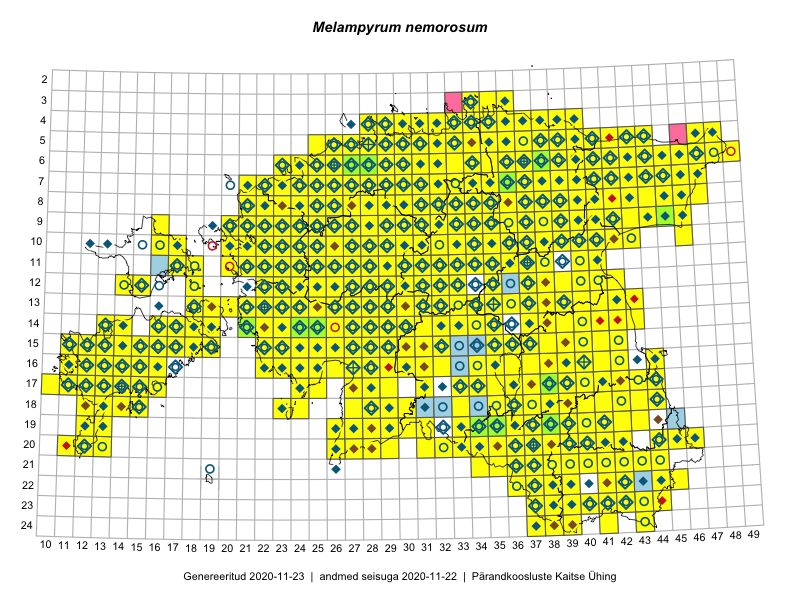

Melampyrum nemorosum — harilik härghein
Orobanchaceae :: Melampyrum nemorosum L. (2149)

Kaart põhineb 4729 kirjel:
vaatlusi 1911
herbaareksemplare 238
PKÜ kirjeid1 1972
ELFi kirjeid2 544
LVA kirjeid3 64
Taime kaasaegsed ja ajaloolised leiukohad asuvad 480 ruudus.
Tingmärgid ja leidudega ruutude arvud periooditi uues (u) ja 2005 andmestikus (v)
| █ | vahemik | u4 | v5 |
|---|---|---|---|
| █ | 2006–2020 | 459 | – |
| ◆/◇ | 1971–2005 | 370 | 368 |
| ○ | 1921–1970 | 253 | 43 |
| + | kuni 1920 | 10 | 0 |
| × | hävinud | – | 0 |
| ? | kaheldav | – | 0 |
| Ruut | Leidja(d) | Leiuaeg | Kirje |
|---|---|---|---|
| 19-38 | Ott Luuk | 2020-09-12 | PKÜ: 21164 |
| 14-32 | Tiit Hallikma | 2020-09-10 | ELF: 1104 |
| 24-38 | Meeli Mesipuu | 2020-09-08 | PKÜ: 20696 |
| 24-38 | Meeli Mesipuu | 2020-09-07 | PKÜ: 20476 |
| 06-25 | Toomas Kukk, Peedu Saar | 2020-09-02 | ruut/ala: Melampyrum nemorosum L. |
| 08-32 | Toomas Kukk | 2020-09-02 | PKÜ: 20907 |
| 08-32 | Peedu Saar | 2020-09-02 | PKÜ: 20908 |
| 16-30 | Ott Luuk, Meeli Mesipuu | 2020-09-01 | PKÜ: 20871 |
| 16-30 | Ott Luuk, Meeli Mesipuu | 2020-09-01 | PKÜ: 20876 |
| 16-22 | Peedu Saar | 2020-08-31 | ruut/ala: Melampyrum nemorosum L. |
| 14-22 | Ott Luuk, Meeli Mesipuu | 2020-08-30 | PKÜ: 20622 |
| 07-43 | Meeli Mesipuu | 2020-08-28 | punkt: Melampyrum nemorosum L. |
| 20-27 | Meeli Mesipuu | 2020-08-28 | PKÜ: 20719 |
| 20-27 | Meeli Mesipuu | 2020-08-28 | PKÜ: 20740 |
| 19-29 | Meeli Mesipuu | 2020-08-28 | PKÜ: 20744 |
| 06-35 | Toomas Kukk | 2020-08-27 | PKÜ: 21010 |
| 06-36 | Toomas Kukk | 2020-08-27 | PKÜ: 21020 |
| 06-36 | Toomas Kukk | 2020-08-27 | PKÜ: 21023 |
| 06-36 | Toomas Kukk | 2020-08-27 | PKÜ: 21022 |
| 05-35;06-35 | Peedu Saar | 2020-08-27 | PKÜ: 20914 |
| 06-35 | Peedu Saar | 2020-08-27 | PKÜ: 20917 |
| 15-18 | Mari Reitalu, Sirje Azarov | 2020-08-27 | ruut/ala: Melampyrum nemorosum L. |
| 04-37 | Toomas Kukk | 2020-08-26 | PKÜ: 21003 |
| 04-37 | Toomas Kukk | 2020-08-26 | PKÜ: 21004 |
| 04-37 | Toomas Kukk | 2020-08-26 | PKÜ: 21005 |
| 04-37 | Peedu Saar | 2020-08-26 | PKÜ: 20909 |
| 07-41 | Meeli Mesipuu | 2020-08-26 | punkt: Melampyrum nemorosum L. |
| 10-32 | Ott Luuk | 2020-08-25 | PKÜ: 20583 |
| 11-31 | Ott Luuk | 2020-08-24 | ruut/ala: Melampyrum nemorosum L. |
| 10-30 | Ott Luuk | 2020-08-24 | ruut/ala: Melampyrum nemorosum L. |
| 07-33 | Meeli Mesipuu | 2020-08-23 | PKÜ: 20390 |
| 07-33 | Meeli Mesipuu | 2020-08-23 | PKÜ: 20392 |
| 19-36 | Meeli Mesipuu | 2020-08-19 | ruut/ala: Melampyrum nemorosum L. |
| 14-19 | Meeli Mesipuu | 2020-08-12 | ruut/ala: Melampyrum nemorosum L. |
| 14-17 | Mari Reitalu, Sirje Azarov | 2020-08-12 | ruut/ala: Melampyrum nemorosum L. |
| 13-18 | Mari Reitalu, Sirje Azarov | 2020-08-11 | punkt: Melampyrum nemorosum L. |
| 14-18 | Meeli Mesipuu | 2020-08-10 | PKÜ: 20277 |
| 19-34 | Tiit Hallikma | 2020-08-09 | ELF: 16075 |
| 09-21 | Ott Luuk | 2020-08-07 | ruut/ala: Melampyrum nemorosum L. |
| 10-23 | Ott Luuk | 2020-08-05 | ruut/ala: Melampyrum nemorosum L. |
| 16-12 | Karl Hendrik Tamkivi | 2020-08-05 | punkt: Melampyrum nemorosum L. |
| 12-37 | Enn Selgis | 2020-07-31 | LVA: 1177183982 |
| 05-28 | Peedu Saar | 2020-07-30 | ruut/ala: Melampyrum nemorosum L. |
| 07-44 | Toomas Kukk | 2020-07-29 | PKÜ: 21084 |
| 09-45 | Toomas Kukk | 2020-07-29 | PKÜ: 21087 |
| 07-44 | Toomas Kukk | 2020-07-29 | PKÜ: 21083 |
| 09-45 | Toomas Kukk | 2020-07-29 | PKÜ: 21086 |
| 08-45 | Peedu Saar | 2020-07-29 | PKÜ: 20503 |
| 09-45 | Peedu Saar | 2020-07-29 | PKÜ: 20504 |
| 07-44 | Peedu Saar | 2020-07-29 | PKÜ: 20512 |
| 07-44 | Peedu Saar | 2020-07-29 | PKÜ: 21085 |
| 08-42 | Peedu Saar | 2020-07-28 | PKÜ: 20495 |
| 08-42 | Peedu Saar | 2020-07-28 | PKÜ: 20497 |
| 08-42 | Peedu Saar | 2020-07-28 | PKÜ: 20501 |
| 08-43 | Peedu Saar | 2020-07-28 | PKÜ: 20518 |
| 09-42 | Peedu Saar | 2020-07-28 | PKÜ: 20526 |
| 13-37 | Ulvi Selgis, Enn Selgis | 2020-07-27 | punkt: Melampyrum nemorosum L. |
| 17-34 | Meeli Mesipuu | 2020-07-26 | ruut/ala: Melampyrum nemorosum L. |
| 14-14 | Mari Reitalu, Sirje Azarov, Aira Alasi | 2020-07-23 | ruut/ala: Melampyrum nemorosum L. |
| 08-25 | Ott Luuk | 2020-07-22–2020-07-23 | ruut/ala: Melampyrum nemorosum L. |
| 15-36 | Art Villem Adojaan | 2020-07-22 | punkt: Melampyrum nemorosum L. |
| 09-26 | Ott Luuk | 2020-07-21–2020-07-23 | ruut/ala: Melampyrum nemorosum L. |
| 19-39 | Meeli Mesipuu | 2020-07-21 | PKÜ: 20202 |
| 06-31 | Eerik Leibak | 2020-07-19 | ELF: 313 |
| 16-39 | Art Villem Adojaan, Amaranta Põld | 2020-07-19 | punkt: Melampyrum nemorosum L. |
| 07-26 | Eerik Leibak | 2020-07-18 | ELF: 1355 |
| 14-38 | Meeli Mesipuu | 2020-07-16 | ruut/ala: Melampyrum nemorosum L. |
| 08-26 | Kaili Kattai | 2020-07-16 | punkt: Melampyrum nemorosum L. |
| 08-26 | Kaili Kattai | 2020-07-16 | punkt: Melampyrum nemorosum L. |
| 19-39 | Meeli Mesipuu | 2020-07-15 | PKÜ: 20176 |
| 19-39 | Meeli Mesipuu | 2020-07-15 | PKÜ: 20177 |
| 20-37 | Jaanus Paal, Taimi Paal | 2020-07-15 | ELF: 22722 |
| 05-32 | Rein Kalamees | 2020-07-12 | ruut/ala: Melampyrum nemorosum L. |
| 09-21 | Kaili Kattai | 2020-07-12 | punkt: Melampyrum nemorosum L. |
| 19-29 | Värdi Soomann | 2020-07-10 | LVA: 669596328 |
| 14-22 | Silvia Pihu | 2020-07-08 | ELF: 43 |
| 14-23 | Silvia Pihu | 2020-07-08 | ELF: 993 |
| 10-24 | Kaili Kattai | 2020-07-06 | punkt: Melampyrum nemorosum L. |
| 05-31 | Rein Kalamees | 2020-07-05 | ruut/ala: Melampyrum nemorosum L. |
| 05-32 | Rein Kalamees | 2020-07-05 | ruut/ala: Melampyrum nemorosum L. |
| 14-21 | Kaili Kattai | 2020-07-05 | punkt: Melampyrum nemorosum L. |
| 13-21 | Kaili Kattai | 2020-07-04 | punkt: Melampyrum nemorosum L. |
| 17-15 | Toomas Kukk | 2020-07-03 | PKÜ: 21199 |
| 17-15 | Toomas Kukk | 2020-07-03 | PKÜ: 21200 |
| 17-15 | Toomas Kukk | 2020-07-03 | PKÜ: 21201 |
| 20-12 | Peedu Saar | 2020-07-02 | PKÜ: 20552 |
| 16-11 | Toomas Kukk | 2020-07-01 | PKÜ: 20492 |
| 16-11 | Toomas Kukk | 2020-07-01 | PKÜ: 20494 |
| 17-11 | Toomas Kukk | 2020-07-01 | PKÜ: 20506 |
| 17-11 | Toomas Kukk | 2020-07-01 | PKÜ: 20507 |
| 17-11 | Peedu Saar | 2020-07-01 | PKÜ: 20472 |
| 17-11 | Peedu Saar | 2020-07-01 | PKÜ: 20479 |
| 17-11 | Peedu Saar | 2020-07-01 | PKÜ: 20488 |
| 17-11 | Ott Luuk, Rein Kalamees | 2020-07-01 | PKÜ: 20212 |
| 13-26 | Peedu Saar, Toomas Kukk | 2020-06-28 | punkt: Melampyrum nemorosum L. |
| 20-37 | Ott Luuk | 2020-06-27 | ruut/ala: Melampyrum nemorosum L. |
| 04-33 | Rein Kalamees | 2020-06-26 | PKÜ: 20248 |
| 04-33 | Rein Kalamees | 2020-06-22 | PKÜ: 20241 |
| 04-33 | Rein Kalamees | 2020-06-22 | PKÜ: 20242 |
| 04-33 | Rein Kalamees | 2020-06-22 | PKÜ: 20245 |
| 04-33 | Rein Kalamees | 2020-06-22 | PKÜ: 20251 |
| 04-33 | Rein Kalamees | 2020-06-22 | PKÜ: 20252 |
| 08-28 | Ott Luuk | 2020-06-21 | ruut/ala: Melampyrum nemorosum L. |
| 07-28 | Ott Luuk | 2020-06-21 | ruut/ala: Melampyrum nemorosum L. |
| 07-26 | Kaili Kattai | 2020-06-21 | punkt: Melampyrum nemorosum L. |
| 17-38 | Jaak Pärtel | 2020-06-21 | punkt: Melampyrum nemorosum L. |
| 17-38 | Jaak Pärtel | 2020-06-21 | punkt: Melampyrum nemorosum L. |
| 17-38 | Jaak Pärtel | 2020-06-21 | punkt: Melampyrum nemorosum L. |
| 17-38 | Jaak Pärtel | 2020-06-21 | punkt: Melampyrum nemorosum L. |
| 05-29 | Peedu Saar, Mart Meriste | 2020-06-19 | ruut/ala: Melampyrum nemorosum L. |
| 13-21 | Rein Kalamees | 2020-06-18 | PKÜ: 21107 |
| 05-27 | Toomas Kukk, Rein Kalamees, Martin Tikk | 2020-06-17 | PKÜ: 20845 |
| 07-29 | Toomas Kukk, Martin Tikk, Rein Kalamees | 2020-06-17 | ruut/ala: Melampyrum nemorosum L. |
| 05-27 | Toomas Kukk, Martin Tikk, Rein Kalamees | 2020-06-17 | ruut/ala: Melampyrum nemorosum L. |
| 06-26 | Toomas Kukk, Martin Tikk | 2020-06-17 | PKÜ: 20771 |
| 06-26 | Toomas Kukk, Martin Tikk | 2020-06-17 | PKÜ: 20772 |
| 06-26 | Rein Kalamees | 2020-06-17 | PKÜ: 20760 |
| 06-26 | Rein Kalamees | 2020-06-17 | PKÜ: 20762 |
| 11-27 | Peedu Saar | 2020-06-17 | PKÜ: 21218 |
| 11-27 | Peedu Saar | 2020-06-17 | PKÜ: 21219 |
| 11-27 | Peedu Saar | 2020-06-17 | PKÜ: 21220 |
| 11-27 | Peedu Saar | 2020-06-17 | PKÜ: 21221 |
| 11-26 | Peedu Saar | 2020-06-17 | PKÜ: 21223 |
| 10-27 | Peedu Saar | 2020-06-17 | PKÜ: 21226 |
| 10-21 | Meeli Mesipuu, Ott Luuk | 2020-06-17 | PKÜ: 21121 |
| 05-26 | Toomas Kukk, Rein Kalamees, Martin Tikk | 2020-06-16 | PKÜ: 20850 |
| 06-27 | Toomas Kukk, Rein Kalamees, Martin Tikk | 2020-06-16 | PKÜ: 20853 |
| 06-27 | Toomas Kukk, Martin Tikk, Rein Kalamees | 2020-06-16 | ruut/ala: Melampyrum nemorosum L. |
| 12-22 | Meeli Mesipuu | 2020-06-16 | PKÜ: 21142 |
| 08-27 | Toomas Kukk, Rein Kalamees | 2020-06-15 | PKÜ: 20487 |
| 08-27 | Toomas Kukk, Rein Kalamees | 2020-06-15 | PKÜ: 20462 |
| 09-28 | Toomas Kukk, Rein Kalamees | 2020-06-15 | PKÜ: 20467 |
| 11-32 | Peedu Saar, Ott Luuk | 2020-06-15 | PKÜ: 20410 |
| 10-30 | Peedu Saar | 2020-06-15 | PKÜ: 20379 |
| 10-30 | Peedu Saar | 2020-06-15 | PKÜ: 20384 |
| 10-30 | Peedu Saar | 2020-06-15 | PKÜ: 20399 |
| 11-32 | Peedu Saar | 2020-06-15 | PKÜ: 20417 |
| 11-32 | Peedu Saar | 2020-06-15 | PKÜ: 20418 |
| 11-32 | Peedu Saar | 2020-06-15 | PKÜ: 20419 |
| 10-30 | Ott Luuk, Peedu Saar | 2020-06-15 | PKÜ: 20393 |
| 10-30 | Ott Luuk, Peedu Saar | 2020-06-15 | PKÜ: 20400 |
| 10-30 | Ott Luuk, Peedu Saar | 2020-06-15 | PKÜ: 20401 |
| 10-30 | Ott Luuk, Peedu Saar | 2020-06-15 | PKÜ: 20402 |
| 10-30 | Ott Luuk, Peedu Saar | 2020-06-15 | PKÜ: 20407 |
| 10-30 | Ott Luuk, Peedu Saar | 2020-06-15 | PKÜ: 20408 |
| 10-30 | Ott Luuk, Peedu Saar | 2020-06-15 | PKÜ: 20409 |
| 11-32 | Ott Luuk, Peedu Saar | 2020-06-15 | PKÜ: 20415 |
| 11-32 | Ott Luuk, Peedu Saar | 2020-06-15 | PKÜ: 20416 |
| 13-31 | Meeli Mesipuu | 2020-06-15 | PKÜ: 21139 |
| 05-31 | Rein Kalamees | 2020-06-13 | ruut/ala: Melampyrum nemorosum L. |
| 18-39 | Avo Veermäe | 2020-06-13 | LVA: 1495221078 |
| 04-32 | Peedu Saar, Ene Kook | 2020-06-11 | ruut/ala: Melampyrum nemorosum L. |
| 04-32 | Peedu Saar | 2020-06-11 | PKÜ: 20374 |
| 04-32 | Peedu Saar | 2020-06-11 | PKÜ: 20375 |
| 05-32 | Ene Kook, Peedu Saar | 2020-06-11 | PKÜ: 20372 |
| 04-32 | Ene Kook | 2020-06-11 | PKÜ: 20376 |
| 04-32 | Ene Kook | 2020-06-11 | PKÜ: 20377 |
| 05-34 | Rein Kalamees, Ott Luuk | 2020-06-10 | PKÜ: 20664 |
| 05-34 | Rein Kalamees, Ott Luuk | 2020-06-10 | PKÜ: 20665 |
| 05-34 | Rein Kalamees, Ott Luuk | 2020-06-10 | PKÜ: 20666 |
| 05-34 | Rein Kalamees, Ott Luuk | 2020-06-10 | PKÜ: 20667 |
| 05-34 | Rein Kalamees, Ott Luuk | 2020-06-10 | PKÜ: 20668 |
| 05-34 | Rein Kalamees, Ott Luuk | 2020-06-10 | PKÜ: 20669 |
| 05-34 | Rein Kalamees, Ott Luuk | 2020-06-10 | PKÜ: 20651 |
| 05-34 | Ott Luuk, Rein Kalamees | 2020-06-10 | PKÜ: 20670 |
| 05-34 | Ott Luuk, Rein Kalamees | 2020-06-10 | PKÜ: 20671 |
| 05-34 | Rein Kalamees, Ott Luuk | 2020-06-09 | PKÜ: 20261 |
| 05-34 | Rein Kalamees, Ott Luuk | 2020-06-09 | PKÜ: 20262 |
| 05-34 | Rein Kalamees, Ott Luuk | 2020-06-09 | PKÜ: 20263 |
| 05-34 | Rein Kalamees, Ott Luuk | 2020-06-09 | PKÜ: 20264 |
| 05-33 | Rein Kalamees, Ott Luuk | 2020-06-09 | PKÜ: 20266 |
| 04-34 | Meeli Mesipuu, Toomas Kukk | 2020-06-09 | PKÜ: 20810 |
| 04-33 | Meeli Mesipuu, Toomas Kukk | 2020-06-09 | PKÜ: 20816 |
| 04-33 | Meeli Mesipuu, Toomas Kukk | 2020-06-09 | PKÜ: 21049 |
| 07-36 | Toomas Kukk, Meeli Mesipuu | 2020-06-08 | PKÜ: 20785 |
| 07-37 | Toomas Kukk, Meeli Mesipuu | 2020-06-08 | PKÜ: 20792 |
| 05-34 | Ott Luuk, Rein Kalamees | 2020-06-08 | PKÜ: 20214 |
| 05-34 | Ott Luuk, Rein Kalamees | 2020-06-08 | PKÜ: 20258 |
| 07-37 | Meeli Mesipuu, Toomas Kukk | 2020-06-08 | PKÜ: 20793 |
| 16-40 | Jelle Devalez | 2020-06-07 | punkt: Melampyrum nemorosum L. |
| 16-40 | Jelle Devalez | 2020-06-07 | punkt: Melampyrum nemorosum L. |
| 16-40 | Jelle Devalez | 2020-06-07 | punkt: Melampyrum nemorosum L. |
| 19-33 | Heidi Öövel, Mihkel Tiido | 2020-06-07 | punkt: Melampyrum nemorosum L. |
| 16-40 | Villu Soon | 2020-06-06 | punkt: Melampyrum nemorosum L. |
| 04-36 | Tiina Reintal | 2020-06-06 | punkt: Melampyrum nemorosum L. |
| 05-35 | Kristel Turja, Ojar Kristal, Tõnis Valing, Raimo Oinus, Ojar Kristal | 2020-06-06 | punkt: Melampyrum nemorosum L. |
| 10-22 | Kaili Kattai | 2020-06-06 | punkt: Melampyrum nemorosum L. |
| 10-22 | Kaili Kattai | 2020-06-06 | punkt: Melampyrum nemorosum L. |
| 11-24 | Jane Pärnalaas | 2020-06-06 | punkt: Melampyrum nemorosum L. |
| 19-33 | Heidi Öövel, Mihkel Tiido | 2020-06-06 | punkt: Melampyrum nemorosum L. |
| 08-33 | Ester Valdvee | 2020-06-06 | punkt: Melampyrum nemorosum L. |
| 10-28 | Aat Sarv, Lemmelill Sarv | 2020-06-06 | punkt: Melampyrum nemorosum L. |
| 14-21 | Kaili Kattai | 2020-06-04 | punkt: Melampyrum nemorosum L. |
| 14-21 | Kaili Kattai | 2020-06-04 | punkt: Melampyrum nemorosum L. |
| 14-21 | Kaili Kattai | 2020-06-04 | punkt: Melampyrum nemorosum L. |
| 13-25 | Ants Animägi | 2020-06-03 | LVA: -1796224364 |
| 17-15 | Mari Reitalu, Sirje Azarov, Triin Reitalu | 2020-05-28 | ruut/ala: Melampyrum nemorosum L. |
| 17-14 | Mari Reitalu, Triin Reitalu, Sirje Azarov | 2020-05-26 | ruut/ala: Melampyrum nemorosum L. |
| 18-44 | Peedu Saar, Ott Luuk | 2019-09-24 | ruut/ala: Melampyrum nemorosum L. |
| 10-22 | Toomas Kukk, Peedu Saar | 2019-09-19 | ruut/ala: Melampyrum nemorosum L. |
| 10-21 | Ott Luuk | 2019-09-19 | ruut/ala: Melampyrum nemorosum L. |
| 08-45 | Toomas Kukk, Thea Kull | 2019-09-12 | ruut/ala: Melampyrum nemorosum L. |
| 08-44 | Thea Kull, Toomas Kukk | 2019-09-12 | ruut/ala: Melampyrum nemorosum L. |
| 06-47 | Peedu Saar, Timo Luhamäe | 2019-09-12 | ruut/ala: Melampyrum nemorosum L. |
| 06-45 | Thea Kull, Toomas Kukk | 2019-09-11 | punkt: Melampyrum nemorosum L. |
| 10-46 | Peedu Saar, Timo Luhamäe | 2019-09-11 | ruut/ala: Melampyrum nemorosum L. |
| 05-43 | Ott Luuk, Meeli Mesipuu | 2019-09-11 | ruut/ala: Melampyrum nemorosum L. |
| 05-44 | Meeli Mesipuu, Ott Luuk | 2019-09-11 | ruut/ala: Melampyrum nemorosum L. |
| 10-39 | Toomas Kukk, Thea Kull | 2019-09-10 | ruut/ala: Melampyrum nemorosum L. |
| 10-40 | Toomas Kukk, Thea Kull | 2019-09-10 | ruut/ala: Melampyrum nemorosum L. |
| 08-41 | Peedu Saar, Timo Luhamäe | 2019-09-10 | ruut/ala: Melampyrum nemorosum L. |
| 08-43 | Ott Luuk, Meeli Mesipuu | 2019-09-10 | ruut/ala: Melampyrum nemorosum L. |
| 08-24 | Peedu Saar, Ott Luuk | 2019-09-05 | ruut/ala: Melampyrum nemorosum L. |
| 08-25 | Ott Luuk, Peedu Saar | 2019-09-05 | ruut/ala: Melampyrum nemorosum L. |
| 09-22 | Ott Luuk | 2019-09-03–2019-09-04 | ruut/ala: Melampyrum nemorosum L. |
| 15-40 | Kaili Kattai | 2019-08-31 | punkt: Melampyrum nemorosum L. |
| 15-28 | Toomas Kukk, Peedu Saar | 2019-08-29 | ruut/ala: Melampyrum nemorosum L. |
| 15-29 | Peedu Saar, Toomas Kukk | 2019-08-29 | ruut/ala: Melampyrum nemorosum L. |
| 15-29 | Peedu Saar, Toomas Kukk | 2019-08-29 | ruut/ala: Melampyrum nemorosum L. |
| 13-32 | Ott Luuk, Eerik Leibak | 2019-08-29 | ruut/ala: Melampyrum nemorosum L. |
| 13-31 | Ott Luuk, Eerik Leibak | 2019-08-29 | ruut/ala: Melampyrum nemorosum L. |
| 14-32 | Meeli Mesipuu, Timo Luhamäe | 2019-08-29 | ruut/ala: Melampyrum nemorosum L. |
| 15-31 | Meeli Mesipuu, Timo Luhamäe | 2019-08-28 | ruut/ala: Melampyrum nemorosum L. |
| 15-31 | Meeli Mesipuu, Timo Luhamäe | 2019-08-28 | punkt: Melampyrum nemorosum L. |
| 13-29 | Mari Reitalu, Thea Kull | 2019-08-28 | ruut/ala: Melampyrum nemorosum L. |
| 14-29 | Mari Reitalu, Thea Kull | 2019-08-28 | ruut/ala: Melampyrum nemorosum L. |
| 12-35 | Ott Luuk, Eerik Leibak | 2019-08-27 | ruut/ala: Melampyrum nemorosum L. |
| 15-35 | Meeli Mesipuu, Timo Luhamäe | 2019-08-27 | ruut/ala: Melampyrum nemorosum L. |
| 16-40 | Kaili Kattai | 2019-08-27 | punkt: Melampyrum nemorosum L. |
| 09-21 | Peedu Saar, Ott Luuk, Sten Mander, Kersti Tambets, Kristine Fenske | 2019-08-23 | ruut/ala: Melampyrum nemorosum L. |
| 10-23 | Peedu Saar, Ott Luuk, Sten Mander, Kersti Tambets, Kristine Fenske | 2019-08-22 | ruut/ala: Melampyrum nemorosum L. |
| 18-44 | Peedu Saar, Ott Luuk | 2019-08-21 | ruut/ala: Melampyrum nemorosum L. |
| 09-46 | Kaili Kattai | 2019-08-18 | punkt: Melampyrum nemorosum L. |
| 09-22 | Peedu Saar | 2019-08-16 | ruut/ala: Melampyrum nemorosum L. |
| 11-36 | Peedu Saar | 2019-08-10 | ruut/ala: Melampyrum nemorosum L. |
| 10-36 | Peedu Saar, Timo Luhamäe | 2019-08-08 | ruut/ala: Melampyrum nemorosum L. |
| 10-34 | Peedu Saar, Timo Luhamäe | 2019-08-08 | ruut/ala: Melampyrum nemorosum L. |
| 07-32 | Ott Luuk, Jaak-Albert Metsoja | 2019-08-08 | ruut/ala: Melampyrum nemorosum L. |
| 08-33 | Ott Luuk, Jaak-Albert Metsoja | 2019-08-08 | ruut/ala: Melampyrum nemorosum L. |
| 07-33 | Ott Luuk, Jaak-Albert Metsoja | 2019-08-08 | ruut/ala: Melampyrum nemorosum L. |
| 04-35 | Meeli Mesipuu | 2019-08-08 | ruut/ala: Melampyrum nemorosum L. |
| 06-35 | Toomas Kukk, Rein Kalamees, Kaur Maran | 2019-08-07 | ruut/ala: Melampyrum nemorosum L. |
| 06-36 | Peedu Saar, Timo Luhamäe | 2019-08-07 | ruut/ala: Melampyrum nemorosum L. |
| 05-36 | Peedu Saar, Timo Luhamäe | 2019-08-07 | ruut/ala: Melampyrum nemorosum L. |
| 05-35 | Peedu Saar, Timo Luhamäe | 2019-08-07 | ruut/ala: Melampyrum nemorosum L. |
| 04-33 | Ott Luuk, Jaak-Albert Metsoja | 2019-08-07 | ruut/ala: Melampyrum nemorosum L. |
| 04-37 | Meeli Mesipuu | 2019-08-07 | ruut/ala: Melampyrum nemorosum L. |
| 04-37 | Meeli Mesipuu | 2019-08-07 | punkt: Melampyrum nemorosum L. |
| 03-34 | Rein Kalamees, Toomas Kukk | 2019-08-06 | ruut/ala: Melampyrum nemorosum L. |
| 05-30 | Peedu Saar, Timo Luhamäe | 2019-08-06 | ruut/ala: Melampyrum nemorosum L. |
| 05-38 | Ott Luuk, Jaak-Albert Metsoja | 2019-08-06 | ruut/ala: Melampyrum nemorosum L. |
| 04-38 | Ott Luuk, Jaak-Albert Metsoja | 2019-08-06 | ruut/ala: Melampyrum nemorosum L. |
| 04-39 | Ott Luuk, Jaak-Albert Metsoja | 2019-08-06 | ruut/ala: Melampyrum nemorosum L. |
| 04-36 | Meeli Mesipuu | 2019-08-06 | ruut/ala: Melampyrum nemorosum L. |
| 05-32 | Rein Kalamees, Toomas Kukk | 2019-08-05 | ruut/ala: Melampyrum nemorosum L. |
| 04-32 | Rein Kalamees, Toomas Kukk | 2019-08-05 | ruut/ala: Melampyrum nemorosum L. |
| 07-26 | Ranno Puumets | 2019-08-05 | ruut/ala: Melampyrum nemorosum L. |
| 06-31 | Peedu Saar, Timo Luhamäe | 2019-08-05 | ruut/ala: Melampyrum nemorosum L. |
| 07-31 | Peedu Saar, Timo Luhamäe | 2019-08-05 | ruut/ala: Melampyrum nemorosum L. |
| 08-36 | Ott Luuk, Jaak-Albert Metsoja | 2019-08-05 | ruut/ala: Melampyrum nemorosum L. |
| 07-36 | Ott Luuk, Jaak-Albert Metsoja | 2019-08-05 | ruut/ala: Melampyrum nemorosum L. |
| 06-38 | Meeli Mesipuu | 2019-08-05 | ruut/ala: Melampyrum nemorosum L. |
| 06-39 | Meeli Mesipuu | 2019-08-05 | ruut/ala: Melampyrum nemorosum L. |
| 10-24 | Tõnu Ploompuu | 2019-08-03 | ELF: 7764 |
| 23-38 | Peedu Saar, Toomas Kukk | 2019-08-01 | punkt: Melampyrum nemorosum L. |
| 23-42 | Toomas Kukk, Peedu Saar | 2019-07-31 | ruut/ala: Melampyrum nemorosum L. |
| 05-32 | Aarne Männik | 2019-07-28 | LVA: 1538850082 |
| 08-21 | Peedu Saar | 2019-07-26 | ruut/ala: Melampyrum nemorosum L. |
| 08-21 | Peedu Saar | 2019-07-26 | ELF: 1486 |
| 09-31 | Ott Luuk, Toivo Sepp | 2019-07-25 | ruut/ala: Melampyrum nemorosum L. |
| 16-40 | Thea Kull | 2019-07-24 | punkt: Melampyrum nemorosum L. |
| 07-21 | Peedu Saar | 2019-07-24 | ruut/ala: Melampyrum nemorosum L. |
| 07-22 | Peedu Saar | 2019-07-24 | ruut/ala: Melampyrum nemorosum L. |
| 08-31 | Ott Luuk, Toivo Sepp | 2019-07-24 | ruut/ala: Melampyrum nemorosum L. |
| 17-39 | Thea Kull | 2019-07-23 | ruut/ala: Melampyrum nemorosum L. |
| 08-22 | Peedu Saar | 2019-07-23 | ruut/ala: Melampyrum nemorosum L. |
| 11-30 | Ott Luuk, Toivo Sepp | 2019-07-23 | ruut/ala: Melampyrum nemorosum L. |
| 17-38 | Meeli Mesipuu | 2019-07-23 | ruut/ala: Melampyrum nemorosum L. |
| 17-38 | Meeli Mesipuu | 2019-07-23 | ruut/ala: Melampyrum nemorosum L. |
| 11-22 | Tõnu Ploompuu, Eliko Kõiv | 2019-07-21 | ELF: 231 |
| 10-24 | Tõnu Ploompuu, Eliko Kõiv | 2019-07-20 | ELF: 9869 |
| 14-27 | Meeli Mesipuu | 2019-07-19 | ruut/ala: Melampyrum nemorosum L. |
| 14-27 | Meeli Mesipuu | 2019-07-19 | ruut/ala: Melampyrum nemorosum L. |
| 12-32 | Eda Koskor | 2019-07-19 | LVA: 52795896 |
| 10-26 | Rein Kalamees | 2019-07-17 | ruut/ala: Melampyrum nemorosum L. |
| 16-40 | Meeli Mesipuu | 2019-07-17 | ruut/ala: Melampyrum nemorosum L. |
| 16-40 | Meeli Mesipuu | 2019-07-17 | punkt: Melampyrum nemorosum L. |
| 16-40 | Meeli Mesipuu | 2019-07-17 | ruut/ala: Melampyrum nemorosum L. |
| 16-40 | Meeli Mesipuu | 2019-07-17 | ruut/ala: Melampyrum nemorosum L. |
| 08-27;09-27 | Eerik Leibak | 2019-07-17 | ELF: 875 |
| 23-40 | Martin Küttim, Marko Vainu | 2019-07-16–2019-07-17 | ELF: 15245 |
| 19-36 | Ott Luuk, Peedu Saar | 2019-07-16 | ruut/ala: Melampyrum nemorosum L. |
| 19-35 | Ott Luuk, Peedu Saar | 2019-07-16 | ruut/ala: Melampyrum nemorosum L. |
| 05-39 | Elen Neito | 2019-07-16 | LVA: 1900232548 |
| 17-38 | Peedu Saar, Ott Luuk | 2019-07-15 | ruut/ala: Melampyrum nemorosum L. |
| 08-27 | Eerik Leibak | 2019-07-14 | ELF: 13081 |
| 23-38 | Peedu Saar, Timo Luhamäe | 2019-07-12 | ruut/ala: Melampyrum nemorosum L. |
| 22-44 | Ott Luuk, Tiit Hallikma | 2019-07-12 | ruut/ala: Melampyrum nemorosum L. |
| 18-42 | Meeli Mesipuu | 2019-07-12 | ruut/ala: Melampyrum nemorosum L. |
| 19-42 | Meeli Mesipuu | 2019-07-12 | ruut/ala: Melampyrum nemorosum L. |
| 23-37 | Peedu Saar, Timo Luhamäe | 2019-07-11 | ruut/ala: Melampyrum nemorosum L. |
| 24-43 | Ott Luuk, Tiit Hallikma | 2019-07-11 | ruut/ala: Melampyrum nemorosum L. |
| 23-43 | Ott Luuk, Tiit Hallikma | 2019-07-11 | ruut/ala: Melampyrum nemorosum L. |
| 19-41 | Meeli Mesipuu | 2019-07-11 | ruut/ala: Melampyrum nemorosum L. |
| 18-41 | Meeli Mesipuu | 2019-07-10 | ruut/ala: Melampyrum nemorosum L. |
| 18-41 | Meeli Mesipuu | 2019-07-10 | punkt: Melampyrum nemorosum L. |
| 17-11 | Mari Reitalu, Sirje Azarov | 2019-07-10 | ELF: 9983 |
| 19-35 | Siiri Kõljalg | 2019-07-07 | HSSK20084: Melampyrum nemorosum L. |
| 15-15 | Toomas Kukk, Eerik Leibak | 2019-07-05 | ruut/ala: Melampyrum nemorosum L. |
| 04-39 | Peedu Saar, Ott Luuk | 2019-07-05 | ruut/ala: Melampyrum nemorosum L. |
| 05-40 | Peedu Saar, Ott Luuk | 2019-07-05 | ruut/ala: Melampyrum nemorosum L. |
| 06-39 | Peedu Saar, Ott Luuk | 2019-07-05 | ruut/ala: Melampyrum nemorosum L. |
| 06-39 | Ott Luuk, Peedu Saar | 2019-07-05 | punkt: Melampyrum nemorosum L. |
| 05-39 | Ott Luuk, Peedu Saar | 2019-07-05 | ruut/ala: Melampyrum nemorosum L. |
| 12-41 | Peedu Saar, Ott Luuk | 2019-07-04 | ruut/ala: Melampyrum nemorosum L. |
| 07-39 | Peedu Saar, Ott Luuk | 2019-07-04 | ruut/ala: Melampyrum nemorosum L. |
| 08-41 | Ott Luuk, Peedu Saar | 2019-07-04 | ruut/ala: Melampyrum nemorosum L. |
| 07-40 | Ott Luuk, Peedu Saar | 2019-07-04 | punkt: Melampyrum nemorosum L. |
| 09-33 | Liisa Oks | 2019-07-03 | LVA: -1313304784 |
| 10-17 | Eerik Leibak, Toomas Kukk | 2019-07-01 | ruut/ala: Melampyrum nemorosum L. |
| 05-28 | Meeli Mesipuu | 2019-06-30 | ruut/ala: Melampyrum nemorosum L. |
| 05-28 | Meeli Mesipuu | 2019-06-30 | ruut/ala: Melampyrum nemorosum L. |
| 05-28 | Meeli Mesipuu | 2019-06-30 | ruut/ala: Melampyrum nemorosum L. |
| 05-27 | Meeli Mesipuu | 2019-06-26 | ruut/ala: Melampyrum nemorosum L. |
| 06-27 | Meeli Mesipuu | 2019-06-22 | ruut/ala: Melampyrum nemorosum L. |
| 06-27 | Meeli Mesipuu | 2019-06-22 | ruut/ala: Melampyrum nemorosum L. |
| 06-27 | Meeli Mesipuu | 2019-06-22 | ruut/ala: Melampyrum nemorosum L. |
| 05-27 | Meeli Mesipuu | 2019-06-22 | ruut/ala: Melampyrum nemorosum L. |
| 22-38 | Tiina Ploom | 2019-06-20 | LVA: -783262188 |
| 06-27 | Meeli Mesipuu | 2019-06-16 | ruut/ala: Melampyrum nemorosum L. |
| 06-27 | Meeli Mesipuu | 2019-06-16 | ruut/ala: Melampyrum nemorosum L. |
| 06-27 | Meeli Mesipuu | 2019-06-16 | ruut/ala: Melampyrum nemorosum L. |
| 19-42 | Elis Sepp | 2019-06-15 | punkt: Melampyrum nemorosum L. |
| 03-34 | Vilja Padonik, Piia Haiba, Delisa Rääk, Gloria Intal, Iti Mehide, Teele Ann Tint, Meelis Haiba, Roger Kallis, Märten Mäekivi, Ott Mäekivi | 2019-06-14 | punkt: Melampyrum nemorosum L. |
| 04-36 | Tiina Reintal | 2019-06-14 | punkt: Melampyrum nemorosum L. |
| 23-40 | Taavi Tatsi, Jaak-Albert Metsoja | 2019-06-14 | punkt: Melampyrum nemorosum L. |
| 19-35 | Siiri Kõljalg | 2019-06-14 | punkt: Melampyrum nemorosum L. |
| 20-45 | Meeli Mets, Marili Slavski | 2019-06-14 | punkt: Melampyrum nemorosum L. |
| 19-38 | Maris Turb | 2019-06-14 | punkt: Melampyrum nemorosum L. |
| 14-19 | Ingo Valgma, Marje Loide, Riina Laurimaa | 2019-06-14 | punkt: Melampyrum nemorosum L. |
| 10-28 | Aat Sarv, Ott Luuk | 2019-06-14 | punkt: Melampyrum nemorosum L. |
| 05-28 | Thea Kull | 2019-06-13 | ruut/ala: Melampyrum nemorosum L. |
| 07-37 | Peedu Saar, Ott Luuk | 2019-06-12 | ruut/ala: Melampyrum nemorosum L. |
| 07-37 | Peedu Saar, Ott Luuk | 2019-06-12 | ruut/ala: Melampyrum nemorosum L. |
| 07-38 | Peedu Saar, Ott Luuk | 2019-06-12 | ruut/ala: Melampyrum nemorosum L. |
| 04-33 | Peedu Saar, Ott Luuk | 2019-06-11 | ruut/ala: Melampyrum nemorosum L. |
| 05-32 | Peedu Saar, Ott Luuk | 2019-06-11 | punkt: Melampyrum nemorosum L. |
| 05-33 | Ott Luuk, Peedu Saar | 2019-06-11 | ruut/ala: Melampyrum nemorosum L. |
| 10-38 | Peedu Saar, Ott Luuk | 2019-06-10 | ruut/ala: Melampyrum nemorosum L. |
| 10-37 | Peedu Saar, Ott Luuk | 2019-06-10 | ruut/ala: Melampyrum nemorosum L. |
| 11-37 | Ott Luuk, Peedu Saar | 2019-06-10 | ruut/ala: Melampyrum nemorosum L. |
| 13-26 | Eedi Lelov | 2019-06-09 | punkt: Melampyrum nemorosum L. |
| 17-43 | Peedu Saar | 2019-06-07 | ruut/ala: Melampyrum nemorosum L. |
| 15-26 | Indrek Tammekänd | 2019-06-05 | ruut/ala: Melampyrum nemorosum L. |
| 17-15 | Meeli Mesipuu | 2019-06-04 | ruut/ala: Melampyrum nemorosum L. |
| 14-21 | Meeli Mesipuu | 2019-05-31 | ruut/ala: Melampyrum nemorosum L. |
| 16-28 | Indrek Tammekänd | 2019-05-29–2019-08-23 | ruut/ala: Melampyrum nemorosum L. |
| 12-38 | Ott Luuk, Sten Mander, Kersti Tambets, Toomas Kukk | 2019-05-28 | punkt: Melampyrum nemorosum L. |
| 12-18 | Toomas Kukk, Peeter Pärn | 2018-09-15 | ruut/ala: Melampyrum nemorosum L. |
| 07-28 | Elen Neito | 2018-09-15 | LVA: 146558770 |
| 07-33 | Ireen Trummer | 2018-09-08 | LVA: 1907087014 |
| 09-37 | Rein Kalamees | 2018-09-07 | ruut/ala: Melampyrum nemorosum L. |
| 09-42 | Peedu Saar, Toomas Kukk | 2018-09-04 | ruut/ala: Melampyrum nemorosum L. |
| 05-41 | Peedu Saar, Toomas Kukk | 2018-09-03 | ruut/ala: Melampyrum nemorosum L. |
| 11-28 | Ott Luuk, Toivo Sepp | 2018-08-30 | ELF: 24575 |
| 05-32 | Imbi Vahuri | 2018-08-26 | punkt: Melampyrum nemorosum L. |
| 11-28 | Ott Luuk, Toivo Sepp | 2018-08-24–2018-08-30 | ruut/ala: Melampyrum nemorosum L. |
| 05-27 | Helen Kallaste | 2018-08-24 | LVA: -618513980 |
| 11-31 | Ott Luuk | 2018-08-23 | ruut/ala: Melampyrum nemorosum L. |
| 15-28 | Kristin Pille | 2018-08-19 | LVA: 1026866682 |
| 14-32 | Toomas Kukk | 2018-08-18 | ruut/ala: Melampyrum nemorosum L. |
| 07-47 | Meeli Mesipuu | 2018-08-18 | ruut/ala: Melampyrum nemorosum L. |
| 14-24 | Peedu Saar, Toomas Kukk, Ott Luuk, Kersti Tambets, Sten Mander | 2018-08-17 | ruut/ala: Melampyrum nemorosum L. |
| 13-23 | Peedu Saar, Toomas Kukk, Ott Luuk, Kersti Tambets, Sten Mander | 2018-08-17 | ruut/ala: Melampyrum nemorosum L. |
| 13-23 | Peedu Saar, Toomas Kukk, Ott Luuk, Kersti Tambets, Sten Mander | 2018-08-17 | ruut/ala: Melampyrum nemorosum L. |
| 12-22 | Peedu Saar, Toomas Kukk, Ott Luuk, Kersti Tambets, Sten Mander | 2018-08-17 | ruut/ala: Melampyrum nemorosum L. |
| 11-26 | Peedu Saar, Toomas Kukk, Ott Luuk, Kersti Tambets, Sten Mander | 2018-08-16 | ruut/ala: Melampyrum nemorosum L. |
| 10-27 | Peedu Saar, Toomas Kukk, Ott Luuk, Kersti Tambets, Sten Mander | 2018-08-16 | ruut/ala: Melampyrum nemorosum L. |
| 09-28 | Peedu Saar, Toomas Kukk, Ott Luuk, Kersti Tambets, Sten Mander | 2018-08-16 | ruut/ala: Melampyrum nemorosum L. |
| 11-29 | Peedu Saar, Toomas Kukk, Ott Luuk, Kersti Tambets, Sten Mander | 2018-08-16 | ruut/ala: Melampyrum nemorosum L. |
| 17-27 | Kaire Soer | 2018-08-15 | LVA: -694670348 |
| 19-28 | Peedu Saar, Polina Degtjarenko | 2018-08-14 | ruut/ala: Melampyrum nemorosum L. |
| 16-28 | Toomas Kukk, Tiit Hallikma | 2018-08-10 | ruut/ala: Melampyrum nemorosum L. |
| 11-28 | Toomas Kukk, Tiit Hallikma | 2018-08-10 | ruut/ala: Melampyrum nemorosum L. |
| 04-33 | Peedu Saar, Toomas Kukk | 2018-08-08 | ruut/ala: Melampyrum nemorosum L. |
| 04-34 | Peedu Saar, Toomas Kukk | 2018-08-08 | ruut/ala: Melampyrum nemorosum L. |
| 04-34 | Peedu Saar, Toomas Kukk | 2018-08-08 | ruut/ala: Melampyrum nemorosum L. |
| 07-28 | Peedu Saar, Toomas Kukk | 2018-08-07 | ruut/ala: Melampyrum nemorosum L. |
| 06-31 | Peedu Saar, Toomas Kukk | 2018-08-07 | ruut/ala: Melampyrum nemorosum L. |
| 05-31 | Peedu Saar, Toomas Kukk | 2018-08-07 | ruut/ala: Melampyrum nemorosum L. |
| 07-25 | Eerik Leibak | 2018-08-06 | ELF: 21178 |
| 07-25 | Eerik Leibak | 2018-08-06 | ELF: 21179 |
| 07-25 | Eerik Leibak | 2018-08-06 | ELF: 24512 |
| 12-23 | Tõnu Ploompuu, Mart Tartlan, Helen Valts, Tanel Pihelgas | 2018-08-03 | ELF: 24592 |
| 08-28 | Tiina Elvisto, Riima Niidas | 2018-08-01 | punkt: Melampyrum nemorosum L. |
| 10-31 | Ott Luuk | 2018-08-01 | ruut/ala: Melampyrum nemorosum L. |
| 06-34 | Alar Soppe | 2018-07-29 | ELF: 22289 |
| 06-38 | Silja Moik | 2018-07-26 | TALL C011585: Melampyrum nemorosum L. |
| 10-37 | Kätlin Aun | 2018-07-23 | LVA: -2022858780 |
| 09-45 | Peedu Saar | 2018-07-19 | ruut/ala: Melampyrum nemorosum L. |
| 22-42 | Toomas Kukk | 2018-07-18 | ruut/ala: Melampyrum nemorosum L. |
| 10-22 | Meeli Mesipuu | 2018-07-18 | ruut/ala: Melampyrum nemorosum L. |
| 10-22 | Meeli Mesipuu | 2018-07-18 | punkt: Melampyrum nemorosum L. |
| 08-45 | Peedu Saar | 2018-07-17–2018-07-18 | ruut/ala: Melampyrum nemorosum L. |
| 09-44 | Toomas Kukk | 2018-07-17 | ruut/ala: Melampyrum nemorosum L. |
| 09-45 | Peedu Saar | 2018-07-17 | ruut/ala: Melampyrum nemorosum L. |
| 04-33 | Alar Soppe | 2018-07-17 | ELF: 11918 |
| 04-33 | Alar Soppe | 2018-07-17 | ELF: 24509 |
| 04-33 | Alar Soppe | 2018-07-17 | ELF: 24510 |
| 04-33 | Alar Soppe | 2018-07-17 | ELF: 24511 |
| 04-33 | Alar Soppe | 2018-07-17 | ELF: 24533 |
| 12-24 | Meeli Mesipuu | 2018-07-12 | ruut/ala: Melampyrum nemorosum L. |
| 07-31 | Miina Krabbi | 2018-07-11 | LVA: -28419152 |
| 06-27 | Rein Kalamees | 2018-07-06 | ruut/ala: Melampyrum nemorosum L. |
| 06-23 | Ott Luuk, Meeli Mesipuu, Jaak-Albert Metsoja, Mari Metsoja, Peedu Saar | 2018-07-04–2018-07-06 | ruut/ala: Melampyrum nemorosum L. |
| 06-23 | Peedu Saar | 2018-07-04 | ruut/ala: Melampyrum nemorosum L. |
| 08-27 | Mari Reitalu, Sirje Azarov | 2018-07-01 | ruut/ala: Melampyrum nemorosum L. |
| 11-37 | Peedu Saar, Toomas Kukk, Ilmar Uibopuu | 2018-06-30 | ruut/ala: Melampyrum nemorosum L. |
| 07-37 | Peedu Saar, Toomas Kukk, Ilmar Uibopuu | 2018-06-30 | ruut/ala: Melampyrum nemorosum L. |
| 07-28 | Mari Reitalu, Sirje Azarov | 2018-06-30 | ruut/ala: Melampyrum nemorosum L. |
| 20-45 | Aveli Pedastik | 2018-06-30 | LVA: 771062930 |
| 08-29 | Alvar Jõekaar | 2018-06-27 | LVA: -2053295508 |
| 11-25 | Ott Luuk, Toomas Kukk, Peedu Saar, Ilmar Uibopuu | 2018-06-25 | ruut/ala: Melampyrum nemorosum L. |
| 22-38 | Tiina Ploom | 2018-06-21 | punkt: Melampyrum nemorosum L. |
| 13-42 | Toomas Kukk, Ilmar Uibopuu | 2018-06-17 | ruut/ala: Melampyrum nemorosum L. |
| 15-12 | Triin Edovald, Nele Jõessar | 2018-06-16 | LVA: -989362692 |
| 19-38 | Margit Turb | 2018-06-15 | punkt: Melampyrum nemorosum L. |
| 11-18 | Liisi Mäeumbaed | 2018-06-15 | punkt: Melampyrum nemorosum L. |
| 23-43 | Karin Pai | 2018-06-15 | punkt: Melampyrum nemorosum L. |
| 11-33 | Ülle Piirsalu | 2018-06-06 | LVA: 507040288 |
| 05-29 | Miina Krabbi | 2018-06-04 | LVA: -275716292 |
| 05-29 | Külli Loodla | 2018-06-04 | LVA: 1239079424 |
| 19-34 | Mari Reitalu, Elle Roosaluste | 2018-06-02 | ruut/ala: Melampyrum nemorosum L. |
| 05-30 | Helen Õunap | 2018-06-02 | LVA: 1491006414 |
| 18-23 | Indrek Tammekänd | 2018-05-31–2018-06-02 | ruut/ala: Melampyrum nemorosum L. |
| 16-14 | Toomas Kukk, Ilmar Uibopuu, Mari Reitalu | 2018-05-28 | ruut/ala: Melampyrum nemorosum L. |
| 15-11 | Toomas Kukk, Ilmar Uibopuu, Mari Reitalu | 2018-05-28 | punkt: Melampyrum nemorosum L. |
| 15-19 | Mari Reitalu, Sirje Azarov, Maris Sepp | 2018-05-23 | ruut/ala: Melampyrum nemorosum L. |
| 05-34 | Rein Kalamees | 2017-10-23 | ruut/ala: Melampyrum nemorosum L. |
| 10-37 | Peedu Saar, Toomas Kukk | 2017-09-27 | ruut/ala: Melampyrum nemorosum L. |
| 08-38 | Peedu Saar, Toomas Kukk | 2017-09-27 | ruut/ala: Melampyrum nemorosum L. |
| 11-18 | Peedu Saar, Ott Luuk | 2017-09-12 | ruut/ala: Melampyrum nemorosum L. |
| 11-17 | Toomas Kukk, Indrek Tammekänd | 2017-09-11 | ruut/ala: Melampyrum nemorosum L. |
| 10-17 | Ott Luuk, Peedu Saar | 2017-09-11 | ruut/ala: Melampyrum nemorosum L. |
| 12-18 | Toomas Kukk, Peeter Pärn | 2017-09-09–2017-09-10 | ruut/ala: Melampyrum nemorosum L. |
| 08-29 | Peedu Saar, Toomas Kukk | 2017-09-08 | ruut/ala: Melampyrum nemorosum L. |
| 11-32 | Peedu Saar, Ott Luuk | 2017-09-08 | punkt: Melampyrum nemorosum L. |
| 10-30 | Peedu Saar, Ott Luuk | 2017-09-08 | punkt: Melampyrum nemorosum L. |
| 10-24 | Peedu Saar, Toomas Kukk | 2017-09-07 | ruut/ala: Melampyrum nemorosum L. |
| 09-23 | Peedu Saar, Toomas Kukk | 2017-09-07 | ruut/ala: Melampyrum nemorosum L. |
| 11-23 | Peedu Saar, Toomas Kukk | 2017-09-07 | ruut/ala: Melampyrum nemorosum L. |
| 11-24 | Peedu Saar, Toomas Kukk | 2017-09-07 | ruut/ala: Melampyrum nemorosum L. |
| 08-31 | Rein Kalamees | 2017-09-06 | ruut/ala: Melampyrum nemorosum L. |
| 13-21 | Peedu Saar, Toomas Kukk | 2017-09-06 | ruut/ala: Melampyrum nemorosum L. |
| 14-25 | Peedu Saar, Toomas Kukk | 2017-09-06 | ruut/ala: Melampyrum nemorosum L. |
| 19-27 | Peedu Saar, Toomas Kukk | 2017-09-06 | ruut/ala: Melampyrum nemorosum L. |
| 14-26 | Indrek Tammekänd | 2017-09-04 | ruut/ala: Melampyrum nemorosum L. |
| 11-40 | Peedu Saar, Ott Luuk | 2017-08-23 | ruut/ala: Melampyrum nemorosum L. |
| 12-41 | Ott Luuk, Peedu Saar | 2017-08-23 | ruut/ala: Melampyrum nemorosum L. |
| 15-37 | Meeli Mesipuu | 2017-08-22 | ruut/ala: Melampyrum nemorosum L. |
| 14-43 | Peedu Saar, Ott Luuk | 2017-08-21 | ruut/ala: Melampyrum nemorosum L. |
| 14-37 | Indrek Tammekänd | 2017-08-17–2017-08-18 | ruut/ala: Melampyrum nemorosum L. |
| 14-37 | Meeli Mesipuu | 2017-08-14 | ruut/ala: Melampyrum nemorosum L. |
| 16-28 | Peedu Saar, Timo Luhamäe | 2017-08-11 | ruut/ala: Melampyrum nemorosum L. |
| 15-28 | Peedu Saar, Timo Luhamäe | 2017-08-11 | ruut/ala: Melampyrum nemorosum L. |
| 14-28 | Ott Luuk, Indrek Tammekänd | 2017-08-11 | ruut/ala: Melampyrum nemorosum L. |
| 14-27 | Ott Luuk, Indrek Tammekänd | 2017-08-11 | ruut/ala: Melampyrum nemorosum L. |
| 09-24 | Mari Reitalu, Eerik Leibak | 2017-08-11 | ruut/ala: Melampyrum nemorosum L. |
| 15-29 | Ilmar Uibopuu, Toomas Kukk | 2017-08-11 | ruut/ala: Melampyrum nemorosum L. |
| 05-26 | Peedu Saar, Timo Luhamäe | 2017-08-10 | ruut/ala: Melampyrum nemorosum L. |
| 11-20 | Ott Luuk, Ilmar Uibopuu | 2017-08-10 | ruut/ala: Melampyrum nemorosum L. |
| 07-25 | Mari Reitalu, Indrek Tammekänd | 2017-08-10 | ruut/ala: Melampyrum nemorosum L. |
| 07-23 | Mari Reitalu, Indrek Tammekänd | 2017-08-10 | ruut/ala: Melampyrum nemorosum L. |
| 11-21 | Ilmar Uibopuu, Ott Luuk | 2017-08-10 | ruut/ala: Melampyrum nemorosum L. |
| 11-24 | Eerik Leibak, Toomas Kukk | 2017-08-10 | ruut/ala: Melampyrum nemorosum L. |
| 09-29 | Toomas Kukk, Ilmar Uibopuu, Kadri Kuusksalu | 2017-08-09 | ruut/ala: Melampyrum nemorosum L. |
| 08-30 | Thea Kull, Ott Luuk | 2017-08-09 | ruut/ala: Melampyrum nemorosum L. |
| 12-25 | Peedu Saar, Timo Luhamäe | 2017-08-09 | ruut/ala: Melampyrum nemorosum L. |
| 08-29 | Ott Luuk, Thea Kull | 2017-08-09 | ruut/ala: Melampyrum nemorosum L. |
| 12-29 | Meeli Mesipuu, Indrek Tammekänd | 2017-08-09 | ruut/ala: Melampyrum nemorosum L. |
| 12-30 | Meeli Mesipuu, Indrek Tammekänd | 2017-08-09 | ruut/ala: Melampyrum nemorosum L. |
| 12-27 | Mari Reitalu, Eerik Leibak | 2017-08-09 | ruut/ala: Melampyrum nemorosum L. |
| 12-26 | Mari Reitalu, Eerik Leibak | 2017-08-09 | ruut/ala: Melampyrum nemorosum L. |
| 09-28 | Ilmar Uibopuu, Kadri Kuusksalu, Toomas Kukk, Ott Luuk | 2017-08-09 | ruut/ala: Melampyrum nemorosum L. |
| 08-26 | Toomas Kukk, Ilmar Uibopuu, Kadri Kuusksalu | 2017-08-08 | ruut/ala: Melampyrum nemorosum L. |
| 07-26 | Toomas Kukk, Ilmar Uibopuu, Kadri Kuusksalu | 2017-08-08 | ruut/ala: Melampyrum nemorosum L. |
| 10-28 | Thea Kull, Ott Luuk | 2017-08-08 | ruut/ala: Melampyrum nemorosum L. |
| 07-28 | Peedu Saar, Timo Luhamäe | 2017-08-08 | ruut/ala: Melampyrum nemorosum L. |
| 07-27 | Peedu Saar, Timo Luhamäe | 2017-08-08 | ruut/ala: Melampyrum nemorosum L. |
| 11-28 | Ott Luuk, Thea Kull | 2017-08-08 | ruut/ala: Melampyrum nemorosum L. |
| 09-27 | Meeli Mesipuu, Indrek Tammekänd | 2017-08-08 | ruut/ala: Melampyrum nemorosum L. |
| 09-26 | Meeli Mesipuu, Indrek Tammekänd | 2017-08-08 | ruut/ala: Melampyrum nemorosum L. |
| 08-27 | Mari Reitalu, Eerik Leibak | 2017-08-08 | ruut/ala: Melampyrum nemorosum L. |
| 08-28 | Mari Reitalu, Eerik Leibak | 2017-08-08 | ruut/ala: Melampyrum nemorosum L. |
| 08-27 | Mari Reitalu, Eerik Leibak | 2017-08-08 | ELF: 9924 |
| 14-34 | Peedu Saar, Timo Luhamäe | 2017-08-07 | ruut/ala: Melampyrum nemorosum L. |
| 13-34 | Peedu Saar, Timo Luhamäe | 2017-08-07 | ruut/ala: Melampyrum nemorosum L. |
| 12-32 | Ott Luuk, Thea Kull | 2017-08-07 | ruut/ala: Melampyrum nemorosum L. |
| 14-19 | Meeli Mesipuu | 2017-08-07 | ruut/ala: Melampyrum nemorosum L. |
| 15-37 | Peedu Saar | 2017-08-03–2017-08-04 | ruut/ala: Melampyrum nemorosum L. |
| 11-34 | Thea Kull, Ott Luuk | 2017-08-03 | ruut/ala: Melampyrum nemorosum L. |
| 11-25 | Meeli Mesipuu | 2017-08-03 | punkt: Melampyrum nemorosum L. |
| 17-38 | Jaak Pärtel | 2017-08-02 | TU284284: Melampyrum nemorosum L. |
| 16-37 | Ott Luuk, Thea Kull | 2017-08-01 | ruut/ala: Melampyrum nemorosum L. |
| 07-24 | Toomas Kukk, Ilmar Uibopuu | 2017-07-30 | ruut/ala: Melampyrum nemorosum L. |
| 08-23 | Toomas Kukk, Ilmar Uibopuu | 2017-07-30 | ruut/ala: Melampyrum nemorosum L. |
| 07-22 | Toomas Kukk, Ilmar Uibopuu | 2017-07-29 | ruut/ala: Melampyrum nemorosum L. |
| 08-22 | Toomas Kukk, Ilmar Uibopuu | 2017-07-29 | ruut/ala: Melampyrum nemorosum L. |
| 07-21 | Toomas Kukk, Ilmar Uibopuu | 2017-07-28 | ruut/ala: Melampyrum nemorosum L. |
| 21-36 | Peedu Saar, Ott Luuk | 2017-07-28 | ruut/ala: Melampyrum nemorosum L. |
| 22-36 | Ott Luuk, Peedu Saar | 2017-07-28 | ruut/ala: Melampyrum nemorosum L. |
| 18-36 | Meeli Mesipuu | 2017-07-28 | ruut/ala: Melampyrum nemorosum L. |
| 18-40 | Avo Veermäe | 2017-07-28 | LVA: 1769315888 |
| 23-39 | Peedu Saar, Ott Luuk | 2017-07-27 | ruut/ala: Melampyrum nemorosum L. |
| 22-39 | Ott Luuk, Peedu Saar | 2017-07-27 | ruut/ala: Melampyrum nemorosum L. |
| 16-37 | Meeli Mesipuu | 2017-07-27 | ruut/ala: Melampyrum nemorosum L. |
| 06-23 | Toomas Kukk, Ilmar Uibopuu, Kadri Kuusksalu | 2017-07-26 | ruut/ala: Melampyrum nemorosum L. |
| 14-39 | Peedu Saar | 2017-07-26 | ruut/ala: Melampyrum nemorosum L. |
| 06-34 | Meeli Mesipuu | 2017-07-26 | ruut/ala: Melampyrum nemorosum L. |
| 19-38 | Peedu Saar, Ott Luuk | 2017-07-25 | ruut/ala: Melampyrum nemorosum L. |
| 20-38 | Ott Luuk, Peedu Saar | 2017-07-25 | ruut/ala: Melampyrum nemorosum L. |
| 12-42 | Peedu Saar | 2017-07-24 | ruut/ala: Melampyrum nemorosum L. |
| 13-43 | Peedu Saar | 2017-07-24 | punkt: Melampyrum nemorosum L. |
| 13-43 | Peedu Saar | 2017-07-24 | ruut/ala: Melampyrum nemorosum L. |
| 16-40 | Meeli Mesipuu | 2017-07-22–2017-07-30 | ruut/ala: Melampyrum nemorosum L. |
| 16-40 | Meeli Mesipuu | 2017-07-22–2017-07-30 | punkt: Melampyrum nemorosum L. |
| 20-39 | Ilmar Uibopuu | 2017-07-21–2017-07-24 | ruut/ala: Melampyrum nemorosum L. |
| 06-48 | Toomas Kukk | 2017-07-21 | ruut/ala: Melampyrum nemorosum L. |
| 06-31 | Peedu Saar, Ott Luuk | 2017-07-21 | ruut/ala: Melampyrum nemorosum L. |
| 06-33 | Ott Luuk, Peedu Saar | 2017-07-21 | ruut/ala: Melampyrum nemorosum L. |
| 19-38 | Triin Reitalu, Ansis Blaus | 2017-07-20 | punkt: Melampyrum nemorosum L. |
| 05-31 | Ott Luuk, Peedu Saar | 2017-07-20 | ruut/ala: Melampyrum nemorosum L. |
| 16-23 | Indrek Tammekänd, Eike Tammekänd | 2017-07-20 | ruut/ala: Melampyrum nemorosum L. |
| 23-39 | Triin Reitalu, Ansis Blaus | 2017-07-19 | punkt: Melampyrum nemorosum L. |
| 06-34 | Peedu Saar, Ott Luuk | 2017-07-19 | ruut/ala: Melampyrum nemorosum L. |
| 06-35 | Ott Luuk, Peedu Saar | 2017-07-19 | ruut/ala: Melampyrum nemorosum L. |
| 08-40 | Peedu Saar, Ott Luuk | 2017-07-18 | ruut/ala: Melampyrum nemorosum L. |
| 08-38 | Ott Luuk, Peedu Saar | 2017-07-18 | ruut/ala: Melampyrum nemorosum L. |
| 20-46 | Meeli Mesipuu | 2017-07-18 | ruut/ala: Melampyrum nemorosum L. |
| 17-27 | Indrek Tammekänd | 2017-07-18 | ruut/ala: Melampyrum nemorosum L. |
| 06-27 | Evelin Laanest, Ilmar Uibopuu | 2017-07-18 | LVA: 2098469924 |
| 21-44 | Meeli Mesipuu | 2017-07-17–2017-07-20 | ruut/ala: Melampyrum nemorosum L. |
| 18-41 | Avo Veermäe | 2017-07-16 | LVA: -773776872 |
| 15-29 | Meeli Mesipuu | 2017-07-11 | punkt: Melampyrum nemorosum L. |
| 16-40 | Peedu Saar | 2017-07-10–2017-07-11 | ruut/ala: Melampyrum nemorosum L. |
| 18-41 | Avo Veermäe | 2017-07-10 | LVA: -1567327042 |
| 19-40 | Avo Veermäe | 2017-07-10 | LVA: -1948409982 |
| 18-38 | Avo Veermäe | 2017-07-07 | LVA: 852150274 |
| 06-24 | Rein Kalamees | 2017-07-05 | ruut/ala: Melampyrum nemorosum L. |
| 18-29 | Indrek Tammekänd | 2017-07-05 | ruut/ala: Melampyrum nemorosum L. |
| 15-19 | Heete Ausmeel, Triin Edovald, Evelin Laanest, Ilmar Uibopuu, Marko Vainu | 2017-07-05 | LVA: 246515466 |
| 18-39 | Avo Veermäe | 2017-07-05 | LVA: -829632578 |
| 15-41 | Ott Luuk, Peedu Saar | 2017-07-04 | ruut/ala: Melampyrum nemorosum L. |
| 15-19 | Heete Ausmeel, Triin Edovald, Evelin Laanest, Ilmar Uibopuu | 2017-07-04 | LVA: -1399409630 |
| 16-41 | Peedu Saar, Ott Luuk | 2017-07-03–2017-07-04 | ruut/ala: Melampyrum nemorosum L. |
| 11-33 | Tõnu Feldmann, Katrit Karus | 2017-07-03 | ruut/ala: Melampyrum nemorosum L. |
| 17-37 | Helle Mäemets | 2017-07-01 | ruut/ala: Melampyrum nemorosum L. |
| 07-39 | Avo Veermäe | 2017-06-26 | LVA: -1816060958 |
| 18-39 | Peedu Saar | 2017-06-25 | punkt: Melampyrum nemorosum L. |
| 17-38 | Avo Veermäe | 2017-06-24 | LVA: -633206774 |
| 15-41 | Peedu Saar | 2017-06-22 | ruut/ala: Melampyrum nemorosum L. |
| 16-35 | Ott Luuk, Thea Kull | 2017-06-22 | ruut/ala: Melampyrum nemorosum L. |
| 15-40 | Peedu Saar | 2017-06-21–2017-06-22 | ruut/ala: Melampyrum nemorosum L. |
| 17-37 | Thea Kull, Ott Luuk | 2017-06-21 | ruut/ala: Melampyrum nemorosum L. |
| 16-36 | Ott Luuk, Thea Kull | 2017-06-21 | ruut/ala: Melampyrum nemorosum L. |
| 05-35 | Eerik Leibak | 2017-06-21 | ELF: 24438 |
| 11-36 | Avo Veermäe | 2017-06-21 | LVA: 1336198786 |
| 15-35 | Peedu Saar, Ott Luuk | 2017-06-20 | punkt: Melampyrum nemorosum L. |
| 15-35 | Ott Luuk, Peedu Saar | 2017-06-20 | ruut/ala: Melampyrum nemorosum L. |
| 22-36 | Birgit Post | 2017-06-20 | LVA: 1367552768 |
| 14-37 | Thea Kull, Meeli Mesipuu | 2017-06-19 | ruut/ala: Melampyrum nemorosum L. |
| 20-39 | Ilmar Uibopuu | 2017-06-17 | LVA: -681244280 |
| 18-39 | Avo Veermäe | 2017-06-16 | LVA: 1474936658 |
| 14-21 | Selena Vahtramäe | 2017-06-14 | LVA: -1612271722 |
| 14-21 | Andres Kohv | 2017-06-13 | LVA: -202786448 |
| 10-36 | Avo Veermäe | 2017-06-12 | LVA: -1969870018 |
| 10-27 | Ilmar Uibopuu | 2017-06-10 | LVA: -1544771670 |
| 14-24 | Annaliisa Vask, Johanna Kasenurm | 2017-06-08 | TU284389: Melampyrum nemorosum L. |
| 17-38 | Meeli Mesipuu | 2016-10-15 | punkt: Melampyrum nemorosum L. |
| 15-12 | Toomas Kukk, Meeli Mesipuu | 2016-10-08 | ruut/ala: Melampyrum nemorosum L. |
| 15-13 | Meeli Mesipuu, Toomas Kukk, Mari Reitalu | 2016-10-06 | ruut/ala: Melampyrum nemorosum L. |
| 09-32 | Toomas Kukk, Peedu Saar | 2016-09-16 | ruut/ala: Melampyrum nemorosum L. |
| 05-43 | Peedu Saar, Toomas Kukk | 2016-09-13 | ruut/ala: Melampyrum nemorosum L. |
| 07-30 | Toomas Kukk, Peedu Saar | 2016-09-09 | ruut/ala: Melampyrum nemorosum L. |
| 08-30 | Peedu Saar, Toomas Kukk | 2016-09-09 | ruut/ala: Melampyrum nemorosum L. |
| 06-32 | Toomas Kukk, Peedu Saar | 2016-09-08 | ruut/ala: Melampyrum nemorosum L. |
| 06-31 | Peedu Saar, Toomas Kukk | 2016-09-08 | ruut/ala: Melampyrum nemorosum L. |
| 09-31 | Peedu Saar, Ott Luuk | 2016-09-07 | ruut/ala: Melampyrum nemorosum L. |
| 08-28 | Peedu Saar, Ott Luuk | 2016-09-07 | ruut/ala: Melampyrum nemorosum L. |
| 09-30 | Ott Luuk, Peedu Saar | 2016-09-06–2016-09-07 | ruut/ala: Melampyrum nemorosum L. |
| 06-24 | Peedu Saar, Ott Luuk | 2016-09-06 | ruut/ala: Melampyrum nemorosum L. |
| 06-25 | Peedu Saar, Ott Luuk | 2016-09-06 | ruut/ala: Melampyrum nemorosum L. |
| 05-38 | Thea Kull, Toomas Kukk | 2016-09-05 | ruut/ala: Melampyrum nemorosum L. |
| 05-32 | Toomas Kukk, Sander Laherand | 2016-08-31 | ruut/ala: Melampyrum nemorosum L. |
| 05-31 | Sander Laherand, Toomas Kukk | 2016-08-30 | ruut/ala: Melampyrum nemorosum L. |
| 18-15 | Peedu Saar | 2016-08-30 | ruut/ala: Melampyrum nemorosum L. |
| 18-14 | Ott Luuk | 2016-08-30 | ruut/ala: Melampyrum nemorosum L. |
| 05-29 | Toomas Kukk, Sander Laherand | 2016-08-29 | ruut/ala: Melampyrum nemorosum L. |
| 14-17 | Ott Luuk, Peedu Saar | 2016-08-29 | ruut/ala: Melampyrum nemorosum L. |
| 20-45 | Meeli Mesipuu | 2016-08-28 | punkt: Melampyrum nemorosum L. |
| 15-18 | Mari Reitalu, Hannes Pehlak | 2016-08-26 | ruut/ala: Melampyrum nemorosum L. |
| 16-13 | Jüri Kõiv | 2016-08-25 | LVA: -440736866 |
| 10-30 | Indrek Tammekänd, Janno Tammekänd, Üllar Tammekänd, Andreas Tammekänd, Tene Johanson | 2016-08-20–2016-08-21 | ruut/ala: Melampyrum nemorosum L. |
| 10-29 | Indrek Tammekänd, Janno Tammekänd, Üllar Tammekänd, Andreas Tammekänd, Tene Johanson | 2016-08-20–2016-08-21 | ruut/ala: Melampyrum nemorosum L. |
| 13-20 | Mari Reitalu, Sirje Azarov | 2016-08-17 | ruut/ala: Melampyrum nemorosum L. |
| 13-19 | Mari Reitalu, Sirje Azarov | 2016-08-16 | ruut/ala: Melampyrum nemorosum L. |
| 15-17 | Peedu Saar, Toomas Kukk | 2016-08-13 | ruut/ala: Melampyrum nemorosum L. |
| 14-14 | Peedu Saar, Maret Gerz | 2016-08-12 | ruut/ala: Melampyrum nemorosum L. |
| 15-14 | Maret Gerz, Peedu Saar | 2016-08-12 | ruut/ala: Melampyrum nemorosum L. |
| 17-14 | Toomas Kukk, Meeli Mesipuu, Johannes Kõdar | 2016-08-11 | ruut/ala: Melampyrum nemorosum L. |
| 04-39 | Ott Luuk, Kersti Tambets, Ülle Jõgar, Janika Sammasto, Sten Mander | 2016-08-11 | ruut/ala: Melampyrum nemorosum L. |
| 08-36 | Ott Luuk, Kersti Tambets, Janika Sammasto, Ülle Jõgar, Sten Mander | 2016-08-11 | ruut/ala: Melampyrum nemorosum L. |
| 12-14 | Toomas Kukk, Meeli Mesipuu | 2016-08-10 | ruut/ala: Melampyrum nemorosum L. |
| 08-46 | Ott Luuk, Kersti Tambets, Janika Sammasto, Ülle Jõgar, Sten Mander | 2016-08-10 | ruut/ala: Melampyrum nemorosum L. |
| 14-18 | Mari Reitalu, Sirje Azarov | 2016-08-09–2016-08-10 | ruut/ala: Melampyrum nemorosum L. |
| 09-40 | Ott Luuk, Eerik Leibak | 2016-08-09 | ruut/ala: Melampyrum nemorosum L. |
| 10-38 | Ott Luuk, Eerik Leibak | 2016-08-08 | ruut/ala: Melampyrum nemorosum L. |
| 09-38 | Ott Luuk, Eerik Leibak | 2016-08-08 | ruut/ala: Melampyrum nemorosum L. |
| 20-12 | Mari Reitalu, Sirje Azarov | 2016-08-08 | ruut/ala: Melampyrum nemorosum L. |
| 20-13 | Mari Reitalu, Sirje Azarov | 2016-08-08 | ruut/ala: Melampyrum nemorosum L. |
| 11-17 | Maret Gerz, Meeli Mesipuu | 2016-08-08 | ruut/ala: Melampyrum nemorosum L. |
| 09-41 | Ott Luuk, Eerik Leibak | 2016-08-05 | ruut/ala: Melampyrum nemorosum L. |
| 10-41 | Ott Luuk, Eerik Leibak | 2016-08-04 | ruut/ala: Melampyrum nemorosum L. |
| 10-42 | Ott Luuk, Eerik Leibak | 2016-08-04 | ruut/ala: Melampyrum nemorosum L. |
| 15-36 | Miina Krabbi | 2016-08-04 | LVA: -1775571666 |
| 10-39 | Ott Luuk, Eerik Leibak | 2016-08-03 | ruut/ala: Melampyrum nemorosum L. |
| 10-40 | Ott Luuk, Eerik Leibak | 2016-08-03 | ruut/ala: Melampyrum nemorosum L. |
| 19-13 | Mari Reitalu, Sirje Azarov | 2016-07-31 | ruut/ala: Melampyrum nemorosum L. |
| 08-40 | Toomas Kukk, Tiit Hallikma | 2016-07-29 | ruut/ala: Melampyrum nemorosum L. |
| 07-40 | Toomas Kukk, Tiit Hallikma | 2016-07-29 | ruut/ala: Melampyrum nemorosum L. |
| 17-41 | Kersti Püssa, Rein Kalamees | 2016-07-29 | ruut/ala: Melampyrum nemorosum L. |
| 15-36 | Karin Kaljund, Kaire Lanno | 2016-07-29 | ruut/ala: Melampyrum nemorosum L. |
| 09-43 | Hannes Pehlak, Ott Luuk | 2016-07-29 | ruut/ala: Melampyrum nemorosum L. |
| 10-43 | Hannes Pehlak, Ott Luuk | 2016-07-29 | ruut/ala: Melampyrum nemorosum L. |
| 04-40 | Tiit Hallikma, Ott Luuk | 2016-07-28 | ruut/ala: Melampyrum nemorosum L. |
| 06-40 | Sander Laherand, Peedu Saar | 2016-07-28 | ruut/ala: Melampyrum nemorosum L. |
| 05-40 | Peedu Saar, Sander Laherand | 2016-07-28 | ruut/ala: Melampyrum nemorosum L. |
| 05-39 | Ott Luuk, Tiit Hallikma | 2016-07-28 | ruut/ala: Melampyrum nemorosum L. |
| 04-33 | Meeli Mesipuu, Timo Luhamäe | 2016-07-28 | ruut/ala: Melampyrum nemorosum L. |
| 07-38 | Liina Oja, Eerik Leibak | 2016-07-28 | ruut/ala: Melampyrum nemorosum L. |
| 08-38 | Liina Oja, Eerik Leibak | 2016-07-28 | ruut/ala: Melampyrum nemorosum L. |
| 17-40 | Kersti Püssa, Rein Kalamees | 2016-07-28 | ruut/ala: Melampyrum nemorosum L. |
| 05-38 | Hannes Pehlak, Toomas Kukk, Susanna Vain | 2016-07-28 | ruut/ala: Melampyrum nemorosum L. |
| 04-39 | Hannes Pehlak, Toomas Kukk, Susanna Vain | 2016-07-28 | ruut/ala: Melampyrum nemorosum L. |
| 05-36 | Tõnu Ploompuu, Eerik Leibak | 2016-07-27 | ruut/ala: Melampyrum nemorosum L. |
| 05-37 | Tõnu Ploompuu, Eerik Leibak | 2016-07-27 | ruut/ala: Melampyrum nemorosum L. |
| 07-35 | Toomas Kukk, Sander Laherand, Nele Jõessar | 2016-07-27 | ruut/ala: Melampyrum nemorosum L. |
| 07-36 | Thea Kull, Timo Luhamäe | 2016-07-27 | ruut/ala: Melampyrum nemorosum L. |
| 06-36 | Peedu Saar, Liina Oja, Susanna Vain | 2016-07-27 | ruut/ala: Melampyrum nemorosum L. |
| 05-35 | Peedu Saar, Liina Oja, Susanna Vain | 2016-07-27 | ruut/ala: Melampyrum nemorosum L. |
| 05-33 | Ott Luuk, Hannes Pehlak | 2016-07-27 | ruut/ala: Melampyrum nemorosum L. |
| 05-34 | Ott Luuk, Hannes Pehlak | 2016-07-27 | ruut/ala: Melampyrum nemorosum L. |
| 06-37 | Meeli Mesipuu, Tiit Hallikma | 2016-07-27 | ruut/ala: Melampyrum nemorosum L. |
| 16-41 | Kersti Püssa, Rein Kalamees | 2016-07-27 | ruut/ala: Melampyrum nemorosum L. |
| 08-27 | Erkki Otsman, Sergei Smirnov | 2016-07-27 | ruut/ala: Melampyrum nemorosum L. |
| 05-42 | Tiit Hallikma, Tõnu Ploompuu | 2016-07-26 | ruut/ala: Melampyrum nemorosum L. |
| 04-38 | Thea Kull, Susanna Vain, Eerik Leibak | 2016-07-26 | ruut/ala: Melampyrum nemorosum L. |
| 04-37 | Thea Kull, Eerik Leibak, Susanna Vain | 2016-07-26 | ruut/ala: Melampyrum nemorosum L. |
| 04-32 | Peedu Saar, Timo Luhamäe | 2016-07-26 | ruut/ala: Melampyrum nemorosum L. |
| 03-35 | Ott Luuk, Sander Laherand, Nele Jõessar | 2016-07-26 | ruut/ala: Melampyrum nemorosum L. |
| 04-36 | Meeli Mesipuu, Liina Oja | 2016-07-26 | ruut/ala: Melampyrum nemorosum L. |
| 03-36 | Meeli Mesipuu, Liina Oja | 2016-07-26 | ruut/ala: Melampyrum nemorosum L. |
| 18-24 | Karin Kaljund, Kaire Lanno, Indrek Melts | 2016-07-26 | ruut/ala: Melampyrum nemorosum L. |
| 03-34 | Hannes Pehlak, Toomas Kukk | 2016-07-26 | ruut/ala: Melampyrum nemorosum L. |
| 04-34 | Hannes Pehlak, Toomas Kukk | 2016-07-26 | ruut/ala: Melampyrum nemorosum L. |
| 06-39 | Thea Kull, Hannes Pehlak | 2016-07-25 | ruut/ala: Melampyrum nemorosum L. |
| 04-29 | Sander Laherand, Tõnu Ploompuu, Nele Jõessar | 2016-07-25 | ruut/ala: Melampyrum nemorosum L. |
| 09-36 | Peedu Saar, Liina Oja, Susanna Vain | 2016-07-25 | ruut/ala: Melampyrum nemorosum L. |
| 10-37 | Peedu Saar, Liina Oja, Susanna Vain | 2016-07-25 | ruut/ala: Melampyrum nemorosum L. |
| 09-33 | Ott Luuk, Eerik Leibak | 2016-07-25 | ruut/ala: Melampyrum nemorosum L. |
| 11-36 | Meeli Mesipuu, Timo Luhamäe | 2016-07-25 | ruut/ala: Melampyrum nemorosum L. |
| 17-38 | Kersti Püssa, Rein Kalamees | 2016-07-25 | ruut/ala: Melampyrum nemorosum L. |
| 15-37 | Karin Kaljund, Kaire Lanno | 2016-07-25 | ruut/ala: Melampyrum nemorosum L. |
| 10-30 | Erkki Otsman, Sergei Smirnov | 2016-07-25 | ruut/ala: Melampyrum nemorosum L. |
| 23-38 | Kaili Kattai | 2016-07-24 | punkt: Melampyrum nemorosum L. |
| 23-38 | Kaili Kattai | 2016-07-24 | punkt: Melampyrum nemorosum L. |
| 08-31 | Erkki Otsman, Sergei Smirnov | 2016-07-24 | ruut/ala: Melampyrum nemorosum L. |
| 08-31 | Erkki Otsman, Sergei Smirnov | 2016-07-24 | ruut/ala: Melampyrum nemorosum L. |
| 11-27 | Ranno Puumets | 2016-07-23 | ruut/ala: Melampyrum nemorosum L. |
| 20-39 | Ilmar Uibopuu | 2016-07-23 | LVA: -483028210 |
| 13-38 | Eeva-Maria Jeletsky, Tarmo Niitla | 2016-07-23 | ruut/ala: Melampyrum nemorosum L. |
| 14-37 | Eeva-Maria Jeletsky, Tarmo Niitla | 2016-07-23 | ruut/ala: Melampyrum nemorosum L. |
| 10-31 | Toivo Sepp, Peedu Saar | 2016-07-22 | ruut/ala: Melampyrum nemorosum L. |
| 14-34 | Thea Kull, Tiit Hallikma | 2016-07-22 | ruut/ala: Melampyrum nemorosum L. |
| 13-29 | Sirje Azarov, Oliver Parrest | 2016-07-22 | ruut/ala: Melampyrum nemorosum L. |
| 14-29 | Sirje Azarov, Oliver Parrest | 2016-07-22 | ruut/ala: Melampyrum nemorosum L. |
| 11-31 | Peedu Saar, Toivo Sepp | 2016-07-22 | ruut/ala: Melampyrum nemorosum L. |
| 12-35 | Ott Luuk, Hannes Pehlak | 2016-07-22 | ruut/ala: Melampyrum nemorosum L. |
| 15-35 | Liina Oja, Susanna Vain, Elle Rajandu | 2016-07-22 | ruut/ala: Melampyrum nemorosum L. |
| 14-35 | Liina Oja, Elle Rajandu, Susanna Vain | 2016-07-22 | ruut/ala: Melampyrum nemorosum L. |
| 16-42 | Kaire Lanno, Karin Kaljund | 2016-07-22 | ruut/ala: Melampyrum nemorosum L. |
| 07-31 | Erkki Otsman, Sergei Smirnov | 2016-07-22 | ruut/ala: Melampyrum nemorosum L. |
| 12-37 | Eeva-Maria Jeletsky, Tarmo Niitla | 2016-07-22 | ruut/ala: Melampyrum nemorosum L. |
| 13-37 | Eeva-Maria Jeletsky, Tarmo Niitla | 2016-07-22 | ruut/ala: Melampyrum nemorosum L. |
| 12-31 | Aat Sarv, Indrek Tammekänd | 2016-07-22 | ruut/ala: Melampyrum nemorosum L. |
| 12-30 | Aat Sarv, Indrek Tammekänd | 2016-07-22 | ruut/ala: Melampyrum nemorosum L. |
| 13-30 | Tõnu Ploompuu, Hannes Pehlak, Marko Veinbergs | 2016-07-21 | ruut/ala: Melampyrum nemorosum L. |
| 14-31 | Toivo Sepp, Oliver Parrest | 2016-07-21 | ruut/ala: Melampyrum nemorosum L. |
| 12-32 | Thea Kull, Raivo Kalle, Susanna Vain | 2016-07-21 | ruut/ala: Melampyrum nemorosum L. |
| 13-32 | Thea Kull, Raivo Kalle, Susanna Vain | 2016-07-21 | ruut/ala: Melampyrum nemorosum L. |
| 15-30 | Sirje Azarov, Meeli Mesipuu | 2016-07-21 | ruut/ala: Melampyrum nemorosum L. |
| 17-39 | Rein Kalamees, Kersti Püssa | 2016-07-21 | ruut/ala: Melampyrum nemorosum L. |
| 18-37 | Rein Kalamees, Kersti Püssa | 2016-07-21 | ruut/ala: Melampyrum nemorosum L. |
| 11-34 | Peedu Saar, Timo Luhamäe | 2016-07-21 | ruut/ala: Melampyrum nemorosum L. |
| 11-35 | Peedu Saar, Timo Luhamäe | 2016-07-21 | ruut/ala: Melampyrum nemorosum L. |
| 13-31 | Oliver Parrest, Toivo Sepp | 2016-07-21 | ruut/ala: Melampyrum nemorosum L. |
| 10-33 | Mari Metsoja, Eerik Leibak | 2016-07-21 | ruut/ala: Melampyrum nemorosum L. |
| 15-41 | Kaire Lanno, Karin Kaljund | 2016-07-21 | ruut/ala: Melampyrum nemorosum L. |
| 14-30 | Hannes Pehlak, Tõnu Ploompuu, Marko Veinbergs | 2016-07-21 | ruut/ala: Melampyrum nemorosum L. |
| 07-27 | Erkki Otsman, Sergei Smirnov | 2016-07-21 | ruut/ala: Melampyrum nemorosum L. |
| 15-28 | Elle Rajandu, Tiit Hallikma | 2016-07-21 | ruut/ala: Melampyrum nemorosum L. |
| 15-29 | Elle Rajandu, Tiit Hallikma | 2016-07-21 | ruut/ala: Melampyrum nemorosum L. |
| 14-42 | Eeva-Maria Jeletsky, Tarmo Niitla | 2016-07-21 | ruut/ala: Melampyrum nemorosum L. |
| 14-41 | Eeva-Maria Jeletsky, Tarmo Niitla | 2016-07-21 | ruut/ala: Melampyrum nemorosum L. |
| 11-32 | Aat Sarv, Jaak-Albert Metsoja | 2016-07-21 | ruut/ala: Melampyrum nemorosum L. |
| 10-32 | Aat Sarv, Jaak-Albert Metsoja | 2016-07-21 | ruut/ala: Melampyrum nemorosum L. |
| 17-33 | Toomas Kukk, Eerik Leibak | 2016-07-20 | ruut/ala: Melampyrum nemorosum L. |
| 15-27 | Tiit Hallikma, Tõnu Ploompuu | 2016-07-20 | ruut/ala: Melampyrum nemorosum L. |
| 16-29 | Thea Kull, Hannes Pehlak | 2016-07-20 | ruut/ala: Melampyrum nemorosum L. |
| 17-36 | Rein Kalamees, Kersti Püssa | 2016-07-20 | ruut/ala: Melampyrum nemorosum L. |
| 17-37 | Rein Kalamees, Kersti Püssa | 2016-07-20 | ruut/ala: Melampyrum nemorosum L. |
| 17-28 | Ott Luuk, Liina Oja | 2016-07-20 | ruut/ala: Melampyrum nemorosum L. |
| 16-28 | Ott Luuk, Liina Oja | 2016-07-20 | ruut/ala: Melampyrum nemorosum L. |
| 17-31 | Oliver Parrest, Timo Luhamäe | 2016-07-20 | ruut/ala: Melampyrum nemorosum L. |
| 18-35 | Mari Metsoja, Peedu Saar | 2016-07-20 | ruut/ala: Melampyrum nemorosum L. |
| 18-36 | Mari Metsoja, Peedu Saar | 2016-07-20 | ruut/ala: Melampyrum nemorosum L. |
| 15-38 | Kaire Lanno, Karin Kaljund | 2016-07-20 | ruut/ala: Melampyrum nemorosum L. |
| 16-35 | Jaak-Albert Metsoja, Lena Neuenkamp, Sirje Azarov | 2016-07-20 | ruut/ala: Melampyrum nemorosum L. |
| 16-30 | Hannes Pehlak, Thea Kull | 2016-07-20 | ruut/ala: Melampyrum nemorosum L. |
| 16-31 | Elle Rajandu, Indrek Tammekänd | 2016-07-20 | ruut/ala: Melampyrum nemorosum L. |
| 16-32 | Elle Rajandu, Indrek Tammekänd | 2016-07-20 | ruut/ala: Melampyrum nemorosum L. |
| 17-29 | Aat Sarv, Raivo Kalle | 2016-07-20 | ruut/ala: Melampyrum nemorosum L. |
| 18-28 | Toivo Sepp, Liina Oja | 2016-07-19 | ruut/ala: Melampyrum nemorosum L. |
| 19-28 | Toivo Sepp, Liina Oja | 2016-07-19 | ruut/ala: Melampyrum nemorosum L. |
| 18-33 | Thea Kull, Indrek Tammekänd | 2016-07-19 | ruut/ala: Melampyrum nemorosum L. |
| 19-35 | Sirje Azarov, Peedu Saar | 2016-07-19 | ruut/ala: Melampyrum nemorosum L. |
| 16-38 | Rein Kalamees, Kersti Püssa | 2016-07-19 | ruut/ala: Melampyrum nemorosum L. |
| 19-34 | Peedu Saar, Sirje Azarov | 2016-07-19 | ruut/ala: Melampyrum nemorosum L. |
| 18-30 | Ott Luuk, Raivo Kalle, Susanna Vain | 2016-07-19 | ruut/ala: Melampyrum nemorosum L. |
| 19-30 | Ott Luuk, Raivo Kalle, Susanna Vain | 2016-07-19 | ruut/ala: Melampyrum nemorosum L. |
| 17-27 | Oliver Parrest, Elle Rajandu | 2016-07-19 | ruut/ala: Melampyrum nemorosum L. |
| 18-27 | Oliver Parrest, Elle Rajandu | 2016-07-19 | ruut/ala: Melampyrum nemorosum L. |
| 19-31 | Meeli Mesipuu, Mari Metsoja | 2016-07-19 | ruut/ala: Melampyrum nemorosum L. |
| 20-31 | Mari Metsoja, Meeli Mesipuu | 2016-07-19 | ruut/ala: Melampyrum nemorosum L. |
| 15-39 | Kaire Lanno, Karin Kaljund | 2016-07-19 | ruut/ala: Melampyrum nemorosum L. |
| 20-28 | Aat Sarv, Eerik Leibak | 2016-07-19 | ruut/ala: Melampyrum nemorosum L. |
| 20-27 | Aat Sarv, Eerik Leibak | 2016-07-19 | ruut/ala: Melampyrum nemorosum L. |
| 11-30 | Erkki Otsman, Sergei Smirnov | 2016-07-18–2016-07-25 | ruut/ala: Melampyrum nemorosum L. |
| 21-34 | Toomas Kukk, Susanna Vain, Raivo Kalle | 2016-07-18 | ruut/ala: Melampyrum nemorosum L. |
| 21-35 | Toomas Kukk, Susanna Vain, Raivo Kalle | 2016-07-18 | ruut/ala: Melampyrum nemorosum L. |
| 08-31 | Toivo Sepp, Peedu Saar | 2016-07-18 | ruut/ala: Melampyrum nemorosum L. |
| 20-35 | Thea Kull, Eerik Leibak | 2016-07-18 | ruut/ala: Melampyrum nemorosum L. |
| 20-34 | Thea Kull, Eerik Leibak | 2016-07-18 | ruut/ala: Melampyrum nemorosum L. |
| 07-31 | Peedu Saar, Toivo Sepp | 2016-07-18 | ruut/ala: Melampyrum nemorosum L. |
| 19-27 | Ott Luuk, Hannes Pehlak | 2016-07-18 | ruut/ala: Melampyrum nemorosum L. |
| 19-26 | Ott Luuk, Hannes Pehlak | 2016-07-18 | ruut/ala: Melampyrum nemorosum L. |
| 15-40 | Kaire Lanno, Karin Kaljund | 2016-07-18 | ruut/ala: Melampyrum nemorosum L. |
| 20-32 | Jaak-Albert Metsoja, Mari Metsoja, Lena Neuenkamp | 2016-07-18 | ruut/ala: Melampyrum nemorosum L. |
| 14-24 | Aat Sarv, Oliver Parrest | 2016-07-18 | ruut/ala: Melampyrum nemorosum L. |
| 15-24 | Aat Sarv, Oliver Parrest | 2016-07-18 | ruut/ala: Melampyrum nemorosum L. |
| 06-26 | Helene Urva | 2016-07-17 | LVA: 604468922 |
| 08-28 | Erkki Otsman, Sergei Smirnov | 2016-07-17 | ruut/ala: Melampyrum nemorosum L. |
| 04-35 | Tõnu Ploompuu | 2016-07-16 | ruut/ala: Melampyrum nemorosum L. |
| 07-28 | Erkki Otsman, Sergei Smirnov | 2016-07-15 | ruut/ala: Melampyrum nemorosum L. |
| 16-39 | Kersti Püssa, Rein Kalamees | 2016-07-13 | ruut/ala: Melampyrum nemorosum L. |
| 09-16 | Eeva-Maria Jeletsky, Tarmo Niitla | 2016-07-13 | ruut/ala: Melampyrum nemorosum L. |
| 08-37 | Mari Reitalu, Triin Reitalu | 2016-07-12 | ruut/ala: Melampyrum nemorosum L. |
| 06-27 | Erkki Otsman, Sergei Smirnov | 2016-07-12 | ruut/ala: Melampyrum nemorosum L. |
| 09-37 | Mari Reitalu, Triin Reitalu | 2016-07-11 | ruut/ala: Melampyrum nemorosum L. |
| 14-28 | Thea Kull, Tiit Hallikma | 2016-07-08 | ruut/ala: Melampyrum nemorosum L. |
| 13-28 | Thea Kull, Tiit Hallikma | 2016-07-08 | ruut/ala: Melampyrum nemorosum L. |
| 08-29 | Sander Laherand, Rein Kalamees | 2016-07-08 | ruut/ala: Melampyrum nemorosum L. |
| 07-29 | Rein Kalamees, Sander Laherand | 2016-07-08 | ruut/ala: Melampyrum nemorosum L. |
| 13-27 | Peedu Saar, Timo Luhamäe | 2016-07-08 | ruut/ala: Melampyrum nemorosum L. |
| 14-27 | Peedu Saar, Timo Luhamäe | 2016-07-08 | ruut/ala: Melampyrum nemorosum L. |
| 11-27 | Meeli Mesipuu | 2016-07-08 | ruut/ala: Melampyrum nemorosum L. |
| 11-27 | Meeli Mesipuu | 2016-07-08 | punkt: Melampyrum nemorosum L. |
| 14-26 | Maret Gerz, Liina Oja | 2016-07-08 | ruut/ala: Melampyrum nemorosum L. |
| 13-26 | Maret Gerz, Liina Oja | 2016-07-08 | ruut/ala: Melampyrum nemorosum L. |
| 08-24 | Jaak-Albert Metsoja, Mari Metsoja | 2016-07-08 | ruut/ala: Melampyrum nemorosum L. |
| 09-24 | Jaak-Albert Metsoja, Mari Metsoja | 2016-07-08 | ruut/ala: Melampyrum nemorosum L. |
| 07-23 | Aat Sarv, Helle Mäemets, Mari Reitalu, Sirje Azarov | 2016-07-08 | ruut/ala: Melampyrum nemorosum L. |
| 08-23 | Aat Sarv, Helle Mäemets | 2016-07-08 | ruut/ala: Melampyrum nemorosum L. |
| 07-22 | Mari Reitalu, Eerik Leibak | 2016-07-07–2016-07-10 | ruut/ala: Melampyrum nemorosum L. |
| 08-21 | Tiit Hallikma, Tõnu Ploompuu | 2016-07-07 | ruut/ala: Melampyrum nemorosum L. |
| 06-24 | Thea Kull, Helle Mäemets | 2016-07-07 | ruut/ala: Melampyrum nemorosum L. |
| 07-24 | Thea Kull, Helle Mäemets | 2016-07-07 | ruut/ala: Melampyrum nemorosum L. |
| 10-22 | Sirje Azarov, Oliver Parrest | 2016-07-07 | ruut/ala: Melampyrum nemorosum L. |
| 11-22 | Sirje Azarov, Oliver Parrest | 2016-07-07 | ruut/ala: Melampyrum nemorosum L. |
| 06-43 | Miina Krabbi | 2016-07-07 | LVA: -796329504 |
| 07-21 | Meeli Mesipuu | 2016-07-07 | ruut/ala: Melampyrum nemorosum L. |
| 07-21 | Meeli Mesipuu | 2016-07-07 | punkt: Melampyrum nemorosum L. |
| 08-22 | Mari Reitalu, Eerik Leibak | 2016-07-07 | ruut/ala: Melampyrum nemorosum L. |
| 09-21 | Jaak-Albert Metsoja, Mari Metsoja | 2016-07-07 | ruut/ala: Melampyrum nemorosum L. |
| 10-21 | Jaak-Albert Metsoja, Mari Metsoja | 2016-07-07 | ruut/ala: Melampyrum nemorosum L. |
| 11-21 | Aat Sarv, Maret Gerz | 2016-07-07 | ruut/ala: Melampyrum nemorosum L. |
| 09-29 | Toomas Kukk, Sander Laherand | 2016-07-06 | ruut/ala: Melampyrum nemorosum L. |
| 17-24 | Tiit Hallikma, Tõnu Ploompuu | 2016-07-06 | ruut/ala: Melampyrum nemorosum L. |
| 17-25 | Tiit Hallikma, Tõnu Ploompuu | 2016-07-06 | ruut/ala: Melampyrum nemorosum L. |
| 09-25 | Thea Kull, Oliver Parrest | 2016-07-06 | ruut/ala: Melampyrum nemorosum L. |
| 09-26 | Thea Kull, Oliver Parrest | 2016-07-06 | ruut/ala: Melampyrum nemorosum L. |
| 10-25 | Sirje Azarov, Meeli Mesipuu | 2016-07-06 | ruut/ala: Melampyrum nemorosum L. |
| 09-30 | Sander Laherand, Toomas Kukk | 2016-07-06 | ruut/ala: Melampyrum nemorosum L. |
| 09-27 | Rein Kalamees, Liina Oja | 2016-07-06 | ruut/ala: Melampyrum nemorosum L. |
| 09-28 | Rein Kalamees, Liina Oja | 2016-07-06 | ruut/ala: Melampyrum nemorosum L. |
| 10-27 | Peedu Saar, Timo Luhamäe, Johannes Kõdar | 2016-07-06 | ruut/ala: Melampyrum nemorosum L. |
| 10-28 | Peedu Saar, Timo Luhamäe, Johannes Kõdar | 2016-07-06 | ruut/ala: Melampyrum nemorosum L. |
| 10-26 | Meeli Mesipuu, Sirje Azarov | 2016-07-06 | ruut/ala: Melampyrum nemorosum L. |
| 12-28 | Mari Reitalu, Eerik Leibak | 2016-07-06 | ruut/ala: Melampyrum nemorosum L. |
| 12-29 | Mari Reitalu, Eerik Leibak | 2016-07-06 | ruut/ala: Melampyrum nemorosum L. |
| 09-23 | Jaak-Albert Metsoja, Mari Metsoja | 2016-07-06 | ruut/ala: Melampyrum nemorosum L. |
| 09-22 | Jaak-Albert Metsoja, Mari Metsoja | 2016-07-06 | ruut/ala: Melampyrum nemorosum L. |
| 11-23 | Aat Sarv, Maret Gerz | 2016-07-06 | ruut/ala: Melampyrum nemorosum L. |
| 10-23 | Aat Sarv, Maret Gerz | 2016-07-06 | ruut/ala: Melampyrum nemorosum L. |
| 06-25 | Toomas Kukk, Sander Laherand | 2016-07-05 | ruut/ala: Melampyrum nemorosum L. |
| 14-23 | Thea Kull, Eerik Leibak | 2016-07-05 | ruut/ala: Melampyrum nemorosum L. |
| 13-23 | Thea Kull, Eerik Leibak | 2016-07-05 | ruut/ala: Melampyrum nemorosum L. |
| 12-24 | Sirje Azarov, Meeli Mesipuu | 2016-07-05 | ruut/ala: Melampyrum nemorosum L. |
| 05-25 | Sander Laherand, Toomas Kukk | 2016-07-05 | ruut/ala: Melampyrum nemorosum L. |
| 13-24 | Peedu Saar, Timo Luhamäe, Johannes Kõdar | 2016-07-05 | ruut/ala: Melampyrum nemorosum L. |
| 13-25 | Peedu Saar, Timo Luhamäe, Johannes Kõdar | 2016-07-05 | ruut/ala: Melampyrum nemorosum L. |
| 12-25 | Meeli Mesipuu, Sirje Azarov | 2016-07-05 | ruut/ala: Melampyrum nemorosum L. |
| 12-22 | Mari Reitalu, Oliver Parrest | 2016-07-05 | ruut/ala: Melampyrum nemorosum L. |
| 12-23 | Mari Reitalu, Oliver Parrest | 2016-07-05 | ruut/ala: Melampyrum nemorosum L. |
| 12-27 | Jaak-Albert Metsoja, Mari Metsoja | 2016-07-05 | ruut/ala: Melampyrum nemorosum L. |
| 12-26 | Jaak-Albert Metsoja, Mari Metsoja | 2016-07-05 | ruut/ala: Melampyrum nemorosum L. |
| 17-28 | Indrek Tammekänd | 2016-07-05 | ruut/ala: Melampyrum nemorosum L. |
| 18-28 | Indrek Tammekänd | 2016-07-05 | ruut/ala: Melampyrum nemorosum L. |
| 13-22 | Aat Sarv, Maret Gerz | 2016-07-05 | ruut/ala: Melampyrum nemorosum L. |
| 13-21 | Aat Sarv, Maret Gerz | 2016-07-05 | ruut/ala: Melampyrum nemorosum L. |
| 05-26 | Tiina Elvisto, Eerik Leibak | 2016-07-04 | ruut/ala: Melampyrum nemorosum L. |
| 06-26 | Tiina Elvisto, Eerik Leibak | 2016-07-04 | ruut/ala: Melampyrum nemorosum L. |
| 16-25 | Thea Kull, Helle Mäemets | 2016-07-04 | ruut/ala: Melampyrum nemorosum L. |
| 15-23 | Sirje Azarov, Meeli Mesipuu | 2016-07-04 | ruut/ala: Melampyrum nemorosum L. |
| 08-30 | Rein Kalamees, Liina Oja | 2016-07-04 | ruut/ala: Melampyrum nemorosum L. |
| 16-23 | Peedu Saar, Timo Luhamäe, Johannes Kõdar | 2016-07-04 | ruut/ala: Melampyrum nemorosum L. |
| 15-22 | Meeli Mesipuu, Sirje Azarov | 2016-07-04 | ruut/ala: Melampyrum nemorosum L. |
| 14-21 | Mari Reitalu, Oliver Parrest | 2016-07-04 | ruut/ala: Melampyrum nemorosum L. |
| 14-22 | Mari Reitalu, Oliver Parrest | 2016-07-04 | ruut/ala: Melampyrum nemorosum L. |
| 07-26 | Jaak-Albert Metsoja, Mari Metsoja | 2016-07-04 | ruut/ala: Melampyrum nemorosum L. |
| 08-26 | Jaak-Albert Metsoja, Mari Metsoja | 2016-07-04 | ruut/ala: Melampyrum nemorosum L. |
| 16-24 | Helle Mäemets, Thea Kull | 2016-07-04 | ruut/ala: Melampyrum nemorosum L. |
| 15-26 | Aat Sarv, Maret Gerz | 2016-07-04 | ruut/ala: Melampyrum nemorosum L. |
| 16-26 | Aat Sarv, Maret Gerz | 2016-07-04 | ruut/ala: Melampyrum nemorosum L. |
| 08-23 | Jaak-Albert Metsoja, Mari Metsoja | 2016-07-02 | ruut/ala: Melampyrum nemorosum L. |
| 19-28 | Indrek Tammekänd | 2016-07-02 | ruut/ala: Melampyrum nemorosum L. |
| 19-28 | Indrek Tammekänd | 2016-07-02 | ruut/ala: Melampyrum nemorosum L. |
| 08-32 | Rein Kalamees, Kersti Püssa | 2016-07-01 | ruut/ala: Melampyrum nemorosum L. |
| 08-33 | Miina Krabbi | 2016-07-01 | LVA: -2044229068 |
| 14-40 | Karin Kikas, Elle Rajandu | 2016-07-01 | ruut/ala: Melampyrum nemorosum L. |
| 14-39 | Karin Kikas, Elle Rajandu | 2016-07-01 | ruut/ala: Melampyrum nemorosum L. |
| 10-36 | Karin Kikas, Elle Rajandu | 2016-06-30 | ruut/ala: Melampyrum nemorosum L. |
| 07-23 | Jaak-Albert Metsoja, Mari Metsoja | 2016-06-30 | ruut/ala: Melampyrum nemorosum L. |
| 19-34 | Ilmar Uibopuu | 2016-06-30 | LVA: 1664258030 |
| 09-43 | Rein Kalamees, Kersti Püssa | 2016-06-29 | ruut/ala: Melampyrum nemorosum L. |
| 14-19 | Meeli Mesipuu | 2016-06-29 | ruut/ala: Melampyrum nemorosum L. |
| 06-35 | Karin Kikas, Elle Rajandu | 2016-06-29 | ruut/ala: Melampyrum nemorosum L. |
| 19-26 | Indrek Tammekänd | 2016-06-29 | ruut/ala: Melampyrum nemorosum L. |
| 05-26 | Erkki Otsman, Sergei Smirnov | 2016-06-29 | ruut/ala: Melampyrum nemorosum L. |
| 10-46 | Rein Kalamees, Kersti Püssa | 2016-06-28 | ruut/ala: Melampyrum nemorosum L. |
| 09-46 | Rein Kalamees, Kersti Püssa | 2016-06-28 | ruut/ala: Melampyrum nemorosum L. |
| 16-15 | Meeli Mesipuu | 2016-06-28 | ruut/ala: Melampyrum nemorosum L. |
| 06-37 | Karin Kikas, Elle Rajandu | 2016-06-28 | ruut/ala: Melampyrum nemorosum L. |
| 06-36 | Karin Kikas, Elle Rajandu | 2016-06-28 | ruut/ala: Melampyrum nemorosum L. |
| 19-33 | Miina Krabbi | 2016-06-27 | LVA: 1531426618 |
| 08-36 | Karin Kikas, Elle Rajandu | 2016-06-27 | ruut/ala: Melampyrum nemorosum L. |
| 07-36 | Karin Kikas, Elle Rajandu | 2016-06-27 | ruut/ala: Melampyrum nemorosum L. |
| 12-40 | Eeva-Maria Jeletsky, Tarmo Niitla | 2016-06-26 | ruut/ala: Melampyrum nemorosum L. |
| 15-23 | Indrek Tammekänd | 2016-06-25 | ruut/ala: Melampyrum nemorosum L. |
| 17-38 | Miina Krabbi | 2016-06-24 | LVA: 1207219554 |
| 14-21 | Erkki Otsman, Sergei Smirnov | 2016-06-24 | ruut/ala: Melampyrum nemorosum L. |
| 07-32 | Rein Kalamees, Kersti Püssa | 2016-06-23 | ruut/ala: Melampyrum nemorosum L. |
| 13-38 | Miina Krabbi | 2016-06-23 | LVA: 1958172980 |
| 14-22 | Erkki Otsman, Sergei Smirnov | 2016-06-23 | ruut/ala: Melampyrum nemorosum L. |
| 13-26 | Thea Kull | 2016-06-22 | ruut/ala: Melampyrum nemorosum L. |
| 13-25 | Thea Kull | 2016-06-22 | ruut/ala: Melampyrum nemorosum L. |
| 20-29 | Indrek Tammekänd | 2016-06-22 | ruut/ala: Melampyrum nemorosum L. |
| 14-23 | Erkki Otsman, Sergei Smirnov | 2016-06-22 | ruut/ala: Melampyrum nemorosum L. |
| 14-25 | Thea Kull | 2016-06-21 | ruut/ala: Melampyrum nemorosum L. |
| 14-24 | Thea Kull | 2016-06-21 | ruut/ala: Melampyrum nemorosum L. |
| 14-25 | Thea Kull | 2016-06-21 | TAA0133505: Melampyrum nemorosum L. |
| 16-27 | Tiit Hallikma, Tõnu Ploompuu | 2016-06-20 | ruut/ala: Melampyrum nemorosum L. |
| 14-38 | Kai Rünk, Ülle Jõgar, Illi Tarmu | 2016-06-20 | ruut/ala: Melampyrum nemorosum L. |
| 24-39 | Indrek Tammekänd | 2016-06-18 | ruut/ala: Melampyrum nemorosum L. |
| 06-46 | Erkki Otsman, Sergei Smirnov | 2016-06-17–2016-06-18 | ruut/ala: Melampyrum nemorosum L. |
| 21-43 | Timo Luhamäe, Meeli Mesipuu | 2016-06-17 | punkt: Melampyrum nemorosum L. |
| 21-40 | Tarmo Niitla, Peedu Saar | 2016-06-17 | ruut/ala: Melampyrum nemorosum L. |
| 19-43 | Sander Laherand, Ott Luuk | 2016-06-17 | ruut/ala: Melampyrum nemorosum L. |
| 21-43 | Meeli Mesipuu, Timo Luhamäe | 2016-06-17 | ruut/ala: Melampyrum nemorosum L. |
| 18-44 | Maret Gerz, Liina Oja | 2016-06-17 | ruut/ala: Melampyrum nemorosum L. |
| 18-43 | Maret Gerz, Liina Oja | 2016-06-17 | ruut/ala: Melampyrum nemorosum L. |
| 23-40 | Juho Joonas | 2016-06-17 | LVA: -965303054 |
| 21-38 | Jaak-Albert Metsoja, Mari Metsoja | 2016-06-17 | ruut/ala: Melampyrum nemorosum L. |
| 20-38 | Jaak-Albert Metsoja, Mari Metsoja | 2016-06-17 | ruut/ala: Melampyrum nemorosum L. |
| 20-42 | Tarmo Niitla, Peedu Saar | 2016-06-16 | ruut/ala: Melampyrum nemorosum L. |
| 20-41 | Peedu Saar, Tarmo Niitla | 2016-06-16 | ruut/ala: Melampyrum nemorosum L. |
| 21-41 | Ott Luuk, Sander Laherand | 2016-06-16 | ruut/ala: Melampyrum nemorosum L. |
| 19-37 | Maret Gerz, Liina Oja | 2016-06-16 | ruut/ala: Melampyrum nemorosum L. |
| 20-37 | Maret Gerz, Liina Oja | 2016-06-16 | ruut/ala: Melampyrum nemorosum L. |
| 22-37 | Jaak-Albert Metsoja, Mari Metsoja | 2016-06-16 | ruut/ala: Melampyrum nemorosum L. |
| 21-37 | Jaak-Albert Metsoja, Mari Metsoja | 2016-06-16 | ruut/ala: Melampyrum nemorosum L. |
| 05-47 | Erkki Otsman, Sergei Smirnov | 2016-06-16 | ruut/ala: Melampyrum nemorosum L. |
| 23-41 | Sander Laherand, Ott Luuk, Susanna Vain | 2016-06-15 | ruut/ala: Melampyrum nemorosum L. |
| 23-44 | Rein Kalamees, Eerik Leibak | 2016-06-15 | ruut/ala: Melampyrum nemorosum L. |
| 20-44 | Peedu Saar, Tarmo Niitla | 2016-06-15 | ruut/ala: Melampyrum nemorosum L. |
| 23-43 | Meeli Mesipuu, Timo Luhamäe | 2016-06-15 | ruut/ala: Melampyrum nemorosum L. |
| 23-37 | Maret Gerz, Liina Oja | 2016-06-15 | ruut/ala: Melampyrum nemorosum L. |
| 24-37 | Maret Gerz, Liina Oja | 2016-06-15 | ruut/ala: Melampyrum nemorosum L. |
| 09-40 | Kersti Püssa, Rein Kalamees | 2016-06-15 | ruut/ala: Melampyrum nemorosum L. |
| 09-41 | Kersti Püssa, Rein Kalamees | 2016-06-15 | ruut/ala: Melampyrum nemorosum L. |
| 21-36 | Kai Rünk, Ülle Jõgar, Illi Tarmu | 2016-06-15 | ruut/ala: Melampyrum nemorosum L. |
| 22-36 | Kai Rünk, Ülle Jõgar, Illi Tarmu | 2016-06-15 | ruut/ala: Melampyrum nemorosum L. |
| 22-45 | Jaak-Albert Metsoja, Mari Metsoja | 2016-06-15 | ruut/ala: Melampyrum nemorosum L. |
| 19-29 | Indrek Tammekänd, Eike Vunk | 2016-06-15 | ruut/ala: Melampyrum nemorosum L. |
| 20-36 | Tarmo Niitla, Peedu Saar | 2016-06-14 | ruut/ala: Melampyrum nemorosum L. |
| 23-40 | Sander Laherand, Ott Luuk, Susanna Vain | 2016-06-14 | ruut/ala: Melampyrum nemorosum L. |
| 23-42 | Rein Kalamees, Eerik Leibak | 2016-06-14 | ruut/ala: Melampyrum nemorosum L. |
| 19-36 | Peedu Saar, Tarmo Niitla | 2016-06-14 | ruut/ala: Melampyrum nemorosum L. |
| 24-38 | Maret Gerz, Liina Oja | 2016-06-14 | ruut/ala: Melampyrum nemorosum L. |
| 24-39 | Maret Gerz, Liina Oja | 2016-06-14 | ruut/ala: Melampyrum nemorosum L. |
| 16-40 | Kai Rünk, Ülle Jõgar, Illi Tarmu | 2016-06-14 | ruut/ala: Melampyrum nemorosum L. |
| 18-39 | Tarmo Niitla, Peedu Saar | 2016-06-13 | ruut/ala: Melampyrum nemorosum L. |
| 19-41 | Ott Luuk, Sander Laherand, Susanna Vain | 2016-06-13 | ruut/ala: Melampyrum nemorosum L. |
| 18-38 | Meeli Mesipuu, Timo Luhamäe | 2016-06-13 | ruut/ala: Melampyrum nemorosum L. |
| 16-44 | Maret Gerz, Liina Oja | 2016-06-13 | ruut/ala: Melampyrum nemorosum L. |
| 17-44 | Maret Gerz, Liina Oja | 2016-06-13 | ruut/ala: Melampyrum nemorosum L. |
| 17-42 | Jaak-Albert Metsoja, Mari Metsoja | 2016-06-13 | ruut/ala: Melampyrum nemorosum L. |
| 08-27 | Ene Tillmann | 2016-06-11 | LVA: -2039509746 |
| 13-43 | Kai Rünk, Ülle Jõgar, Illi Tarmu | 2016-06-10 | ruut/ala: Melampyrum nemorosum L. |
| 12-38 | Eeva-Maria Jeletsky, Tarmo Niitla | 2016-06-10 | ruut/ala: Melampyrum nemorosum L. |
| 08-47 | Rein Kalamees, Kersti Püssa | 2016-06-09 | ruut/ala: Melampyrum nemorosum L. |
| 20-28 | Peedu Saar, Ott Luuk | 2016-06-09 | ruut/ala: Melampyrum nemorosum L. |
| 19-28 | Ott Luuk, Peedu Saar | 2016-06-09 | ruut/ala: Melampyrum nemorosum L. |
| 11-37 | Eeva-Maria Jeletsky, Tarmo Niitla | 2016-06-09 | ruut/ala: Melampyrum nemorosum L. |
| 11-38 | Eeva-Maria Jeletsky, Tarmo Niitla | 2016-06-09 | ruut/ala: Melampyrum nemorosum L. |
| 13-39 | Kai Rünk, Ülle Jõgar, Illi Tarmu | 2016-06-08 | ruut/ala: Melampyrum nemorosum L. |
| 08-42 | Rein Kalamees, Kersti Püssa | 2016-06-07 | ruut/ala: Melampyrum nemorosum L. |
| 10-27 | Marika Arro, Triin Edovald, Nele Jõessar, Lauri Klein, Merit Otsus, Reigo Roasto, Kaire Sirel, Margit Tennokene | 2016-06-07 | LVA: 634108398 |
| 06-28 | Toomas Kukk | 2016-06-06 | TAA0137242: Melampyrum nemorosum L. |
| 20-27 | Thea Kull, Peedu Saar | 2016-06-06 | ruut/ala: Melampyrum nemorosum L. |
| 20-26 | Peedu Saar, Thea Kull | 2016-06-06 | ruut/ala: Melampyrum nemorosum L. |
| 05-28 | Liis Rohtmets | 2016-06-05 | LVA: -433319544 |
| 11-41 | Eeva-Maria Jeletsky, Tarmo Niitla | 2016-06-05 | ruut/ala: Melampyrum nemorosum L. |
| 12-41 | Eeva-Maria Jeletsky, Tarmo Niitla | 2016-06-04 | ruut/ala: Melampyrum nemorosum L. |
| 12-42 | Eeva-Maria Jeletsky, Tarmo Niitla | 2016-06-04 | ruut/ala: Melampyrum nemorosum L. |
| 07-27 | Thea Kull, Meeli Mesipuu | 2016-06-03 | ruut/ala: Melampyrum nemorosum L. |
| 07-26 | Meeli Mesipuu, Thea Kull | 2016-06-03 | ruut/ala: Melampyrum nemorosum L. |
| 07-27 | Meeli Mesipuu, Thea Kull | 2016-06-03 | punkt: Melampyrum nemorosum L. |
| 16-28 | Indrek Tammekänd | 2016-06-03 | ruut/ala: Melampyrum nemorosum L. |
| 07-29 | Thea Kull, Meeli Mesipuu | 2016-06-02 | ruut/ala: Melampyrum nemorosum L. |
| 07-28 | Meeli Mesipuu, Thea Kull | 2016-06-02 | ruut/ala: Melampyrum nemorosum L. |
| 08-29 | Thea Kull, Ott Luuk | 2016-05-30 | ruut/ala: Melampyrum nemorosum L. |
| 09-29 | Ott Luuk, Thea Kull | 2016-05-30 | ruut/ala: Melampyrum nemorosum L. |
| 08-46 | Indrek Tammekänd | 2016-05-28–2016-05-29 | ruut/ala: Melampyrum nemorosum L. |
| 05-38 | Toomas Kukk, Thea Kull | 2016-05-26 | ruut/ala: Melampyrum nemorosum L. |
| 17-24 | Indrek Tammekänd | 2016-05-23 | ruut/ala: Melampyrum nemorosum L. |
| 13-24 | Indrek Tammekänd, Jana Galadi | 2016-05-17 | ruut/ala: Melampyrum nemorosum L. |
| 11-27;11-28 | Jaak-Albert Metsoja | 2015-11-05 | PKÜ: 19391 |
| 04-34 | Ott Luuk | 2015-10-21 | PKÜ: 19005 |
| 16-11;17-11 | Meeli Mesipuu | 2015-10-14 | PKÜ: 19892 |
| 06-26 | Ott Luuk | 2015-10-07 | PKÜ: 19720 |
| 06-26 | Jaak-Albert Metsoja | 2015-10-07 | PKÜ: 18946 |
| 14-18 | Meeli Mesipuu | 2015-09-28 | PKÜ: 19860 |
| 05-30 | Rein Kalamees, Kersti Püssa | 2015-09-27 | ruut/ala: Melampyrum nemorosum L. |
| 07-26 | Toomas Kukk, Rein Kalamees | 2015-09-24 | punkt: Melampyrum nemorosum L. |
| 05-32 | Toomas Kukk, Rein Kalamees | 2015-09-24 | PKÜ: 19567 |
| 05-32 | Toomas Kukk, Rein Kalamees | 2015-09-24 | PKÜ: 19568 |
| 04-32 | Toomas Kukk, Rein Kalamees | 2015-09-24 | PKÜ: 19569 |
| 04-38 | Rein Kalamees, Kersti Püssa | 2015-09-24 | ruut/ala: Melampyrum nemorosum L. |
| 04-35 | Peedu Saar, Elle Roosaluste | 2015-09-22 | PKÜ: 19242 |
| 16-25 | Indrek Tammekänd | 2015-09-18 | ruut/ala: Melampyrum nemorosum L. |
| 16-11 | Ott Luuk | 2015-09-17 | PKÜ: 18489 |
| 16-11 | Ott Luuk | 2015-09-17 | PKÜ: 18490 |
| 15-11 | Ott Luuk | 2015-09-17 | PKÜ: 19816 |
| 15-11 | Ott Luuk | 2015-09-17 | PKÜ: 19818 |
| 15-11 | Ott Luuk | 2015-09-17 | PKÜ: 19837 |
| 15-11 | Meeli Mesipuu | 2015-09-16 | PKÜ: 18906 |
| 15-11 | Meeli Mesipuu | 2015-09-16 | PKÜ: 18869 |
| 15-11 | Ott Luuk | 2015-09-15 | PKÜ: 19841 |
| 15-11 | Meeli Mesipuu | 2015-09-15 | PKÜ: 18935 |
| 16-16 | Meeli Mesipuu | 2015-09-14 | PKÜ: 19439 |
| 16-16 | Meeli Mesipuu | 2015-09-14 | PKÜ: 19444 |
| 16-16 | Meeli Mesipuu | 2015-09-14 | PKÜ: 19467 |
| 06-31 | Rein Kalamees, Kersti Püssa | 2015-09-13 | ruut/ala: Melampyrum nemorosum L. |
| 06-32 | Rein Kalamees, Kersti Püssa | 2015-09-13 | ruut/ala: Melampyrum nemorosum L. |
| 04-33 | Rein Kalamees, Kersti Püssa | 2015-09-12 | ruut/ala: Melampyrum nemorosum L. |
| 05-33 | Rein Kalamees, Kersti Püssa | 2015-09-12 | ruut/ala: Melampyrum nemorosum L. |
| 06-34 | Rein Kalamees, Kersti Püssa | 2015-09-11 | ruut/ala: Melampyrum nemorosum L. |
| 06-33 | Rein Kalamees, Kersti Püssa | 2015-09-11 | ruut/ala: Melampyrum nemorosum L. |
| 15-18 | Ott Luuk, Tiit Hallikma | 2015-09-11 | PKÜ: 18525 |
| 15-18 | Ott Luuk, Tiit Hallikma | 2015-09-11 | PKÜ: 18532 |
| 15-18 | Ott Luuk, Tiit Hallikma | 2015-09-11 | PKÜ: 18539 |
| 07-41 | Thea Kull, Eerik Leibak | 2015-09-10 | ruut/ala: Melampyrum nemorosum L. |
| 15-18 | Ott Luuk, Tiit Hallikma | 2015-09-10 | PKÜ: 18557 |
| 15-18 | Ott Luuk, Tiit Hallikma | 2015-09-10 | PKÜ: 18558 |
| 15-18 | Ott Luuk, Tiit Hallikma | 2015-09-10 | PKÜ: 18559 |
| 14-18 | Meeli Mesipuu | 2015-09-10 | PKÜ: 19697 |
| 14-18 | Meeli Mesipuu | 2015-09-10 | PKÜ: 19695 |
| 14-18 | Meeli Mesipuu | 2015-09-10 | PKÜ: 20045 |
| 15-18 | Tiit Hallikma, Ott Luuk | 2015-09-09 | PKÜ: 18588 |
| 15-18 | Tiit Hallikma, Ott Luuk | 2015-09-09 | PKÜ: 18589 |
| 15-18 | Tiit Hallikma, Ott Luuk | 2015-09-09 | PKÜ: 18587 |
| 15-18 | Tiit Hallikma, Ott Luuk | 2015-09-09 | PKÜ: 18585 |
| 15-18 | Ott Luuk, Tiit Hallikma | 2015-09-09 | PKÜ: 18593 |
| 14-18 | Meeli Mesipuu | 2015-09-09 | PKÜ: 20030 |
| 15-18 | Tiit Hallikma, Ott Luuk | 2015-09-08 | PKÜ: 18568 |
| 15-18 | Tiit Hallikma, Ott Luuk | 2015-09-08 | PKÜ: 18569 |
| 15-18 | Tiit Hallikma, Ott Luuk | 2015-09-08 | PKÜ: 18570 |
| 15-18 | Tiit Hallikma, Ott Luuk | 2015-09-08 | PKÜ: 18573 |
| 15-18 | Tiit Hallikma, Ott Luuk | 2015-09-08 | PKÜ: 18574 |
| 14-18 | Meeli Mesipuu | 2015-09-08 | PKÜ: 19545 |
| 15-18 | Tiit Hallikma, Ott Luuk | 2015-09-07 | PKÜ: 18563 |
| 14-18 | Meeli Mesipuu | 2015-09-07 | PKÜ: 19543 |
| 05-30 | Peedu Saar, Ott Luuk | 2015-09-04 | PKÜ: 18673 |
| 07-30 | Ott Luuk, Peedu Saar | 2015-09-04 | PKÜ: 18677 |
| 06-30;07-30 | Ott Luuk, Peedu Saar | 2015-09-04 | PKÜ: 18676 |
| 19-12 | Maris Rattur | 2015-09-04 | punkt: Melampyrum nemorosum L. |
| 03-36 | Rein Kalamees, Kersti Püssa | 2015-09-02 | ruut/ala: Melampyrum nemorosum L. |
| 04-36 | Rein Kalamees, Kersti Püssa | 2015-09-02 | ruut/ala: Melampyrum nemorosum L. |
| 19-38 | Ott Luuk, Peedu Saar | 2015-09-02 | PKÜ: 18667 |
| 18-38 | Ott Luuk, Peedu Saar | 2015-09-02 | PKÜ: 18668 |
| 04-30 | Rein Kalamees, Kersti Püssa | 2015-09-01 | ruut/ala: Melampyrum nemorosum L. |
| 05-30 | Rein Kalamees, Kersti Püssa | 2015-09-01 | ruut/ala: Melampyrum nemorosum L. |
| 04-32 | Rein Kalamees, Kersti Püssa | 2015-08-31 | ruut/ala: Melampyrum nemorosum L. |
| 12-22 | Thea Kull, Eerik Leibak | 2015-08-27 | ruut/ala: Melampyrum nemorosum L. |
| 12-22 | Thea Kull, Eerik Leibak | 2015-08-27 | PKÜ: 19815 |
| 12-22 | Thea Kull, Eerik Leibak | 2015-08-27 | PKÜ: 19822 |
| 09-28 | Aat Sarv | 2015-08-27 | ruut/ala: Melampyrum nemorosum L. |
| 09-21 | Peedu Saar, Ott Luuk | 2015-08-26 | PKÜ: 18661 |
| 03-35 | Rein Kalamees, Kersti Püssa | 2015-08-25 | ruut/ala: Melampyrum nemorosum L. |
| 04-35 | Rein Kalamees, Kersti Püssa | 2015-08-25 | ruut/ala: Melampyrum nemorosum L. |
| 11-23 | Toomas Kukk, Tiit Hallikma | 2015-08-24 | PKÜ: 18234 |
| 04-37 | Rein Kalamees, Kersti Püssa | 2015-08-24 | ruut/ala: Melampyrum nemorosum L. |
| 12-23 | Meeli Mesipuu, Maret Gerz | 2015-08-24 | ruut/ala: Melampyrum nemorosum L. |
| 03-34 | Rein Kalamees, Kersti Püssa | 2015-08-23 | ruut/ala: Melampyrum nemorosum L. |
| 16-12 | Mari Reitalu | 2015-08-23 | ruut/ala: Melampyrum nemorosum L. |
| 11-41 | Peedu Saar | 2015-08-22 | ruut/ala: Melampyrum nemorosum L. |
| 20-27 | Indrek Tammekänd | 2015-08-22 | ruut/ala: Melampyrum nemorosum L. |
| 11-22 | Tõnu Ploompuu | 2015-08-21–2015-08-23 | ruut/ala: Melampyrum nemorosum L. |
| 10-21 | Tõnu Ploompuu | 2015-08-21–2015-08-23 | ruut/ala: Melampyrum nemorosum L. |
| 10-22 | Tõnu Ploompuu | 2015-08-21 | ruut/ala: Melampyrum nemorosum L. |
| 10-30 | Toivo Sepp, Ott Luuk | 2015-08-21 | ruut/ala: Melampyrum nemorosum L. |
| 10-29 | Ott Luuk, Toivo Sepp | 2015-08-21 | ruut/ala: Melampyrum nemorosum L. |
| 11-30 | Toivo Sepp, Ott Luuk | 2015-08-20 | ruut/ala: Melampyrum nemorosum L. |
| 11-29 | Ott Luuk, Toivo Sepp | 2015-08-20 | ruut/ala: Melampyrum nemorosum L. |
| 13-23 | Kirsi Loide, Marje Loide | 2015-08-18–2015-08-20 | ruut/ala: Melampyrum nemorosum L. |
| 11-32 | Ott Luuk, Toivo Sepp | 2015-08-18–2015-08-19 | ruut/ala: Melampyrum nemorosum L. |
| 09-24 | Tõnu Ploompuu, Sirje Lagle | 2015-08-18 | ruut/ala: Melampyrum nemorosum L. |
| 08-24 | Sirje Lagle, Tõnu Ploompuu | 2015-08-18 | ruut/ala: Melampyrum nemorosum L. |
| 11-38 | Peedu Saar, Eerik Leibak | 2015-08-18 | ruut/ala: Melampyrum nemorosum L. |
| 09-32 | Ott Luuk, Toivo Sepp | 2015-08-18 | ruut/ala: Melampyrum nemorosum L. |
| 19-12 | Oliver Parrest | 2015-08-18 | ruut/ala: Melampyrum nemorosum L. |
| 14-30 | Karin Kaljund, Kaili Kattai | 2015-08-18 | punkt: Melampyrum nemorosum L. |
| 09-25 | Meelis Muuga, Tõnu Ploompuu | 2015-08-17 | ruut/ala: Melampyrum nemorosum L. |
| 08-25 | Meelis Muuga, Tõnu Ploompuu | 2015-08-17 | ruut/ala: Melampyrum nemorosum L. |
| 05-34 | Rein Kalamees, Kersti Püssa | 2015-08-16 | ruut/ala: Melampyrum nemorosum L. |
| 05-35 | Rein Kalamees, Kersti Püssa | 2015-08-16 | ruut/ala: Melampyrum nemorosum L. |
| 12-39 | Peedu Saar, Eerik Leibak | 2015-08-16 | ruut/ala: Melampyrum nemorosum L. |
| 16-23 | Maret Gerz, Leena Gerz | 2015-08-16 | ruut/ala: Melampyrum nemorosum L. |
| 16-22 | Maret Gerz, Leena Gerz | 2015-08-16 | ruut/ala: Melampyrum nemorosum L. |
| 05-36 | Rein Kalamees, Kersti Püssa | 2015-08-15 | ruut/ala: Melampyrum nemorosum L. |
| 05-37 | Rein Kalamees, Kersti Püssa | 2015-08-15 | ruut/ala: Melampyrum nemorosum L. |
| 20-12 | Oliver Parrest | 2015-08-15 | ruut/ala: Melampyrum nemorosum L. |
| 15-22 | Maret Gerz, Leena Gerz | 2015-08-15 | ruut/ala: Melampyrum nemorosum L. |
| 09-36 | Jana-Maria Habicht, Ester Valdvee | 2015-08-15 | ruut/ala: Melampyrum nemorosum L. |
| 14-13 | Mari Reitalu, Triin Reitalu | 2015-08-14 | ruut/ala: Melampyrum nemorosum L. |
| 24-43 | Ott Luuk, Peedu Saar | 2015-08-13 | ruut/ala: Melampyrum nemorosum L. |
| 11-20 | Hanna-Eliisa Luts, Tõnu Ploompuu | 2015-08-13 | ruut/ala: Melampyrum nemorosum L. |
| 08-26 | Aat Sarv | 2015-08-13 | ruut/ala: Melampyrum nemorosum L. |
| 10-17 | Toomas Kukk, Eerik Leibak | 2015-08-12 | ruut/ala: Melampyrum nemorosum L. |
| 16-16 | Sirje Azarov, Aira Alasi | 2015-08-12 | ruut/ala: Melampyrum nemorosum L. |
| 17-16 | Sirje Azarov, Aira Alasi | 2015-08-12 | ruut/ala: Melampyrum nemorosum L. |
| 23-42 | Peedu Saar, Ott Luuk | 2015-08-12 | ruut/ala: Melampyrum nemorosum L. |
| 23-43 | Ott Luuk, Peedu Saar | 2015-08-12 | ruut/ala: Melampyrum nemorosum L. |
| 17-13 | Mari Reitalu, Oliver Parrest | 2015-08-12 | ruut/ala: Melampyrum nemorosum L. |
| 17-24 | Maret Gerz, Leena Gerz | 2015-08-12 | ruut/ala: Melampyrum nemorosum L. |
| 04-29 | Kadi-Liis Kesler, Tiina Elvisto | 2015-08-12 | ruut/ala: Melampyrum nemorosum L. |
| 04-28 | Kadi-Liis Kesler, Tiina Elvisto | 2015-08-12 | ruut/ala: Melampyrum nemorosum L. |
| 19-38 | Eeva-Maria Jeletsky, Tarmo Niitla | 2015-08-12 | ruut/ala: Melampyrum nemorosum L. |
| 10-26 | Aat Sarv | 2015-08-12 | ruut/ala: Melampyrum nemorosum L. |
| 06-27 | Tõnu Ploompuu | 2015-08-11 | ruut/ala: Melampyrum nemorosum L. |
| 05-38 | Kersti Püssa, Rein Kalamees | 2015-08-11 | ruut/ala: Melampyrum nemorosum L. |
| 20-37 | Eeva-Maria Jeletsky, Tarmo Niitla | 2015-08-11 | ruut/ala: Melampyrum nemorosum L. |
| 20-38 | Eeva-Maria Jeletsky, Tarmo Niitla | 2015-08-11 | ruut/ala: Melampyrum nemorosum L. |
| 21-38 | Eeva-Maria Jeletsky, Tarmo Niitla | 2015-08-11 | ruut/ala: Melampyrum nemorosum L. |
| 13-22 | Kirsi Loide, Marje Loide | 2015-08-10–2015-08-13 | ruut/ala: Melampyrum nemorosum L. |
| 05-32 | Rein Kalamees, Kersti Püssa | 2015-08-10 | ruut/ala: Melampyrum nemorosum L. |
| 13-40 | Peedu Saar | 2015-08-10 | ruut/ala: Melampyrum nemorosum L. |
| 15-24 | Maret Gerz, Leena Gerz | 2015-08-10 | ruut/ala: Melampyrum nemorosum L. |
| 19-37 | Eeva-Maria Jeletsky, Tarmo Niitla | 2015-08-10 | ruut/ala: Melampyrum nemorosum L. |
| 20-37 | Eeva-Maria Jeletsky, Tarmo Niitla | 2015-08-10 | ruut/ala: Melampyrum nemorosum L. |
| 16-11 | Triin Reitalu, Mari Reitalu | 2015-08-09–2015-08-10 | ruut/ala: Melampyrum nemorosum L. |
| 16-11 | Mari Reitalu, Triin Reitalu | 2015-08-09–2015-08-10 | ruut/ala: Melampyrum nemorosum L. |
| 05-31 | Rein Kalamees, Kersti Püssa | 2015-08-09 | ruut/ala: Melampyrum nemorosum L. |
| 05-31 | Rein Kalamees | 2015-08-09 | ruut/ala: Melampyrum nemorosum L. |
| 16-24 | Maret Gerz, Leena Gerz | 2015-08-09 | ruut/ala: Melampyrum nemorosum L. |
| 16-25 | Maret Gerz, Leena Gerz | 2015-08-09 | ruut/ala: Melampyrum nemorosum L. |
| 15-18 | Toomas Kukk, Eerik Leibak | 2015-08-08 | ruut/ala: Melampyrum nemorosum L. |
| 15-25 | Maret Gerz, Leena Gerz | 2015-08-08 | ruut/ala: Melampyrum nemorosum L. |
| 17-25 | Maret Gerz, Leena Gerz | 2015-08-08 | ruut/ala: Melampyrum nemorosum L. |
| 19-43 | Vivika Väli, Ülo Väli | 2015-08-05 | ruut/ala: Melampyrum nemorosum L. |
| 17-11 | Mari Reitalu, Triin Reitalu | 2015-08-05 | ruut/ala: Melampyrum nemorosum L. |
| 23-40 | Eeva-Maria Jeletsky, Tarmo Niitla | 2015-08-05 | ruut/ala: Melampyrum nemorosum L. |
| 17-13 | Mari Reitalu, Oliver Parrest | 2015-08-04 | ruut/ala: Melampyrum nemorosum L. |
| 17-10 | Mari Reitalu, Oliver Parrest | 2015-08-04 | ruut/ala: Melampyrum nemorosum L. |
| 11-23 | Hanna-Eliisa Luts, Marian Hiie, Tõnu Ploompuu | 2015-08-04 | ruut/ala: Melampyrum nemorosum L. |
| 22-41 | Eeva-Maria Jeletsky, Tarmo Niitla | 2015-08-04 | ruut/ala: Melampyrum nemorosum L. |
| 10-32 | Ott Luuk | 2015-08-03–2015-08-10 | ruut/ala: Melampyrum nemorosum L. |
| 23-41 | Eeva-Maria Jeletsky, Tarmo Niitla | 2015-08-03 | ruut/ala: Melampyrum nemorosum L. |
| 24-41 | Eeva-Maria Jeletsky, Tarmo Niitla | 2015-08-03 | ruut/ala: Melampyrum nemorosum L. |
| 08-28 | Aat Sarv | 2015-08-03 | ruut/ala: Melampyrum nemorosum L. |
| 21-40 | Malle Leht | 2015-08-02 | ruut/ala: Melampyrum nemorosum L. |
| 14-34 | Aat Sarv | 2015-08-01 | ruut/ala: Melampyrum nemorosum L. |
| 18-41 | Vivika Väli, Ülo Väli | 2015-07-31 | ruut/ala: Melampyrum nemorosum L. |
| 06-24 | Mari Metsoja, Jaak-Albert Metsoja | 2015-07-31 | ruut/ala: Melampyrum nemorosum L. |
| 08-34 | Jana-Maria Habicht, Ester Valdvee | 2015-07-31 | ruut/ala: Melampyrum nemorosum L. |
| 16-29 | Indrek Tammekänd | 2015-07-31 | ruut/ala: Melampyrum nemorosum L. |
| 15-32 | Aat Sarv | 2015-07-31 | ruut/ala: Melampyrum nemorosum L. |
| 16-40 | Thea Kull | 2015-07-30 | punkt: Melampyrum nemorosum L. |
| 16-40 | Thea Kull | 2015-07-30 | punkt: Melampyrum nemorosum L. |
| 05-25 | Mari Metsoja, Jaak-Albert Metsoja | 2015-07-30 | ruut/ala: Melampyrum nemorosum L. |
| 06-46 | Kadi-Liis Kesler, Tiina Elvisto | 2015-07-30 | ruut/ala: Melampyrum nemorosum L. |
| 09-35 | Jana-Maria Habicht, Ester Valdvee, Kirke Pilvik, Anu Nurk | 2015-07-30 | ruut/ala: Melampyrum nemorosum L. |
| 12-25 | Aat Sarv | 2015-07-30 | ruut/ala: Melampyrum nemorosum L. |
| 12-27 | Aat Sarv | 2015-07-30 | ruut/ala: Melampyrum nemorosum L. |
| 11-25 | Aat Sarv | 2015-07-30 | ruut/ala: Melampyrum nemorosum L. |
| 19-42 | Kirsi Loide, Marje Loide | 2015-07-29–2015-07-30 | ruut/ala: Melampyrum nemorosum L. |
| 09-32 | Ott Luuk, Toivo Sepp | 2015-07-29 | ruut/ala: Melampyrum nemorosum L. |
| 09-31 | Ott Luuk, Toivo Sepp | 2015-07-29 | ruut/ala: Melampyrum nemorosum L. |
| 06-26 | Mari Metsoja, Jaak-Albert Metsoja | 2015-07-29 | ruut/ala: Melampyrum nemorosum L. |
| 10-41 | Kai Rünk, Ülle Jõgar, Illi Tarmu | 2015-07-29 | ruut/ala: Melampyrum nemorosum L. |
| 10-42 | Kai Rünk, Ülle Jõgar, Illi Tarmu | 2015-07-29 | ruut/ala: Melampyrum nemorosum L. |
| 16-13 | Sirje Azarov, Aira Alasi | 2015-07-28 | ruut/ala: Melampyrum nemorosum L. |
| 16-16 | Sirje Azarov, Aira Alasi | 2015-07-28 | ruut/ala: Melampyrum nemorosum L. |
| 20-39 | Malle Leht, Raivo Leht | 2015-07-28 | ruut/ala: Melampyrum nemorosum L. |
| 18-42 | Kirsi Loide, Marje Loide | 2015-07-28 | ruut/ala: Melampyrum nemorosum L. |
| 15-26 | Kadi-Liis Kesler, Tiina Elvisto | 2015-07-28 | ruut/ala: Melampyrum nemorosum L. |
| 11-25 | Hanna-Eliisa Luts, Tõnu Ploompuu | 2015-07-28 | ruut/ala: Melampyrum nemorosum L. |
| 11-26 | Hanna-Eliisa Luts, Tõnu Ploompuu | 2015-07-28 | ruut/ala: Melampyrum nemorosum L. |
| 20-40 | Malle Leht, Raivo Leht | 2015-07-27–2015-07-30 | ruut/ala: Melampyrum nemorosum L. |
| 17-42 | Kirsi Loide, Marje Loide | 2015-07-27–2015-07-28 | ruut/ala: Melampyrum nemorosum L. |
| 20-42 | Vivika Väli, Ülo Väli | 2015-07-27 | ruut/ala: Melampyrum nemorosum L. |
| 20-41 | Vivika Väli, Ülo Väli | 2015-07-27 | ruut/ala: Melampyrum nemorosum L. |
| 10-35 | Peedu Saar, Ott Luuk | 2015-07-27 | ruut/ala: Melampyrum nemorosum L. |
| 11-35 | Ott Luuk, Peedu Saar | 2015-07-27 | ruut/ala: Melampyrum nemorosum L. |
| 16-13 | Mari Reitalu, Oliver Parrest | 2015-07-27 | ruut/ala: Melampyrum nemorosum L. |
| 16-12 | Mari Reitalu | 2015-07-27 | ruut/ala: Melampyrum nemorosum L. |
| 10-39 | Kai Rünk, Ülle Jõgar, Illi Tarmu | 2015-07-27 | ruut/ala: Melampyrum nemorosum L. |
| 10-40 | Kai Rünk, Ülle Jõgar, Illi Tarmu | 2015-07-27 | ruut/ala: Melampyrum nemorosum L. |
| 21-42 | Vivika Väli, Ülo Väli | 2015-07-26 | ruut/ala: Melampyrum nemorosum L. |
| 21-39 | Eeva-Maria Jeletsky, Tarmo Niitla | 2015-07-26 | ruut/ala: Melampyrum nemorosum L. |
| 09-34 | Jana-Maria Habicht, Ester Valdvee, Kirke Pilvik | 2015-07-25–2015-07-26 | ruut/ala: Melampyrum nemorosum L. |
| 06-25 | Mari Metsoja, Jaak-Albert Metsoja | 2015-07-25 | ruut/ala: Melampyrum nemorosum L. |
| 18-40 | Malle Leht | 2015-07-25 | ruut/ala: Melampyrum nemorosum L. |
| 24-39 | Eeva-Maria Jeletsky, Tarmo Niitla | 2015-07-25 | ruut/ala: Melampyrum nemorosum L. |
| 11-27 | Aat Sarv | 2015-07-25 | ruut/ala: Melampyrum nemorosum L. |
| 11-28 | Aat Sarv | 2015-07-25 | ruut/ala: Melampyrum nemorosum L. |
| 11-36 | Ülle Jõgar, Illi Tarmu, Kai Rünk | 2015-07-24 | ruut/ala: Melampyrum nemorosum L. |
| 11-37 | Ülle Jõgar, Illi Tarmu, K. Rünk | 2015-07-24 | ruut/ala: Melampyrum nemorosum L. |
| 06-41 | Toomas Kukk, Tiit Hallikma | 2015-07-24 | ruut/ala: Melampyrum nemorosum L. |
| 08-43 | Thea Kull, Eerik Leibak | 2015-07-24 | ruut/ala: Melampyrum nemorosum L. |
| 09-45 | Peedu Saar, Liina Oja | 2015-07-24 | ruut/ala: Melampyrum nemorosum L. |
| 09-44 | Ott Luuk, Hannes Pehlak | 2015-07-24 | ruut/ala: Melampyrum nemorosum L. |
| 05-41 | Meeli Mesipuu, Timo Luhamäe | 2015-07-24 | ruut/ala: Melampyrum nemorosum L. |
| 14-13 | Mari Reitalu, Oliver Parrest | 2015-07-24 | ruut/ala: Melampyrum nemorosum L. |
| 15-13 | Mari Reitalu, Oliver Parrest | 2015-07-24 | ruut/ala: Melampyrum nemorosum L. |
| 06-40 | Mari Metsoja, Jaak-Albert Metsoja | 2015-07-24 | ruut/ala: Melampyrum nemorosum L. |
| 22-39 | Eeva-Maria Jeletsky, Tarmo Niitla | 2015-07-24 | ruut/ala: Melampyrum nemorosum L. |
| 09-27 | Aat Sarv | 2015-07-24 | ruut/ala: Melampyrum nemorosum L. |
| 08-26 | Aat Sarv | 2015-07-24 | ruut/ala: Melampyrum nemorosum L. |
| 13-37 | Ülle Jõgar, Illi Tarmu, Kai Rünk | 2015-07-23 | ruut/ala: Melampyrum nemorosum L. |
| 12-37 | Ülle Jõgar, Illi Tarmu, K. Rünk | 2015-07-23 | ruut/ala: Melampyrum nemorosum L. |
| 07-41 | Tiit Hallikma, Toomas Kukk | 2015-07-23 | ruut/ala: Melampyrum nemorosum L. |
| 08-46 | Thea Kull, Eerik Leibak | 2015-07-23 | ruut/ala: Melampyrum nemorosum L. |
| 07-40 | Ott Luuk, Hannes Pehlak | 2015-07-23 | ruut/ala: Melampyrum nemorosum L. |
| 05-48 | Meeli Mesipuu, Timo Luhamäe | 2015-07-23 | ruut/ala: Melampyrum nemorosum L. |
| 07-42 | Mari Metsoja, Jaak-Albert Metsoja | 2015-07-23 | ruut/ala: Melampyrum nemorosum L. |
| 15-14 | Karin Kikas, Elle Rajandu | 2015-07-23 | ruut/ala: Melampyrum nemorosum L. |
| 15-15 | Karin Kikas, Elle Rajandu | 2015-07-23 | ruut/ala: Melampyrum nemorosum L. |
| 15-16 | Karin Kikas, Elle Rajandu | 2015-07-23 | ruut/ala: Melampyrum nemorosum L. |
| 08-27 | Aat Sarv | 2015-07-23 | ruut/ala: Melampyrum nemorosum L. |
| 17-12 | Mari Reitalu, Triin Reitalu | 2015-07-22–2015-07-31 | ruut/ala: Melampyrum nemorosum L. |
| 14-40 | Erkki Otsman, Sergei Smirnov | 2015-07-22–2015-07-23 | ruut/ala: Melampyrum nemorosum L. |
| 05-47 | Tiit Hallikma, Toomas Kukk | 2015-07-22 | ruut/ala: Melampyrum nemorosum L. |
| 05-42 | Thea Kull, Eerik Leibak | 2015-07-22 | ruut/ala: Melampyrum nemorosum L. |
| 08-45 | Peedu Saar, Liina Oja | 2015-07-22 | ruut/ala: Melampyrum nemorosum L. |
| 07-45 | Ott Luuk, Hannes Pehlak | 2015-07-22 | ruut/ala: Melampyrum nemorosum L. |
| 19-33 | Miina Krabbi | 2015-07-22 | LVA: 294809100 |
| 07-43 | Meeli Mesipuu, Timo Luhamäe | 2015-07-22 | ruut/ala: Melampyrum nemorosum L. |
| 06-47 | Mari Metsoja, Jaak-Albert Metsoja | 2015-07-22 | ruut/ala: Melampyrum nemorosum L. |
| 17-14 | Karin Kikas, Elle Rajandu | 2015-07-22 | ruut/ala: Melampyrum nemorosum L. |
| 17-15 | Karin Kikas, Elle Rajandu | 2015-07-22 | ruut/ala: Melampyrum nemorosum L. |
| 13-28 | Indrek Tammekänd, Kadri Hänni, Tuuli Teppo | 2015-07-22 | ruut/ala: Melampyrum nemorosum L. |
| 10-26 | Aat Sarv | 2015-07-22 | ruut/ala: Melampyrum nemorosum L. |
| 14-18 | Karin Kikas, Elle Rajandu | 2015-07-21–2015-07-24 | ruut/ala: Melampyrum nemorosum L. |
| 06-44 | Peedu Saar, Liina Oja | 2015-07-21 | ruut/ala: Melampyrum nemorosum L. |
| 06-48 | Ott Luuk, Hannes Pehlak | 2015-07-21 | ruut/ala: Melampyrum nemorosum L. |
| 06-49 | Ott Luuk, Hannes Pehlak | 2015-07-21 | ruut/ala: Melampyrum nemorosum L. |
| 08-46 | Meeli Mesipuu, Timo Luhamäe | 2015-07-21 | ruut/ala: Melampyrum nemorosum L. |
| 08-47 | Meeli Mesipuu, Timo Luhamäe | 2015-07-21 | ruut/ala: Melampyrum nemorosum L. |
| 08-47 | Meeli Mesipuu, Timo Luhamäe | 2015-07-21 | punkt: Melampyrum nemorosum L. |
| 14-13 | Mari Reitalu, Oliver Parrest | 2015-07-21 | ruut/ala: Melampyrum nemorosum L. |
| 06-42 | Mari Metsoja, Jaak-Albert Metsoja | 2015-07-21 | ruut/ala: Melampyrum nemorosum L. |
| 04-40 | Kaili Orav, Silvia Pihu | 2015-07-21 | ruut/ala: Melampyrum nemorosum L. |
| 05-40 | Kaili Orav, Silvia Pihu | 2015-07-21 | ruut/ala: Melampyrum nemorosum L. |
| 11-28 | Hanna-Eliisa Luts, Tõnu Ploompuu | 2015-07-21 | ruut/ala: Melampyrum nemorosum L. |
| 10-25 | Aat Sarv | 2015-07-21 | ruut/ala: Melampyrum nemorosum L. |
| 10-20 | Tõnu Ploompuu, Anna-Grete Rebane, Hanna-Eliisa Luts | 2015-07-20 | ruut/ala: Melampyrum nemorosum L. |
| 07-44 | Tiit Hallikma, Toomas Kukk | 2015-07-20 | ruut/ala: Melampyrum nemorosum L. |
| 06-45 | Thea Kull, Eerik Leibak | 2015-07-20 | ruut/ala: Melampyrum nemorosum L. |
| 16-13 | Sirje Azarov, Aira Alasi | 2015-07-20 | ruut/ala: Melampyrum nemorosum L. |
| 08-44 | Peedu Saar, Liina Oja | 2015-07-20 | ruut/ala: Melampyrum nemorosum L. |
| 08-41 | Ott Luuk, Meeli Mesipuu | 2015-07-20 | ruut/ala: Melampyrum nemorosum L. |
| 06-43 | Mari Metsoja, Jaak-Albert Metsoja | 2015-07-20 | ruut/ala: Melampyrum nemorosum L. |
| 16-14 | Karin Kikas, Elle Rajandu | 2015-07-20 | ruut/ala: Melampyrum nemorosum L. |
| 16-15 | Karin Kikas, Elle Rajandu | 2015-07-20 | ruut/ala: Melampyrum nemorosum L. |
| 06-38 | Kaili Orav, Silvia Pihu | 2015-07-20 | ruut/ala: Melampyrum nemorosum L. |
| 06-39 | Kaili Orav, Silvia Pihu | 2015-07-20 | ruut/ala: Melampyrum nemorosum L. |
| 07-34 | Jana-Maria Habicht, Ester Valdvee | 2015-07-20 | ruut/ala: Melampyrum nemorosum L. |
| 11-23 | Hanna-Eliisa Luts, Anna-Grete Rebane, Tõnu Ploompuu | 2015-07-20 | ruut/ala: Melampyrum nemorosum L. |
| 18-27 | Indrek Tammekänd | 2015-07-19–2015-09-10 | ruut/ala: Melampyrum nemorosum L. |
| 20-11 | Mari Reitalu, Triin Reitalu | 2015-07-19 | ruut/ala: Melampyrum nemorosum L. |
| 10-24 | Hanna-Eliisa Luts, Tõnu Ploompuu, Anna-Grete Rebane | 2015-07-19 | ruut/ala: Melampyrum nemorosum L. |
| 19-40 | Malle Leht | 2015-07-18–2015-07-21 | ruut/ala: Melampyrum nemorosum L. |
| 10-28 | Aat Sarv | 2015-07-18 | ruut/ala: Melampyrum nemorosum L. |
| 07-25 | Erkki Otsman, Sergei Smirnov | 2015-07-17–2015-07-19 | ruut/ala: Melampyrum nemorosum L. |
| 22-38 | Eeva-Maria Jeletsky, Tarmo Niitla | 2015-07-17 | ruut/ala: Melampyrum nemorosum L. |
| 23-38 | Eeva-Maria Jeletsky, Tarmo Niitla | 2015-07-17 | ruut/ala: Melampyrum nemorosum L. |
| 15-11 | Mari Reitalu, Oliver Parrest | 2015-07-16 | ruut/ala: Melampyrum nemorosum L. |
| 10-23 | Hanna-Eliisa Luts, Tõnu Ploompuu | 2015-07-16 | ruut/ala: Melampyrum nemorosum L. |
| 09-23 | Hanna-Eliisa Luts, Tõnu Ploompuu | 2015-07-16 | ruut/ala: Melampyrum nemorosum L. |
| 23-37 | Eeva-Maria Jeletsky, Tarmo Niitla | 2015-07-16 | ruut/ala: Melampyrum nemorosum L. |
| 24-37 | Eeva-Maria Jeletsky, Tarmo Niitla | 2015-07-16 | ruut/ala: Melampyrum nemorosum L. |
| 24-38 | Eeva-Maria Jeletsky, Tarmo Niitla | 2015-07-16 | ruut/ala: Melampyrum nemorosum L. |
| 09-27 | Aat Sarv | 2015-07-16 | ruut/ala: Melampyrum nemorosum L. |
| 15-39 | Peedu Saar | 2015-07-15 | ruut/ala: Melampyrum nemorosum L. |
| 18-13 | Oliver Parrest | 2015-07-15 | ruut/ala: Melampyrum nemorosum L. |
| 22-38 | Eeva-Maria Jeletsky, Tarmo Niitla | 2015-07-15 | ruut/ala: Melampyrum nemorosum L. |
| 23-37 | Eeva-Maria Jeletsky, Tarmo Niitla | 2015-07-15 | ruut/ala: Melampyrum nemorosum L. |
| 23-38 | Eeva-Maria Jeletsky, Tarmo Niitla | 2015-07-15 | ruut/ala: Melampyrum nemorosum L. |
| 09-22 | Tõnu Ploompuu | 2015-07-14–2015-08-22 | ruut/ala: Melampyrum nemorosum L. |
| 08-35 | Jana-Maria Habicht, Ester Valdvee, Kirke Pilvik | 2015-07-14–2015-07-26 | ruut/ala: Melampyrum nemorosum L. |
| 18-43 | Vivika Väli, Ülo Väli | 2015-07-14 | ruut/ala: Melampyrum nemorosum L. |
| 15-38 | Peedu Saar | 2015-07-14 | ruut/ala: Melampyrum nemorosum L. |
| 19-27 | Meeli Mesipuu, Indrek Tammekänd | 2015-07-14 | ruut/ala: Melampyrum nemorosum L. |
| 14-27 | Meeli Mesipuu | 2015-07-14 | punkt: Melampyrum nemorosum L. |
| 14-27 | Meeli Mesipuu | 2015-07-14 | ruut/ala: Melampyrum nemorosum L. |
| 09-21 | Kadi-Liis Kesler, Tõnu Ploompuu | 2015-07-14 | ruut/ala: Melampyrum nemorosum L. |
| 20-34 | Silvia Pihu, Illi Tarmu | 2015-07-13 | ruut/ala: Melampyrum nemorosum L. |
| 05-29 | Erkki Otsman, Sergei Smirnov | 2015-07-12–2015-07-13 | ruut/ala: Melampyrum nemorosum L. |
| 20-33 | Silvia Pihu, Illi Tarmu | 2015-07-12 | ruut/ala: Melampyrum nemorosum L. |
| 10-31 | Ott Luuk, Toivo Sepp | 2015-07-12 | ruut/ala: Melampyrum nemorosum L. |
| 11-31 | Ott Luuk, Toivo Sepp | 2015-07-12 | ruut/ala: Melampyrum nemorosum L. |
| 19-34 | Silvia Pihu, Illi Tarmu | 2015-07-11 | punkt: Melampyrum nemorosum L. |
| 07-45 | Miina Krabbi | 2015-07-11 | LVA: 1459745274 |
| 14-19 | Meeli Mesipuu | 2015-07-11 | ruut/ala: Melampyrum nemorosum L. |
| 14-19 | Meeli Mesipuu | 2015-07-11 | ruut/ala: Melampyrum nemorosum L. |
| 19-33 | Silvia Pihu | 2015-07-10–2016-06-22 | ruut/ala: Melampyrum nemorosum L. |
| 14-16 | Meeli Mesipuu | 2015-07-10 | ruut/ala: Melampyrum nemorosum L. |
| 18-39 | Malle Leht | 2015-07-09–2015-07-19 | ruut/ala: Melampyrum nemorosum L. |
| 19-29 | Indrek Tammekänd | 2015-07-09 | ruut/ala: Melampyrum nemorosum L. |
| 07-47 | Eerik Leibak, Uudo Timm | 2015-07-09 | ruut/ala: Melampyrum nemorosum L. |
| 19-39 | Malle Leht | 2015-07-08 | ruut/ala: Melampyrum nemorosum L. |
| 05-27 | Erkki Otsman, Sergei Smirnov | 2015-07-08 | ruut/ala: Melampyrum nemorosum L. |
| 06-42 | Eerik Leibak, Jaanus Paal, Uudo Timm | 2015-07-08 | ruut/ala: Melampyrum nemorosum L. |
| 16-40 | Thea Kull | 2015-07-07 | ruut/ala: Melampyrum nemorosum L. |
| 16-32 | Maria Abakumova | 2015-07-07 | ruut/ala: Melampyrum nemorosum L. |
| 09-35 | Jana-Maria Habicht, Ester Valdvee, Tiiu Liimets | 2015-07-07 | ruut/ala: Melampyrum nemorosum L. |
| 09-36 | Jana-Maria Habicht, Ester Valdvee, Tiiu Liimets | 2015-07-07 | ruut/ala: Melampyrum nemorosum L. |
| 15-35 | Aat Sarv | 2015-07-07 | ruut/ala: Melampyrum nemorosum L. |
| 17-24 | Indrek Tammekänd, Ly Tammekänd | 2015-07-06 | ruut/ala: Melampyrum nemorosum L. |
| 15-36 | Helle Mäemets, Mare Leis | 2015-07-06 | ruut/ala: Melampyrum nemorosum L. |
| 19-41 | Vivika Väli, Ülo Väli | 2015-07-05 | ruut/ala: Melampyrum nemorosum L. |
| 15-37 | Helle Mäemets | 2015-07-05 | ruut/ala: Melampyrum nemorosum L. |
| 12-38 | Ülle Jõgar, Illi Tarmu, K. Rünk | 2015-07-04 | ruut/ala: Melampyrum nemorosum L. |
| 11-30 | Toivo Sepp, Elle Roosaluste | 2015-07-04 | ruut/ala: Melampyrum nemorosum L. |
| 18-44 | Peedu Saar | 2015-07-04 | ruut/ala: Melampyrum nemorosum L. |
| 13-38 | Ülle Jõgar, Illi Tarmu, Kai Rünk | 2015-07-03 | ruut/ala: Melampyrum nemorosum L. |
| 16-12 | Mari Reitalu, Triin Reitalu | 2015-07-03 | ruut/ala: Melampyrum nemorosum L. |
| 08-33 | Erkki Otsman, Sergei Smirnov | 2015-07-02–2015-07-03 | ruut/ala: Melampyrum nemorosum L. |
| 10-27 | Aat Sarv | 2015-07-02 | ruut/ala: Melampyrum nemorosum L. |
| 16-35 | Aat Sarv | 2015-07-01–2015-07-08 | ruut/ala: Melampyrum nemorosum L. |
| 19-13 | Oliver Parrest | 2015-07-01 | ruut/ala: Melampyrum nemorosum L. |
| 14-33 | Aat Sarv | 2015-07-01 | ruut/ala: Melampyrum nemorosum L. |
| 16-34 | Aat Sarv | 2015-07-01 | ruut/ala: Melampyrum nemorosum L. |
| 15-22 | Vilma Kuusk, Indrek Tammekänd | 2015-06-30 | ruut/ala: Melampyrum nemorosum L. |
| 04-31 | Rein Kalamees, Kersti Püssa | 2015-06-30 | ruut/ala: Melampyrum nemorosum L. |
| 13-24 | Rein Kalamees, Kersti Püssa | 2015-06-29 | ruut/ala: Melampyrum nemorosum L. |
| 07-33 | Meeli Mesipuu | 2015-06-29 | ruut/ala: Melampyrum nemorosum L. |
| 10-25 | Aat Sarv | 2015-06-29 | ruut/ala: Melampyrum nemorosum L. |
| 08-34 | Jana-Maria Habicht, Ester Valdvee | 2015-06-28–2015-07-26 | ruut/ala: Melampyrum nemorosum L. |
| 13-26 | Toomas Kukk, Thea Kull, Timo Luhamäe, Ott Luuk, Peedu Saar | 2015-06-28 | ruut/ala: Melampyrum nemorosum L. |
| 21-36 | Silvia Pihu | 2015-06-28 | ruut/ala: Melampyrum nemorosum L. |
| 21-37 | Silvia Pihu | 2015-06-28 | ruut/ala: Melampyrum nemorosum L. |
| 13-21 | Rein Kalamees, Kersti Püssa | 2015-06-28 | ruut/ala: Melampyrum nemorosum L. |
| 13-26 | Ott Luuk | 2015-06-28 | ruut/ala: Melampyrum nemorosum L. |
| 06-30 | Kadi-Liis Kesler, Tiina Elvisto, Maria Ksenofontov | 2015-06-27–2015-08-20 | ruut/ala: Melampyrum nemorosum L. |
| 22-36 | Silvia Pihu | 2015-06-27 | ruut/ala: Melampyrum nemorosum L. |
| 22-37 | Silvia Pihu | 2015-06-27 | ruut/ala: Melampyrum nemorosum L. |
| 06-29 | Kadi-Liis Kesler, Tiina Elvisto, Maria Ksenofontov | 2015-06-27 | ruut/ala: Melampyrum nemorosum L. |
| 07-34 | Jana-Maria Habicht, Ester Valdvee | 2015-06-27 | ruut/ala: Melampyrum nemorosum L. |
| 05-28 | Erkki Otsman, Sergei Smirnov | 2015-06-26–2015-07-06 | ruut/ala: Melampyrum nemorosum L. |
| 17-12 | Mari Reitalu | 2015-06-26 | ruut/ala: Melampyrum nemorosum L. |
| 09-20 | Kadi-Liis Kesler | 2015-06-25–2015-10-11 | ruut/ala: Melampyrum nemorosum L. |
| 17-29 | Indrek Tammekänd | 2015-06-25–2015-06-28 | ruut/ala: Melampyrum nemorosum L. |
| 13-18 | Meeli Mesipuu, Kadri Tali | 2015-06-25 | ruut/ala: Melampyrum nemorosum L. |
| 17-36 | Helle Mäemets, Mare Leis, Malle Timm | 2015-06-25 | ruut/ala: Melampyrum nemorosum L. |
| 12-15 | Eeva-Maria Jeletsky, Tarmo Niitla | 2015-06-25 | ruut/ala: Melampyrum nemorosum L. |
| 11-24 | Aat Sarv | 2015-06-24–2015-06-29 | ruut/ala: Melampyrum nemorosum L. |
| 13-19 | Meeli Mesipuu, Kadri Tali | 2015-06-24 | ruut/ala: Melampyrum nemorosum L. |
| 17-11 | Mari Reitalu, Triin Reitalu | 2015-06-24 | ruut/ala: Melampyrum nemorosum L. |
| 18-35 | Helle Mäemets, Mare Leis | 2015-06-24 | ruut/ala: Melampyrum nemorosum L. |
| 17-35 | Helle Mäemets, Mare Leis | 2015-06-23 | ruut/ala: Melampyrum nemorosum L. |
| 16-37 | Helle Mäemets, Mare Leis | 2015-06-22 | ruut/ala: Melampyrum nemorosum L. |
| 07-24 | Erkki Otsman, Sergei Smirnov | 2015-06-22 | ruut/ala: Melampyrum nemorosum L. |
| 14-41 | Peedu Saar, Ott Luuk | 2015-06-21 | ruut/ala: Melampyrum nemorosum L. |
| 14-42 | Peedu Saar, Ott Luuk | 2015-06-21 | ruut/ala: Melampyrum nemorosum L. |
| 15-19 | Meeli Mesipuu | 2015-06-21 | ruut/ala: Melampyrum nemorosum L. |
| 17-28 | Indrek Tammekänd | 2015-06-20–2015-08-24 | ruut/ala: Melampyrum nemorosum L. |
| 14-16 | Hannes Pehlak | 2015-06-19–2015-06-20 | ruut/ala: Melampyrum nemorosum L. |
| 05-39 | Kaili Orav, Silvia Pihu | 2015-06-19 | ruut/ala: Melampyrum nemorosum L. |
| 04-39 | Kaili Orav, Silvia Pihu | 2015-06-19 | ruut/ala: Melampyrum nemorosum L. |
| 05-42 | Kaili Orav, Silvia Pihu | 2015-06-18 | ruut/ala: Melampyrum nemorosum L. |
| 05-41 | Kaili Orav, Silvia Pihu | 2015-06-18 | ruut/ala: Melampyrum nemorosum L. |
| 17-38 | Thea Kull, Peedu Saar | 2015-06-17 | ruut/ala: Melampyrum nemorosum L. |
| 07-39 | Kaili Orav, Silvia Pihu | 2015-06-17 | ruut/ala: Melampyrum nemorosum L. |
| 07-38 | Kaili Orav, Silvia Pihu | 2015-06-17 | ruut/ala: Melampyrum nemorosum L. |
| 11-18 | Eeva-Maria Jeletsky, Tarmo Niitla | 2015-06-17 | ruut/ala: Melampyrum nemorosum L. |
| 18-15 | Ott Luuk, Elle Roosaluste, Jaak-Albert Metsoja | 2015-06-16 | ruut/ala: Melampyrum nemorosum L. |
| 10-16 | Thea Kull | 2015-06-15 | ruut/ala: Melampyrum nemorosum L. |
| 15-40 | Thea Kull | 2015-06-15 | ruut/ala: Melampyrum nemorosum L. |
| 13-25 | Indrek Tammekänd, Katrin Aavik | 2015-06-15 | ruut/ala: Melampyrum nemorosum L. |
| 12-35 | Toomas Kukk, Tiit Hallikma | 2015-06-12 | ruut/ala: Melampyrum nemorosum L. |
| 13-35 | Peedu Saar, Liina Oja | 2015-06-12 | ruut/ala: Melampyrum nemorosum L. |
| 20-35 | Ott Luuk, Hannes Pehlak | 2015-06-12 | ruut/ala: Melampyrum nemorosum L. |
| 19-35 | Ott Luuk, Hannes Pehlak | 2015-06-12 | ruut/ala: Melampyrum nemorosum L. |
| 13-36 | Meeli Mesipuu, Timo Luhamäe | 2015-06-12 | ruut/ala: Melampyrum nemorosum L. |
| 15-28 | Mari Metsoja, Jaak-Albert Metsoja | 2015-06-12 | ruut/ala: Melampyrum nemorosum L. |
| 11-29 | Toomas Kukk, Tiit Hallikma | 2015-06-11 | ruut/ala: Melampyrum nemorosum L. |
| 10-29 | Tiit Hallikma, Toomas Kukk | 2015-06-11 | ruut/ala: Melampyrum nemorosum L. |
| 15-29 | Peedu Saar, Liina Oja | 2015-06-11 | ruut/ala: Melampyrum nemorosum L. |
| 16-29 | Peedu Saar, Liina Oja | 2015-06-11 | ruut/ala: Melampyrum nemorosum L. |
| 12-32 | Meeli Mesipuu, Timo Luhamäe | 2015-06-11 | ruut/ala: Melampyrum nemorosum L. |
| 12-33 | Meeli Mesipuu, Timo Luhamäe | 2015-06-11 | ruut/ala: Melampyrum nemorosum L. |
| 13-34 | Mari Metsoja, Jaak-Albert Metsoja | 2015-06-11 | ruut/ala: Melampyrum nemorosum L. |
| 13-33 | Mari Metsoja, Jaak-Albert Metsoja | 2015-06-11 | ruut/ala: Melampyrum nemorosum L. |
| 15-30 | Tiit Hallikma, Toomas Kukk | 2015-06-10 | ruut/ala: Melampyrum nemorosum L. |
| 14-30 | Peedu Saar, Liina Oja | 2015-06-10 | ruut/ala: Melampyrum nemorosum L. |
| 14-31 | Peedu Saar, Liina Oja | 2015-06-10 | ruut/ala: Melampyrum nemorosum L. |
| 14-28 | Ott Luuk, Hannes Pehlak | 2015-06-10 | ruut/ala: Melampyrum nemorosum L. |
| 14-29 | Ott Luuk, Hannes Pehlak | 2015-06-10 | ruut/ala: Melampyrum nemorosum L. |
| 13-29 | Meeli Mesipuu, Timo Luhamäe | 2015-06-10 | ruut/ala: Melampyrum nemorosum L. |
| 13-30 | Meeli Mesipuu, Timo Luhamäe | 2015-06-10 | ruut/ala: Melampyrum nemorosum L. |
| 16-12 | Mari Reitalu | 2015-06-10 | ruut/ala: Melampyrum nemorosum L. |
| 13-27 | Mari Metsoja, Jaak-Albert Metsoja | 2015-06-10 | ruut/ala: Melampyrum nemorosum L. |
| 13-28 | Jaak-Albert Metsoja, Mari Metsoja | 2015-06-10 | ruut/ala: Melampyrum nemorosum L. |
| 12-28 | Tiit Hallikma, Toomas Kukk, Indrek Tammekänd | 2015-06-09 | ruut/ala: Melampyrum nemorosum L. |
| 12-29 | Tiit Hallikma, Indrek Tammekänd, Toomas Kukk | 2015-06-09 | ruut/ala: Melampyrum nemorosum L. |
| 17-27 | Peedu Saar, Liina Oja | 2015-06-09 | ruut/ala: Melampyrum nemorosum L. |
| 17-28 | Peedu Saar, Liina Oja | 2015-06-09 | ruut/ala: Melampyrum nemorosum L. |
| 12-30 | Ott Luuk, Hannes Pehlak | 2015-06-09 | ruut/ala: Melampyrum nemorosum L. |
| 12-31 | Ott Luuk, Hannes Pehlak | 2015-06-09 | ruut/ala: Melampyrum nemorosum L. |
| 14-27 | Tiit Hallikma, Toomas Kukk, Indrek Tammekänd | 2015-06-08 | ruut/ala: Melampyrum nemorosum L. |
| 14-26 | Tiit Hallikma, Indrek Tammekänd, Toomas Kukk | 2015-06-08 | ruut/ala: Melampyrum nemorosum L. |
| 10-33 | Peedu Saar, Liina Oja | 2015-06-08 | ruut/ala: Melampyrum nemorosum L. |
| 10-34 | Peedu Saar, Liina Oja | 2015-06-08 | ruut/ala: Melampyrum nemorosum L. |
| 11-33 | Ott Luuk, Hannes Pehlak | 2015-06-08 | ruut/ala: Melampyrum nemorosum L. |
| 13-32 | Meeli Mesipuu, Timo Luhamäe | 2015-06-08 | ruut/ala: Melampyrum nemorosum L. |
| 13-31 | Meeli Mesipuu, Timo Luhamäe | 2015-06-08 | ruut/ala: Melampyrum nemorosum L. |
| 17-12 | Mari Reitalu | 2015-06-07 | ruut/ala: Melampyrum nemorosum L. |
| 05-34 | Rein Kalamees, Kersti Püssa | 2015-06-06 | ruut/ala: Melampyrum nemorosum L. |
| 05-36 | Rein Kalamees, Kersti Püssa | 2015-06-06 | ruut/ala: Melampyrum nemorosum L. |
| 08-39 | Karin Kikas, Elle Rajandu | 2015-06-05–2015-08-14 | ruut/ala: Melampyrum nemorosum L. |
| 13-20 | Kadri Tali | 2015-06-05–2015-07-30 | ruut/ala: Melampyrum nemorosum L. |
| 05-32 | Rein Kalamees | 2015-06-05 | ruut/ala: Melampyrum nemorosum L. |
| 06-23 | Jaak-Albert Metsoja, Mari Metsoja, Ott Luuk | 2015-06-05 | ruut/ala: Melampyrum nemorosum L. |
| 13-19 | Kadri Tali | 2015-06-03–2015-07-06 | ruut/ala: Melampyrum nemorosum L. |
| 15-22 | Indrek Tammekänd, Jana Galadi | 2015-06-03 | ruut/ala: Melampyrum nemorosum L. |
| 10-38 | Karin Kikas, Elle Rajandu | 2015-06-02–2015-08-14 | ruut/ala: Melampyrum nemorosum L. |
| 07-37 | Karin Kikas, Elle Rajandu | 2015-06-02–2015-06-05 | ruut/ala: Melampyrum nemorosum L. |
| 08-38 | Karin Kikas, Elle Rajandu | 2015-06-02–2015-06-03 | ruut/ala: Melampyrum nemorosum L. |
| 09-38 | Karin Kikas, Elle Rajandu | 2015-06-01–2016-06-03 | ruut/ala: Melampyrum nemorosum L. |
| 12-27 | Ranno Puumets | 2015-06-01–2015-08-31 | ruut/ala: Melampyrum nemorosum L. |
| 09-39 | Karin Kikas, Elle Rajandu | 2015-06-01–2015-08-14 | ruut/ala: Melampyrum nemorosum L. |
| 09-37 | Karin Kikas, Elle Rajandu | 2015-06-01–2015-08-13 | ruut/ala: Melampyrum nemorosum L. |
| 10-37 | Karin Kikas, Elle Rajandu | 2015-06-01–2015-07-13 | ruut/ala: Melampyrum nemorosum L. |
| 06-47 | Timo Luhamäe, Eerik Leibak | 2015-06-01 | ruut/ala: Melampyrum nemorosum L. |
| 06-32 | Rein Kalamees, Kersti Püssa | 2015-06-01 | ruut/ala: Melampyrum nemorosum L. |
| 07-41 | Peedu Saar, Sander Laherand | 2015-06-01 | ruut/ala: Melampyrum nemorosum L. |
| 07-46 | Tiit Hallikma, Toomas Kukk, Meeli Mesipuu | 2015-05-31 | ruut/ala: Melampyrum nemorosum L. |
| 04-37 | Rein Kalamees, Kersti Püssa | 2015-05-31 | ruut/ala: Melampyrum nemorosum L. |
| 07-47 | Peedu Saar, Sander Laherand | 2015-05-31 | ruut/ala: Melampyrum nemorosum L. |
| 08-25 | Mari Metsoja, Jaak-Albert Metsoja | 2015-05-31 | ruut/ala: Melampyrum nemorosum L. |
| 14-22 | Indrek Tammekänd | 2015-05-31 | ruut/ala: Melampyrum nemorosum L. |
| 07-44 | Timo Luhamäe, Eerik Leibak | 2015-05-30 | ruut/ala: Melampyrum nemorosum L. |
| 06-42 | Peedu Saar, Sander Laherand | 2015-05-30 | ruut/ala: Melampyrum nemorosum L. |
| 04-38 | Rein Kalamees, Kersti Püssa | 2015-05-29 | ruut/ala: Melampyrum nemorosum L. |
| 15-23 | Ott Luuk, Jaak-Albert Metsoja | 2015-05-27 | ruut/ala: Melampyrum nemorosum L. |
| 12-22 | Ott Luuk, Jaak-Albert Metsoja | 2015-05-27 | ruut/ala: Melampyrum nemorosum L. |
| 09-33 | Jana-Maria Habicht, Ester Valdvee, Arto-Randel Servet | 2015-05-23–2015-05-30 | ruut/ala: Melampyrum nemorosum L. |
| 14-24 | Indrek Tammekänd | 2015-05-23 | ruut/ala: Melampyrum nemorosum L. |
| 10-22 | Tõnu Ploompuu | 2015-05-20–2015-06-03 | ruut/ala: Melampyrum nemorosum L. |
| 19-27 | Indrek Tammekänd, Raivo Endrekson | 2015-05-16–2015-07-14 | ruut/ala: Melampyrum nemorosum L. |
| 16-27 | Indrek Tammekänd | 2015-05-13–2015-09-15 | ruut/ala: Melampyrum nemorosum L. |
| 16-26 | Indrek Tammekänd | 2015-05-11–2015-07-27 | ruut/ala: Melampyrum nemorosum L. |
| 20-28 | Indrek Tammekänd | 2015-05-10–2015-07-04 | ruut/ala: Melampyrum nemorosum L. |
| 07-21 | Marju Erit | 2015-05-03–2015-07-30 | ruut/ala: Melampyrum nemorosum L. |
| 17-37 | Helle Mäemets | 2015-05-03–2015-07-14 | ruut/ala: Melampyrum nemorosum L. |
| 07-22 | Marju Erit | 2015-05-01–2015-08-20 | ruut/ala: Melampyrum nemorosum L. |
| 13-21 | Rein Kalamees, Kersti Püssa | 2015-04-29 | ruut/ala: Melampyrum nemorosum L. |
| 15-24 | Indrek Tammekänd, Liisa Rennel, Agu Leivits, Hannes Pehlak, Irja Tammekänd | 2015-04-27–2015-08-02 | ruut/ala: Melampyrum nemorosum L. |
| 08-21 | Marju Erit | 2015-04-25–2015-07-27 | ruut/ala: Melampyrum nemorosum L. |
| 15-23 | Indrek Tammekänd | 2015-04-06–2015-07-15 | ruut/ala: Melampyrum nemorosum L. |
| 15-27 | Indrek Tammekänd | 2015-04-04–2015-07-03 | ruut/ala: Melampyrum nemorosum L. |
| 07-37 | Peedu Saar, Ott Luuk | 2014-10-08 | ruut/ala: Melampyrum nemorosum L. |
| 07-37 | Ott Luuk, Peedu Saar | 2014-10-08 | PKÜ: 17685 |
| 07-37 | Ott Luuk, Peedu Saar | 2014-10-08 | PKÜ: 17687 |
| 15-18 | Meeli Mesipuu | 2014-09-29 | PKÜ: 17656 |
| 15-18 | Meeli Mesipuu | 2014-09-29 | PKÜ: 17659 |
| 07-42 | Toomas Kukk, Peedu Saar | 2014-09-25 | ruut/ala: Melampyrum nemorosum L. |
| 06-40 | Aat Sarv, Eerik Leibak | 2014-09-23 | ELF: 24058 |
| 16-16 | Meeli Mesipuu | 2014-09-14 | PKÜ: 18060 |
| 15-18 | Meeli Mesipuu | 2014-09-13 | PKÜ: 17921 |
| 15-18 | Meeli Mesipuu | 2014-09-13 | PKÜ: 17922 |
| 06-41 | Toomas Kukk, Peedu Saar | 2014-09-12 | ruut/ala: Melampyrum nemorosum L. |
| 06-41 | Toomas Kukk, Peedu Saar | 2014-09-12 | ELF: 24133 |
| 06-43 | Toomas Kukk, Peedu Saar | 2014-09-11 | ruut/ala: Melampyrum nemorosum L. |
| 06-43 | Thea Kull, Eerik Leibak | 2014-09-11 | ELF: 24164 |
| 06-43 | Eerik Leibak, Thea Kull | 2014-09-11 | ruut/ala: Melampyrum nemorosum L. |
| 14-27 | Aat Sarv | 2014-09-06 | punkt: Melampyrum nemorosum L. |
| 14-27 | Aat Sarv | 2014-09-06 | punkt: Melampyrum nemorosum L. |
| 23-38 | Kaili Kattai | 2014-09-04 | punkt: Melampyrum nemorosum L. |
| 17-12 | Mari Reitalu | 2014-08-31 | ruut/ala: Melampyrum nemorosum L. |
| 12-28 | Ott Luuk, Peedu Saar | 2014-08-29 | ruut/ala: Melampyrum nemorosum L. |
| 09-28 | Peedu Saar, Ott Luuk | 2014-08-27 | ruut/ala: Melampyrum nemorosum L. |
| 14-21 | Aat Sarv | 2014-08-24 | punkt: Melampyrum nemorosum L. |
| 15-18 | Meeli Mesipuu | 2014-08-23 | PKÜ: 17924 |
| 15-18 | Meeli Mesipuu | 2014-08-23 | PKÜ: 17923 |
| 15-18 | Meeli Mesipuu | 2014-08-23 | PKÜ: 17915 |
| 07-43 | Jaanus Paal | 2014-08-23 | ELF: 24271 |
| 07-44 | Jaanus Paal | 2014-08-23 | ELF: 24292 |
| 10-23 | Toomas Kukk, Thea Kull | 2014-08-22 | ruut/ala: Melampyrum nemorosum L. |
| 10-22 | Toomas Kukk, Thea Kull | 2014-08-21 | ruut/ala: Melampyrum nemorosum L. |
| 11-22 | Toomas Kukk, Thea Kull | 2014-08-21 | ruut/ala: Melampyrum nemorosum L. |
| 07-29 | Toomas Kukk, Thea Kull | 2014-08-20 | ruut/ala: Melampyrum nemorosum L. |
| 10-30 | Ott Luuk, Peedu Saar | 2014-08-14 | ruut/ala: Melampyrum nemorosum L. |
| 18-42 | Vivika Väli, Ülo Väli | 2014-08-13 | punkt: Melampyrum nemorosum L. |
| 18-42 | Vivika Väli, Ülo Väli | 2014-08-13 | punkt: Melampyrum nemorosum L. |
| 18-42 | Vivika Väli, Ülo Väli | 2014-08-13 | punkt: Melampyrum nemorosum L. |
| 18-42 | Vivika Väli, Ülo Väli | 2014-08-13 | punkt: Melampyrum nemorosum L. |
| 21-43 | Vivika Väli | 2014-08-13 | punkt: Melampyrum nemorosum L. |
| 07-44 | Elle Rajandu | 2014-08-12 | ELF: 24359 |
| 16-12 | Mari Reitalu | 2014-08-11 | punkt: Melampyrum nemorosum L. |
| 08-44 | Elle Rajandu | 2014-08-07 | ELF: 24322 |
| 08-44 | Elle Rajandu | 2014-08-07 | ELF: 24325 |
| 08-44 | Elle Rajandu | 2014-08-06 | ELF: 24316 |
| 09-33 | Peedu Saar, Ott Luuk | 2014-08-05 | ruut/ala: Melampyrum nemorosum L. |
| 07-44 | Elle Rajandu | 2014-08-01 | ELF: 24346 |
| 15-18 | Meeli Mesipuu | 2014-07-28 | PKÜ: 17557 |
| 15-18 | Meeli Mesipuu | 2014-07-28 | PKÜ: 17558 |
| 15-18 | Meeli Mesipuu | 2014-07-28 | PKÜ: 17556 |
| 15-18 | Meeli Mesipuu | 2014-07-28 | PKÜ: 17554 |
| 15-18 | Meeli Mesipuu | 2014-07-28 | PKÜ: 17555 |
| 15-18 | Meeli Mesipuu | 2014-07-28 | PKÜ: 17553 |
| 08-47 | Thea Kull, Peedu Saar | 2014-07-26 | ruut/ala: Melampyrum nemorosum L. |
| 06-47 | Thea Kull, Peedu Saar | 2014-07-25 | ruut/ala: Melampyrum nemorosum L. |
| 07-44;08-44 | Elle Rajandu | 2014-07-25 | ELF: 24388 |
| 07-47 | Peedu Saar, Thea Kull | 2014-07-24–2014-07-25 | ruut/ala: Melampyrum nemorosum L. |
| 14-13 | Aat Sarv | 2014-07-22 | punkt: Melampyrum nemorosum L. |
| 10-23 | Aat Sarv | 2014-07-19 | punkt: Melampyrum nemorosum L. |
| 10-23 | Aat Sarv | 2014-07-19 | punkt: Melampyrum nemorosum L. |
| 07-35 | Thea Kull | 2014-07-18 | punkt: Melampyrum nemorosum L. |
| 18-14 | Mari Reitalu, Triin Reitalu | 2014-07-17–2014-07-18 | ruut/ala: Melampyrum nemorosum L. |
| 06-40 | Thea Kull, Meeli Mesipuu, Eerik Leibak | 2014-07-11 | ruut/ala: Melampyrum nemorosum L. |
| 06-40 | Meeli Mesipuu | 2014-07-11 | ELF: 24074 |
| 06-40 | Meeli Mesipuu | 2014-07-11 | ELF: 24076 |
| 07-40 | Meeli Mesipuu | 2014-07-11 | ELF: 24080 |
| 06-40 | Eerik Leibak | 2014-07-11 | ELF: 24077 |
| 07-41 | Toomas Kukk, Peedu Saar | 2014-07-10 | ruut/ala: Melampyrum nemorosum L. |
| 06-41 | Toomas Kukk, Peedu Saar | 2014-07-10 | ELF: 24115 |
| 06-41 | Toomas Kukk, Peedu Saar | 2014-07-10 | ELF: 24117 |
| 06-41 | Toomas Kukk, Peedu Saar | 2014-07-10 | ELF: 24118 |
| 06-41 | Toomas Kukk, Peedu Saar | 2014-07-10 | ELF: 24123 |
| 06-43 | Meeli Mesipuu, Thea Kull, Eerik Leibak | 2014-07-10 | ELF: 24152 |
| 06-43 | Meeli Mesipuu, Thea Kull, Eerik Leibak | 2014-07-10 | ELF: 24186 |
| 06-44;07-44 | Jaanus Paal | 2014-07-10 | ELF: 24341 |
| 06-43 | Thea Kull, Meeli Mesipuu, Eerik Leibak | 2014-07-09–2014-07-10 | ruut/ala: Melampyrum nemorosum L. |
| 07-43 | Jaanus Paal | 2014-07-09 | ELF: 24201 |
| 07-43 | Jaanus Paal | 2014-07-09 | ELF: 24203 |
| 07-43 | Jaanus Paal | 2014-07-09 | ELF: 24265 |
| 07-36 | Jana-Maria Habicht | 2014-07-05 | TAM0122507: Melampyrum nemorosum L. |
| 08-44 | Jaanus Paal | 2014-07-05 | ELF: 24336 |
| 08-45 | Jaanus Paal | 2014-07-05 | ELF: 24428 |
| 13-21 | Ott Luuk, Maret Gerz | 2014-07-03 | ruut/ala: Melampyrum nemorosum L. |
| 08-44 | Jaanus Paal | 2014-07-03 | ELF: 24330 |
| 08-43 | Jaanus Paal, Elle Rajandu | 2014-06-28 | ELF: 24307 |
| 14-16 | Toomas Kukk, Thea Kull, Ott Luuk, Peedu Saar | 2014-06-27 | ruut/ala: Melampyrum nemorosum L. |
| 13-18 | Esa Ervasti, Esko Vuorinen, Mirjami Linkola, Jorma Pennanen | 2014-06-27 | punkt: Melampyrum nemorosum L. |
| 08-44 | Jaanus Paal, Elle Rajandu | 2014-06-26 | ELF: 24309 |
| 17-14 | Meeli Mesipuu | 2014-06-25 | PKÜ: 17535 |
| 16-40 | Maret Gerz, Ott Luuk | 2014-06-25 | ruut/ala: Melampyrum nemorosum L. |
| 19-33 | Miina Krabbi | 2014-06-21 | LVA: 1801813436 |
| 13-24 | Marek Sammul, Ott Luuk | 2014-06-21 | ruut/ala: Melampyrum nemorosum L. |
| 18-15 | Toomas Kukk | 2014-06-18 | ruut/ala: Melampyrum nemorosum L. |
| 18-14 | Toomas Kukk | 2014-06-18 | ruut/ala: Melampyrum nemorosum L. |
| 06-41 | Jaanus Paal, Eerik Leibak | 2014-06-17 | ELF: 24102 |
| 09-32 | Miina Krabbi | 2014-06-15 | LVA: 319652746 |
| 10-26 | Thea Kull, Meeli Mesipuu | 2014-06-12 | ruut/ala: Melampyrum nemorosum L. |
| 10-26 | Peedu Saar, Rein Kalamees, Kersti Püssa | 2014-06-12 | ruut/ala: Melampyrum nemorosum L. |
| 09-25 | Thea Kull, Meeli Mesipuu, Eerik Leibak | 2014-06-11 | ruut/ala: Melampyrum nemorosum L. |
| 09-26 | Peedu Saar, Kersti Püssa, Rein Kalamees, Toomas Kukk | 2014-06-11 | ruut/ala: Melampyrum nemorosum L. |
| 10-25 | Ott Luuk, Jaak-Albert Metsoja, Maret Gerz | 2014-06-11 | ruut/ala: Melampyrum nemorosum L. |
| 10-26 | Jaak-Albert Metsoja, Ott Luuk, Maret Gerz | 2014-06-11 | ruut/ala: Melampyrum nemorosum L. |
| 10-27 | Peedu Saar, Ott Luuk, Meeli Mesipuu, Thea Kull, Kersti Püssa, Rein Kalamees, Toomas Kukk | 2014-06-10 | ruut/ala: Melampyrum nemorosum L. |
| 10-29 | Peedu Saar, Ott Luuk, Meeli Mesipuu, Thea Kull, Kersti Püssa, Rein Kalamees, Toomas Kukk | 2014-06-10 | ruut/ala: Melampyrum nemorosum L. |
| 10-30 | Ott Luuk, Jaak-Albert Metsoja, Maret Gerz | 2014-06-10 | ruut/ala: Melampyrum nemorosum L. |
| 16-15 | Meeli Mesipuu | 2014-06-03 | PKÜ: 17546 |
| 23-38 | Kaili Kattai | 2014-05-24 | punkt: Melampyrum nemorosum L. |
| 10-28 | Ruth Aguraiuja, Mare Raidma, Kalle Kõllamaa | 2013-08-30 | punkt: Melampyrum nemorosum L. |
| 14-13 | Aat Sarv | 2013-08-16 | punkt: Melampyrum nemorosum L. |
| 15-14 | Aat Sarv | 2013-08-15 | punkt: Melampyrum nemorosum L. |
| 16-16 | Aat Sarv | 2013-08-15 | punkt: Melampyrum nemorosum L. |
| 09-41 | Meeli Mesipuu | 2013-08-12 | punkt: Melampyrum nemorosum L. |
| 24-37 | Meeli Mesipuu, Thea Kull | 2013-08-08 | punkt: Melampyrum nemorosum L. |
| 10-26 | Lauri Lutsar, Kaarin Parts | 2013-08-07 | ELF: 4959 |
| 09-21 | Uve Ramst | 2013-08-05 | punkt: Melampyrum nemorosum L. |
| 24-38 | Meeli Mesipuu, Thea Kull | 2013-07-20 | punkt: Melampyrum nemorosum L. |
| 24-38 | Meeli Mesipuu, Thea Kull | 2013-07-20 | punkt: Melampyrum nemorosum L. |
| 24-38 | Meeli Mesipuu, Thea Kull | 2013-07-18 | punkt: Melampyrum nemorosum L. |
| 14-39 | Kaarin Parts, Eerik Leibak | 2013-07-17 | ELF: 24020 |
| 05-29 | Peedu Saar, Sander Laherand | 2013-07-07 | ruut/ala: Melampyrum nemorosum L. |
| 24-37 | Meeli Mesipuu | 2013-07-04 | punkt: Melampyrum nemorosum L. |
| 24-38 | Meeli Mesipuu | 2013-07-04 | punkt: Melampyrum nemorosum L. |
| 19-34 | Liis Rebane | 2013-07-03 | TU270286: Melampyrum nemorosum L. |
| 05-32 | Imbi Vahuri | 2013-06-30 | punkt: Melampyrum nemorosum L. |
| 17-43 | Aivar Saarine | 2013-06-28 | LVA: -296026668 |
| 24-37 | Meeli Mesipuu, Thea Kull | 2013-06-27 | punkt: Melampyrum nemorosum L. |
| 18-28 | Värdi Soomann | 2013-06-25 | LVA: 268353376 |
| 08-47 | Katrin Jürgens | 2013-06-20–2013-08-06 | punkt: Melampyrum nemorosum L. |
| 09-22 | Tõnu Ploompuu, Annely Pruel, Mart Tartlan | 2012-09-02 | ELF: 23528 |
| 09-23;09-24 | Tõnu Ploompuu, Nele Otsmann | 2012-08-31 | ELF: 22949 |
| 14-33 | Peedu Saar | 2012-08-29 | ELF: 23907 |
| 08-25 | Eerik Leibak | 2012-08-16 | ELF: 23822 |
| 20-34 | Peedu Saar | 2012-08-07 | ELF: 7491 |
| 13-25 | Indrek Tammekänd | 2012-08-07 | ELF: 23939 |
| 13-21 | Eerik Leibak | 2012-08-07 | ELF: 23069 |
| 13-22 | Eerik Leibak | 2012-08-07 | ELF: 2250 |
| 18-38 | Peedu Saar | 2012-07-30 | ELF: 23890 |
| 18-38 | Peedu Saar | 2012-07-30 | ELF: 23209 |
| 18-38 | Peedu Saar | 2012-07-30 | ELF: 23208 |
| 18-38 | Peedu Saar | 2012-07-30 | ELF: 23303 |
| 20-36 | Peedu Saar | 2012-07-26 | ELF: 20137 |
| 20-36 | Peedu Saar | 2012-07-26 | ELF: 23133 |
| 19-37 | Peedu Saar | 2012-07-26 | ELF: 22767 |
| 10-22;11-22 | Tõnu Ploompuu | 2012-07-12 | ELF: 23865 |
| 14-21 | Toomas Kukk | 2012-06-25 | ruut/ala: Melampyrum nemorosum L. |
| 14-21 | Toomas Kukk | 2012-06-25 | ruut/ala: Melampyrum nemorosum L. |
| 08-27 | Eerik Leibak | 2012-06-24 | ELF: 23780 |
| 05-34 | Alar Soppe | 2012-06-18 | ELF: 22966 |
| 04-36 | Meeli Mesipuu | 2011-10-01 | PKÜ: 17040 |
| 15-41 | Eerik Leibak | 2011-09-18 | ELF: 23606 |
| 03-35;03-36 | Ott Luuk, Peedu Saar | 2011-09-16 | PKÜ: 17333 |
| 03-36 | Ott Luuk, Peedu Saar | 2011-09-16 | PKÜ: 17324 |
| 03-35 | Ott Luuk, Peedu Saar | 2011-09-16 | PKÜ: 17334 |
| 03-36 | Ott Luuk, Peedu Saar | 2011-09-16 | PKÜ: 17322 |
| 03-34 | Ott Luuk, Peedu Saar | 2011-09-16 | PKÜ: 17297 |
| 03-36 | Ott Luuk, Peedu Saar | 2011-09-16 | PKÜ: 17328 |
| 03-36 | Ott Luuk, Peedu Saar | 2011-09-16 | PKÜ: 17323 |
| 03-36 | Ott Luuk, Peedu Saar | 2011-09-16 | PKÜ: 17330 |
| 03-35;03-36 | Ott Luuk, Peedu Saar | 2011-09-16 | PKÜ: 17332 |
| 03-35 | Peedu Saar, Ott Luuk | 2011-09-15 | PKÜ: 17315 |
| 03-35 | Ott Luuk, Peedu Saar | 2011-09-15 | PKÜ: 17317 |
| 03-35;03-36 | Ott Luuk, Peedu Saar | 2011-09-15 | PKÜ: 17319 |
| 03-35 | Ott Luuk, Peedu Saar | 2011-09-15 | PKÜ: 17314 |
| 03-35 | Ott Luuk, Peedu Saar | 2011-09-15 | PKÜ: 17318 |
| 03-35 | Ott Luuk, Peedu Saar | 2011-09-15 | PKÜ: 17320 |
| 04-34 | Meeli Mesipuu | 2011-09-15 | PKÜ: 16934 |
| 04-34 | Meeli Mesipuu | 2011-09-15 | PKÜ: 16943 |
| 17-36 | Ott Luuk, Peedu Saar | 2011-09-12 | ELF: 23667 |
| 15-41 | Thea Kull, Eerik Leibak | 2011-09-11 | ELF: 23595 |
| 04-34 | Meeli Mesipuu | 2011-09-06 | PKÜ: 16948 |
| 04-34 | Meeli Mesipuu | 2011-09-06 | PKÜ: 16947 |
| 05-35 | Peedu Saar, Ott Luuk | 2011-09-05 | PKÜ: 17254 |
| 05-35 | Peedu Saar, Ott Luuk | 2011-09-05 | PKÜ: 17251 |
| 05-35 | Peedu Saar, Ott Luuk | 2011-09-05 | PKÜ: 17253 |
| 05-35 | Peedu Saar, Ott Luuk | 2011-09-05 | PKÜ: 17248 |
| 04-34 | Meeli Mesipuu | 2011-09-05 | PKÜ: 16946 |
| 04-34 | Meeli Mesipuu | 2011-09-05 | PKÜ: 16945 |
| 04-34 | Meeli Mesipuu | 2011-09-05 | PKÜ: 16936 |
| 04-34 | Meeli Mesipuu | 2011-09-05 | PKÜ: 16932 |
| 15-41 | Toomas Kukk, Eerik Leibak | 2011-09-04 | ELF: 23576 |
| 04-35 | Meeli Mesipuu | 2011-08-31 | PKÜ: 17045 |
| 04-35 | Meeli Mesipuu | 2011-08-31 | PKÜ: 17046 |
| 04-35 | Meeli Mesipuu | 2011-08-31 | PKÜ: 17041 |
| 04-35 | Meeli Mesipuu | 2011-08-31 | PKÜ: 17044 |
| 04-35 | Meeli Mesipuu | 2011-08-31 | PKÜ: 17047 |
| 03-36 | Meeli Mesipuu, Thea Kull | 2011-08-30 | PKÜ: 17077 |
| 03-36 | Meeli Mesipuu, Thea Kull | 2011-08-30 | PKÜ: 17079 |
| 03-36 | Meeli Mesipuu, Thea Kull | 2011-08-30 | PKÜ: 17071 |
| 03-36 | Meeli Mesipuu, Thea Kull | 2011-08-30 | PKÜ: 17067 |
| 04-36 | Meeli Mesipuu, Thea Kull | 2011-08-30 | PKÜ: 17033 |
| 03-36 | Meeli Mesipuu, Thea Kull | 2011-08-30 | PKÜ: 17078 |
| 03-36 | Meeli Mesipuu, Thea Kull | 2011-08-30 | PKÜ: 17076 |
| 03-36 | Meeli Mesipuu, Thea Kull | 2011-08-30 | PKÜ: 17066 |
| 03-36 | Meeli Mesipuu, Thea Kull | 2011-08-30 | PKÜ: 17075 |
| 03-35 | Meeli Mesipuu, Thea Kull | 2011-08-30 | PKÜ: 17080 |
| 03-36 | Meeli Mesipuu, Thea Kull | 2011-08-30 | PKÜ: 17074 |
| 03-34 | Meeli Mesipuu, Thea Kull | 2011-08-28 | PKÜ: 17031 |
| 03-34 | Meeli Mesipuu, Thea Kull | 2011-08-28 | PKÜ: 17030 |
| 04-37 | Meeli Mesipuu | 2011-08-15 | PKÜ: 17054 |
| 04-37 | Meeli Mesipuu | 2011-08-15 | PKÜ: 17061 |
| 05-29 | Thea Kull | 2011-08-06 | punkt: Melampyrum nemorosum L. |
| 05-29 | Thea Kull | 2011-08-06 | punkt: Melampyrum nemorosum L. |
| 04-34 | Peedu Saar, Ott Luuk | 2011-08-06 | PKÜ: 16918 |
| 04-34 | Peedu Saar, Ott Luuk | 2011-08-05 | PKÜ: 16890 |
| 04-34;04-35 | Peedu Saar, Ott Luuk | 2011-08-05 | PKÜ: 16895 |
| 04-34 | Peedu Saar, Ott Luuk | 2011-08-05 | PKÜ: 16888 |
| 04-34 | Peedu Saar, Ott Luuk | 2011-08-05 | PKÜ: 16914 |
| 04-35 | Peedu Saar, Ott Luuk | 2011-08-05 | PKÜ: 16902 |
| 04-34;04-35 | Peedu Saar, Ott Luuk | 2011-08-05 | PKÜ: 16894 |
| 04-34 | Peedu Saar, Ott Luuk | 2011-08-05 | PKÜ: 16892 |
| 04-34 | Peedu Saar, Ott Luuk | 2011-08-05 | PKÜ: 16891 |
| 04-35 | Peedu Saar, Ott Luuk | 2011-08-05 | PKÜ: 16908 |
| 04-34 | Peedu Saar, Ott Luuk | 2011-08-05 | PKÜ: 16912 |
| 04-35 | Peedu Saar, Ott Luuk | 2011-08-05 | PKÜ: 16906 |
| 04-34 | Peedu Saar, Ott Luuk | 2011-08-05 | PKÜ: 16911 |
| 04-34 | Peedu Saar, Ott Luuk | 2011-08-05 | PKÜ: 16913 |
| 04-35 | Peedu Saar, Ott Luuk | 2011-08-05 | PKÜ: 16907 |
| 04-35 | Peedu Saar, Ott Luuk | 2011-08-04 | PKÜ: 16872 |
| 04-34 | Ott Luuk, Peedu Saar | 2011-08-03 | PKÜ: 16926 |
| 04-34 | Ott Luuk, Peedu Saar | 2011-08-03 | PKÜ: 16909 |
| 04-35 | Ott Luuk, Peedu Saar | 2011-08-03 | PKÜ: 16864 |
| 04-35 | Ott Luuk, Peedu Saar | 2011-08-03 | PKÜ: 16860 |
| 04-35 | Ott Luuk, Peedu Saar | 2011-08-03 | PKÜ: 16863 |
| 04-35 | Ott Luuk, Peedu Saar | 2011-08-03 | PKÜ: 16862 |
| 04-35 | Ott Luuk, Peedu Saar | 2011-08-03 | PKÜ: 16857 |
| 04-35 | Ott Luuk, Peedu Saar | 2011-08-03 | PKÜ: 16861 |
| 04-35 | Meeli Mesipuu | 2011-07-28 | PKÜ: 17156 |
| 04-35 | Meeli Mesipuu | 2011-07-28 | PKÜ: 17157 |
| 04-34 | Ott Luuk, Peedu Saar | 2011-07-25 | PKÜ: 16924 |
| 04-34 | Ott Luuk, Peedu Saar | 2011-07-25 | PKÜ: 16855 |
| 04-34 | Ott Luuk, Peedu Saar | 2011-07-25 | PKÜ: 16856 |
| 04-34 | Ott Luuk, Peedu Saar | 2011-07-25 | PKÜ: 16925 |
| 04-34 | Ott Luuk, Peedu Saar | 2011-07-25 | PKÜ: 16843 |
| 04-34 | Ott Luuk, Peedu Saar | 2011-07-25 | PKÜ: 16852 |
| 04-34 | Ott Luuk, Peedu Saar | 2011-07-25 | PKÜ: 16820 |
| 04-34 | Ott Luuk, Peedu Saar | 2011-07-24 | PKÜ: 16834 |
| 04-34 | Ott Luuk, Peedu Saar | 2011-07-24 | PKÜ: 16821 |
| 04-34 | Ott Luuk, Peedu Saar | 2011-07-24 | PKÜ: 16830 |
| 04-34 | Ott Luuk, Peedu Saar | 2011-07-24 | PKÜ: 16829 |
| 04-34 | Ott Luuk, Peedu Saar | 2011-07-24 | PKÜ: 16822 |
| 04-34 | Ott Luuk, Peedu Saar | 2011-07-24 | PKÜ: 16835 |
| 04-34 | Ott Luuk, Peedu Saar | 2011-07-23 | PKÜ: 16840 |
| 04-34 | Ott Luuk, Peedu Saar | 2011-07-23 | PKÜ: 16841 |
| 04-35 | Ott Luuk, Peedu Saar | 2011-07-23 | PKÜ: 16836 |
| 04-35 | Ott Luuk, Peedu Saar | 2011-07-23 | PKÜ: 16837 |
| 04-34 | Ott Luuk, Peedu Saar | 2011-07-23 | PKÜ: 16838 |
| 04-34 | Ott Luuk, Peedu Saar | 2011-07-23 | PKÜ: 16839 |
| 04-35 | Ott Luuk, Peedu Saar | 2011-07-23 | PKÜ: 16823 |
| 04-35 | Ott Luuk, Peedu Saar | 2011-07-23 | PKÜ: 16824 |
| 04-35 | Meeli Mesipuu | 2011-07-14 | PKÜ: 17186 |
| 04-35 | Meeli Mesipuu | 2011-07-14 | PKÜ: 17178 |
| 04-35 | Meeli Mesipuu | 2011-07-14 | PKÜ: 17177 |
| 04-35 | Meeli Mesipuu | 2011-07-14 | PKÜ: 17187 |
| 04-35 | Meeli Mesipuu | 2011-07-14 | PKÜ: 17180 |
| 04-35 | Meeli Mesipuu | 2011-07-12 | PKÜ: 17171 |
| 04-35 | Meeli Mesipuu | 2011-07-12 | PKÜ: 17094 |
| 04-35 | Meeli Mesipuu | 2011-07-12 | PKÜ: 17095 |
| 04-35 | Meeli Mesipuu | 2011-07-12 | PKÜ: 17172 |
| 04-35 | Meeli Mesipuu | 2011-07-12 | PKÜ: 17218 |
| 04-35 | Meeli Mesipuu | 2011-07-11 | PKÜ: 17145 |
| 04-35 | Meeli Mesipuu | 2011-07-11 | PKÜ: 17146 |
| 04-35 | Meeli Mesipuu | 2011-07-11 | PKÜ: 17150 |
| 04-35 | Meeli Mesipuu | 2011-07-11 | PKÜ: 17149 |
| 04-35 | Meeli Mesipuu | 2011-07-11 | PKÜ: 17148 |
| 04-35 | Meeli Mesipuu | 2011-07-08 | PKÜ: 17144 |
| 04-35 | Meeli Mesipuu | 2011-07-08 | PKÜ: 17203 |
| 04-35 | Meeli Mesipuu | 2011-07-08 | PKÜ: 17208 |
| 04-35 | Meeli Mesipuu | 2011-07-08 | PKÜ: 17206 |
| 04-35 | Meeli Mesipuu | 2011-07-07 | PKÜ: 17139 |
| 04-35 | Meeli Mesipuu | 2011-07-07 | PKÜ: 17140 |
| 04-35 | Meeli Mesipuu | 2011-07-06 | PKÜ: 17132 |
| 04-35 | Meeli Mesipuu | 2011-07-06 | PKÜ: 17129 |
| 04-35 | Meeli Mesipuu | 2011-07-06 | PKÜ: 17133 |
| 04-35 | Meeli Mesipuu | 2011-07-06 | PKÜ: 17134 |
| 04-35 | Meeli Mesipuu | 2011-07-06 | PKÜ: 17131 |
| 04-35 | Meeli Mesipuu | 2011-07-06 | PKÜ: 17135 |
| 04-34 | Peedu Saar, Ott Luuk | 2011-07-05 | PKÜ: 16889 |
| 04-34 | Peedu Saar, Ott Luuk | 2011-07-05 | PKÜ: 16893 |
| 14-21 | Toomas Kukk, Meeli Mesipuu | 2011-07-01 | ruut/ala: Melampyrum nemorosum L. |
| 14-21 | Toomas Kukk, Meeli Mesipuu | 2011-07-01 | ruut/ala: Melampyrum nemorosum L. |
| 04-36 | Meeli Mesipuu | 2011-06-28 | PKÜ: 17111 |
| 04-37 | Meeli Mesipuu | 2011-06-27 | PKÜ: 17192 |
| 04-37 | Meeli Mesipuu | 2011-06-27 | PKÜ: 17191 |
| 04-36 | Meeli Mesipuu | 2011-06-27 | PKÜ: 17120 |
| 04-37 | Meeli Mesipuu | 2011-06-27 | PKÜ: 17193 |
| 04-37 | Meeli Mesipuu | 2011-06-16 | PKÜ: 17168 |
| 04-37 | Meeli Mesipuu | 2011-06-16 | PKÜ: 17108 |
| 04-37 | Meeli Mesipuu | 2011-06-16 | PKÜ: 17166 |
| 04-37 | Meeli Mesipuu | 2011-06-16 | PKÜ: 17169 |
| 04-37 | Meeli Mesipuu | 2011-06-16 | PKÜ: 17167 |
| 04-37 | Meeli Mesipuu | 2011-06-16 | PKÜ: 17170 |
| 04-36 | Meeli Mesipuu | 2011-06-14 | PKÜ: 17104 |
| 04-36 | Meeli Mesipuu | 2011-06-14 | PKÜ: 17102 |
| 06-27 | Kadri Järv | 2011-06-10 | TAM0135421: Melampyrum nemorosum L. |
| 20-39 | Ilmar Uibopuu | 2011-06-01 | LVA: 677851403 |
| 14-37 | Jaan Luig | 2011 | punkt: Melampyrum nemorosum L. |
| 15-38 | Jaan Luig | 2011 | punkt: Melampyrum nemorosum L. |
| 15-38 | Jaan Luig | 2011 | punkt: Melampyrum nemorosum L. |
| 17-41 | Jaan Luig | 2011 | punkt: Melampyrum nemorosum L. |
| 18-42 | Jaan Luig | 2011 | punkt: Melampyrum nemorosum L. |
| 06-34 | Vallo Valdmann, Ene Valdmann | 2010-09-28 | ELF: 2207 |
| 06-24 | Liis Multer | 2010-09-20 | ELF: 21370 |
| 09-21 | Karin Kaja | 2010-09-19 | ELF: 21046 |
| 19-33 | Kertu Lõhmus, Maarja Kukk | 2010-09-17 | ELF: 16540 |
| 19-34 | Alar Soppe | 2010-09-09 | ELF: 16184 |
| 08-33 | Indrek Hiiesalu | 2010-09-08 | ELF: 19003 |
| 19-36 | Peedu Saar | 2010-09-04 | ELF: 18088 |
| 23-40 | Meelis Sepp, Siim Nettan | 2010-09-03 | ELF: 15245 |
| 23-40 | Meelis Sepp, Siim Nettan | 2010-09-03 | ELF: 15247 |
| 11-28 | Toivo Sepp | 2010-08-30 | ELF: 20516 |
| 22-43 | Kairi Sepp, Sille Tammik | 2010-08-30 | ELF: 19343 |
| 09-27 | Egle Puusepp, Helena Tammik | 2010-08-28 | ELF: 21315 |
| 05-48 | Triin Tekko | 2010-08-24 | ELF: 15426 |
| 10-31 | Toivo Sepp | 2010-08-24 | ELF: 20500 |
| 10-21;11-21 | Tõnu Ploompuu | 2010-08-21 | ELF: 17865 |
| 20-36 | Peedu Saar | 2010-08-20 | ELF: 18143 |
| 20-12 | Eerik Leibak | 2010-08-20 | ELF: 16830 |
| 20-12 | Eerik Leibak | 2010-08-19 | ELF: 16816 |
| 20-34 | Alar Soppe | 2010-08-18 | ELF: 16002 |
| 20-35 | Alar Soppe | 2010-08-17 | ELF: 15984 |
| 16-33 | Triin Tekko | 2010-08-16 | ELF: 19434 |
| 14-41 | Kaupo Kohv | 2010-08-14 | ELF: 19964 |
| 15-32 | Triin Tekko | 2010-08-13 | ELF: 19415 |
| 15-32 | Triin Tekko | 2010-08-13 | ELF: 19420 |
| 19-35 | Alar Soppe | 2010-08-12 | ELF: 15040 |
| 19-35 | Alar Soppe | 2010-08-12 | ELF: 15044 |
| 17-13 | Oliver Parrest | 2010-08-11 | ELF: 16716 |
| 20-36 | Alar Soppe | 2010-08-11 | ELF: 15024 |
| 20-36 | Alar Soppe | 2010-08-11 | ELF: 15030 |
| 17-41 | Maarja Kukk, Kertu Lõhmus, Tiina Orason | 2010-08-09 | ELF: 18479 |
| 14-34 | Triin Tekko | 2010-08-08 | ELF: 19387 |
| 09-27 | Aat Sarv | 2010-08-08 | ELF: 17940 |
| 06-34 | Vallo Valdmann, Ene Valdmann | 2010-08-05 | ELF: 22005 |
| 10-21 | Tõnu Ploompuu | 2010-08-04 | ELF: 17848 |
| 10-21 | Tõnu Ploompuu | 2010-08-04 | ELF: 17850 |
| 04-32 | Ott Luuk, Peedu Saar | 2010-08-03 | PKÜ: 16492 |
| 04-34 | Ott Luuk, Peedu Saar | 2010-08-03 | PKÜ: 16482 |
| 04-33 | Meeli Mesipuu, Thea Kull | 2010-08-03 | PKÜ: 16552 |
| 04-33 | Meeli Mesipuu, Thea Kull | 2010-08-03 | PKÜ: 16550 |
| 04-33 | Meeli Mesipuu, Thea Kull | 2010-08-03 | PKÜ: 16551 |
| 04-33 | Meeli Mesipuu, Thea Kull | 2010-08-03 | PKÜ: 16542 |
| 04-33 | Meeli Mesipuu, Thea Kull | 2010-08-03 | PKÜ: 16555 |
| 04-33 | Jaak-Albert Metsoja, Mari Metsoja | 2010-08-03 | PKÜ: 16533 |
| 04-32 | Jaak-Albert Metsoja, Mari Metsoja | 2010-08-03 | PKÜ: 16500 |
| 04-32 | Jaak-Albert Metsoja, Mari Metsoja | 2010-08-03 | PKÜ: 16496 |
| 04-33;04-34 | Jaak-Albert Metsoja, Mari Metsoja | 2010-08-03 | PKÜ: 16534 |
| 04-32 | Jaak-Albert Metsoja, Mari Metsoja | 2010-08-03 | PKÜ: 16494 |
| 04-32 | Jaak-Albert Metsoja, Mari Metsoja | 2010-08-03 | PKÜ: 16498 |
| 04-32 | Jaak-Albert Metsoja, Mari Metsoja | 2010-08-03 | PKÜ: 16495 |
| 04-32 | Jaak-Albert Metsoja, Mari Metsoja | 2010-08-03 | PKÜ: 16499 |
| 21-35 | Alar Soppe | 2010-08-03 | ELF: 2290 |
| 21-35 | Alar Soppe | 2010-08-03 | ELF: 14953 |
| 04-34 | Ott Luuk, Peedu Saar | 2010-08-02 | PKÜ: 16455 |
| 04-34 | Ott Luuk, Peedu Saar | 2010-08-02 | PKÜ: 16456 |
| 05-34 | Meeli Mesipuu, Thea Kull | 2010-08-02 | PKÜ: 16501 |
| 04-33 | Maarja Kukk, Kertu Lõhmus | 2010-08-02 | PKÜ: 16468 |
| 04-33 | Maarja Kukk, Kertu Lõhmus | 2010-08-02 | PKÜ: 16467 |
| 04-33 | Maarja Kukk, Kertu Lõhmus | 2010-08-02 | PKÜ: 16465 |
| 04-33 | Jaak-Albert Metsoja, Mari Metsoja | 2010-08-02 | PKÜ: 16531 |
| 04-33 | Jaak-Albert Metsoja, Mari Metsoja | 2010-08-02 | PKÜ: 16530 |
| 15-42 | Peedu Saar | 2010-07-31 | ELF: 18070 |
| 15-33 | Triin Tekko | 2010-07-29 | ELF: 19371 |
| 15-40 | Ott Luuk, Peedu Saar | 2010-07-29 | ELF: 19782 |
| 09-24 | Johanna-Iisebel Järvelill, Sirje Sildever | 2010-07-29 | ELF: 21278 |
| 06-40 | Alar Soppe | 2010-07-29 | ELF: 17666 |
| 15-40 | Ott Luuk, Peedu Saar | 2010-07-28 | ELF: 19781 |
| 06-29 | Kuldar Pärn, Liis Multer | 2010-07-28 | ELF: 15316 |
| 20-12 | Eerik Leibak | 2010-07-28 | ELF: 16790 |
| 10-27 | Aat Sarv | 2010-07-28 | ELF: 17933 |
| 23-42 | Toomas Hirse, Jaanus Tanilsoo | 2010-07-27 | ELF: 14673 |
| 16-15 | Sirje Azarov | 2010-07-27 | ELF: 16562 |
| 16-15 | Sirje Azarov | 2010-07-27 | ELF: 16563 |
| 19-45 | Kairi Sepp, Sille Tammik | 2010-07-27 | ELF: 19229 |
| 10-40 | Alar Soppe | 2010-07-27 | ELF: 17741 |
| 14-23 | Indrek Tammekänd | 2010-07-26 | ELF: 21568 |
| 13-32 | Mari Uudelt, Helen Liiva | 2010-07-24 | ELF: 22387 |
| 08-25 | Egle Puusepp, Egert Puusepp | 2010-07-24 | ELF: 21197 |
| 07-24 | Eerik Leibak | 2010-07-23 | ELF: 15759 |
| 18-32 | Meelis Leivits | 2010-07-22 | ELF: 1151 |
| 06-25 | Liis Multer, Kuldar Pärn | 2010-07-22 | ELF: 21339 |
| 09-46 | Helle Kaasik, Laila Kaasik | 2010-07-21 | ELF: 20864 |
| 06-29 | Kuldar Pärn, Liis Multer | 2010-07-20 | ELF: 15298 |
| 06-29 | Kuldar Pärn, Liis Multer | 2010-07-20 | ELF: 15300 |
| 09-24 | Johanna-Iisebel Järvelill, Sirje Sildever | 2010-07-20 | ELF: 21286 |
| 09-24 | Johanna-Iisebel Järvelill, Sirje Sildever | 2010-07-20 | ELF: 21287 |
| 09-24 | Johanna-Iisebel Järvelill, Sirje Sildever | 2010-07-20 | ELF: 21288 |
| 08-25;08-26 | Egle Puusepp, Egert Puusepp | 2010-07-19 | ELF: 21194 |
| 19-38 | Margit Turb, Tarmo Evestus | 2010-07-18 | ELF: 20096 |
| 23-42 | Raili Hansen, Eva-Stina Kerner | 2010-07-17 | ELF: 15666 |
| 23-42 | Raili Hansen, Eva-Stina Kerner | 2010-07-17 | ELF: 15668 |
| 06-26 | Eerik Leibak | 2010-07-17 | ELF: 15742 |
| 06-26 | Eerik Leibak | 2010-07-17 | ELF: 15743 |
| 06-25;06-26 | Eerik Leibak | 2010-07-17 | ELF: 15744 |
| 18-35 | Alar Soppe | 2010-07-16 | ELF: 18051 |
| 18-35 | Alar Soppe | 2010-07-16 | ELF: 18053 |
| 06-26 | Eerik Leibak | 2010-07-15 | ELF: 15739 |
| 20-36 | Alar Soppe | 2010-07-15 | ELF: 18045 |
| 18-40 | Kairi Sepp, Sille Tammik | 2010-07-13 | ELF: 14905 |
| 09-24 | Johanna-Iisebel Järvelill, Sirje Sildever | 2010-07-13 | ELF: 21281 |
| 09-24 | Johanna-Iisebel Järvelill, Sirje Sildever | 2010-07-13 | ELF: 21282 |
| 09-24 | Johanna-Iisebel Järvelill, Sirje Sildever | 2010-07-13 | ELF: 21283 |
| 09-24 | Johanna-Iisebel Järvelill, Sirje Sildever | 2010-07-13 | ELF: 21284 |
| 09-23 | Johanna-Iisebel Järvelill, Sirje Sildever | 2010-07-13 | ELF: 21285 |
| 07-26 | Egle Puusepp, Egert Puusepp | 2010-07-13 | ELF: 21163 |
| 08-26 | Egle Puusepp, Egert Puusepp | 2010-07-13 | ELF: 21192 |
| 18-35;19-35 | Alar Soppe | 2010-07-13 | ELF: 18014 |
| 19-35 | Alar Soppe | 2010-07-13 | ELF: 18024 |
| 13-39 | Raili Hansen, Eva-Stina Kerner | 2010-07-12 | ELF: 14687 |
| 05-34 | Peedu Saar, Maarja Kukk | 2010-07-12 | PKÜ: 16257 |
| 05-34 | Peedu Saar, Maarja Kukk | 2010-07-12 | PKÜ: 16256 |
| 05-34 | Peedu Saar, Maarja Kukk | 2010-07-12 | PKÜ: 16258 |
| 05-34 | Peedu Saar, Maarja Kukk | 2010-07-12 | PKÜ: 16255 |
| 05-34 | Peedu Saar, Maarja Kukk | 2010-07-12 | PKÜ: 16259 |
| 05-34 | Peedu Saar, Maarja Kukk | 2010-07-12 | PKÜ: 16261 |
| 05-34 | Peedu Saar, Maarja Kukk | 2010-07-12 | PKÜ: 16260 |
| 05-34 | Ott Luuk, Jaak-Albert Metsoja | 2010-07-12 | PKÜ: 16431 |
| 04-33 | Ott Luuk, Jaak-Albert Metsoja | 2010-07-12 | PKÜ: 16275 |
| 04-34 | Ott Luuk, Jaak-Albert Metsoja | 2010-07-12 | PKÜ: 16503 |
| 04-33 | Ott Luuk, Jaak-Albert Metsoja | 2010-07-12 | PKÜ: 16264 |
| 04-33 | Ott Luuk, Jaak-Albert Metsoja | 2010-07-12 | PKÜ: 16262 |
| 04-33 | Ott Luuk, Jaak-Albert Metsoja | 2010-07-12 | PKÜ: 16274 |
| 04-33 | Ott Luuk, Jaak-Albert Metsoja | 2010-07-12 | PKÜ: 16271 |
| 04-33 | Ott Luuk, Jaak-Albert Metsoja | 2010-07-12 | PKÜ: 16273 |
| 04-33 | Ott Luuk, Jaak-Albert Metsoja | 2010-07-12 | PKÜ: 16269 |
| 04-33 | Ott Luuk, Jaak-Albert Metsoja | 2010-07-12 | PKÜ: 16270 |
| 04-33 | Ott Luuk, Jaak-Albert Metsoja | 2010-07-12 | PKÜ: 16272 |
| 09-27 | Luule Linamäe, Meeli Jänes | 2010-07-12 | ELF: 20673 |
| 07-26 | Egle Puusepp, Egert Puusepp | 2010-07-12 | ELF: 21173 |
| 04-34 | Peedu Saar, Maarja Kukk | 2010-07-11 | PKÜ: 16213 |
| 04-34 | Peedu Saar, Maarja Kukk | 2010-07-11 | PKÜ: 16216 |
| 04-34 | Peedu Saar, Maarja Kukk | 2010-07-11 | PKÜ: 16217 |
| 04-34 | Peedu Saar, Maarja Kukk | 2010-07-11 | PKÜ: 16218 |
| 05-34 | Peedu Saar, Maarja Kukk | 2010-07-11 | PKÜ: 16254 |
| 05-34 | Ott Luuk, Thea Kull | 2010-07-11 | PKÜ: 16134 |
| 05-34 | Ott Luuk, Thea Kull | 2010-07-11 | PKÜ: 16136 |
| 04-34 | Ott Luuk, Thea Kull | 2010-07-11 | PKÜ: 16137 |
| 04-34 | Ott Luuk, Thea Kull | 2010-07-11 | PKÜ: 16138 |
| 04-34 | Meeli Mesipuu, Thea Kull | 2010-07-11 | PKÜ: 16799 |
| 04-34 | Meeli Mesipuu, Thea Kull | 2010-07-11 | PKÜ: 16798 |
| 05-34 | Meeli Mesipuu | 2010-07-11 | PKÜ: 16146 |
| 04-34 | Meeli Mesipuu | 2010-07-11 | PKÜ: 16147 |
| 04-34 | Jaak-Albert Metsoja, Mari Metsoja | 2010-07-11 | PKÜ: 16361 |
| 04-34 | Jaak-Albert Metsoja, Mari Metsoja | 2010-07-11 | PKÜ: 16362 |
| 04-34 | Jaak-Albert Metsoja, Mari Metsoja | 2010-07-11 | PKÜ: 16358 |
| 04-34 | Jaak-Albert Metsoja, Mari Metsoja | 2010-07-11 | PKÜ: 16360 |
| 04-34 | Jaak-Albert Metsoja, Mari Metsoja | 2010-07-11 | PKÜ: 16357 |
| 04-34 | Peedu Saar, Maarja Kukk | 2010-07-10 | PKÜ: 16223 |
| 04-34 | Peedu Saar, Maarja Kukk | 2010-07-10 | PKÜ: 16225 |
| 04-34 | Peedu Saar, Maarja Kukk | 2010-07-10 | PKÜ: 16227 |
| 04-34 | Peedu Saar, Maarja Kukk | 2010-07-10 | PKÜ: 16224 |
| 04-34 | Peedu Saar, Maarja Kukk | 2010-07-10 | PKÜ: 16221 |
| 05-34 | Ott Luuk, Thea Kull | 2010-07-10 | PKÜ: 16193 |
| 05-34 | Ott Luuk, Thea Kull | 2010-07-10 | PKÜ: 16189 |
| 05-34 | Ott Luuk, Thea Kull | 2010-07-10 | PKÜ: 16196 |
| 05-34 | Ott Luuk, Thea Kull | 2010-07-10 | PKÜ: 16191 |
| 05-34 | Ott Luuk, Thea Kull | 2010-07-10 | PKÜ: 16198 |
| 05-34 | Ott Luuk, Thea Kull | 2010-07-10 | PKÜ: 16192 |
| 05-34 | Ott Luuk, Thea Kull | 2010-07-10 | PKÜ: 16187 |
| 05-34 | Ott Luuk, Thea Kull | 2010-07-10 | PKÜ: 16199 |
| 05-34 | Ott Luuk, Thea Kull | 2010-07-10 | PKÜ: 16183 |
| 05-34 | Ott Luuk, Thea Kull | 2010-07-10 | PKÜ: 16194 |
| 05-34 | Ott Luuk, Thea Kull | 2010-07-10 | PKÜ: 16197 |
| 05-34 | Ott Luuk, Thea Kull | 2010-07-10 | PKÜ: 16190 |
| 05-34 | Ott Luuk, Thea Kull | 2010-07-10 | PKÜ: 16188 |
| 05-34 | Meeli Mesipuu | 2010-07-10 | PKÜ: 16178 |
| 13-33 | Mari Uudelt | 2010-07-10 | ELF: 22399 |
| 04-33 | Jaak-Albert Metsoja, Mari Metsoja | 2010-07-10 | PKÜ: 16373 |
| 05-34 | Jaak-Albert Metsoja, Mari Metsoja | 2010-07-10 | PKÜ: 16425 |
| 04-33 | Jaak-Albert Metsoja, Mari Metsoja | 2010-07-10 | PKÜ: 16372 |
| 05-34 | Jaak-Albert Metsoja, Mari Metsoja | 2010-07-10 | PKÜ: 16429 |
| 05-34 | Jaak-Albert Metsoja, Mari Metsoja | 2010-07-10 | PKÜ: 16427 |
| 05-34 | Jaak-Albert Metsoja, Mari Metsoja | 2010-07-10 | PKÜ: 16428 |
| 05-34 | Jaak-Albert Metsoja, Mari Metsoja | 2010-07-10 | PKÜ: 16426 |
| 05-34 | Jaak-Albert Metsoja, Mari Metsoja | 2010-07-10 | PKÜ: 16430 |
| 11-32 | Helen Liiva, Mari Uudelt | 2010-07-10 | ELF: 22375 |
| 09-26 | Reet Merenäkk, Talvi Jusilo | 2010-07-09 | ELF: 20644 |
| 09-23 | Johanna-Iisebel Järvelill, Sirje Sildever | 2010-07-09 | ELF: 21265 |
| 09-24 | Johanna-Iisebel Järvelill, Sirje Sildever | 2010-07-09 | ELF: 21271 |
| 09-24 | Johanna-Iisebel Järvelill, Sirje Sildever | 2010-07-09 | ELF: 21272 |
| 11-33 | Helen Liiva, Mari Uudelt | 2010-07-09 | ELF: 14514 |
| 18-40 | Kairi Sepp, Sille Tammik | 2010-07-08 | ELF: 14877 |
| 07-26 | Arne Kivistik | 2010-07-07 | ELF: 15872 |
| 09-23 | Johanna-Iisebel Järvelill, Sirje Sildever | 2010-07-06 | ELF: 21258 |
| 09-23 | Johanna-Iisebel Järvelill, Sirje Sildever | 2010-07-06 | ELF: 21260 |
| 09-24 | Johanna-Iisebel Järvelill, Sirje Sildever | 2010-07-06 | ELF: 21262 |
| 09-23 | Johanna-Iisebel Järvelill, Sirje Sildever | 2010-07-06 | ELF: 21264 |
| 04-34 | Virve Sõber | 2010-07-04 | PKÜ: 16289 |
| 04-34 | Virve Sõber | 2010-07-04 | PKÜ: 16291 |
| 04-34 | Virve Sõber | 2010-07-04 | PKÜ: 16290 |
| 04-34 | Virve Sõber | 2010-07-04 | PKÜ: 16297 |
| 04-34 | Virve Sõber | 2010-07-04 | PKÜ: 16298 |
| 05-34 | Virve Sõber | 2010-07-04 | PKÜ: 16295 |
| 04-34;05-34 | Virve Sõber | 2010-07-04 | PKÜ: 16292 |
| 05-34 | Peedu Saar, Ott Luuk | 2010-07-04 | PKÜ: 16341 |
| 05-34 | Ott Luuk, Peedu Saar | 2010-07-04 | PKÜ: 16347 |
| 05-34 | Ott Luuk, Peedu Saar | 2010-07-04 | PKÜ: 16344 |
| 05-34 | Ott Luuk, Peedu Saar | 2010-07-04 | PKÜ: 16350 |
| 05-34 | Ott Luuk, Peedu Saar | 2010-07-04 | PKÜ: 16346 |
| 05-34 | Ott Luuk, Peedu Saar | 2010-07-04 | PKÜ: 16345 |
| 05-34 | Meeli Mesipuu, Thea Kull | 2010-07-04 | PKÜ: 16438 |
| 05-34 | Meeli Mesipuu, Thea Kull | 2010-07-04 | PKÜ: 16440 |
| 05-34 | Meeli Mesipuu, Thea Kull | 2010-07-04 | PKÜ: 16436 |
| 05-34 | Meeli Mesipuu, Thea Kull | 2010-07-04 | PKÜ: 16434 |
| 05-34 | Meeli Mesipuu, Thea Kull | 2010-07-04 | PKÜ: 16442 |
| 05-34 | Meeli Mesipuu, Thea Kull | 2010-07-04 | PKÜ: 16439 |
| 05-34 | Meeli Mesipuu, Thea Kull | 2010-07-04 | PKÜ: 16437 |
| 04-33 | Jaak-Albert Metsoja, Mari Metsoja | 2010-07-04 | PKÜ: 16365 |
| 04-33 | Jaak-Albert Metsoja, Mari Metsoja | 2010-07-04 | PKÜ: 16363 |
| 04-33 | Jaak-Albert Metsoja, Mari Metsoja | 2010-07-04 | PKÜ: 16364 |
| 05-34 | Virve Sõber, Inga Hiiesalu | 2010-07-03 | PKÜ: 16276 |
| 05-34 | Virve Sõber, Inga Hiiesalu | 2010-07-03 | PKÜ: 16280 |
| 05-34 | Virve Sõber, Inga Hiiesalu | 2010-07-03 | PKÜ: 16287 |
| 05-34 | Virve Sõber, Inga Hiiesalu | 2010-07-03 | PKÜ: 16283 |
| 05-34 | Virve Sõber, Inga Hiiesalu | 2010-07-03 | PKÜ: 16286 |
| 04-34;05-34 | Virve Sõber, Inga Hiiesalu | 2010-07-03 | PKÜ: 16278 |
| 05-34 | Virve Sõber, Inga Hiiesalu | 2010-07-03 | PKÜ: 16284 |
| 05-34 | Ott Luuk, Peedu Saar | 2010-07-03 | PKÜ: 16340 |
| 05-34 | Ott Luuk, Peedu Saar | 2010-07-03 | PKÜ: 16335 |
| 05-32 | Ott Luuk, Peedu Saar | 2010-07-03 | PKÜ: 16407 |
| 05-34 | Ott Luuk, Peedu Saar | 2010-07-03 | PKÜ: 16333 |
| 05-34 | Ott Luuk, Peedu Saar | 2010-07-03 | PKÜ: 16337 |
| 05-34 | Ott Luuk, Peedu Saar | 2010-07-03 | PKÜ: 16336 |
| 05-34 | Ott Luuk, Peedu Saar | 2010-07-03 | PKÜ: 16328 |
| 05-32 | Ott Luuk, Peedu Saar | 2010-07-03 | PKÜ: 16409 |
| 05-34 | Meeli Mesipuu, Thea Kull | 2010-07-03 | PKÜ: 16411 |
| 05-32 | Meeli Mesipuu, Thea Kull | 2010-07-03 | PKÜ: 16406 |
| 05-32 | Meeli Mesipuu, Thea Kull | 2010-07-03 | PKÜ: 16405 |
| 05-32 | Meeli Mesipuu, Thea Kull | 2010-07-03 | PKÜ: 16404 |
| 05-34 | Meeli Mesipuu, Thea Kull | 2010-07-03 | PKÜ: 16415 |
| 15-41 | Kaupo Kohv | 2010-07-03 | ELF: 19960 |
| 04-33 | Jaak-Albert Metsoja, Mari Metsoja | 2010-07-03 | PKÜ: 16402 |
| 04-33 | Jaak-Albert Metsoja, Mari Metsoja | 2010-07-03 | PKÜ: 16398 |
| 05-34 | 2010-07-03 | PKÜ: 16416 | |
| 05-33 | Virve Sõber, Inga Hiiesalu | 2010-07-02 | PKÜ: 16300 |
| 05-33 | Virve Sõber, Inga Hiiesalu | 2010-07-02 | PKÜ: 16302 |
| 11-28 | Reet Merenäkk, Luule Linamäe, Meeli Jänes, Talvi Jusilo | 2010-07-02 | ELF: 20715 |
| 11-28;11-29 | Reet Merenäkk, Luule Linamäe, Meeli Jänes | 2010-07-02 | ELF: 20745 |
| 05-34 | Ott Luuk, Peedu Saar | 2010-07-02 | PKÜ: 16322 |
| 05-34 | Ott Luuk, Peedu Saar | 2010-07-02 | PKÜ: 16324 |
| 05-34 | Ott Luuk, Peedu Saar | 2010-07-02 | PKÜ: 16321 |
| 05-34 | Meeli Mesipuu, Thea Kull | 2010-07-02 | PKÜ: 16390 |
| 05-34 | Meeli Mesipuu, Thea Kull | 2010-07-02 | PKÜ: 16381 |
| 05-34 | Meeli Mesipuu, Thea Kull | 2010-07-02 | PKÜ: 16387 |
| 05-34 | Meeli Mesipuu, Thea Kull | 2010-07-02 | PKÜ: 16391 |
| 05-34 | Meeli Mesipuu, Thea Kull | 2010-07-02 | PKÜ: 16382 |
| 08-35 | Anne Palm | 2010-07-02 | ELF: 14761 |
| 21-40 | Kai Koppel, Jaana Luik | 2010-07-01 | ELF: 14381 |
| 22-44 | Jaanus Paal | 2010-06-30 | ELF: 14319 |
| 11-28 | Reet Merenäkk, Luule Linamäe, Meeli Jänes | 2010-06-29 | ELF: 20699 |
| 23-42 | Merit Mandel | 2010-06-27 | ELF: 14501 |
| 18-34 | Toivo Sepp | 2010-06-26 | ELF: 22304 |
| 23-42 | Merit Mandel | 2010-06-26 | ELF: 14484 |
| 11-16 | Ülo Väli | 2010-06-24 | ELF: 10471 |
| 10-31 | Toivo Sepp | 2010-06-23 | ELF: 20421 |
| 10-31 | Toivo Sepp | 2010-06-22 | ELF: 20417 |
| 08-27 | Johanna-Iisebel Järvelill, Sirje Sildever | 2010-06-22 | ELF: 14335 |
| 08-27 | Johanna-Iisebel Järvelill, Sirje Sildever | 2010-06-22 | ELF: 14337 |
| 06-46 | Triin Tekko, Anne Palm | 2010-06-20 | ELF: 15411 |
| 10-31 | Toivo Sepp | 2010-06-20 | ELF: 20415 |
| 13-32 | Hannes Sirkel | 2010-06-18 | ELF: 14648 |
| 10-30 | Toivo Sepp | 2010-06-17 | ELF: 20412 |
| 14-21 | J.-M. Habicht | 2010-06-16 | TAM0020934: Melampyrum nemorosum L. |
| 18-40 | Silvia Pihu | 2010-06-13 | ELF: 15071 |
| 10-30 | Toivo Sepp | 2010-06-08 | ELF: 20404 |
| 05-26 | Liina Remm, Aleksander Tukk | 2010-06-07 | ELF: 10482 |
| 04-34 | Ott Luuk, Peedu Saar | 2010-06-02 | PKÜ: 16446 |
| 13-40 | Peedu Saar | 2010-05-30 | ELF: 18516 |
| 14-40 | Peedu Saar | 2010-05-27 | ELF: 18504 |
| 14-37 | Jaan Luig | 2010 | punkt: Melampyrum nemorosum L. |
| 15-38 | Jaan Luig | 2010 | punkt: Melampyrum nemorosum L. |
| 15-38 | Jaan Luig | 2010 | punkt: Melampyrum nemorosum L. |
| 17-41 | Jaan Luig | 2010 | punkt: Melampyrum nemorosum L. |
| 18-42 | Jaan Luig | 2010 | punkt: Melampyrum nemorosum L. |
| 15-24 | Meeli Mesipuu | 2009-10-02 | PKÜ: 15520 |
| 22-38 | Karin Kikas, Martti Rohusaar | 2009-09-26 | ELF: 10071 |
| 07-33 | Meeli Mesipuu | 2009-09-25 | PKÜ: 15815 |
| 05-35 | Vallo Valdmann | 2009-09-22 | ELF: 11976 |
| 12-37 | Meeli Mesipuu | 2009-09-21 | PKÜ: 15398 |
| 12-37 | Meeli Mesipuu | 2009-09-21 | PKÜ: 15966 |
| 07-25 | Eerik Leibak | 2009-09-21 | ELF: 11698 |
| 07-32 | Meeli Mesipuu | 2009-09-18 | PKÜ: 15832 |
| 11-36 | Kertu Lõhmus, Maarja Kukk | 2009-09-18 | ELF: 12131 |
| 05-36 | Jaan Spiegel | 2009-09-15 | ELF: 13152 |
| 18-23 | Meeli Mesipuu, Jaak-Albert Metsoja | 2009-09-14 | PKÜ: 15635 |
| 11-36 | Kertu Lõhmus, Maarja Kukk | 2009-09-12 | ELF: 12117 |
| 15-24;15-25 | Toomas Kukk, Ott Luuk | 2009-09-11 | PKÜ: 15514 |
| 10-28 | Toivo Sepp | 2009-09-09 | ELF: 10345 |
| 15-24 | Meeli Mesipuu, Jaak-Albert Metsoja | 2009-09-09 | PKÜ: 15519 |
| 12-35 | Kertu Lõhmus, Maarja Kukk | 2009-09-05 | ELF: 12079 |
| 12-35 | Kertu Lõhmus, Maarja Kukk | 2009-09-05 | ELF: 12080 |
| 11-30 | Toivo Sepp | 2009-09-04 | ELF: 10317 |
| 09-27 | Meeli Mesipuu, Karin Kaljund | 2009-09-03 | PKÜ: 15417 |
| 08-27 | Meeli Mesipuu, Karin Kaljund | 2009-09-02 | PKÜ: 15463 |
| 08-27 | Meeli Mesipuu, Karin Kaljund | 2009-09-02 | PKÜ: 15469 |
| 08-27 | Meeli Mesipuu, Karin Kaljund | 2009-09-02 | PKÜ: 15468 |
| 06-29 | Meeli Mesipuu, Karin Kaljund | 2009-09-02 | PKÜ: 15420 |
| 04-33 | Meeli Mesipuu, Karin Kaljund | 2009-09-02 | PKÜ: 15478 |
| 07-36 | Jaan Spiegel | 2009-09-02 | ELF: 2979 |
| 04-35 | Meeli Mesipuu, Karin Kaljund | 2009-09-01 | PKÜ: 15462 |
| 04-35 | Meeli Mesipuu, Karin Kaljund | 2009-09-01 | PKÜ: 15461 |
| 04-35 | Meeli Mesipuu, Karin Kaljund | 2009-09-01 | PKÜ: 15460 |
| 08-24 | Eerik Leibak | 2009-08-31 | ELF: 11756 |
| 11-35 | Kertu Lõhmus, Maarja Kukk | 2009-08-30 | ELF: 12964 |
| 12-35 | Kertu Lõhmus, Maarja Kukk | 2009-08-30 | ELF: 12970 |
| 04-34 | Meeli Mesipuu, Thea Kull | 2009-08-28 | PKÜ: 15459 |
| 05-33 | Meeli Mesipuu, Thea Kull | 2009-08-28 | PKÜ: 15450 |
| 05-33 | Meeli Mesipuu, Thea Kull | 2009-08-28 | PKÜ: 15441 |
| 04-33 | Meeli Mesipuu, Thea Kull | 2009-08-28 | PKÜ: 15448 |
| 11-35 | Kertu Lõhmus, Maarja Kukk | 2009-08-28 | ELF: 12952 |
| 11-35 | Kertu Lõhmus, Maarja Kukk | 2009-08-28 | ELF: 12962 |
| 13-36 | Kertu Lõhmus, Maarja Kukk | 2009-08-27 | ELF: 12943 |
| 11-35 | Kertu Lõhmus, Maarja Kukk | 2009-08-27 | ELF: 12951 |
| 12-36;13-36 | Kertu Lõhmus, Maarja Kukk | 2009-08-26 | ELF: 12935 |
| 13-36 | Kertu Lõhmus, Maarja Kukk | 2009-08-26 | ELF: 12936 |
| 12-36 | Kertu Lõhmus, Maarja Kukk | 2009-08-25 | ELF: 12917 |
| 12-37 | Kertu Lõhmus, Maarja Kukk | 2009-08-25 | ELF: 12920 |
| 11-36 | Kertu Lõhmus, Maarja Kukk | 2009-08-25 | ELF: 12924 |
| 22-38 | Karin Kikas, Martti Rohusaar | 2009-08-25 | ELF: 10057 |
| 05-34 | Vallo Valdmann | 2009-08-24 | ELF: 3011 |
| 05-34 | Vallo Valdmann | 2009-08-24 | ELF: 11922 |
| 19-13 | Toomas Kukk | 2009-08-23 | ruut/ala: Melampyrum nemorosum L. |
| 12-38 | Reeli Hansen, Raili Hansen | 2009-08-23 | ELF: 11019 |
| 12-37 | Reeli Hansen, Raili Hansen | 2009-08-22 | ELF: 11016 |
| 20-38 | Toomas Hirse | 2009-08-20 | ELF: 10655 |
| 11-29 | Toivo Sepp | 2009-08-19 | ELF: 10301 |
| 13-37 | Reeli Hansen, Raili Hansen | 2009-08-15 | ELF: 11032 |
| 18-13 | Meeli Mesipuu | 2009-08-15 | PKÜ: 15340 |
| 19-12 | Meeli Mesipuu | 2009-08-15 | PKÜ: 15353 |
| 17-15 | Meeli Mesipuu | 2009-08-14 | PKÜ: 15338 |
| 16-15 | Meeli Mesipuu | 2009-08-14 | PKÜ: 15335 |
| 14-16 | Meeli Mesipuu | 2009-08-14 | PKÜ: 15358 |
| 08-34 | Indrek Hiiesalu | 2009-08-14 | ELF: 14403 |
| 08-34 | Indrek Hiiesalu | 2009-08-14 | ELF: 14404 |
| 08-34 | Indrek Hiiesalu | 2009-08-13 | ELF: 14402 |
| 19-39 | Maris Kelner | 2009-08-10 | ELF: 9978 |
| 17-41 | Maarja Kukk, Kertu Lõhmus | 2009-08-09 | ELF: 10988 |
| 08-43 | Marko Kaasik, Helle Kaasik, Laila Kaasik | 2009-08-07 | ELF: 10571 |
| 09-39 | Alar Soppe | 2009-08-06 | ELF: 13433 |
| 09-39 | Alar Soppe | 2009-08-06 | ELF: 13434 |
| 09-40 | Alar Soppe | 2009-08-06 | ELF: 13437 |
| 09-40 | Alar Soppe | 2009-08-06 | ELF: 13439 |
| 15-27 | Maire Akkermann | 2009-08-05 | ELF: 11430 |
| 05-31 | Jane Toomla | 2009-08-05 | ELF: 10292 |
| 21-42 | Kai Koppel | 2009-08-04 | ELF: 11377 |
| 07-36 | Jaan Spiegel | 2009-08-04 | ELF: 13119 |
| 18-14 | Meeli Mesipuu | 2009-07-31 | PKÜ: 15511 |
| 09-45 | J.-M. Habicht | 2009-07-29 | TAM0015728: Melampyrum nemorosum L. |
| 21-41 | Kairi Sepp, Sille Tammik | 2009-07-27 | ELF: 12143 |
| 10-24 | Thea Kull | 2009-07-26 | ELF: 11091 |
| 09-25 | Thea Kull | 2009-07-25 | ELF: 11103 |
| 10-23 | Meeli Mesipuu, Virve Sõber | 2009-07-25 | PKÜ: 15282 |
| 18-36 | Liina Remm | 2009-07-25 | ELF: 12068 |
| 13-21 | Meeli Mesipuu | 2009-07-23 | PKÜ: 15291 |
| 13-21 | Meeli Mesipuu | 2009-07-23 | PKÜ: 15292 |
| 10-22 | Meeli Mesipuu | 2009-07-22 | PKÜ: 15289 |
| 10-22 | Meeli Mesipuu | 2009-07-22 | PKÜ: 15285 |
| 10-22 | Meeli Mesipuu | 2009-07-22 | PKÜ: 15283 |
| 11-22 | Meeli Mesipuu | 2009-07-22 | PKÜ: 15268 |
| 10-22 | Meeli Mesipuu | 2009-07-22 | PKÜ: 15286 |
| 11-22 | Meeli Mesipuu | 2009-07-22 | PKÜ: 15264 |
| 11-22 | Meeli Mesipuu | 2009-07-22 | PKÜ: 15262 |
| 18-31 | Heidi Öövel, Mihkel Tiido | 2009-07-22 | ELF: 12668 |
| 18-31 | Heidi Öövel, Mihkel Tiido | 2009-07-22 | ELF: 12669 |
| 17-38 | Maarja Kukk, Kertu Lõhmus | 2009-07-17 | ELF: 10973 |
| 17-38 | Liina Remm | 2009-07-17 | ELF: 12048 |
| 08-30 | Johannes Vind | 2009-07-16 | ELF: 11341 |
| 10-39 | Alar Soppe | 2009-07-16 | ELF: 13459 |
| 10-40 | Alar Soppe | 2009-07-16 | ELF: 13460 |
| 12-24 | Kaili Kattai, Karin Kaljund | 2009-07-14 | PKÜ: 15215 |
| 12-24 | Kaili Kattai, Karin Kaljund | 2009-07-14 | PKÜ: 15216 |
| 12-24 | Kaili Kattai, Karin Kaljund | 2009-07-14 | PKÜ: 15214 |
| 20-41 | Kai Koppel | 2009-07-13 | ELF: 11367 |
| 10-25 | Thea Kull | 2009-07-12 | ELF: 9893 |
| 07-32 | Ott Luuk, Karin Kaljund | 2009-07-12 | PKÜ: 15786 |
| 07-32 | Ott Luuk, Karin Kaljund | 2009-07-12 | PKÜ: 15787 |
| 07-32 | Ott Luuk, Karin Kaljund | 2009-07-12 | PKÜ: 15778 |
| 07-32 | Ott Luuk, Karin Kaljund | 2009-07-12 | PKÜ: 15781 |
| 07-32 | Ott Luuk, Karin Kaljund | 2009-07-12 | PKÜ: 15782 |
| 07-32 | Ott Luuk, Karin Kaljund | 2009-07-12 | PKÜ: 15784 |
| 07-32 | Ott Luuk, Karin Kaljund | 2009-07-12 | PKÜ: 15776 |
| 07-32 | Ott Luuk, Karin Kaljund | 2009-07-12 | PKÜ: 15780 |
| 07-32 | Ott Luuk, Karin Kaljund | 2009-07-12 | PKÜ: 15775 |
| 07-32 | Meeli Mesipuu | 2009-07-12 | PKÜ: 15828 |
| 07-32 | Meeli Mesipuu | 2009-07-12 | PKÜ: 15830 |
| 07-32 | Meeli Mesipuu | 2009-07-12 | PKÜ: 15809 |
| 07-32 | Meeli Mesipuu | 2009-07-12 | PKÜ: 15811 |
| 07-32 | Meeli Mesipuu | 2009-07-12 | PKÜ: 15829 |
| 07-32 | Meeli Mesipuu | 2009-07-12 | PKÜ: 15827 |
| 09-25 | Thea Kull | 2009-07-11 | ELF: 11060 |
| 17-38 | Maarja Kukk, Kertu Lõhmus | 2009-07-11 | ELF: 10962 |
| 07-33 | Ott Luuk, Karin Kaljund | 2009-07-10 | PKÜ: 15789 |
| 07-33 | Ott Luuk, Karin Kaljund | 2009-07-10 | PKÜ: 15790 |
| 07-33 | Ott Luuk, Karin Kaljund | 2009-07-10 | PKÜ: 15792 |
| 07-33 | Ott Luuk, Karin Kaljund | 2009-07-10 | PKÜ: 15788 |
| 07-33 | Meeli Mesipuu, Karin Kaljund, Ott Luuk | 2009-07-10 | PKÜ: 16047 |
| 20-41 | Kai Koppel | 2009-07-09 | ELF: 11362 |
| 20-41 | Kai Koppel | 2009-07-09 | ELF: 11363 |
| 21-39 | Karin Kikas | 2009-07-04 | ELF: 10015 |
| 12-24 | Meeli Mesipuu, Thea Kull | 2009-07-02 | PKÜ: 15236 |
| 20-41 | Kai Koppel | 2009-07-02 | ELF: 11368 |
| 12-24 | Meeli Mesipuu, Thea Kull | 2009-07-01 | PKÜ: 15235 |
| 12-24 | Meeli Mesipuu, Thea Kull | 2009-06-30 | PKÜ: 15230 |
| 12-24 | Meeli Mesipuu, Thea Kull | 2009-06-30 | PKÜ: 15229 |
| 05-30 | Eerik Leibak | 2009-06-30 | ELF: 13584 |
| 12-24 | Meeli Mesipuu, Thea Kull | 2009-06-29 | PKÜ: 15238 |
| 12-24 | Meeli Mesipuu, Thea Kull | 2009-06-29 | PKÜ: 15226 |
| 12-24 | Meeli Mesipuu, Thea Kull | 2009-06-29 | PKÜ: 15239 |
| 18-38 | Marko Kaasik, Helle Kaasik, Laila Kaasik | 2009-06-29 | ELF: 10646 |
| 19-34 | Aglis Part, Mare Toom | 2009-06-28–2009-07-03 | punkt: Melampyrum nemorosum L. |
| 10-37 | Kätrin Suurkivi | 2009-06-27 | ELF: 11288 |
| 10-37 | Kätrin Suurkivi | 2009-06-27 | ELF: 11290 |
| 08-34 | Indrek Hiiesalu, Maireet Müür | 2009-06-22 | ELF: 2331 |
| 18-39 | Silvia Pihu, Raul Pihu | 2009-06-20 | ELF: 10109 |
| 18-39 | Silvia Pihu, Raul Pihu | 2009-06-14 | ELF: 10106 |
| 21-37 | Karin Kikas | 2009-06-06 | ELF: 10022 |
| 18-12 | Mari Reitalu | 2008-11-20 | ruut/ala: Melampyrum nemorosum L. |
| 10-27 | Toomas Kukk, Eerik Leibak, Marko Vaino | 2008-09-14 | PKÜ: 14795 |
| 11-26 | Ott Luuk, Tanel Kosk | 2008-09-14 | PKÜ: 14767 |
| 11-25 | Meeli Mesipuu, Helen Toom | 2008-09-14 | PKÜ: 14774 |
| 11-25 | Meeli Mesipuu, Helen Toom | 2008-09-14 | PKÜ: 14777 |
| 10-27 | Meeli Mesipuu, Helen Toom | 2008-09-14 | PKÜ: 14797 |
| 10-27 | Meeli Mesipuu, Helen Toom | 2008-09-14 | PKÜ: 14796 |
| 11-25 | Meeli Mesipuu, Helen Toom | 2008-09-14 | PKÜ: 14776 |
| 10-28 | Toomas Kukk, Eerik Leibak, Marko Vaino | 2008-09-13 | PKÜ: 14780 |
| 10-28 | Toomas Kukk, Eerik Leibak, Marko Vaino | 2008-09-13 | PKÜ: 14779 |
| 10-25 | Meeli Mesipuu, Helen Toom | 2008-09-13 | PKÜ: 14748 |
| 11-25 | 2008-09-13 | PKÜ: 14771 | |
| 23-37 | Meeli Mesipuu, Ott Luuk | 2008-09-08 | PKÜ: 14812 |
| 23-37 | Meeli Mesipuu, Ott Luuk | 2008-09-08 | PKÜ: 14813 |
| 13-24 | Elle Roosaluste | 2008-08-30 | PKÜ: 15166 |
| 14-18 | Mari Reitalu | 2008-08-28 | ruut/ala: Melampyrum nemorosum L. |
| 14-13 | Mari Reitalu | 2008-08-28 | ruut/ala: Melampyrum nemorosum L. |
| 14-21 | Meeli Mesipuu, Bert Holm | 2008-08-23 | PKÜ: 14700 |
| 05-34 | Meeli Mesipuu | 2008-08-20 | PKÜ: 14961 |
| 05-34 | Meeli Mesipuu | 2008-08-20 | PKÜ: 14959 |
| 04-34;05-34 | Meeli Mesipuu | 2008-08-20 | PKÜ: 14962 |
| 05-34 | Meeli Mesipuu | 2008-08-20 | PKÜ: 14968 |
| 05-34 | Meeli Mesipuu | 2008-08-20 | PKÜ: 14960 |
| 05-34 | Meeli Mesipuu | 2008-08-20 | PKÜ: 14966 |
| 05-34 | Meeli Mesipuu | 2008-08-20 | PKÜ: 14965 |
| 05-34 | Meeli Mesipuu | 2008-08-20 | PKÜ: 14964 |
| 05-34 | Meeli Mesipuu | 2008-08-20 | PKÜ: 14967 |
| 05-34 | Meeli Mesipuu | 2008-08-20 | PKÜ: 14958 |
| 12-22 | Meeli Mesipuu, Ott Luuk | 2008-08-19 | PKÜ: 14732 |
| 12-22 | Meeli Mesipuu, Ott Luuk | 2008-08-19 | PKÜ: 14733 |
| 12-22 | Meeli Mesipuu, Ott Luuk | 2008-08-19 | PKÜ: 14731 |
| 13-21 | Meeli Mesipuu, Ott Luuk | 2008-08-19 | PKÜ: 14749 |
| 15-34 | Eerik Leibak | 2008-08-19 | ELF: 9832 |
| 11-24 | Meeli Mesipuu, Ott Luuk | 2008-08-18 | PKÜ: 14745 |
| 10-24;11-24 | Meeli Mesipuu, Ott Luuk | 2008-08-18 | PKÜ: 14744 |
| 10-24;11-24 | Meeli Mesipuu, Ott Luuk | 2008-08-18 | PKÜ: 14743 |
| 19-33 | Meeli Mesipuu, Jaak-Albert Metsoja | 2008-08-15 | PKÜ: 14819 |
| 19-33 | Meeli Mesipuu, Jaak-Albert Metsoja | 2008-08-15 | PKÜ: 14821 |
| 19-33 | Meeli Mesipuu, Jaak-Albert Metsoja | 2008-08-15 | PKÜ: 14822 |
| 15-30 | Meeli Mesipuu, Jaak-Albert Metsoja | 2008-08-15 | PKÜ: 14818 |
| 04-33;05-33 | Meeli Mesipuu, Ott Luuk | 2008-08-10 | PKÜ: 14715 |
| 04-33 | Meeli Mesipuu, Ott Luuk | 2008-08-01 | PKÜ: 14712 |
| 04-33 | Meeli Mesipuu, Ott Luuk | 2008-08-01 | PKÜ: 14713 |
| 04-33 | Meeli Mesipuu, Ott Luuk | 2008-08-01 | PKÜ: 14710 |
| 03-34 | Tanel Kosk, Toomas Kukk | 2008-07-31 | PKÜ: 14916 |
| 04-33 | Meeli Mesipuu, Ott Luuk | 2008-07-31 | PKÜ: 14705 |
| 04-32 | Tanel Kosk, Toomas Kukk | 2008-07-30 | PKÜ: 14879 |
| 05-32;05-33 | Tanel Kosk, Toomas Kukk | 2008-07-30 | PKÜ: 14889 |
| 04-32 | Tanel Kosk, Toomas Kukk | 2008-07-30 | PKÜ: 14854 |
| 04-32 | Tanel Kosk, Toomas Kukk | 2008-07-30 | PKÜ: 14840 |
| 04-32 | Tanel Kosk, Toomas Kukk | 2008-07-30 | PKÜ: 14882 |
| 04-32;04-33 | Tanel Kosk, Toomas Kukk | 2008-07-30 | PKÜ: 14878 |
| 04-32 | Tanel Kosk, Toomas Kukk | 2008-07-30 | PKÜ: 14881 |
| 04-32 | Tanel Kosk, Toomas Kukk | 2008-07-30 | PKÜ: 14883 |
| 04-32 | Tanel Kosk, Toomas Kukk | 2008-07-30 | PKÜ: 14839 |
| 04-32 | Tanel Kosk, Toomas Kukk | 2008-07-30 | PKÜ: 14853 |
| 04-32 | Tanel Kosk, Toomas Kukk | 2008-07-30 | PKÜ: 14841 |
| 04-32;05-32 | Tanel Kosk, Toomas Kukk | 2008-07-30 | PKÜ: 14855 |
| 03-34 | Meeli Mesipuu | 2008-07-30 | PKÜ: 15025 |
| 14-13 | Mari Reitalu | 2008-07-28 | ruut/ala: Melampyrum nemorosum L. |
| 15-13 | Mari Reitalu | 2008-07-28 | ruut/ala: Melampyrum nemorosum L. |
| 18-38 | Meeli Mesipuu, Bert Holm | 2008-07-24 | PKÜ: 15111 |
| 17-38 | Meeli Mesipuu, Bert Holm | 2008-07-23 | PKÜ: 15105 |
| 15-12 | Mari Reitalu, Triin Reitalu | 2008-07-21 | ruut/ala: Melampyrum nemorosum L. |
| 14-21 | Toomas Kukk | 2008-07-09 | ruut/ala: Melampyrum nemorosum L. |
| 14-21 | Toomas Kukk | 2008-07-09 | PKÜ: 15171 |
| 14-21 | 2008-07-09 | punkt: Melampyrum nemorosum L. | |
| 19-38 | Meeli Mesipuu | 2008-07-08 | PKÜ: 16053 |
| 03-33 | Vivika Meltsov, Ott Luuk | 2008-06-16 | PKÜ: 14648 |
| 04-33 | Thea Kull, Mare Leis | 2008-06-16 | PKÜ: 15074 |
| 04-33 | Thea Kull, Mare Leis | 2008-06-16 | PKÜ: 15065 |
| 04-33 | Thea Kull, Mare Leis | 2008-06-16 | PKÜ: 15079 |
| 04-33 | Thea Kull, Mare Leis | 2008-06-16 | PKÜ: 15073 |
| 04-33 | Thea Kull, Mare Leis | 2008-06-16 | PKÜ: 15072 |
| 07-28 | Marika Arro | 2008-06-15 | LVA: 1746250085 |
| 17-14 | Mari Reitalu | 2008-05-29 | ruut/ala: Melampyrum nemorosum L. |
| 15-42 | Mare Toom | 2008 | ruut/ala: Melampyrum nemorosum L. |
| 13-41 | Mare Toom | 2008 | ruut/ala: Melampyrum nemorosum L. |
| 18-39 | Mare Toom | 2008 | ruut/ala: Melampyrum nemorosum L. |
| 14-37 | Jaan Luig | 2008 | punkt: Melampyrum nemorosum L. |
| 15-38 | Jaan Luig | 2008 | punkt: Melampyrum nemorosum L. |
| 15-38 | Jaan Luig | 2008 | punkt: Melampyrum nemorosum L. |
| 17-41 | Jaan Luig | 2008 | punkt: Melampyrum nemorosum L. |
| 18-42 | Jaan Luig | 2008 | punkt: Melampyrum nemorosum L. |
| 22-38 | Meeli Mesipuu, Thea Kull | 2007-10-11 | PKÜ: 14088 |
| 06-40 | Helen Toom, Eerik Leibak | 2007-09-29 | PKÜ: 14693 |
| 22-39 | Meeli Mesipuu, Thea Kull | 2007-09-26 | PKÜ: 14172 |
| 22-39 | Meeli Mesipuu, Thea Kull | 2007-09-26 | PKÜ: 14191 |
| 08-44 | Toomas Kukk, Eerik Leibak | 2007-09-23 | PKÜ: 13967 |
| 08-45 | Toomas Kukk, Eerik Leibak | 2007-09-23 | PKÜ: 13975 |
| 08-45 | Toomas Kukk, Eerik Leibak | 2007-09-23 | PKÜ: 13973 |
| 08-41 | Meeli Mesipuu, Mare Leis | 2007-09-23 | PKÜ: 13807 |
| 09-42 | Meeli Mesipuu, Mare Leis | 2007-09-23 | PKÜ: 13812 |
| 06-46 | Toomas Kukk, Eerik Leibak | 2007-09-22 | PKÜ: 13952 |
| 06-46 | Toomas Kukk, Eerik Leibak | 2007-09-22 | PKÜ: 13955 |
| 08-41 | Mare Leis, Vivika Meltsov | 2007-09-22 | PKÜ: 13800 |
| 08-41 | Mare Leis, Vivika Meltsov | 2007-09-22 | PKÜ: 13790 |
| 08-41 | Mare Leis, Vivika Meltsov | 2007-09-22 | PKÜ: 13781 |
| 08-46 | Meeli Mesipuu, Pille Urbas | 2007-09-21 | PKÜ: 13820 |
| 09-45 | Meeli Mesipuu, Pille Urbas | 2007-09-21 | PKÜ: 13817 |
| 08-41 | Mare Leis, Vivika Meltsov | 2007-09-21 | PKÜ: 13793 |
| 08-41 | Mare Leis, Vivika Meltsov | 2007-09-21 | PKÜ: 13792 |
| 08-41 | Mare Leis, Vivika Meltsov | 2007-09-21 | PKÜ: 13796 |
| 08-41 | Mare Leis, Vivika Meltsov | 2007-09-21 | PKÜ: 13797 |
| 07-41 | Mare Leis, Vivika Meltsov | 2007-09-21 | PKÜ: 13778 |
| 08-41 | Mare Leis, Vivika Meltsov | 2007-09-21 | PKÜ: 13798 |
| 08-41 | Mare Leis, Vivika Meltsov | 2007-09-21 | PKÜ: 13791 |
| 17-11 | Mari Reitalu | 2007-09-07 | ruut/ala: Melampyrum nemorosum L. |
| 22-39 | Meeli Mesipuu | 2007-09-01 | PKÜ: 14176 |
| 22-38 | Meeli Mesipuu | 2007-09-01 | PKÜ: 14214 |
| 22-39 | Meeli Mesipuu | 2007-09-01 | PKÜ: 14175 |
| 22-39 | Meeli Mesipuu | 2007-09-01 | PKÜ: 14174 |
| 22-39 | Meeli Mesipuu | 2007-09-01 | PKÜ: 14217 |
| 22-39 | Meeli Mesipuu | 2007-09-01 | PKÜ: 14178 |
| 22-39 | Meeli Mesipuu | 2007-09-01 | PKÜ: 14179 |
| 22-42 | Kaili Kattai, Vivika Meltsov | 2007-08-25 | PKÜ: 14426 |
| 23-42 | Kaili Kattai, Vivika Meltsov | 2007-08-25 | PKÜ: 14434 |
| 06-43 | Toomas Kukk, Tanel Kosk | 2007-08-24 | PKÜ: 13834 |
| 06-43 | Toomas Kukk, Tanel Kosk | 2007-08-24 | PKÜ: 13835 |
| 05-44 | Toomas Kukk, Tanel Kosk | 2007-08-24 | PKÜ: 13839 |
| 06-43 | Toomas Kukk, Tanel Kosk | 2007-08-24 | PKÜ: 13831 |
| 06-43 | Toomas Kukk, Tanel Kosk | 2007-08-24 | PKÜ: 13837 |
| 05-40 | Meeli Mesipuu, Tsipe Aavik | 2007-08-24 | PKÜ: 14034 |
| 05-40 | Meeli Mesipuu, Tsipe Aavik | 2007-08-24 | PKÜ: 14030 |
| 05-40 | Meeli Mesipuu, Tsipe Aavik | 2007-08-24 | PKÜ: 14032 |
| 05-40 | Meeli Mesipuu, Tsipe Aavik | 2007-08-24 | PKÜ: 14029 |
| 08-41 | Meeli Mesipuu, Tsipe Aavik | 2007-08-24 | PKÜ: 14013 |
| 05-40 | Meeli Mesipuu, Tsipe Aavik | 2007-08-24 | PKÜ: 14035 |
| 05-40 | Meeli Mesipuu, Tsipe Aavik | 2007-08-24 | PKÜ: 14018 |
| 05-40 | Meeli Mesipuu, Tsipe Aavik | 2007-08-24 | PKÜ: 14031 |
| 05-40 | Meeli Mesipuu, Tsipe Aavik | 2007-08-24 | PKÜ: 14033 |
| 23-42 | Kaili Kattai, Vivika Meltsov | 2007-08-24 | PKÜ: 14482 |
| 05-43 | Toomas Kukk, Tanel Kosk | 2007-08-23 | PKÜ: 13842 |
| 08-41 | Meeli Mesipuu, Tsipe Aavik | 2007-08-23 | PKÜ: 14014 |
| 08-41 | Meeli Mesipuu, Tsipe Aavik | 2007-08-23 | PKÜ: 14016 |
| 05-46 | Toomas Kukk, Tanel Kosk | 2007-08-22 | PKÜ: 13996 |
| 05-46 | Toomas Kukk, Tanel Kosk | 2007-08-22 | PKÜ: 14007 |
| 08-41 | Meeli Mesipuu, Katrin Jürgens | 2007-08-20 | PKÜ: 13922 |
| 23-42 | Kaili Kattai, Vivika Meltsov | 2007-08-20 | PKÜ: 14477 |
| 23-42 | Kaili Kattai, Vivika Meltsov | 2007-08-20 | PKÜ: 14450 |
| 05-41 | Meeli Mesipuu, Thea Kull | 2007-08-17 | PKÜ: 14017 |
| 05-43 | Meeli Mesipuu, Kadri Tali | 2007-08-17 | PKÜ: 14106 |
| 05-41;06-41 | Meeli Mesipuu, Kadri Tali | 2007-08-17 | PKÜ: 14595 |
| 23-42 | Kaili Kattai, Vivika Meltsov | 2007-08-17 | PKÜ: 14519 |
| 23-42 | Kaili Kattai, Vivika Meltsov | 2007-08-17 | PKÜ: 14507 |
| 08-42 | Meeli Mesipuu, Kadri Tali | 2007-08-16 | PKÜ: 14140 |
| 08-42 | Meeli Mesipuu, Kadri Tali | 2007-08-16 | PKÜ: 14142 |
| 08-42 | Meeli Mesipuu, Kadri Tali | 2007-08-16 | PKÜ: 14139 |
| 08-43 | Meeli Mesipuu, Kadri Tali | 2007-08-16 | PKÜ: 14129 |
| 08-42;08-43 | Meeli Mesipuu, Kadri Tali | 2007-08-16 | PKÜ: 14136 |
| 08-42 | Meeli Mesipuu, Kadri Tali | 2007-08-16 | PKÜ: 14144 |
| 08-42 | Meeli Mesipuu, Kadri Tali | 2007-08-16 | PKÜ: 14143 |
| 23-41 | Kaili Kattai, Vivika Meltsov | 2007-08-16 | PKÜ: 14531 |
| 23-41 | Kaili Kattai, Vivika Meltsov | 2007-08-16 | PKÜ: 14525 |
| 23-41 | Kaili Kattai, Vivika Meltsov | 2007-08-16 | PKÜ: 14526 |
| 23-41 | Kaili Kattai, Vivika Meltsov | 2007-08-16 | PKÜ: 14527 |
| 23-41 | Kaili Kattai, Vivika Meltsov | 2007-08-16 | PKÜ: 14528 |
| 23-42 | Kaili Kattai, Vivika Meltsov | 2007-08-16 | PKÜ: 14524 |
| 22-42 | Kaili Kattai, Vivika Meltsov | 2007-08-15 | PKÜ: 14403 |
| 22-42 | Kaili Kattai, Vivika Meltsov | 2007-08-15 | PKÜ: 14422 |
| 22-42 | Kaili Kattai, Vivika Meltsov | 2007-08-14 | PKÜ: 14400 |
| 22-42 | Kaili Kattai, Vivika Meltsov | 2007-08-14 | PKÜ: 14396 |
| 22-42 | Kaili Kattai, Vivika Meltsov | 2007-08-13 | PKÜ: 14550 |
| 16-11 | Mari Reitalu | 2007-08-09–2007-09-25 | ruut/ala: Melampyrum nemorosum L. |
| 05-41 | Thea Kull, Jaak-Albert Metsoja | 2007-08-09 | PKÜ: 14281 |
| 17-11 | Mari Reitalu | 2007-08-09 | ruut/ala: Melampyrum nemorosum L. |
| 06-47 | Meeli Mesipuu, Jaak-Albert Metsoja | 2007-08-05 | PKÜ: 14163 |
| 06-47 | Meeli Mesipuu, Jaak-Albert Metsoja | 2007-08-05 | PKÜ: 14162 |
| 06-47 | Meeli Mesipuu, Jaak-Albert Metsoja | 2007-08-05 | PKÜ: 14599 |
| 06-46 | Meeli Mesipuu, Jaak-Albert Metsoja | 2007-08-05 | PKÜ: 14159 |
| 06-48 | Meeli Mesipuu, Jaak-Albert Metsoja | 2007-08-04 | PKÜ: 14601 |
| 06-48 | Meeli Mesipuu, Jaak-Albert Metsoja | 2007-08-03 | PKÜ: 14602 |
| 04-33 | Meeli Mesipuu | 2007-07-30 | PKÜ: 14376 |
| 04-33;05-33 | Meeli Mesipuu | 2007-07-30 | PKÜ: 14377 |
| 04-32 | Meeli Mesipuu | 2007-07-28 | PKÜ: 14462 |
| 04-32;04-33 | Meeli Mesipuu | 2007-07-28 | PKÜ: 14461 |
| 04-33 | Meeli Mesipuu | 2007-07-28 | PKÜ: 14425 |
| 05-33 | Meeli Mesipuu | 2007-07-27 | PKÜ: 14024 |
| 16-13 | Mari Reitalu | 2007-07-12 | ruut/ala: Melampyrum nemorosum L. |
| 05-41 | Thea Kull, Jaak-Albert Metsoja | 2007-07-11 | PKÜ: 14056 |
| 05-41 | Thea Kull, Jaak-Albert Metsoja | 2007-07-11 | PKÜ: 14054 |
| 05-40 | Meeli Mesipuu, Helen Toom | 2007-07-11 | PKÜ: 14590 |
| 05-40 | Meeli Mesipuu, Helen Toom | 2007-07-11 | PKÜ: 14589 |
| 05-41 | Thea Kull, Jaak-Albert Metsoja | 2007-07-10 | PKÜ: 14578 |
| 05-41 | Thea Kull, Jaak-Albert Metsoja | 2007-07-10 | PKÜ: 14570 |
| 05-41 | Thea Kull, Jaak-Albert Metsoja | 2007-07-10 | PKÜ: 14568 |
| 05-40 | Meeli Mesipuu, Helen Toom | 2007-07-10 | PKÜ: 14181 |
| 05-40 | Meeli Mesipuu, Helen Toom | 2007-07-10 | PKÜ: 14261 |
| 05-40 | Meeli Mesipuu, Helen Toom | 2007-07-10 | PKÜ: 14218 |
| 05-40 | Meeli Mesipuu, Helen Toom | 2007-07-10 | PKÜ: 14265 |
| 05-40 | Meeli Mesipuu, Helen Toom | 2007-07-10 | PKÜ: 14267 |
| 05-40 | Meeli Mesipuu, Helen Toom | 2007-07-10 | PKÜ: 14219 |
| 05-40 | Meeli Mesipuu, Helen Toom | 2007-07-10 | PKÜ: 14182 |
| 04-33 | Meeli Mesipuu | 2007-07-10 | PKÜ: 13723 |
| 05-40 | Toomas Kukk, Eerik Leibak | 2007-07-09 | PKÜ: 3784 |
| 05-40 | Meeli Mesipuu, Helen Toom | 2007-07-09 | PKÜ: 14082 |
| 05-40 | Meeli Mesipuu, Helen Toom | 2007-07-09 | PKÜ: 14084 |
| 05-40 | Meeli Mesipuu, Helen Toom | 2007-07-09 | PKÜ: 14083 |
| 09-46 | Toomas Kukk, Kadri Tali, Mare Leis | 2007-06-20 | PKÜ: 13720 |
| 09-46 | Meeli Mesipuu, Thea Kull, Kadri Tali, Mare Leis | 2007-06-20 | PKÜ: 13708 |
| 09-46 | Meeli Mesipuu, Thea Kull | 2007-06-20 | PKÜ: 13709 |
| 09-46 | Meeli Mesipuu, Thea Kull | 2007-06-20 | PKÜ: 13707 |
| 09-46 | Kadri Tali, Toomas Kukk, Mare Leis | 2007-06-20 | PKÜ: 13718 |
| 09-46 | Toomas Kukk | 2007-06-19 | PKÜ: 13698 |
| 09-46 | Meeli Mesipuu, Thea Kull | 2007-06-19 | PKÜ: 13705 |
| 09-46 | Kadri Tali, Mare Leis | 2007-06-19 | PKÜ: 13721 |
| 22-42 | Kaili Kattai, Vivika Meltsov | 2007-06-14 | PKÜ: 13882 |
| 22-42 | Kaili Kattai, Vivika Meltsov | 2007-06-14 | PKÜ: 13895 |
| 22-42 | Kaili Kattai, Vivika Meltsov | 2007-06-12 | PKÜ: 13869 |
| 16-11 | Mari Reitalu | 2007-06-10–2007-07-02 | ruut/ala: Melampyrum nemorosum L. |
| 14-19 | Mari Reitalu | 2007-05-03–2007-08-03 | ruut/ala: Melampyrum nemorosum L. |
| 15-12 | Mari Reitalu | 2007-04-26–2007-07-10 | ruut/ala: Melampyrum nemorosum L. |
| 14-37 | Jaan Luig | 2007 | punkt: Melampyrum nemorosum L. |
| 15-38 | Jaan Luig | 2007 | punkt: Melampyrum nemorosum L. |
| 15-38 | Jaan Luig | 2007 | punkt: Melampyrum nemorosum L. |
| 17-41 | Jaan Luig | 2007 | punkt: Melampyrum nemorosum L. |
| 18-42 | Jaan Luig | 2007 | punkt: Melampyrum nemorosum L. |
| 13-28 | Kaili Kattai, Vivika Meltsov | 2006-10-15 | PKÜ: 13272 |
| 13-31 | Kaili Kattai, Vivika Meltsov | 2006-10-14 | PKÜ: 13261 |
| 05-40 | Toomas Kukk, Eerik Leibak | 2006-10-07 | PKÜ: 13350 |
| 05-39;05-40 | Toomas Kukk, Eerik Leibak | 2006-10-07 | PKÜ: 13348 |
| 05-40 | Toomas Kukk, Eerik Leibak | 2006-10-06 | PKÜ: 13415 |
| 22-39 | Meeli Mesipuu, Thea Kull | 2006-09-28 | PKÜ: 12912 |
| 13-28 | Marje Loide, Marja-Liisa Meriste | 2006-09-15 | PKÜ: 13434 |
| 13-28 | Marje Loide, Marja-Liisa Meriste | 2006-09-14 | PKÜ: 13430 |
| 14-27 | Marje Loide, Marja-Liisa Meriste | 2006-09-12 | PKÜ: 13428 |
| 14-27 | Marje Loide, Marja-Liisa Meriste | 2006-09-12 | PKÜ: 13427 |
| 14-27 | Marje Loide, Marja-Liisa Meriste | 2006-09-12 | PKÜ: 13429 |
| 17-15 | Mari Reitalu | 2006-09-12 | ruut/ala: Melampyrum nemorosum L. |
| 09-40 | Vivika Meltsov, Kaili Kattai | 2006-09-11 | PKÜ: 13056 |
| 09-40 | Vivika Meltsov, Kaili Kattai | 2006-09-11 | PKÜ: 13057 |
| 09-40 | Kaili Kattai, Vivika Meltsov | 2006-09-11 | PKÜ: 13059 |
| 09-40 | Kaili Kattai, Vivika Meltsov | 2006-09-11 | PKÜ: 13079 |
| 09-40 | Kaili Kattai, Vivika Meltsov | 2006-09-11 | PKÜ: 13078 |
| 09-40 | Kaili Kattai, Vivika Meltsov | 2006-09-11 | PKÜ: 13058 |
| 09-40 | Kaili Kattai, Vivika Meltsov | 2006-09-11 | PKÜ: 13052 |
| 10-40 | Kaili Kattai, Vivika Meltsov | 2006-09-10 | PKÜ: 13130 |
| 10-40 | Kaili Kattai, Vivika Meltsov | 2006-09-10 | PKÜ: 13124 |
| 10-40 | Kaili Kattai, Vivika Meltsov | 2006-09-10 | PKÜ: 13125 |
| 10-40 | Kaili Kattai, Vivika Meltsov | 2006-09-10 | PKÜ: 13129 |
| 10-40 | Kaili Kattai, Vivika Meltsov | 2006-09-10 | PKÜ: 13080 |
| 10-40 | Kaili Kattai, Vivika Meltsov | 2006-09-10 | PKÜ: 13122 |
| 10-40 | Kaili Kattai, Vivika Meltsov | 2006-09-10 | PKÜ: 13123 |
| 10-39 | Kaili Kattai, Vivika Meltsov | 2006-09-09 | PKÜ: 13151 |
| 10-38 | Kaili Kattai, Vivika Meltsov | 2006-09-09 | PKÜ: 13149 |
| 10-39 | Kaili Kattai, Vivika Meltsov | 2006-09-09 | PKÜ: 13152 |
| 14-22 | Toomas Kukk, Tanel Kosk | 2006-08-25 | PKÜ: 12626 |
| 14-21 | Toomas Kukk, Tanel Kosk | 2006-08-25 | PKÜ: 12637 |
| 14-22 | Toomas Kukk, Tanel Kosk | 2006-08-25 | PKÜ: 12627 |
| 15-22 | Marje Loide, Marja-Liisa Meriste | 2006-08-25 | PKÜ: 12731 |
| 15-22 | Marje Loide, Marja-Liisa Meriste | 2006-08-25 | PKÜ: 12732 |
| 13-27;13-28 | Margit Reintal, Ott Luuk | 2006-08-25 | PKÜ: 12697 |
| 13-26 | Kaili Kattai, Helen Toom | 2006-08-25 | PKÜ: 12614 |
| 13-26 | Kaili Kattai, Helen Toom | 2006-08-25 | PKÜ: 12615 |
| 13-26 | Kaili Kattai, Helen Toom | 2006-08-25 | PKÜ: 12616 |
| 13-26 | Kaili Kattai, Helen Toom | 2006-08-25 | PKÜ: 12612 |
| 13-26 | Kaili Kattai, Helen Toom | 2006-08-25 | PKÜ: 12613 |
| 13-25 | Meeli Mesipuu, Erki Uustalu | 2006-08-24 | PKÜ: 12677 |
| 13-25 | Margit Reintal, Ott Luuk | 2006-08-24 | PKÜ: 12667 |
| 16-22 | Margit Reintal, Ott Luuk | 2006-08-23 | PKÜ: 12640 |
| 16-22 | Margit Reintal, Ott Luuk | 2006-08-23 | PKÜ: 12643 |
| 16-22 | Margit Reintal, Ott Luuk | 2006-08-23 | PKÜ: 12642 |
| 15-22 | Marje Loide, Marja-Liisa Meriste | 2006-08-22 | PKÜ: 12726 |
| 03-36 | Meeli Mesipuu, Katrin Jürgens | 2006-08-20 | PKÜ: 13523 |
| 03-36 | Meeli Mesipuu, Katrin Jürgens | 2006-08-20 | PKÜ: 13518 |
| 04-35 | Tsipe Aavik, Helen Toom | 2006-08-18 | PKÜ: 13106 |
| 04-35 | Tsipe Aavik, Helen Toom | 2006-08-18 | PKÜ: 13113 |
| 04-35 | Tsipe Aavik, Helen Toom | 2006-08-18 | PKÜ: 13116 |
| 04-35 | Tsipe Aavik, Helen Toom | 2006-08-18 | PKÜ: 13118 |
| 04-35 | Tsipe Aavik, Helen Toom | 2006-08-18 | PKÜ: 13117 |
| 04-35 | Tsipe Aavik, Helen Toom | 2006-08-18 | PKÜ: 13107 |
| 04-35 | Tsipe Aavik, Helen Toom | 2006-08-18 | PKÜ: 13110 |
| 08-22 | Toomas Kukk | 2006-08-18 | PKÜ: 12617 |
| 08-21 | Mari Reitalu, Mare Leis | 2006-08-18 | ruut/ala: Melampyrum nemorosum L. |
| 04-35 | Tsipe Aavik, Helen Toom | 2006-08-17 | PKÜ: 13105 |
| 04-35 | Tsipe Aavik, Helen Toom | 2006-08-17 | PKÜ: 13098 |
| 04-35 | Tsipe Aavik, Helen Toom | 2006-08-17 | PKÜ: 13099 |
| 15-27 | Jaan Liira | 2006-08-17 | PKÜ: 3404 |
| 09-22 | Mari Reitalu | 2006-08-16–2006-08-17 | ruut/ala: Melampyrum nemorosum L. |
| 04-36 | Meeli Mesipuu, Katrin Jürgens | 2006-08-16 | PKÜ: 12889 |
| 04-36 | Meeli Mesipuu, Katrin Jürgens | 2006-08-16 | PKÜ: 12858 |
| 04-35 | Helen Toom, Tsipe Aavik | 2006-08-16 | PKÜ: 12932 |
| 04-35 | Helen Toom, Tsipe Aavik | 2006-08-16 | PKÜ: 12931 |
| 04-35 | Helen Toom, Tsipe Aavik | 2006-08-16 | PKÜ: 12934 |
| 04-35 | Helen Toom, Tsipe Aavik | 2006-08-16 | PKÜ: 12935 |
| 04-35 | Helen Toom, Tsipe Aavik | 2006-08-16 | PKÜ: 12930 |
| 03-35 | Meeli Mesipuu, Katrin Jürgens | 2006-08-14 | PKÜ: 12837 |
| 19-38 | Madli Linder, Anneli Palo | 2006-08-11 | ELF: 13875 |
| 05-35 | Silvia Pihu, Raul Pihu | 2006-08-10 | PKÜ: 13610 |
| 05-35 | Silvia Pihu, Raul Pihu | 2006-08-10 | PKÜ: 13609 |
| 04-36 | Silvia Pihu, Raul Pihu | 2006-08-10 | PKÜ: 13595 |
| 04-35 | Silvia Pihu, Raul Pihu | 2006-08-10 | PKÜ: 13598 |
| 04-35 | Silvia Pihu, Raul Pihu | 2006-08-10 | PKÜ: 13603 |
| 05-35;05-36 | Silvia Pihu, Raul Pihu | 2006-08-09 | PKÜ: 13589 |
| 05-36 | Silvia Pihu, Raul Pihu | 2006-08-09 | PKÜ: 13591 |
| 05-35 | Silvia Pihu, Raul Pihu | 2006-08-09 | PKÜ: 13583 |
| 05-35 | Silvia Pihu, Raul Pihu | 2006-08-09 | PKÜ: 13585 |
| 05-35 | Silvia Pihu, Raul Pihu | 2006-08-09 | PKÜ: 13581 |
| 04-36 | Silvia Pihu, Raul Pihu | 2006-08-09 | PKÜ: 13580 |
| 05-35 | Silvia Pihu, Raul Pihu | 2006-08-09 | PKÜ: 13582 |
| 05-36 | Silvia Pihu, Raul Pihu | 2006-08-09 | PKÜ: 13592 |
| 05-35 | Silvia Pihu, Raul Pihu | 2006-08-09 | PKÜ: 13584 |
| 05-35 | Silvia Pihu, Raul Pihu | 2006-08-09 | PKÜ: 13588 |
| 22-38 | Meeli Mesipuu, Kadri Tali | 2006-08-09 | PKÜ: 12981 |
| 14-25 | Marje Loide, Marja-Liisa Meriste | 2006-08-09 | PKÜ: 12721 |
| 10-39 | Kaili Kattai, Vivika Meltsov | 2006-08-09 | PKÜ: 13121 |
| 10-39 | Kaili Kattai, Vivika Meltsov | 2006-08-09 | PKÜ: 13085 |
| 22-38 | Meeli Mesipuu, Kadri Tali | 2006-08-08 | PKÜ: 12691 |
| 13-25;14-25 | Marje Loide, Marja-Liisa Meriste | 2006-08-08 | PKÜ: 12717 |
| 14-25 | Marje Loide, Marja-Liisa Meriste | 2006-08-07 | PKÜ: 12736 |
| 13-25 | Marje Loide, Marja-Liisa Meriste | 2006-08-07 | PKÜ: 12714 |
| 17-24 | Meeli Mesipuu | 2006-08-04 | PKÜ: 13673 |
| 15-23 | Meeli Mesipuu | 2006-08-04 | PKÜ: 12783 |
| 17-24 | Meeli Mesipuu | 2006-08-04 | PKÜ: 13674 |
| 17-24 | Helen Toom, Virve Sõber | 2006-08-04 | PKÜ: 13668 |
| 14-23 | Elle Meier, Aive Rahula | 2006-08-04 | PKÜ: 13641 |
| 15-22;15-23 | Elle Meier, Aive Rahula | 2006-08-03 | PKÜ: 13611 |
| 14-27 | Virve Sõber, Helen Toom, Meeli Mesipuu | 2006-08-02 | PKÜ: 13652 |
| 14-27 | Virve Sõber, Helen Toom, Meeli Mesipuu | 2006-08-02 | PKÜ: 13656 |
| 14-27 | Virve Sõber, Helen Toom, Meeli Mesipuu | 2006-08-02 | PKÜ: 13655 |
| 14-27 | Virve Sõber, Helen Toom, Meeli Mesipuu | 2006-08-02 | PKÜ: 13654 |
| 14-27 | Virve Sõber, Helen Toom, Meeli Mesipuu | 2006-08-02 | PKÜ: 13653 |
| 14-27 | Virve Sõber, Helen Toom | 2006-08-02 | PKÜ: 13662 |
| 14-27 | Meeli Mesipuu | 2006-08-02 | PKÜ: 13651 |
| 14-23 | Elle Meier, Aive Rahula | 2006-08-01 | PKÜ: 13623 |
| 14-23 | Elle Meier, Aive Rahula | 2006-08-01 | PKÜ: 13644 |
| 16-23 | Meeli Mesipuu, Helen Toom, Virve Sõber | 2006-07-31 | PKÜ: 12745 |
| 16-23 | Meeli Mesipuu, Helen Toom, Virve Sõber | 2006-07-31 | PKÜ: 12746 |
| 14-23 | Elle Meier, Aive Rahula | 2006-07-31 | PKÜ: 13646 |
| 14-23 | Elle Meier, Aive Rahula | 2006-07-31 | PKÜ: 13647 |
| 15-22 | Toomas Kukk, Tõnu Feldmann | 2006-07-24 | PKÜ: 13635 |
| 09-37 | Silvia Pihu, Raul Pihu | 2006-07-23 | PKÜ: 13028 |
| 04-37 | Silvia Pihu, Raul Pihu | 2006-07-23 | PKÜ: 13040 |
| 09-37 | Silvia Pihu, Raul Pihu | 2006-07-23 | PKÜ: 13027 |
| 04-37 | Silvia Pihu, Raul Pihu | 2006-07-23 | PKÜ: 13045 |
| 06-35 | Silvia Pihu, Raul Pihu | 2006-07-22 | PKÜ: 13047 |
| 06-35 | Silvia Pihu, Raul Pihu | 2006-07-22 | PKÜ: 13060 |
| 06-35;06-36 | Silvia Pihu, Raul Pihu | 2006-07-22 | PKÜ: 13061 |
| 06-35 | Silvia Pihu, Raul Pihu | 2006-07-22 | PKÜ: 13050 |
| 06-35 | Silvia Pihu, Raul Pihu | 2006-07-22 | PKÜ: 13046 |
| 07-37 | Silvia Pihu, Raul Pihu | 2006-07-22 | PKÜ: 13065 |
| 10-38 | Silvia Pihu, Raul Pihu | 2006-07-21 | PKÜ: 13068 |
| 10-37 | Silvia Pihu, Raul Pihu | 2006-07-21 | PKÜ: 13092 |
| 10-37 | Silvia Pihu, Raul Pihu | 2006-07-21 | PKÜ: 13077 |
| 07-39 | Meeli Mesipuu, Helen Toom | 2006-07-21 | PKÜ: 12905 |
| 04-35 | Meeli Mesipuu, Helen Toom | 2006-07-20 | PKÜ: 13014 |
| 04-35 | Meeli Mesipuu, Helen Toom | 2006-07-20 | PKÜ: 13017 |
| 04-35 | Meeli Mesipuu, Helen Toom | 2006-07-20 | PKÜ: 13016 |
| 04-35 | Meeli Mesipuu, Helen Toom | 2006-07-20 | PKÜ: 13015 |
| 04-35 | Meeli Mesipuu, Helen Toom | 2006-07-20 | PKÜ: 13022 |
| 04-35 | Meeli Mesipuu, Helen Toom | 2006-07-20 | PKÜ: 13024 |
| 04-35 | Meeli Mesipuu, Helen Toom | 2006-07-20 | PKÜ: 13019 |
| 04-35 | Meeli Mesipuu, Helen Toom | 2006-07-20 | PKÜ: 13023 |
| 04-35 | Meeli Mesipuu, Helen Toom | 2006-07-20 | PKÜ: 13020 |
| 04-35 | Meeli Mesipuu, Helen Toom | 2006-07-20 | PKÜ: 13021 |
| 04-35 | Meeli Mesipuu, Helen Toom | 2006-07-19 | PKÜ: 13007 |
| 04-35 | Meeli Mesipuu, Helen Toom | 2006-07-19 | PKÜ: 13009 |
| 04-35 | Meeli Mesipuu, Helen Toom | 2006-07-19 | PKÜ: 13011 |
| 04-35 | Meeli Mesipuu, Helen Toom | 2006-07-19 | PKÜ: 13012 |
| 04-35 | Meeli Mesipuu, Helen Toom | 2006-07-19 | PKÜ: 13010 |
| 04-35 | Margit Reintal, Thea Kull | 2006-07-19 | PKÜ: 13302 |
| 04-35 | Margit Reintal, Thea Kull | 2006-07-19 | PKÜ: 13313 |
| 04-35 | Margit Reintal, Thea Kull | 2006-07-19 | PKÜ: 13311 |
| 04-35 | Margit Reintal, Thea Kull | 2006-07-19 | PKÜ: 13300 |
| 04-39 | Toomas Kukk, Rein Kalamees | 2006-07-18 | PKÜ: 13214 |
| 04-39 | Toomas Kukk, Rein Kalamees | 2006-07-18 | PKÜ: 13216 |
| 04-39 | Toomas Kukk, Rein Kalamees | 2006-07-18 | PKÜ: 13211 |
| 04-39 | Toomas Kukk, Rein Kalamees | 2006-07-18 | PKÜ: 13172 |
| 04-39 | Toomas Kukk, Rein Kalamees | 2006-07-18 | PKÜ: 13171 |
| 04-39 | Toomas Kukk, Rein Kalamees | 2006-07-18 | PKÜ: 13173 |
| 04-35 | Meeli Mesipuu, Helen Toom | 2006-07-18 | PKÜ: 13000 |
| 04-35 | Meeli Mesipuu, Helen Toom | 2006-07-18 | PKÜ: 13003 |
| 04-35 | Meeli Mesipuu, Helen Toom | 2006-07-18 | PKÜ: 12909 |
| 04-35 | Meeli Mesipuu, Helen Toom | 2006-07-18 | PKÜ: 12907 |
| 04-35 | Meeli Mesipuu, Helen Toom | 2006-07-18 | PKÜ: 13004 |
| 04-35 | Meeli Mesipuu, Helen Toom | 2006-07-18 | PKÜ: 12906 |
| 04-35 | Meeli Mesipuu, Helen Toom | 2006-07-18 | PKÜ: 12998 |
| 04-35 | Meeli Mesipuu, Helen Toom | 2006-07-18 | PKÜ: 12995 |
| 04-35 | Margit Reintal, Thea Kull | 2006-07-18 | PKÜ: 13307 |
| 04-35 | Margit Reintal, Thea Kull | 2006-07-18 | PKÜ: 13329 |
| 04-34;04-35 | Margit Reintal, Thea Kull | 2006-07-18 | PKÜ: 13317 |
| 04-35 | Margit Reintal, Thea Kull | 2006-07-18 | PKÜ: 13327 |
| 04-35 | Margit Reintal, Thea Kull | 2006-07-18 | PKÜ: 13303 |
| 04-35 | Margit Reintal, Thea Kull | 2006-07-18 | PKÜ: 13310 |
| 04-35 | Margit Reintal, Thea Kull | 2006-07-18 | PKÜ: 13304 |
| 04-34 | Margit Reintal, Thea Kull | 2006-07-18 | PKÜ: 13318 |
| 04-35 | Margit Reintal, Thea Kull | 2006-07-18 | PKÜ: 13308 |
| 04-35 | Margit Reintal, Thea Kull | 2006-07-18 | PKÜ: 13328 |
| 04-35 | Margit Reintal, Thea Kull | 2006-07-18 | PKÜ: 13306 |
| 07-39 | Meeli Mesipuu, Helen Toom | 2006-07-17 | PKÜ: 12816 |
| 04-35 | Meeli Mesipuu, Helen Toom | 2006-07-17 | PKÜ: 13200 |
| 08-39 | Meeli Mesipuu, Helen Toom | 2006-07-17 | PKÜ: 12808 |
| 08-39 | Meeli Mesipuu, Helen Toom | 2006-07-17 | PKÜ: 12805 |
| 04-35 | Margit Reintal, Thea Kull | 2006-07-17 | PKÜ: 13324 |
| 17-38 | Anneli Palo | 2006-07-10 | ELF: 5401 |
| 19-38 | Lisanna Schmidt | 2006-07-06 | TU380129: Melampyrum nemorosum L. |
| 15-22 | Meeli Mesipuu, Karin Kikas | 2006-06-22 | PKÜ: 13535 |
| 15-22 | Meeli Mesipuu, Karin Kikas | 2006-06-21 | PKÜ: 13452 |
| 15-22 | Helen Toom, Katrin Jürgens | 2006-06-20 | PKÜ: 13259 |
| 09-22 | Toomas Kukk | 2006-06-19–2006-06-21 | ruut/ala: Melampyrum nemorosum L. |
| 04-36 | Meeli Mesipuu, Helen Toom | 2006-06-17 | PKÜ: 13192 |
| 17-24 | Elle Roosaluste, Heikki Luhamaa | 2006-06-14 | PKÜ: 13293 |
| 16-24 | Heikki Luhamaa, Elle Roosaluste | 2006-06-13 | PKÜ: 12865 |
| 16-24 | Heikki Luhamaa, Elle Roosaluste | 2006-06-13 | PKÜ: 12862 |
| 17-24 | Elle Roosaluste, Heikki Luhamaa | 2006-06-13 | PKÜ: 13286 |
| 17-24 | Elle Roosaluste, Heikki Luhamaa | 2006-06-13 | PKÜ: 13388 |
| 14-23 | Meeli Mesipuu, Helen Toom | 2006-06-09 | PKÜ: 12375 |
| 14-23 | Vivika Meltsov, Kaili Kattai, Margit Reintal | 2006-06-08 | PKÜ: 12430 |
| 13-25 | Toomas Kukk, Tõnu Feldmann | 2006-06-08 | PKÜ: 12560 |
| 14-25 | Thea Kull, Jaak-Albert Metsoja | 2006-06-08 | PKÜ: 12477 |
| 14-24 | Vivika Meltsov, Kaili Kattai | 2006-06-07 | PKÜ: 12420 |
| 14-24 | Vivika Meltsov, Kaili Kattai | 2006-06-07 | PKÜ: 12424 |
| 14-24 | Vivika Meltsov, Kaili Kattai | 2006-06-07 | PKÜ: 12425 |
| 13-24 | Vivika Meltsov, Kaili Kattai | 2006-06-07 | PKÜ: 12427 |
| 13-24 | Vivika Meltsov, Kaili Kattai | 2006-06-07 | PKÜ: 12426 |
| 14-25 | Toomas Kukk, Tõnu Feldmann | 2006-06-07 | PKÜ: 12528 |
| 13-24 | Meeli Mesipuu, Helen Toom, Margit Reintal | 2006-06-07 | PKÜ: 12328 |
| 13-24 | Meeli Mesipuu, Helen Toom, Margit Reintal | 2006-06-07 | PKÜ: 12332 |
| 13-24 | Meeli Mesipuu, Helen Toom, Margit Reintal | 2006-06-07 | PKÜ: 12316 |
| 13-24 | Meeli Mesipuu, Helen Toom, Margit Reintal | 2006-06-07 | PKÜ: 12315 |
| 13-24 | Meeli Mesipuu, Helen Toom, Margit Reintal | 2006-06-07 | PKÜ: 12333 |
| 14-24 | Vivika Meltsov, Kaili Kattai | 2006-06-06 | PKÜ: 12399 |
| 13-24 | Vivika Meltsov, Kaili Kattai | 2006-06-06 | PKÜ: 12416 |
| 14-24 | Vivika Meltsov, Kaili Kattai | 2006-06-06 | PKÜ: 12400 |
| 14-24 | Toomas Kukk, Tõnu Feldmann | 2006-06-06 | PKÜ: 12499 |
| 14-24 | Toomas Kukk, Tõnu Feldmann | 2006-06-06 | PKÜ: 12507 |
| 14-24 | Toomas Kukk, Tõnu Feldmann | 2006-06-06 | PKÜ: 12500 |
| 14-24 | Toomas Kukk, Tõnu Feldmann | 2006-06-06 | PKÜ: 12506 |
| 14-25 | Thea Kull, Jaak-Albert Metsoja | 2006-06-06 | PKÜ: 12458 |
| 15-25 | Thea Kull, Jaak-Albert Metsoja | 2006-06-06 | PKÜ: 12452 |
| 15-25 | Thea Kull, Jaak-Albert Metsoja | 2006-06-06 | PKÜ: 12454 |
| 14-25 | Thea Kull, Jaak-Albert Metsoja | 2006-06-06 | PKÜ: 12461 |
| 15-25 | Thea Kull, Jaak-Albert Metsoja | 2006-06-06 | PKÜ: 12453 |
| 14-25 | Thea Kull, Jaak-Albert Metsoja | 2006-06-06 | PKÜ: 12459 |
| 14-25 | Thea Kull, Jaak-Albert Metsoja | 2006-06-06 | PKÜ: 12443 |
| 14-25;15-25 | Thea Kull, Jaak-Albert Metsoja | 2006-06-06 | PKÜ: 12451 |
| 14-24 | Vivika Meltsov, Kaili Kattai | 2006-06-05 | PKÜ: 12392 |
| 14-24 | Toomas Kukk, Tõnu Feldmann | 2006-06-05 | PKÜ: 12486 |
| 14-24 | Toomas Kukk, Tõnu Feldmann | 2006-06-05 | PKÜ: 12481 |
| 14-25 | Thea Kull, Jaak-Albert Metsoja | 2006-06-05 | PKÜ: 12447 |
| 14-23 | Elle Meier, Aive Rahula | 2006-06-01 | PKÜ: 13622 |
| 15-36 | Meeli Mesipuu, Helen Toom | 2005-08-19 | PKÜ: 12007 |
| 15-36 | Meeli Mesipuu, Helen Toom | 2005-08-19 | PKÜ: 12011 |
| 15-36 | Meeli Mesipuu, Helen Toom | 2005-08-19 | PKÜ: 12009 |
| 15-36 | Meeli Mesipuu, Helen Toom | 2005-08-19 | PKÜ: 12006 |
| 14-35 | Meeli Mesipuu, Helen Toom, Jaak-Albert Metsoja, Mari Taul | 2005-08-16 | PKÜ: 11970 |
| 14-35 | Meeli Mesipuu, Helen Toom | 2005-08-16 | PKÜ: 11969 |
| 12-21 | Marje Loide, Marja-Liisa Meriste | 2005-08-12 | PKÜ: 12132 |
| 12-21 | Marje Loide, Marja-Liisa Meriste | 2005-08-12 | PKÜ: 12133 |
| 13-21 | Meeli Mesipuu, Helen Toom | 2005-08-05 | PKÜ: 12190 |
| 15-36 | Meeli Mesipuu, Katrin Jürgens | 2005-07-22 | PKÜ: 12061 |
| 15-36 | Meeli Mesipuu, Katrin Jürgens | 2005-07-22 | PKÜ: 12060 |
| 14-36 | Jaak-Albert Metsoja, Helen Toom | 2005-07-21 | PKÜ: 11910 |
| 14-37 | Meeli Mesipuu, Katrin Jürgens | 2005-07-20 | PKÜ: 12045 |
| 14-37 | Jaak-Albert Metsoja, Helen Toom | 2005-07-20 | PKÜ: 11906 |
| 15-37 | Meeli Mesipuu, Katrin Jürgens | 2005-07-12 | PKÜ: 12083 |
| 15-37 | Meeli Mesipuu, Katrin Jürgens | 2005-07-12 | PKÜ: 12088 |
| 15-37 | Meeli Mesipuu, Katrin Jürgens | 2005-07-12 | PKÜ: 12091 |
| 15-37 | Meeli Mesipuu, Katrin Jürgens | 2005-07-12 | PKÜ: 12086 |
| 09-40 | Toomas Kukk, Thea Kull | 2005-07-06 | ruut/ala: Melampyrum nemorosum L. |
| 09-41 | Toomas Kukk, Thea Kull | 2005-07-06 | ruut/ala: Melampyrum nemorosum L. |
| 15-26 | Vilma Kuusk | 2005 | ruut/ala: Melampyrum nemorosum L. |
| 09-27 | Tõnu Ploompuu | 2005 | ruut/ala: Melampyrum nemorosum L. |
| 07-22 | Tõnu Ploompuu | 2005 | ruut/ala: Melampyrum nemorosum L. |
| 06-40 | Toomas Kukk | 2004-07-28 | ruut/ala: Melampyrum nemorosum L. |
| 05-41 | Toomas Kukk | 2004-07-27 | ruut/ala: Melampyrum nemorosum L. |
| 07-25 | Kaili Kattai | 2004-07-22 | TAA0038177: Melampyrum nemorosum L. |
| 07-25 | Kaili Kattai | 2004-07-22 | TAA0038178: Melampyrum nemorosum L. |
| 08-26 | Eerik Leibak, Säde Lahtmets | 2004-07-09 | ELF: 2442 |
| 08-26 | Eerik Leibak | 2004-07-06 | ELF: 2512 |
| 11-24 | Tõnu Ploompuu | 2004-06-30–2004-07-06 | ruut/ala: Melampyrum nemorosum L. |
| 19-38 | Maria Solomanjuk | 2004-06-29 | TALL C009578: Melampyrum nemorosum L. |
| 04-38 | Tõnu Ploompuu | 2004-06-28 | punkt: Melampyrum nemorosum L. |
| 08-26 | Eerik Leibak | 2004-06-26 | ELF: 2661 |
| 12-29 | Tõnu Ploompuu | 2004-06-04–2004-06-08 | ruut/ala: Melampyrum nemorosum L. |
| 14-27 | Meeli Mesipuu, Katrin Jürgens | 2003-10-02 | PKÜ: 10712 |
| 19-44 | Eerik Leibak | 2003-09-22 | ELF: 8419 |
| 19-39 | Meeli Mesipuu, Kadri Tali | 2003-09-10 | PKÜ: 11557 |
| 17-14 | Meeli Mesipuu, Katrin Jürgens | 2003-08-28 | PKÜ: 11618 |
| 16-15 | Meeli Mesipuu, Katrin Jürgens | 2003-08-25 | PKÜ: 11627 |
| 14-13 | Meeli Mesipuu, Katrin Jürgens | 2003-08-24 | PKÜ: 11614 |
| 17-14 | Meeli Mesipuu, Katrin Jürgens | 2003-08-24 | PKÜ: 11622 |
| 17-14 | Meeli Mesipuu, Katrin Jürgens | 2003-08-23 | PKÜ: 11617 |
| 15-17 | Meeli Mesipuu, Katrin Jürgens | 2003-08-23 | PKÜ: 11598 |
| 14-24 | Vivika Meltsov, Katrin Jürgens | 2003-08-18 | PKÜ: 11460 |
| 19-27 | Vivika Meltsov, Katrin Jürgens | 2003-08-17 | PKÜ: 11347 |
| 19-27 | Vivika Meltsov, Katrin Jürgens | 2003-08-17 | PKÜ: 11348 |
| 19-27 | Vivika Meltsov, Katrin Jürgens | 2003-08-17 | PKÜ: 11357 |
| 19-27 | Vivika Meltsov, Katrin Jürgens | 2003-08-17 | PKÜ: 11356 |
| 19-27 | Vivika Meltsov, Katrin Jürgens | 2003-08-17 | PKÜ: 11355 |
| 19-27 | Vivika Meltsov, Katrin Jürgens | 2003-08-17 | PKÜ: 11349 |
| 04-32 | Meeli Mesipuu, Katrin Jürgens | 2003-08-12 | PKÜ: 11497 |
| 10-20 | Tõnu Ploompuu | 2003-08-06–2003-08-09 | ruut/ala: Melampyrum nemorosum L. |
| 15-25 | Meeli Mesipuu, Katrin Jürgens | 2003-08-05 | PKÜ: 11430 |
| 14-25 | Meeli Mesipuu, Katrin Jürgens | 2003-08-04 | PKÜ: 11449 |
| 14-25 | Meeli Mesipuu, Katrin Jürgens | 2003-08-04 | PKÜ: 11450 |
| 14-24 | Meeli Mesipuu, Katrin Jürgens | 2003-08-04 | PKÜ: 11447 |
| 15-23 | Meeli Mesipuu, Katrin Jürgens | 2003-08-04 | PKÜ: 11446 |
| 13-24 | Meeli Mesipuu, Katrin Jürgens | 2003-08-03 | PKÜ: 11443 |
| 14-24 | Meeli Mesipuu, Katrin Jürgens | 2003-08-03 | PKÜ: 11444 |
| 14-24 | Meeli Mesipuu, Katrin Jürgens | 2003-08-03 | PKÜ: 11445 |
| 13-26 | Meeli Mesipuu, Katrin Jürgens | 2003-08-02 | PKÜ: 11438 |
| 14-27 | Meeli Mesipuu, Katrin Jürgens | 2003-08-02 | PKÜ: 11431 |
| 13-26 | Meeli Mesipuu, Katrin Jürgens | 2003-08-02 | PKÜ: 11434 |
| 13-26 | Meeli Mesipuu, Katrin Jürgens | 2003-08-02 | PKÜ: 11435 |
| 13-26 | Meeli Mesipuu, Katrin Jürgens | 2003-08-02 | PKÜ: 11439 |
| 14-27 | Meeli Mesipuu, Katrin Jürgens | 2003-08-02 | PKÜ: 11433 |
| 20-37 | Vivika Meltsov, Kaili Kattai | 2003-07-29 | PKÜ: 11092 |
| 20-37 | Vivika Meltsov, Kaili Kattai | 2003-07-29 | PKÜ: 11102 |
| 20-37 | Vivika Meltsov, Kaili Kattai | 2003-07-29 | PKÜ: 11103 |
| 19-37;20-37;20-38 | Vivika Meltsov, Kaili Kattai | 2003-07-27 | PKÜ: 11051 |
| 20-38 | Vivika Meltsov, Kaili Kattai | 2003-07-27 | PKÜ: 11040 |
| 19-38 | Vivika Meltsov, Kaili Kattai | 2003-07-27 | PKÜ: 11057 |
| 19-37;19-38 | Vivika Meltsov, Kaili Kattai | 2003-07-27 | PKÜ: 11048 |
| 19-38 | Vivika Meltsov, Kaili Kattai | 2003-07-27 | PKÜ: 11046 |
| 19-38 | Vivika Meltsov, Kaili Kattai | 2003-07-26 | PKÜ: 11033 |
| 19-38 | Malle Leht, Raivo Leht | 2003-07-25 | PKÜ: 11221 |
| 19-38 | Malle Leht, Raivo Leht | 2003-07-25 | PKÜ: 11250 |
| 12-31 | Aveliina Helm, Katrin Jürgens | 2003-07-15 | PKÜ: 11410 |
| 12-31 | Aveliina Helm, Katrin Jürgens | 2003-07-15 | PKÜ: 11411 |
| 12-31 | Aveliina Helm, Katrin Jürgens | 2003-07-15 | PKÜ: 11413 |
| 12-31 | Aveliina Helm, Katrin Jürgens | 2003-07-15 | PKÜ: 11406 |
| 09-37 | Aveliina Helm, Katrin Jürgens | 2003-07-15 | PKÜ: 11384 |
| 12-31 | Aveliina Helm, Katrin Jürgens | 2003-07-15 | PKÜ: 11407 |
| 04-34 | Aveliina Helm, Katrin Jürgens | 2003-07-14 | PKÜ: 10903 |
| 04-34 | Aveliina Helm, Katrin Jürgens | 2003-07-14 | PKÜ: 10905 |
| 04-34 | Aveliina Helm, Katrin Jürgens | 2003-07-14 | PKÜ: 10904 |
| 04-35 | Aveliina Helm, Katrin Jürgens, Andres Kortel | 2003-07-13 | PKÜ: 10878 |
| 04-35 | Aveliina Helm, Katrin Jürgens, Andres Kortel | 2003-07-13 | PKÜ: 10897 |
| 04-35 | Aveliina Helm, Katrin Jürgens, Andres Kortel | 2003-07-13 | PKÜ: 10895 |
| 04-35 | Aveliina Helm, Katrin Jürgens, Andres Kortel | 2003-07-13 | PKÜ: 10889 |
| 04-35 | Aveliina Helm, Katrin Jürgens, Andres Kortel | 2003-07-13 | PKÜ: 10881 |
| 04-35 | Aveliina Helm, Katrin Jürgens, Andres Kortel | 2003-07-13 | PKÜ: 10879 |
| 04-34 | Aveliina Helm, Katrin Jürgens, Andres Kortel | 2003-07-13 | PKÜ: 10900 |
| 04-35 | Aveliina Helm, Katrin Jürgens, Andres Kortel | 2003-07-13 | PKÜ: 10891 |
| 05-41 | Aveliina Helm, Katrin Jürgens | 2003-07-12 | PKÜ: 10872 |
| 04-37 | Aveliina Helm, Katrin Jürgens | 2003-07-12 | PKÜ: 10873 |
| 05-41 | Aveliina Helm, Katrin Jürgens | 2003-07-12 | PKÜ: 10868 |
| 05-41 | Aveliina Helm, Katrin Jürgens | 2003-07-12 | PKÜ: 10869 |
| 04-37 | Aveliina Helm, Katrin Jürgens | 2003-07-12 | PKÜ: 10874 |
| 05-41 | Aveliina Helm, Katrin Jürgens | 2003-07-12 | PKÜ: 10870 |
| 12-31 | Aveliina Helm, Katrin Jürgens | 2003-07-11 | PKÜ: 11399 |
| 05-41 | Aveliina Helm, Katrin Jürgens | 2003-07-11 | PKÜ: 10871 |
| 12-31 | Aveliina Helm, Katrin Jürgens | 2003-07-11 | PKÜ: 11402 |
| 12-31 | Aveliina Helm, Katrin Jürgens | 2003-07-11 | PKÜ: 11392 |
| 07-40 | Tõnu Ploompuu | 2003-07-07 | ruut/ala: Melampyrum nemorosum L. |
| 22-41 | Vivika Meltsov, Remek Meel | 2003-07-06 | PKÜ: 11155 |
| 22-41 | Vivika Meltsov, Remek Meel | 2003-07-06 | PKÜ: 11153 |
| 16-16 | Meeli Mesipuu, Kadri Tali | 2003-07-06 | PKÜ: 11381 |
| 15-18 | Meeli Mesipuu, Kadri Tali | 2003-07-06 | PKÜ: 11373 |
| 23-42 | Vivika Meltsov, Remek Meel | 2003-07-05 | PKÜ: 11122 |
| 13-19 | Meeli Mesipuu, Kadri Tali | 2003-07-05 | PKÜ: 11382 |
| 16-14 | Meeli Mesipuu, Kadri Tali | 2003-07-04 | PKÜ: 11378 |
| 17-15 | Meeli Mesipuu, Kadri Tali | 2003-07-04 | PKÜ: 11316 |
| 06-39 | Tõnu Ploompuu | 2003-07-03–2003-07-09 | ruut/ala: Melampyrum nemorosum L. |
| 07-43 | Tõnu Ploompuu | 2003-07–2003-08 | ruut/ala: Melampyrum nemorosum L. |
| 07-39 | Tõnu Ploompuu | 2003-07 | ruut/ala: Melampyrum nemorosum L. |
| 19-28 | Meeli Mesipuu, Bert Holm | 2003-06-26 | PKÜ: 11422 |
| 18-13 | Vivika Meltsov, Kaili Kattai | 2003-06-17 | PKÜ: 10952 |
| 24-37 | J.-M. Habicht | 2003-06-14 | TAM0028845: Melampyrum nemorosum L. |
| 24-39 | Meeli Mesipuu, Helen Toom | 2003-06-07 | PKÜ: 11464 |
| 09-30 | Eerik Leibak | 2002-11-08 | PKÜ: 3175 |
| 10-36 | Heli Laarmann, Marko Kohv | 2002-11-01 | PKÜ: 8358 |
| 15-18 | Meeli Mesipuu, Katrin Jürgens | 2002-10-09 | PKÜ: 9614 |
| 15-23 | Toomas Kukk, Aivo Lepp | 2002-09-26 | PKÜ: 1950 |
| 22-39 | Elle Meier, Katrin Jürgens | 2002-09-19 | PKÜ: 9264 |
| 17-33 | Tõnu Feldmann, Elle Roosaluste | 2002-09-14 | PKÜ: 10705 |
| 14-24 | Meeli Mesipuu, Bert Holm | 2002-09-08 | PKÜ: 9423 |
| 14-25 | Meeli Mesipuu, Bert Holm | 2002-09-08 | PKÜ: 9422 |
| 13-25 | Meeli Mesipuu, Bert Holm | 2002-09-08 | PKÜ: 9417 |
| 24-39 | Vivika Meltsov, Kaili Kattai | 2002-09-06 | PKÜ: 9142 |
| 14-37 | Elle Meier, Katrin Jürgens | 2002-09-05 | PKÜ: 9281 |
| 14-37 | Elle Meier, Katrin Jürgens | 2002-09-05 | PKÜ: 9283 |
| 16-30 | Elle Meier, Katrin Jürgens | 2002-09-04 | PKÜ: 9075 |
| 23-37 | Meeli Mesipuu, Katrin Jürgens | 2002-09-02 | PKÜ: 9924 |
| 23-37 | Meeli Mesipuu, Katrin Jürgens | 2002-09-01 | PKÜ: 9902 |
| 23-37 | Meeli Mesipuu, Katrin Jürgens | 2002-08-31 | PKÜ: 9888 |
| 14-37 | Mare Leis, Tõnu Feldmann | 2002-08-30 | PKÜ: 10361 |
| 12-24 | Eerik Leibak | 2002-08-29 | ELF: 2381 |
| 11-36 | Heli Laarmann, Katrin Jürgens | 2002-08-28 | PKÜ: 8334 |
| 13-35 | Mare Leis, Tõnu Feldmann | 2002-08-27 | PKÜ: 10350 |
| 13-35 | Mare Leis, Tõnu Feldmann | 2002-08-27 | PKÜ: 10347 |
| 13-37 | Mare Leis, Tõnu Feldmann | 2002-08-27 | PKÜ: 10355 |
| 13-35 | Mare Leis, Tõnu Feldmann | 2002-08-27 | PKÜ: 10351 |
| 04-33 | Katrin Jürgens, Vivika Meltsov | 2002-08-26 | PKÜ: 10506 |
| 04-33;05-33 | Katrin Jürgens, Vivika Meltsov | 2002-08-26 | PKÜ: 10257 |
| 05-33 | Katrin Jürgens, Vivika Meltsov | 2002-08-26 | PKÜ: 10256 |
| 19-12 | Toomas Kukk, Bert Holm | 2002-08-25 | PKÜ: 10598 |
| 04-35 | Vivika Meltsov, Katrin Jürgens | 2002-08-24 | PKÜ: 10482 |
| 04-35 | Vivika Meltsov, Katrin Jürgens | 2002-08-24 | PKÜ: 10483 |
| 04-35 | Vivika Meltsov, Katrin Jürgens | 2002-08-24 | PKÜ: 10484 |
| 04-34 | Vivika Meltsov, Katrin Jürgens | 2002-08-24 | PKÜ: 10452 |
| 04-34 | Vivika Meltsov, Katrin Jürgens | 2002-08-24 | PKÜ: 10454 |
| 04-34 | Vivika Meltsov, Katrin Jürgens | 2002-08-24 | PKÜ: 10457 |
| 04-35 | Vivika Meltsov, Katrin Jürgens | 2002-08-23 | PKÜ: 10476 |
| 04-35 | Vivika Meltsov, Katrin Jürgens | 2002-08-23 | PKÜ: 10397 |
| 04-35 | Vivika Meltsov, Katrin Jürgens | 2002-08-23 | PKÜ: 10400 |
| 04-35 | Vivika Meltsov, Katrin Jürgens | 2002-08-23 | PKÜ: 10474 |
| 04-35 | Vivika Meltsov, Katrin Jürgens | 2002-08-23 | PKÜ: 10478 |
| 13-37 | Mare Leis, Tõnu Feldmann | 2002-08-23 | PKÜ: 10345 |
| 11-25 | Vivika Meltsov, Kaili Kattai | 2002-08-22 | PKÜ: 9941 |
| 11-25 | Vivika Meltsov, Kaili Kattai | 2002-08-22 | PKÜ: 9942 |
| 11-25 | Vivika Meltsov, Kaili Kattai | 2002-08-22 | PKÜ: 9943 |
| 11-25 | Vivika Meltsov, Kaili Kattai | 2002-08-22 | PKÜ: 9687 |
| 11-25 | Vivika Meltsov, Kaili Kattai | 2002-08-22 | PKÜ: 9685 |
| 11-25 | Vivika Meltsov, Kaili Kattai | 2002-08-22 | PKÜ: 9679 |
| 11-25 | Vivika Meltsov, Kaili Kattai | 2002-08-22 | PKÜ: 9692 |
| 11-25 | Vivika Meltsov, Kaili Kattai | 2002-08-22 | PKÜ: 9688 |
| 11-25 | Vivika Meltsov, Kaili Kattai | 2002-08-22 | PKÜ: 9682 |
| 10-25 | Vivika Meltsov, Kaili Kattai | 2002-08-21 | PKÜ: 9032 |
| 10-25 | Vivika Meltsov, Kaili Kattai | 2002-08-21 | PKÜ: 8968 |
| 10-25;11-25 | Vivika Meltsov, Kaili Kattai | 2002-08-21 | PKÜ: 9033 |
| 12-22 | Marje Loide, Marja-Liisa Meriste | 2002-08-21 | PKÜ: 10242 |
| 10-40 | Mare Leis, Tõnu Feldmann | 2002-08-21 | PKÜ: 10283 |
| 10-40 | Mare Leis, Tõnu Feldmann | 2002-08-21 | PKÜ: 10282 |
| 09-26 | Vivika Meltsov, Kaili Kattai | 2002-08-20 | PKÜ: 9670 |
| 09-27 | Vivika Meltsov, Kaili Kattai | 2002-08-20 | PKÜ: 9549 |
| 09-27 | Vivika Meltsov, Kaili Kattai | 2002-08-20 | PKÜ: 9548 |
| 08-28 | Vivika Meltsov, Kaili Kattai | 2002-08-20 | PKÜ: 9088 |
| 08-28 | Vivika Meltsov, Kaili Kattai | 2002-08-20 | PKÜ: 9087 |
| 13-19 | Meeli Mesipuu, Katrin Jürgens | 2002-08-20 | PKÜ: 8887 |
| 13-19 | Meeli Mesipuu, Katrin Jürgens | 2002-08-20 | PKÜ: 8890 |
| 13-19 | Meeli Mesipuu, Katrin Jürgens | 2002-08-20 | PKÜ: 8902 |
| 12-22 | Marje Loide, Marja-Liisa Meriste | 2002-08-20 | PKÜ: 10240 |
| 10-28 | Vivika Meltsov, Kaili Kattai | 2002-08-19 | PKÜ: 9041 |
| 10-27 | Vivika Meltsov, Kaili Kattai | 2002-08-19 | PKÜ: 9055 |
| 10-27 | Vivika Meltsov, Kaili Kattai | 2002-08-19 | PKÜ: 9054 |
| 14-19 | Meeli Mesipuu, Katrin Jürgens | 2002-08-19 | PKÜ: 8867 |
| 14-19 | Meeli Mesipuu, Katrin Jürgens | 2002-08-19 | PKÜ: 8870 |
| 14-19 | Meeli Mesipuu, Katrin Jürgens | 2002-08-19 | PKÜ: 8872 |
| 14-19 | Meeli Mesipuu, Katrin Jürgens | 2002-08-19 | PKÜ: 8866 |
| 16-14;16-15 | Toomas Kukk, Bert Holm | 2002-08-17 | PKÜ: 9209 |
| 16-14;16-15 | Toomas Kukk, Bert Holm | 2002-08-17 | PKÜ: 9208 |
| 16-15 | Toomas Kukk, Bert Holm | 2002-08-17 | PKÜ: 9212 |
| 16-15 | Toomas Kukk, Bert Holm | 2002-08-17 | PKÜ: 9211 |
| 16-12 | Toomas Kukk, Bert Holm | 2002-08-17 | PKÜ: 9137 |
| 05-27 | Helen Hoyer | 2002-08-17 | TAM0135148: Melampyrum nemorosum L. |
| 10-25 | Vivika Meltsov, Katrin Jürgens | 2002-08-15 | PKÜ: 9501 |
| 10-25 | Vivika Meltsov, Katrin Jürgens | 2002-08-15 | PKÜ: 9499 |
| 10-25 | Vivika Meltsov, Katrin Jürgens | 2002-08-15 | PKÜ: 9502 |
| 11-25 | Vivika Meltsov, Katrin Jürgens | 2002-08-15 | PKÜ: 9507 |
| 10-25 | Vivika Meltsov, Katrin Jürgens | 2002-08-15 | PKÜ: 9506 |
| 10-25;10-26 | Vivika Meltsov, Katrin Jürgens | 2002-08-15 | PKÜ: 9503 |
| 11-28;12-28 | Vivika Meltsov, Katrin Jürgens | 2002-08-14 | PKÜ: 9478 |
| 11-27 | Vivika Meltsov, Katrin Jürgens | 2002-08-14 | PKÜ: 9477 |
| 11-27;11-28 | Vivika Meltsov, Katrin Jürgens | 2002-08-14 | PKÜ: 9476 |
| 11-30 | Vivika Meltsov, Katrin Jürgens | 2002-08-13 | PKÜ: 9460 |
| 10-28 | Vivika Meltsov, Katrin Jürgens | 2002-08-13 | PKÜ: 9465 |
| 10-28 | Vivika Meltsov, Katrin Jürgens | 2002-08-13 | PKÜ: 9466 |
| 10-27 | Vivika Meltsov, Katrin Jürgens | 2002-08-13 | PKÜ: 9472 |
| 10-27 | Vivika Meltsov, Katrin Jürgens | 2002-08-13 | PKÜ: 9470 |
| 05-38 | Meeli Mesipuu, Katrin Jürgens | 2002-08-11 | PKÜ: 9069 |
| 12-22 | Marje Loide, Marja-Liisa Meriste | 2002-08-11 | PKÜ: 10238 |
| 06-36 | Meeli Mesipuu, Katrin Jürgens | 2002-08-10 | PKÜ: 8993 |
| 08-37 | Meeli Mesipuu, Katrin Jürgens | 2002-08-10 | PKÜ: 9066 |
| 06-36 | Meeli Mesipuu, Katrin Jürgens | 2002-08-10 | PKÜ: 9004 |
| 09-37 | Meeli Mesipuu, Katrin Jürgens | 2002-08-10 | PKÜ: 9057 |
| 06-36 | Meeli Mesipuu, Katrin Jürgens | 2002-08-10 | PKÜ: 8995 |
| 06-36 | Meeli Mesipuu, Katrin Jürgens | 2002-08-10 | PKÜ: 9005 |
| 07-36 | Meeli Mesipuu, Katrin Jürgens | 2002-08-09 | PKÜ: 8976 |
| 06-36 | Meeli Mesipuu, Katrin Jürgens | 2002-08-09 | PKÜ: 8989 |
| 06-36;07-36 | Meeli Mesipuu, Katrin Jürgens | 2002-08-09 | PKÜ: 8981 |
| 07-36 | Meeli Mesipuu, Katrin Jürgens | 2002-08-09 | PKÜ: 8975 |
| 07-36 | Meeli Mesipuu, Katrin Jürgens | 2002-08-09 | PKÜ: 8979 |
| 22-41 | Vivika Meltsov, Kaili Kattai | 2002-08-07 | PKÜ: 8927 |
| 05-30 | Meeli Mesipuu, Thea Kull | 2002-08-07 | PKÜ: 9538 |
| 05-30 | Meeli Mesipuu, Thea Kull | 2002-08-07 | PKÜ: 9543 |
| 22-42 | Vivika Meltsov, Kaili Kattai | 2002-08-06 | PKÜ: 9020 |
| 07-32 | Meeli Mesipuu, Thea Kull | 2002-08-06 | PKÜ: 9527 |
| 07-32 | Meeli Mesipuu, Thea Kull | 2002-08-06 | PKÜ: 9532 |
| 05-30 | Meeli Mesipuu, Thea Kull | 2002-08-06 | PKÜ: 9535 |
| 07-31 | Meeli Mesipuu, Thea Kull | 2002-08-06 | PKÜ: 9525 |
| 05-30 | Meeli Mesipuu, Thea Kull | 2002-08-06 | PKÜ: 9534 |
| 22-42 | Vivika Meltsov, Martin Aim | 2002-08-05 | PKÜ: 8946 |
| 22-42 | Vivika Meltsov, Martin Aim | 2002-08-05 | PKÜ: 8945 |
| 22-42 | Vivika Meltsov, Martin Aim | 2002-08-05 | PKÜ: 9008 |
| 06-29 | Meeli Mesipuu, Thea Kull | 2002-08-05 | PKÜ: 9515 |
| 09-45 | Tõnu Ploompuu | 2002-08-01–2002-08-02 | ruut/ala: Melampyrum nemorosum L. |
| 10-25 | Vivika Meltsov, Kaili Kattai | 2002-08-01 | PKÜ: 8969 |
| 15-28 | Grete Kõgel | 2002-07-30 | TAM0135157: Melampyrum nemorosum L. |
| 23-42 | Ülle Reier, Jaan Liira | 2002-07-24 | PKÜ: 8826 |
| 10-42 | Meeli Mesipuu, Thea Kull | 2002-07-24 | PKÜ: 8846 |
| 07-43 | Meeli Mesipuu, Thea Kull | 2002-07-23 | PKÜ: 8832 |
| 07-43 | Meeli Mesipuu, Thea Kull | 2002-07-23 | PKÜ: 8828 |
| 12-31 | Silvia Pihu, Raul Pihu | 2002-07-12 | PKÜ: 9807 |
| 12-31 | Silvia Pihu, Raul Pihu | 2002-07-12 | PKÜ: 9803 |
| 12-31 | Silvia Pihu, Raul Pihu | 2002-07-12 | PKÜ: 9809 |
| 07-27 | Uudo Timm, Tiina Troškin, Eerik Leibak | 2002-07-04 | ELF: 7810 |
| 12-25 | Tõnu Ploompuu | 2002-06-28–2002-06-29 | ruut/ala: Melampyrum nemorosum L. |
| 22-42 | Elle Meier, Martin Aim | 2002-06-27 | PKÜ: 8593 |
| 14-22 | Meeli Mesipuu, Katrin Jürgens | 2002-06-23 | PKÜ: 10017 |
| 14-22 | Meeli Mesipuu, Katrin Jürgens | 2002-06-21 | PKÜ: 10011 |
| 23-41;23-42 | Elle Meier, Katrin Jürgens | 2002-06-19 | PKÜ: 8503 |
| 08-43 | Thea Kull, Toomas Kukk, Marek Sammul | 2002-06-18 | ruut/ala: Melampyrum nemorosum L. |
| 22-41 | Toomas Kukk, Martin Aim | 2002-06-16 | PKÜ: 8629 |
| 12-31 | Silvia Sepp, Raul Pihu | 2002-06-16 | PKÜ: 9820 |
| 13-31 | Silvia Sepp, Raul Pihu | 2002-06-16 | PKÜ: 9818 |
| 12-31 | Silvia Sepp, Raul Pihu | 2002-06-16 | PKÜ: 9814 |
| 13-31 | Silvia Sepp, Raul Pihu | 2002-06-16 | PKÜ: 9815 |
| 23-42 | Meeli Mesipuu, Katrin Jürgens | 2002-06-15 | PKÜ: 8566 |
| 23-42 | Meeli Mesipuu, Katrin Jürgens | 2002-06-15 | PKÜ: 8571 |
| 11-31 | Silvia Sepp, Raul Pihu | 2002-06-08 | PKÜ: 9798 |
| 11-31 | Silvia Sepp, Raul Pihu | 2002-06-08 | PKÜ: 9801 |
| 11-32 | Silvia Sepp, Raul Pihu | 2002-06-08 | PKÜ: 9777 |
| 11-32 | Silvia Sepp, Raul Pihu | 2002-06-08 | PKÜ: 9778 |
| 11-32 | Silvia Sepp, Raul Pihu | 2002-06-08 | PKÜ: 9776 |
| 10-29 | Eerik Leibak | 2002-06-06 | ELF: 7744 |
| 10-29 | Eerik Leibak | 2002-06-06 | ELF: 7745 |
| 10-29 | Eerik Leibak | 2002-06-06 | ELF: 7746 |
| 10-29;10-30 | Eerik Leibak | 2002-06-06 | ELF: 7748 |
| 10-38 | Tõnu Ploompuu | 2002-06 | ruut/ala: Melampyrum nemorosum L. |
| 09-30 | Elle Meier, Eerik Leibak | 2001-11-15 | PKÜ: 7365 |
| 10-29 | Marek Sammul | 2001-09-29 | PKÜ: 10684 |
| 07-21;07-22 | Eerik Leibak | 2001-09-06 | ELF: 2783 |
| 18-12 | Toomas Kukk, Kaupo Kohv | 2001-09-05 | PKÜ: 7294 |
| 09-29 | Urmas Laansoo, Eerik Leibak | 2001-09-04 | PKÜ: 7443 |
| 09-30 | Urmas Laansoo, Eerik Leibak | 2001-09-04 | PKÜ: 7434 |
| 08-29 | Urmas Laansoo, Eerik Leibak | 2001-09-04 | PKÜ: 7424 |
| 10-31 | Urmas Laansoo, Eerik Leibak | 2001-09-03 | PKÜ: 7414 |
| 10-31 | Urmas Laansoo, Eerik Leibak | 2001-09-03 | PKÜ: 7408 |
| 10-31 | Urmas Laansoo, Eerik Leibak | 2001-09-03 | PKÜ: 7415 |
| 10-30 | Urmas Laansoo, Eerik Leibak | 2001-09-03 | PKÜ: 7417 |
| 08-27 | Elle Meier, Eerik Leibak | 2001-08-30 | ELF: 9924 |
| 08-27 | Elle Meier, Eerik Leibak | 2001-08-30 | PKÜ: 7395 |
| 08-27 | Elle Meier, Eerik Leibak | 2001-08-30 | PKÜ: 7396 |
| 08-27 | Elle Meier, Eerik Leibak | 2001-08-30 | PKÜ: 7398 |
| 08-27 | Elle Meier, Eerik Leibak | 2001-08-30 | PKÜ: 7399 |
| 08-28 | Elle Meier, Eerik Leibak | 2001-08-30 | PKÜ: 7392 |
| 08-27 | Elle Meier, Eerik Leibak | 2001-08-30 | PKÜ: 7397 |
| 09-29 | Elle Meier, Eerik Leibak | 2001-08-29 | PKÜ: 7387 |
| 09-30 | Elle Meier, Eerik Leibak | 2001-08-29 | PKÜ: 7382 |
| 08-29 | Elle Meier, Eerik Leibak | 2001-08-29 | PKÜ: 7378 |
| 09-30 | Elle Meier, Eerik Leibak | 2001-08-29 | PKÜ: 7381 |
| 09-30 | Elle Meier, Eerik Leibak | 2001-08-28 | ELF: 6634 |
| 09-30 | Elle Meier, Eerik Leibak | 2001-08-28 | PKÜ: 7370 |
| 09-30 | Elle Meier, Eerik Leibak | 2001-08-28 | PKÜ: 7363 |
| 09-31 | Elle Meier, Eerik Leibak | 2001-08-28 | PKÜ: 7359 |
| 09-30 | Elle Meier, Eerik Leibak | 2001-08-28 | PKÜ: 7361 |
| 09-31 | Elle Meier, Eerik Leibak | 2001-08-28 | PKÜ: 7357 |
| 09-30 | Eerik Leibak | 2001-08-28 | PKÜ: 7366 |
| 23-42 | Marek Sammul | 2001-08-25 | PKÜ: 8379 |
| 23-41 | Marek Sammul | 2001-08-25 | PKÜ: 8378 |
| 08-46 | Ü. Reier | 2001-08-24 | ruut/ala: Melampyrum nemorosum L. |
| 05-29 | Toomas Kukk | 2001-08-23 | PKÜ: 8394 |
| 05-29 | Toomas Kukk | 2001-08-23 | PKÜ: 8395 |
| 08-45 | Toomas Kukk, Bert Holm | 2001-08-19 | PKÜ: 8276 |
| 11-29 | Meeli Mesipuu, Katrin Jürgens | 2001-08-18 | PKÜ: 7245 |
| 11-29 | Meeli Mesipuu, Katrin Jürgens | 2001-08-18 | PKÜ: 7185 |
| 10-30 | Meeli Mesipuu, Katrin Jürgens | 2001-08-17 | PKÜ: 7253 |
| 09-28 | Toomas Kukk, Bert Holm | 2001-08-15 | PKÜ: 7176 |
| 10-27 | Toomas Kukk, Bert Holm | 2001-08-15 | PKÜ: 7167 |
| 11-25 | Toomas Kukk, Bert Holm | 2001-08-14 | PKÜ: 7091 |
| 11-25 | Toomas Kukk, Bert Holm | 2001-08-14 | PKÜ: 7285 |
| 12-25 | Toomas Kukk, Bert Holm | 2001-08-14 | PKÜ: 7282 |
| 10-26 | Thea Kull, Eerik Leibak | 2001-08-14 | PKÜ: 7199 |
| 11-25 | Toomas Kukk, Bert Holm | 2001-08-13 | PKÜ: 7081 |
| 11-25 | Toomas Kukk, Bert Holm | 2001-08-13 | PKÜ: 7080 |
| 11-25 | Toomas Kukk, Bert Holm | 2001-08-13 | PKÜ: 7083 |
| 11-25 | Toomas Kukk, Bert Holm | 2001-08-13 | PKÜ: 7079 |
| 10-25 | Toomas Kukk, Bert Holm | 2001-08-13 | PKÜ: 7077 |
| 10-26 | Thea Kull, Eerik Leibak | 2001-08-13 | ELF: 3079 |
| 10-26 | Thea Kull, Eerik Leibak | 2001-08-13 | PKÜ: 7207 |
| 10-26 | Thea Kull, Eerik Leibak | 2001-08-13 | PKÜ: 7204 |
| 09-26 | Thea Kull, Eerik Leibak | 2001-08-13 | PKÜ: 7212 |
| 09-26 | Toomas Kukk, Bert Holm | 2001-08-12 | PKÜ: 7129 |
| 09-26 | Toomas Kukk, Bert Holm | 2001-08-12 | PKÜ: 7122 |
| 09-26 | Toomas Kukk, Bert Holm | 2001-08-12 | PKÜ: 7121 |
| 09-27 | Toomas Kukk, Bert Holm | 2001-08-12 | PKÜ: 7113 |
| 09-27 | Toomas Kukk, Bert Holm | 2001-08-12 | PKÜ: 7114 |
| 10-25;11-25 | Thea Kull, Eerik Leibak | 2001-08-12 | ELF: 2446 |
| 10-25 | Thea Kull, Eerik Leibak | 2001-08-12 | PKÜ: 7217 |
| 11-25 | Meeli Mesipuu, Hannes Pehlak | 2001-08-12 | PKÜ: 7643 |
| 10-25 | Thea Kull, Eerik Leibak | 2001-08-11 | PKÜ: 7232 |
| 10-25 | Thea Kull, Eerik Leibak | 2001-08-11 | PKÜ: 7238 |
| 10-25 | Thea Kull, Eerik Leibak | 2001-08-11 | PKÜ: 7239 |
| 10-24 | Thea Kull, Eerik Leibak | 2001-08-11 | PKÜ: 7229 |
| 10-25 | Thea Kull, Eerik Leibak | 2001-08-11 | PKÜ: 7236 |
| 10-25 | Thea Kull, Eerik Leibak | 2001-08-11 | PKÜ: 7233 |
| 10-25 | Thea Kull, Eerik Leibak | 2001-08-11 | PKÜ: 7235 |
| 11-28 | Meeli Mesipuu, Hannes Pehlak | 2001-08-11 | PKÜ: 7657 |
| 12-25 | Meeli Mesipuu, Hannes Pehlak | 2001-08-11 | PKÜ: 7281 |
| 11-28 | Meeli Mesipuu, Hannes Pehlak | 2001-08-11 | PKÜ: 7656 |
| 11-26 | Meeli Mesipuu, Hannes Pehlak | 2001-08-11 | PKÜ: 7283 |
| 11-28 | Meeli Mesipuu, Hannes Pehlak | 2001-08-11 | PKÜ: 7650 |
| 12-26 | Meeli Mesipuu, Hannes Pehlak | 2001-08-10 | PKÜ: 7280 |
| 12-26 | Meeli Mesipuu, Hannes Pehlak | 2001-08-09 | PKÜ: 7622 |
| 12-26 | Meeli Mesipuu, Hannes Pehlak | 2001-08-09 | PKÜ: 7614 |
| 12-26 | Meeli Mesipuu, Hannes Pehlak | 2001-08-09 | PKÜ: 7286 |
| 20-12 | Toomas Kukk, Eerik Leibak | 2001-07-24 | PKÜ: 7462 |
| 09-27 | Tõnu Ploompuu, Katrin Jürgens | 2001-07-20 | PKÜ: 7067 |
| 09-27 | Tõnu Ploompuu, Katrin Jürgens | 2001-07-20 | PKÜ: 7070 |
| 09-27 | Tõnu Ploompuu, Katrin Jürgens | 2001-07-20 | PKÜ: 7069 |
| 09-27 | Tõnu Ploompuu, Katrin Jürgens | 2001-07-20 | PKÜ: 7068 |
| 09-27 | Tõnu Ploompuu, Katrin Jürgens | 2001-07-19 | PKÜ: 7063 |
| 08-27 | Tõnu Ploompuu, Katrin Jürgens | 2001-07-19 | PKÜ: 7057 |
| 09-27 | Tõnu Ploompuu, Katrin Jürgens | 2001-07-19 | PKÜ: 7061 |
| 09-28 | Tõnu Ploompuu, Katrin Jürgens | 2001-07-19 | PKÜ: 7066 |
| 08-27 | Tõnu Ploompuu, Katrin Jürgens | 2001-07-19 | PKÜ: 7058 |
| 08-27 | Tõnu Ploompuu, Katrin Jürgens | 2001-07-19 | PKÜ: 7059 |
| 09-27 | Tõnu Ploompuu, Katrin Jürgens | 2001-07-19 | PKÜ: 7064 |
| 16-17 | Toomas Kukk, Hannes Pehlak | 2001-07-19 | PKÜ: 7798 |
| 08-27 | Tõnu Ploompuu, Katrin Jürgens | 2001-07-18 | PKÜ: 7055 |
| 08-27 | Tõnu Ploompuu, Katrin Jürgens | 2001-07-18 | PKÜ: 7053 |
| 08-27 | Tõnu Ploompuu, Katrin Jürgens | 2001-07-18 | PKÜ: 7054 |
| 07-43 | Marek Sammul, Thea Kull | 2001-07-18 | PKÜ: 8241 |
| 16-16 | Toomas Kukk, Hannes Pehlak | 2001-07-17 | PKÜ: 7833 |
| 11-26 | Silvia Sepp, Katrin Jürgens | 2001-07-12 | PKÜ: 7046 |
| 10-25 | Silvia Sepp, Katrin Jürgens | 2001-07-12 | PKÜ: 7051 |
| 10-25 | Silvia Sepp, Katrin Jürgens | 2001-07-12 | PKÜ: 7047 |
| 10-26 | Silvia Sepp, Katrin Jürgens | 2001-07-12 | PKÜ: 7044 |
| 10-25 | Silvia Sepp, Katrin Jürgens | 2001-07-12 | PKÜ: 7050 |
| 10-25 | Silvia Sepp, Katrin Jürgens | 2001-07-12 | PKÜ: 7049 |
| 10-26 | Silvia Sepp, Katrin Jürgens | 2001-07-11 | PKÜ: 7039 |
| 11-27 | Silvia Sepp, Katrin Jürgens | 2001-07-11 | PKÜ: 7036 |
| 11-27 | Silvia Sepp, Katrin Jürgens | 2001-07-11 | PKÜ: 7032 |
| 11-27 | Silvia Sepp, Katrin Jürgens | 2001-07-09 | PKÜ: 7009 |
| 12-27 | Silvia Sepp, Katrin Jürgens | 2001-07-09 | PKÜ: 7013 |
| 12-26 | Tõnu Ploompuu | 2001-07 | ruut/ala: Melampyrum nemorosum L. |
| 12-38 | Toomas Kukk, Marek Sammul, Roman Djomin | 2001-06-22 | PKÜ: 8292 |
| 12-38 | Toomas Kukk, Marek Sammul, Roman Djomin | 2001-06-22 | PKÜ: 8293 |
| 12-37 | Toomas Kukk, Marek Sammul, Roman Djomin | 2001-06-22 | PKÜ: 8295 |
| 12-38 | Toomas Kukk, Marek Sammul, Roman Djomin | 2001-06-22 | PKÜ: 8291 |
| 15-28 | Tõnu Ploompuu | 2001-06-10 | ruut/ala: Melampyrum nemorosum L. |
| 15-29 | Tõnu Ploompuu | 2001-06-10 | ruut/ala: Melampyrum nemorosum L. |
| 14-29 | Tõnu Ploompuu | 2001-06-10 | ruut/ala: Melampyrum nemorosum L. |
| 14-28 | Tõnu Ploompuu | 2001-06 | ruut/ala: Melampyrum nemorosum L. |
| 14-21 | Toomas Kukk | 2001-01-29 | PKÜ: 3517 |
| 09-26 | Tõnu Ploompuu | 2001–2005 | punkt: Melampyrum nemorosum L. |
| 10-23 | Tõnu Ploompuu | 2001 | ruut/ala: Melampyrum nemorosum L. |
| 08-31 | Tõnu Ploompuu | 2001 | punkt: Melampyrum nemorosum L. |
| 08-32 | Tõnu Ploompuu | 2001 | ruut/ala: Melampyrum nemorosum L. |
| 10-24 | Tõnu Ploompuu | 2001 | punkt: Melampyrum nemorosum L. |
| 13-21 | Toomas Kukk, Bert Holm | 2000-12-10 | PKÜ: 3278 |
| 09-35 | Bert Holm, Virve Sõber | 2000-11-15 | PKÜ: 3663 |
| 10-34 | Ülle Reier, Erki Uustalu | 2000-11-14 | PKÜ: 6531 |
| 06-30 | Uve Ramst, Rein Ramst | 2000-11-11 | PKÜ: 6092 |
| 20-35 | Marju Erit, Kadri Tali | 2000-11-02 | PKÜ: 5462 |
| 11-32 | Meeli Mesipuu, Erki Uustalu | 2000-10-26 | PKÜ: 6485 |
| 06-31 | Laimi Truus, Andres Tõnisson | 2000-10-25 | PKÜ: 5604 |
| 07-32 | Laimi Truus, Andres Tõnisson | 2000-10-25 | PKÜ: 5630 |
| 06-31 | Laimi Truus, Andres Tõnisson | 2000-10-25 | PKÜ: 5603 |
| 06-26 | Tõnu Ploompuu, Eerik Leibak | 2000-10-20 | PKÜ: 4549 |
| 06-27 | Tõnu Ploompuu, Eerik Leibak | 2000-10-20 | PKÜ: 4581 |
| 11-35;12-35 | Bert Holm, Virve Sõber | 2000-10-20 | PKÜ: 3633 |
| 12-37 | Mare Leis, Erki Uustalu | 2000-10-19 | PKÜ: 3414 |
| 09-27 | Erki Uustalu, Ülle Reier | 2000-10-15 | PKÜ: 3336 |
| 09-27 | Erki Uustalu, Ülle Reier | 2000-10-15 | PKÜ: 3347 |
| 09-27 | Erki Uustalu, Ülle Reier | 2000-10-15 | PKÜ: 3346 |
| 15-25 | Silvia Sepp, Katrin Jürgens | 2000-10-14 | PKÜ: 5435 |
| 11-27 | Erki Uustalu, Ülle Reier | 2000-10-13 | PKÜ: 3302 |
| 10-27 | Bert Holm, Marju Erit | 2000-10-11 | PKÜ: 3142 |
| 10-27 | Bert Holm, Marju Erit | 2000-10-11 | PKÜ: 3143 |
| 15-23 | Elle Roosaluste, Urmas Vahur | 2000-10-09 | PKÜ: 4249 |
| 05-26 | Elle Meier, Eerik Leibak | 2000-10-07 | PKÜ: 4643 |
| 05-26 | Elle Meier, Eerik Leibak | 2000-10-07 | PKÜ: 4644 |
| 05-26 | Elle Meier, Eerik Leibak | 2000-10-06 | PKÜ: 4640 |
| 05-27 | Elle Meier, Eerik Leibak | 2000-10-06 | PKÜ: 4662 |
| 05-41;06-41;06-42 | Ülle Reier, Bert Holm | 2000-10-03 | PKÜ: 3444 |
| 05-41 | Toomas Kukk, Eerik Leibak | 2000-10-03 | PKÜ: 3777 |
| 05-40 | Toomas Kukk, Eerik Leibak | 2000-10-03 | PKÜ: 3779 |
| 14-24;15-24 | Silvia Sepp, Erki Uustalu | 2000-10-02 | PKÜ: 5242 |
| 06-43 | Ülle Reier, Bert Holm | 2000-10-01 | PKÜ: 3486 |
| 06-43 | Ülle Reier, Bert Holm | 2000-10-01 | PKÜ: 3482 |
| 06-43 | Ülle Reier, Bert Holm | 2000-10-01 | PKÜ: 3483 |
| 09-21 | Tõnu Ploompuu | 2000-10-01 | PKÜ: 2829 |
| 16-25 | Silvia Sepp, Erki Uustalu | 2000-10-01 | PKÜ: 5251 |
| 13-25 | Elle Roosaluste, Urmas Vahur | 2000-10-01 | PKÜ: 4234 |
| 13-25 | Elle Roosaluste, Urmas Vahur | 2000-10-01 | PKÜ: 4232 |
| 13-25 | Elle Roosaluste, Urmas Vahur | 2000-10-01 | PKÜ: 4230 |
| 13-25 | Elle Roosaluste, Urmas Vahur | 2000-10-01 | PKÜ: 4229 |
| 13-25 | Elle Roosaluste, Urmas Vahur | 2000-10-01 | PKÜ: 4228 |
| 09-22 | Tõnu Ploompuu | 2000-09-30 | PKÜ: 2818 |
| 09-22;09-23 | Tõnu Ploompuu | 2000-09-30 | PKÜ: 2785 |
| 14-25 | Elle Roosaluste, Urmas Vahur | 2000-09-30 | PKÜ: 4216 |
| 13-25 | Elle Roosaluste, Urmas Vahur | 2000-09-30 | PKÜ: 4222 |
| 14-25 | Elle Roosaluste, Urmas Vahur | 2000-09-30 | PKÜ: 4215 |
| 14-25 | Elle Roosaluste, Urmas Vahur | 2000-09-30 | PKÜ: 4214 |
| 09-22;09-23 | Elle Meier, Meelis Muuga | 2000-09-30 | PKÜ: 2797 |
| 08-31 | Laimi Truus, Mati Ilomets | 2000-09-29 | PKÜ: 4281 |
| 06-31 | Laimi Truus, Andres Tõnisson | 2000-09-29 | PKÜ: 5602 |
| 20-34 | Erki Uustalu, Tarmo Niitla | 2000-09-29 | PKÜ: 4379 |
| 20-34 | Erki Uustalu, Tarmo Niitla | 2000-09-29 | PKÜ: 4380 |
| 10-22 | Tõnu Ploompuu | 2000-09-28 | PKÜ: 2755 |
| 10-22 | Tõnu Ploompuu | 2000-09-28 | PKÜ: 2754 |
| 08-32 | Laimi Truus, Andres Tõnisson | 2000-09-28 | PKÜ: 5645 |
| 07-31 | Laimi Truus, Andres Tõnisson | 2000-09-28 | PKÜ: 5629 |
| 07-32 | Laimi Truus, Andres Tõnisson | 2000-09-28 | PKÜ: 5643 |
| 06-32 | Laimi Truus, Andres Tõnisson | 2000-09-27 | PKÜ: 5613 |
| 06-31 | Laimi Truus, Andres Tõnisson | 2000-09-27 | PKÜ: 5610 |
| 19-34 | Erki Uustalu, Tarmo Niitla | 2000-09-27 | PKÜ: 4368 |
| 07-23 | Laimi Truus, Angelika Portsmuth | 2000-09-22 | PKÜ: 5803 |
| 08-23 | Laimi Truus, Angelika Portsmuth | 2000-09-22 | PKÜ: 5784 |
| 08-24 | Laimi Truus, Angelika Portsmuth | 2000-09-22 | PKÜ: 5789 |
| 05-40 | Bert Holm, Marju Erit | 2000-09-22 | PKÜ: 5953 |
| 07-24 | Laimi Truus, Angelika Portsmuth | 2000-09-21 | PKÜ: 5801 |
| 08-24 | Laimi Truus, Angelika Portsmuth | 2000-09-21 | PKÜ: 5786 |
| 07-24 | Laimi Truus, Angelika Portsmuth | 2000-09-21 | PKÜ: 5802 |
| 07-24 | Laimi Truus, Angelika Portsmuth | 2000-09-21 | PKÜ: 5796 |
| 05-38 | Bert Holm, Marju Erit | 2000-09-21 | PKÜ: 5915 |
| 05-38 | Bert Holm, Marju Erit | 2000-09-21 | PKÜ: 5919 |
| 05-38 | Bert Holm, Marju Erit | 2000-09-21 | PKÜ: 5922 |
| 05-39 | Bert Holm, Marju Erit | 2000-09-21 | PKÜ: 5949 |
| 08-27 | Eerik Leibak | 2000-09-20 | PKÜ: 3215 |
| 08-27 | Eerik Leibak | 2000-09-20 | PKÜ: 3214 |
| 08-27 | Eerik Leibak | 2000-09-20 | PKÜ: 3218 |
| 08-27 | Eerik Leibak | 2000-09-20 | PKÜ: 3210 |
| 05-38;05-39 | Bert Holm, Marju Erit | 2000-09-20 | PKÜ: 5935 |
| 05-38 | Bert Holm, Marju Erit | 2000-09-20 | PKÜ: 5940 |
| 08-27 | Eerik Leibak | 2000-09-19 | PKÜ: 3205 |
| 08-27 | Eerik Leibak | 2000-09-19 | PKÜ: 3206 |
| 08-27 | Eerik Leibak | 2000-09-19 | PKÜ: 4527 |
| 05-38 | Bert Holm, Marju Erit | 2000-09-19 | PKÜ: 5928 |
| 05-38 | Bert Holm, Marju Erit | 2000-09-19 | PKÜ: 5927 |
| 09-27 | Eerik Leibak | 2000-09-18 | PKÜ: 3198 |
| 09-28 | Eerik Leibak | 2000-09-18 | PKÜ: 3187 |
| 09-28 | Eerik Leibak | 2000-09-18 | PKÜ: 3189 |
| 09-27 | Eerik Leibak | 2000-09-18 | PKÜ: 3196 |
| 09-27 | Eerik Leibak | 2000-09-18 | PKÜ: 3199 |
| 09-21 | Tõnu Ploompuu, Mats Ploompuu | 2000-09-17 | PKÜ: 2574 |
| 09-21;10-21 | Tõnu Ploompuu, Mats Ploompuu | 2000-09-17 | PKÜ: 2573 |
| 06-27 | Mari Tobias, Kersti Oras | 2000-09-17 | PKÜ: 6265 |
| 06-27 | Mari Tobias, Kersti Oras | 2000-09-17 | PKÜ: 6269 |
| 06-27 | Mari Tobias, Kersti Oras | 2000-09-17 | PKÜ: 6263 |
| 09-29 | Eerik Leibak | 2000-09-17 | PKÜ: 3176 |
| 09-30 | Eerik Leibak | 2000-09-17 | PKÜ: 3180 |
| 09-30 | Eerik Leibak | 2000-09-17 | PKÜ: 3181 |
| 09-22 | Tõnu Ploompuu | 2000-09-16 | PKÜ: 2811 |
| 09-22 | Tõnu Ploompuu | 2000-09-16 | PKÜ: 2813 |
| 09-22 | Elle Meier, Mats Ploompuu | 2000-09-16 | PKÜ: 2802 |
| 09-22 | Elle Meier, Mats Ploompuu | 2000-09-16 | PKÜ: 2804 |
| 09-22 | Elle Meier, Ingmar Kokk | 2000-09-16 | PKÜ: 2810 |
| 09-29 | Eerik Leibak | 2000-09-16 | PKÜ: 3174 |
| 09-27;09-28 | Eerik Leibak | 2000-09-16 | PKÜ: 3195 |
| 09-22 | Tõnu Ploompuu | 2000-09-15 | PKÜ: 2537 |
| 09-22 | Elle Meier, Tõnu Ploompuu | 2000-09-15 | PKÜ: 2531 |
| 09-22 | Elle Meier, Mats Ploompuu | 2000-09-15 | PKÜ: 2536 |
| 09-22;09-23 | Tõnu Ploompuu, Elle Meier | 2000-09-14 | PKÜ: 2529 |
| 09-23 | Elle Meier, Tõnu Ploompuu | 2000-09-14 | PKÜ: 2527 |
| 20-38 | Mare Leis, Erki Uustalu | 2000-09-13 | PKÜ: 5303 |
| 04-34;04-35 | Kadri Tali, Lauri Lutsar | 2000-09-13 | PKÜ: 6059 |
| 04-34 | Kadri Tali, Lauri Lutsar | 2000-09-13 | PKÜ: 6060 |
| 04-34 | Kadri Tali, Lauri Lutsar | 2000-09-13 | PKÜ: 6061 |
| 16-17 | Anneli Tamm | 2000-09-13 | PKÜ: 6862 |
| 16-17 | Anneli Tamm | 2000-09-13 | PKÜ: 6861 |
| 07-27 | Mari Tobias, Kersti Oras | 2000-09-12 | PKÜ: 6294 |
| 07-27 | Mari Tobias, Kersti Oras | 2000-09-12 | PKÜ: 6284 |
| 07-27 | Mari Tobias, Kersti Oras | 2000-09-12 | PKÜ: 6292 |
| 07-27 | Mari Tobias, Kersti Oras | 2000-09-12 | PKÜ: 6282 |
| 07-27 | Mari Tobias, Kersti Oras | 2000-09-12 | PKÜ: 6288 |
| 07-27 | Mari Tobias, Kersti Oras | 2000-09-12 | PKÜ: 6285 |
| 07-27 | Mari Tobias, Kersti Oras | 2000-09-12 | PKÜ: 6283 |
| 07-27 | Mari Tobias, Kersti Oras | 2000-09-12 | PKÜ: 6289 |
| 04-35 | Kadri Tali, Lauri Lutsar | 2000-09-12 | PKÜ: 6057 |
| 04-35 | Kadri Tali, Lauri Lutsar | 2000-09-12 | PKÜ: 6058 |
| 04-35 | Kadri Tali, Lauri Lutsar | 2000-09-12 | PKÜ: 6056 |
| 04-35 | Kadri Tali, Lauri Lutsar | 2000-09-12 | PKÜ: 6054 |
| 16-17 | Anneli Tamm | 2000-09-12 | PKÜ: 6854 |
| 16-17 | Anneli Tamm | 2000-09-12 | PKÜ: 6853 |
| 07-27 | Uve Ramst, Loore Ehrlich | 2000-09-11 | PKÜ: 4791 |
| 07-27;07-28 | Uve Ramst, Loore Ehrlich | 2000-09-11 | PKÜ: 4789 |
| 07-27 | Mari Tobias, Kersti Oras | 2000-09-11 | PKÜ: 6230 |
| 07-27 | Mari Tobias, Kersti Oras | 2000-09-11 | PKÜ: 6235 |
| 07-27 | Mari Tobias, Kersti Oras | 2000-09-11 | PKÜ: 6232 |
| 07-27 | Mari Tobias, Kersti Oras | 2000-09-11 | PKÜ: 6234 |
| 07-27 | Mari Tobias, Kersti Oras | 2000-09-11 | PKÜ: 6229 |
| 07-27 | Mari Tobias, Kersti Oras | 2000-09-11 | PKÜ: 6231 |
| 07-27 | Mari Tobias, Kersti Oras | 2000-09-10 | PKÜ: 6223 |
| 07-27 | Mari Tobias, Kersti Oras | 2000-09-10 | PKÜ: 6222 |
| 06-24 | Laimi Truus | 2000-09-10 | PKÜ: 5805 |
| 10-17;11-17 | Toomas Kukk, Bert Holm | 2000-09-09 | PKÜ: 3893 |
| 07-39 | Anneli Tamm | 2000-09-09 | PKÜ: 6874 |
| 07-40 | Anneli Tamm | 2000-09-09 | PKÜ: 6870 |
| 07-39 | Anneli Tamm | 2000-09-09 | PKÜ: 6878 |
| 06-39 | Anneli Tamm | 2000-09-09 | PKÜ: 6885 |
| 07-39 | Anneli Tamm | 2000-09-09 | PKÜ: 6876 |
| 07-39 | Anneli Tamm | 2000-09-09 | PKÜ: 6879 |
| 19-36 | Ülle Reier, Erki Uustalu | 2000-09-08 | PKÜ: 6934 |
| 08-29 | Laimi Truus, Mati Ilomets | 2000-09-07 | PKÜ: 4299 |
| 08-38 | Anneli Tamm | 2000-09-07 | PKÜ: 6868 |
| 08-38 | Anneli Tamm | 2000-09-07 | PKÜ: 6869 |
| 06-38 | Anneli Tamm | 2000-09-07 | PKÜ: 6888 |
| 19-38 | Ülle Reier, Erki Uustalu | 2000-09-06 | PKÜ: 6914 |
| 14-38 | Mare Leis, Katrin Heinsoo | 2000-09-06 | PKÜ: 4092 |
| 07-30 | Laimi Truus, Mati Ilomets | 2000-09-06 | PKÜ: 4302 |
| 07-29;07-30 | Laimi Truus, Mati Ilomets | 2000-09-06 | PKÜ: 4304 |
| 08-29 | Laimi Truus, Mati Ilomets | 2000-09-06 | PKÜ: 4296 |
| 07-30 | Laimi Truus, Mati Ilomets | 2000-09-06 | PKÜ: 4303 |
| 18-39 | Ülle Reier, Erki Uustalu | 2000-09-05 | PKÜ: 6891 |
| 18-38 | Ülle Reier, Erki Uustalu | 2000-09-05 | PKÜ: 6896 |
| 18-38;19-38 | Ülle Reier, Erki Uustalu | 2000-09-05 | PKÜ: 6898 |
| 18-39 | Ülle Reier, Erki Uustalu | 2000-09-05 | PKÜ: 6892 |
| 19-38 | Ülle Reier, Marek Sammul | 2000-09-01 | PKÜ: 6906 |
| 19-38 | Ülle Reier, Marek Sammul | 2000-09-01 | PKÜ: 6910 |
| 18-38 | Ülle Reier, Marek Sammul | 2000-09-01 | PKÜ: 6902 |
| 23-38;24-38 | Eerik Leibak, Pille Tomson | 2000-09-01 | PKÜ: 5536 |
| 18-38 | Ülle Reier, Marek Sammul | 2000-08-31 | PKÜ: 6822 |
| 18-38 | Ülle Reier, Marek Sammul | 2000-08-31 | PKÜ: 6823 |
| 08-27 | Mari Tobias, Kersti Oras | 2000-08-31 | PKÜ: 6218 |
| 08-27 | Mari Tobias, Kersti Oras | 2000-08-31 | PKÜ: 6219 |
| 24-37 | Eerik Leibak, Pille Tomson | 2000-08-31 | PKÜ: 5551 |
| 23-37;24-37 | Eerik Leibak, Pille Tomson | 2000-08-31 | PKÜ: 5550 |
| 18-38 | Ülle Reier, Marek Sammul | 2000-08-30 | PKÜ: 6826 |
| 07-27 | Mari Tobias, Kersti Oras | 2000-08-30 | PKÜ: 6278 |
| 07-26 | Mari Tobias, Kersti Oras | 2000-08-29 | PKÜ: 6271 |
| 07-26;07-27 | Mari Tobias, Kersti Oras | 2000-08-29 | PKÜ: 6272 |
| 07-26 | Mari Tobias, Kersti Oras | 2000-08-29 | PKÜ: 6273 |
| 07-26 | Mari Tobias, Kersti Oras | 2000-08-29 | PKÜ: 6275 |
| 07-26 | Mari Tobias, Kersti Oras | 2000-08-29 | PKÜ: 6276 |
| 06-25 | Laimi Truus, Angelika Portsmuth | 2000-08-29 | PKÜ: 5710 |
| 06-25 | Laimi Truus, Angelika Portsmuth | 2000-08-29 | PKÜ: 5716 |
| 06-25 | Laimi Truus, Angelika Portsmuth | 2000-08-29 | PKÜ: 5717 |
| 06-25 | Laimi Truus, Angelika Portsmuth | 2000-08-29 | PKÜ: 5709 |
| 18-44 | Heikki Luhamaa, Malle Leht | 2000-08-29 | PKÜ: 2135 |
| 22-37 | Eerik Leibak, Pille Tomson | 2000-08-29 | PKÜ: 5585 |
| 23-37 | Eerik Leibak, Pille Tomson | 2000-08-29 | PKÜ: 5568 |
| 06-25 | Laimi Truus, Angelika Portsmuth | 2000-08-28 | PKÜ: 5712 |
| 06-26;07-26 | Laimi Truus, Angelika Portsmuth | 2000-08-28 | PKÜ: 5703 |
| 07-25 | Laimi Truus, Angelika Portsmuth | 2000-08-28 | PKÜ: 5702 |
| 11-26 | Eerik Leibak | 2000-08-28 | PKÜ: 2997 |
| 11-26 | Eerik Leibak | 2000-08-28 | PKÜ: 2996 |
| 06-27 | Mari Tobias, Kersti Oras | 2000-08-27 | PKÜ: 6259 |
| 06-26;06-27 | Mari Tobias, Kersti Oras | 2000-08-27 | PKÜ: 6255 |
| 13-37 | Malle Leht, Aivo Lepp | 2000-08-27 | PKÜ: 6000 |
| 07-25 | Laimi Truus, Angelika Portsmuth | 2000-08-27 | PKÜ: 5690 |
| 07-25 | Laimi Truus, Angelika Portsmuth | 2000-08-27 | PKÜ: 5694 |
| 06-27 | Mari Tobias, Kersti Oras | 2000-08-26 | PKÜ: 6249 |
| 11-28 | Toomas Kukk, Bert Holm | 2000-08-25 | PKÜ: 2647 |
| 11-28 | Toomas Kukk, Bert Holm | 2000-08-25 | PKÜ: 2646 |
| 05-27 | Mari Tobias, Kersti Oras | 2000-08-25 | PKÜ: 6239 |
| 05-27 | Mari Tobias, Kersti Oras | 2000-08-25 | PKÜ: 6237 |
| 05-31 | Priit Holtsmann, Marju Erit | 2000-08-24 | PKÜ: 5813 |
| 05-31 | Priit Holtsmann, Marju Erit | 2000-08-24 | PKÜ: 5814 |
| 11-25 | Toomas Kukk, Bert Holm | 2000-08-23 | PKÜ: 2662 |
| 04-34;05-34 | Priit Holtsmann, Marju Erit | 2000-08-23 | PKÜ: 5824 |
| 04-34 | Priit Holtsmann, Marju Erit | 2000-08-23 | PKÜ: 5822 |
| 04-34 | Priit Holtsmann, Marju Erit | 2000-08-23 | PKÜ: 5825 |
| 05-34 | Priit Holtsmann, Marju Erit | 2000-08-23 | PKÜ: 5818 |
| 04-34;05-34 | Priit Holtsmann, Marju Erit | 2000-08-23 | PKÜ: 5823 |
| 04-34 | Priit Holtsmann, Marju Erit | 2000-08-23 | PKÜ: 5826 |
| 10-25 | Aivi Raak, Eerik Leibak | 2000-08-23 | PKÜ: 2962 |
| 10-25 | Aivi Raak, Eerik Leibak | 2000-08-23 | PKÜ: 2963 |
| 10-25 | Aivi Raak, Eerik Leibak | 2000-08-23 | PKÜ: 2965 |
| 10-25;10-26 | Toomas Kukk, Bert Holm, Kalevi Kull | 2000-08-22 | PKÜ: 2667 |
| 10-25 | Toomas Kukk, Bert Holm | 2000-08-22 | PKÜ: 2652 |
| 10-25 | Toomas Kukk, Bert Holm | 2000-08-22 | PKÜ: 2608 |
| 10-25 | Toomas Kukk, Bert Holm | 2000-08-22 | PKÜ: 2666 |
| 10-25 | Toomas Kukk, Bert Holm | 2000-08-22 | PKÜ: 2607 |
| 05-34 | Priit Holtsmann, Marju Erit | 2000-08-22 | PKÜ: 5817 |
| 10-26 | Aivi Raak, Eerik Leibak | 2000-08-22 | PKÜ: 2980 |
| 10-25 | Aivi Raak, Eerik Leibak | 2000-08-22 | PKÜ: 2961 |
| 09-22 | Tõnu Ploompuu, Hannu Ploompuu, Mats Ploompuu | 2000-08-21 | PKÜ: 2563 |
| 11-26 | Toomas Kukk, Kalevi Kull | 2000-08-21 | PKÜ: 2616 |
| 15-39 | Mare Leis, Marek Sammul | 2000-08-21 | PKÜ: 6947 |
| 09-22 | Tõnu Ploompuu, Mats Ploompuu, Hannu Ploompuu | 2000-08-20 | PKÜ: 2815 |
| 09-22 | Tõnu Ploompuu, Mats Ploompuu, Hannu Ploompuu | 2000-08-20 | PKÜ: 2814 |
| 07-32 | Laimi Truus | 2000-08-20 | PKÜ: 6753 |
| 09-22 | Elle Meier, Kaja Luks | 2000-08-20 | PKÜ: 2800 |
| 09-22 | Elle Meier, Kaja Luks | 2000-08-20 | PKÜ: 2801 |
| 09-22 | Tõnu Ploompuu, Hannu Ploompuu, Mats Ploompuu | 2000-08-19 | PKÜ: 2540 |
| 09-22 | Tõnu Ploompuu, Hannu Ploompuu, Mats Ploompuu | 2000-08-19 | PKÜ: 2541 |
| 16-38 | Mare Leis, Marek Sammul | 2000-08-19 | PKÜ: 6957 |
| 09-22 | Elle Meier, Kaja Luks | 2000-08-19 | PKÜ: 2535 |
| 10-22 | Tõnu Ploompuu, Hannu Ploompuu, Mats Ploompuu | 2000-08-18 | PKÜ: 2559 |
| 04-34 | Priit Holtsmann, Marju Erit | 2000-08-18 | PKÜ: 5857 |
| 13-23 | Erki Uustalu, Reelika Rohtla, Malle Leht | 2000-08-18 | PKÜ: 3043 |
| 09-22 | Elle Meier, Kaja Luks | 2000-08-18 | PKÜ: 2533 |
| 09-22;10-22 | Elle Meier, Kaja Luks | 2000-08-18 | PKÜ: 2774 |
| 09-22 | Elle Meier, Kaja Luks | 2000-08-18 | PKÜ: 2532 |
| 13-24;14-24 | Aivo Lepp, Elle Roosaluste | 2000-08-18 | PKÜ: 2144 |
| 14-24 | Aivo Lepp, Elle Roosaluste | 2000-08-18 | PKÜ: 2138 |
| 14-24 | Aivo Lepp, Elle Roosaluste | 2000-08-18 | PKÜ: 2136 |
| 14-24 | Aivo Lepp, Elle Roosaluste | 2000-08-18 | PKÜ: 2137 |
| 13-24 | Aivo Lepp, Elle Roosaluste | 2000-08-18 | PKÜ: 2147 |
| 13-24 | Aivo Lepp, Elle Roosaluste | 2000-08-18 | PKÜ: 2145 |
| 11-39 | Thea Kull, Virve Sõber | 2000-08-17 | PKÜ: 3669 |
| 04-34 | Priit Holtsmann, Marju Erit | 2000-08-17 | PKÜ: 5832 |
| 04-34 | Priit Holtsmann, Marju Erit | 2000-08-17 | PKÜ: 5834 |
| 04-34 | Priit Holtsmann, Marju Erit | 2000-08-17 | PKÜ: 5835 |
| 04-34 | Priit Holtsmann, Marju Erit | 2000-08-17 | PKÜ: 5839 |
| 04-35 | Priit Holtsmann, Marju Erit | 2000-08-17 | PKÜ: 5830 |
| 04-34 | Priit Holtsmann, Marju Erit | 2000-08-17 | PKÜ: 5840 |
| 07-27;07-28 | Eerik Leibak | 2000-08-17 | ELF: 2017 |
| 07-27;07-28 | Eerik Leibak | 2000-08-17 | PKÜ: 2740 |
| 07-27;07-28 | Eerik Leibak | 2000-08-17 | PKÜ: 2739 |
| 07-28 | Eerik Leibak | 2000-08-17 | PKÜ: 2741 |
| 08-27 | Eerik Leibak | 2000-08-17 | PKÜ: 2738 |
| 14-23 | Aivo Lepp, Elle Roosaluste | 2000-08-17 | PKÜ: 2161 |
| 14-23 | Aivo Lepp, Elle Roosaluste | 2000-08-17 | PKÜ: 2162 |
| 14-23 | Aivo Lepp, Elle Roosaluste | 2000-08-17 | PKÜ: 2164 |
| 14-23 | Aivo Lepp, Elle Roosaluste | 2000-08-17 | PKÜ: 2157 |
| 14-23 | Aivo Lepp, Elle Roosaluste | 2000-08-17 | PKÜ: 2159 |
| 14-23 | Aivo Lepp, Elle Roosaluste | 2000-08-17 | PKÜ: 2165 |
| 13-23;14-23 | Aivo Lepp, Elle Roosaluste | 2000-08-17 | PKÜ: 2155 |
| 10-37 | Thea Kull, Virve Sõber | 2000-08-16 | PKÜ: 3684 |
| 10-38 | Thea Kull, Virve Sõber | 2000-08-16 | PKÜ: 3682 |
| 11-37 | Thea Kull, Virve Sõber | 2000-08-16 | PKÜ: 3676 |
| 04-34 | Priit Holtsmann, Marju Erit | 2000-08-16 | PKÜ: 5842 |
| 04-34 | Priit Holtsmann, Marju Erit | 2000-08-16 | PKÜ: 5844 |
| 04-34 | Priit Holtsmann, Marju Erit | 2000-08-16 | PKÜ: 5843 |
| 15-24 | Aivo Lepp, Elle Roosaluste | 2000-08-16 | PKÜ: 2176 |
| 15-24 | Aivo Lepp, Elle Roosaluste | 2000-08-16 | PKÜ: 2178 |
| 15-23 | Aivo Lepp, Elle Roosaluste | 2000-08-16 | PKÜ: 2172 |
| 16-24 | Aivo Lepp, Elle Roosaluste | 2000-08-16 | PKÜ: 2182 |
| 15-23 | Aivo Lepp, Elle Roosaluste | 2000-08-16 | PKÜ: 2174 |
| 15-23 | Aivo Lepp, Elle Roosaluste | 2000-08-16 | PKÜ: 2173 |
| 15-23 | Aivo Lepp, Elle Roosaluste | 2000-08-16 | PKÜ: 2169 |
| 16-24 | Aivo Lepp, Elle Roosaluste | 2000-08-16 | PKÜ: 2181 |
| 03-34 | Priit Holtsmann, Marju Erit | 2000-08-15 | PKÜ: 5884 |
| 11-28 | Helina Reino, Arbo Reino | 2000-08-15 | PKÜ: 3134 |
| 08-28 | Eerik Leibak | 2000-08-15 | PKÜ: 2729 |
| 08-28 | Eerik Leibak | 2000-08-15 | PKÜ: 2730 |
| 08-28 | Eerik Leibak | 2000-08-15 | PKÜ: 2732 |
| 16-23 | Aivo Lepp, Elle Roosaluste | 2000-08-15 | PKÜ: 2192 |
| 16-23 | Aivo Lepp, Elle Roosaluste | 2000-08-15 | PKÜ: 2193 |
| 16-23 | Aivo Lepp, Elle Roosaluste | 2000-08-14 | PKÜ: 2203 |
| 14-38 | Mare Leis, Katrin Heinsoo | 2000-08-13 | PKÜ: 4093 |
| 09-22 | Tõnu Ploompuu, Hannu Ploompuu, Mats Ploompuu | 2000-08-12 | PKÜ: 2542 |
| 22-42 | Ülle Reier, Priit Holtsmann | 2000-08-11 | PKÜ: 6850 |
| 19-41 | Malle Leht, Raivo Leht | 2000-08-11 | PKÜ: 3567 |
| 19-41 | Malle Leht, Raivo Leht | 2000-08-11 | PKÜ: 3570 |
| 04-28 | Thea Kull | 2000-08-10 | ruut/ala: Melampyrum nemorosum L. |
| 20-39 | Malle Leht, Raivo Leht | 2000-08-10 | PKÜ: 3550 |
| 20-39 | Malle Leht, Raivo Leht | 2000-08-10 | PKÜ: 3556 |
| 09-28 | Eerik Leibak | 2000-08-10 | PKÜ: 2883 |
| 08-27 | Eerik Leibak | 2000-08-10 | PKÜ: 2742 |
| 23-41 | Ülle Reier, Priit Holtsmann | 2000-08-09 | PKÜ: 6844 |
| 23-41 | Ülle Reier, Priit Holtsmann | 2000-08-09 | PKÜ: 6845 |
| 11-28 | Eerik Leibak | 2000-08-09 | PKÜ: 3009 |
| 11-29 | Eerik Leibak | 2000-08-09 | PKÜ: 3035 |
| 12-29 | Eerik Leibak | 2000-08-09 | PKÜ: 3034 |
| 23-42 | Ülle Reier, Priit Holtsmann | 2000-08-08 | PKÜ: 6828 |
| 07-27 | Uve Ramst, Loore Ehrlich | 2000-08-08 | PKÜ: 4767 |
| 16-39;16-40 | Mare Leis, Katrin Heinsoo | 2000-08-08 | PKÜ: 4072 |
| 20-40 | Malle Leht, Raivo Leht | 2000-08-08 | PKÜ: 3536 |
| 20-40 | Malle Leht, Raivo Leht | 2000-08-08 | PKÜ: 3547 |
| 07-25 | Laimi Truus, Angelika Portsmuth | 2000-08-08 | PKÜ: 6760 |
| 07-27 | Uve Ramst, Loore Ehrlich | 2000-08-07 | PKÜ: 4801 |
| 07-27 | Uve Ramst, Loore Ehrlich | 2000-08-07 | PKÜ: 4797 |
| 07-27 | Uve Ramst, Loore Ehrlich | 2000-08-07 | PKÜ: 4802 |
| 10-30 | Eerik Leibak | 2000-08-07 | PKÜ: 2966 |
| 12-30 | Eerik Leibak | 2000-08-07 | PKÜ: 3042 |
| 11-30 | Eerik Leibak | 2000-08-07 | PKÜ: 3011 |
| 12-30 | Eerik Leibak | 2000-08-07 | PKÜ: 3041 |
| 16-40 | Mare Leis, Katrin Heinsoo | 2000-08-06 | PKÜ: 4068 |
| 10-30 | Eerik Leibak | 2000-08-06 | PKÜ: 2987 |
| 10-30 | Eerik Leibak | 2000-08-06 | PKÜ: 2986 |
| 15-28 | Jaan Liira | 2000-08-05 | PKÜ: 3401 |
| 15-27 | Jaan Liira | 2000-08-05 | PKÜ: 3395 |
| 14-27 | Jaan Liira | 2000-08-05 | PKÜ: 3406 |
| 15-27 | Jaan Liira | 2000-08-05 | PKÜ: 3405 |
| 16-27 | Jaan Liira | 2000-08-05 | PKÜ: 3394 |
| 15-27 | Jaan Liira | 2000-08-05 | PKÜ: 3396 |
| 15-27;16-27 | Jaan Liira | 2000-08-05 | PKÜ: 3410 |
| 08-43 | Anneli Tamm, Kaia Paabo | 2000-08-05 | PKÜ: 6154 |
| 08-43 | Anneli Tamm, Kaia Paabo | 2000-08-05 | PKÜ: 6152 |
| 05-26;05-27 | Eerik Leibak | 2000-08-04 | PKÜ: 4653 |
| 05-26 | Eerik Leibak | 2000-08-04 | PKÜ: 4655 |
| 09-42 | Anneli Tamm, Kaia Paabo | 2000-08-04 | PKÜ: 6139 |
| 09-42 | Anneli Tamm, Kaia Paabo | 2000-08-04 | PKÜ: 6138 |
| 09-42 | Anneli Tamm, Kaia Paabo | 2000-08-04 | PKÜ: 6141 |
| 09-28 | Eerik Leibak | 2000-08-03 | PKÜ: 2879 |
| 09-28 | Eerik Leibak | 2000-08-03 | PKÜ: 2880 |
| 10-41 | Anneli Tamm, Kaia Paabo | 2000-08-03 | PKÜ: 6124 |
| 10-41 | Anneli Tamm, Kaia Paabo | 2000-08-03 | PKÜ: 6120 |
| 04-30 | Thea Kull | 2000-08-02–2000-08-10 | ruut/ala: Melampyrum nemorosum L. |
| 04-31 | Thea Kull | 2000-08-02 | ruut/ala: Melampyrum nemorosum L. |
| 06-24 | Laimi Truus, Angelika Portsmuth | 2000-08-02 | PKÜ: 6773 |
| 08-28 | Helina Reino, Eerik Leibak | 2000-08-02 | PKÜ: 2744 |
| 08-28 | Helina Reino, Eerik Leibak | 2000-08-02 | PKÜ: 2746 |
| 08-28 | Helina Reino, Eerik Leibak | 2000-08-02 | PKÜ: 2743 |
| 09-28 | Helina Reino, Eerik Leibak | 2000-08-02 | PKÜ: 2881 |
| 08-28 | Helina Reino, Eerik Leibak | 2000-08-02 | PKÜ: 2745 |
| 10-40 | Anneli Tamm, Kaia Paabo | 2000-08-02 | PKÜ: 6127 |
| 06-29 | Uve Ramst, Loore Ehrlich | 2000-08-01 | PKÜ: 4480 |
| 06-29 | Uve Ramst, Loore Ehrlich | 2000-08-01 | PKÜ: 4479 |
| 08-45 | Tõnu Ploompuu | 2000-08-01 | ruut/ala: Melampyrum nemorosum L. |
| 17-42 | Mare Leis, Aivo Lepp | 2000-08-01 | PKÜ: 4003 |
| 12-35;13-35 | Malle Leht, Raivo Leht | 2000-08-01 | PKÜ: 5687 |
| 13-34 | Malle Leht, Raivo Leht | 2000-08-01 | PKÜ: 5682 |
| 07-29 | Loore Ehrlich, Uve Ramst | 2000-08-01 | PKÜ: 4422 |
| 06-28 | Helina Reino, Martin Pärn | 2000-08-01 | PKÜ: 6160 |
| 07-28 | Eerik Leibak | 2000-08-01 | PKÜ: 4564 |
| 06-47 | Tõnu Ploompuu | 2000-07-31 | punkt: Melampyrum nemorosum L. |
| 05-27 | Eerik Leibak | 2000-07-31 | PKÜ: 4652 |
| 15-29 | Silvia Sepp, Raul Pihu | 2000-07-30 | PKÜ: 3615 |
| 17-44 | Peter Veen, Marek Sammul, Matis Mägi, Anneli Tamm, Heikki Luhamaa | 2000-07-30 | PKÜ: 6110 |
| 17-44 | Peter Veen, Marek Sammul, Matis Mägi, Anneli Tamm, Heikki Luhamaa | 2000-07-30 | PKÜ: 6111 |
| 08-23;08-24 | Toomas Kukk, Peter Veen, Bert Holm | 2000-07-29 | PKÜ: 2318 |
| 09-24 | Toomas Kukk, Peter Veen, Bert Holm | 2000-07-29 | PKÜ: 2301 |
| 09-23 | Toomas Kukk, Peter Veen, Bert Holm | 2000-07-29 | PKÜ: 2300 |
| 08-24;09-24 | Toomas Kukk, Peter Veen, Bert Holm | 2000-07-29 | PKÜ: 2319 |
| 15-29 | Silvia Sepp, Raul Pihu | 2000-07-29 | PKÜ: 3610 |
| 04-29 | Mari Tobias, Kersti Oras | 2000-07-29 | PKÜ: 3709 |
| 04-30 | Uve Ramst, Loore Ehrlich | 2000-07-28 | PKÜ: 4494 |
| 10-24 | Toomas Kukk, Peter Veen, Bert Holm | 2000-07-28 | PKÜ: 2293 |
| 09-24 | Toomas Kukk, Peter Veen, Bert Holm | 2000-07-28 | PKÜ: 2297 |
| 10-24 | Toomas Kukk, Peter Veen, Bert Holm | 2000-07-28 | PKÜ: 2292 |
| 10-23 | Toomas Kukk, Peter Veen, Bert Holm | 2000-07-28 | PKÜ: 2294 |
| 10-24 | Toomas Kukk, Bert Holm, Peter Veen | 2000-07-28 | PKÜ: 2288 |
| 06-30 | Helina Reino, Arbo Reino | 2000-07-28 | PKÜ: 6189 |
| 06-30 | Uve Ramst, Loore Ehrlich | 2000-07-27 | PKÜ: 4418 |
| 06-29 | Uve Ramst, Loore Ehrlich | 2000-07-27 | PKÜ: 4419 |
| 05-30;06-30 | Uve Ramst, Loore Ehrlich | 2000-07-27 | PKÜ: 4416 |
| 12-21;13-21 | Toomas Kukk, Bert Holm | 2000-07-27 | PKÜ: 2335 |
| 13-21 | Toomas Kukk, Bert Holm | 2000-07-27 | PKÜ: 2333 |
| 13-21 | Toomas Kukk, Bert Holm | 2000-07-27 | PKÜ: 2334 |
| 13-37 | Malle Leht, Aivo Lepp | 2000-07-27 | PKÜ: 6011 |
| 13-37 | Malle Leht, Aivo Lepp | 2000-07-27 | PKÜ: 6009 |
| 13-38 | Malle Leht, Aivo Lepp | 2000-07-26 | PKÜ: 6017 |
| 05-31 | Loore Ehrlich, Uve Ramst | 2000-07-26 | PKÜ: 4446 |
| 05-31;06-31 | Loore Ehrlich, Uve Ramst | 2000-07-26 | PKÜ: 4466 |
| 05-31;06-31 | Loore Ehrlich, Uve Ramst | 2000-07-26 | PKÜ: 4465 |
| 05-31 | Loore Ehrlich, Uve Ramst | 2000-07-26 | PKÜ: 4447 |
| 05-31 | Loore Ehrlich, Uve Ramst | 2000-07-26 | PKÜ: 4460 |
| 12-23 | Toomas Kukk, Bert Holm | 2000-07-25 | PKÜ: 2362 |
| 12-22 | Toomas Kukk, Bert Holm | 2000-07-25 | PKÜ: 2329 |
| 12-22;13-22 | Toomas Kukk, Bert Holm | 2000-07-25 | PKÜ: 2321 |
| 12-22 | Toomas Kukk, Bert Holm | 2000-07-25 | PKÜ: 2325 |
| 13-39 | Malle Leht, Aivo Lepp | 2000-07-25 | PKÜ: 6022 |
| 05-30 | Loore Ehrlich, Uve Ramst | 2000-07-25 | PKÜ: 4428 |
| 12-22;12-23 | Toomas Kukk, Bert Holm | 2000-07-24 | PKÜ: 2357 |
| 06-30 | Helina Reino, Martin Pärn | 2000-07-24 | PKÜ: 6181 |
| 15-29 | Silvia Sepp, Raul Pihu | 2000-07-23 | PKÜ: 3608 |
| 15-29 | Silvia Sepp, Raul Pihu | 2000-07-23 | PKÜ: 3607 |
| 15-29 | Silvia Sepp, Raul Pihu | 2000-07-23 | PKÜ: 3609 |
| 12-31 | Nele Ingerpuu, Sulev Ingerpuu | 2000-07-23 | PKÜ: 4362 |
| 12-32 | Nele Ingerpuu, Sulev Ingerpuu | 2000-07-23 | PKÜ: 4361 |
| 12-31 | Nele Ingerpuu, Sulev Ingerpuu | 2000-07-22 | PKÜ: 4338 |
| 12-31 | Nele Ingerpuu, Sulev Ingerpuu | 2000-07-22 | PKÜ: 4344 |
| 10-24 | Helina Reino, Eerik Leibak | 2000-07-22 | PKÜ: 2931 |
| 10-24 | Helina Reino, Eerik Leibak | 2000-07-22 | PKÜ: 2936 |
| 10-24 | Helina Reino, Eerik Leibak | 2000-07-22 | PKÜ: 2940 |
| 10-24 | Helina Reino | 2000-07-22 | PKÜ: 2926 |
| 10-24;10-25 | Helina Reino | 2000-07-22 | PKÜ: 2941 |
| 10-24 | Helina Reino | 2000-07-22 | PKÜ: 2938 |
| 10-24;10-25 | Eerik Leibak | 2000-07-22 | PKÜ: 2942 |
| 10-24 | Eerik Leibak | 2000-07-22 | PKÜ: 2927 |
| 10-24 | Eerik Leibak | 2000-07-22 | PKÜ: 2937 |
| 06-38 | Tõnu Ploompuu | 2000-07-21–2000-07-29 | punkt: Melampyrum nemorosum L. |
| 10-25 | Helina Reino, Eerik Leibak | 2000-07-21 | ELF: 9899 |
| 10-25 | Helina Reino, Eerik Leibak | 2000-07-21 | PKÜ: 2971 |
| 10-25 | Helina Reino, Eerik Leibak | 2000-07-21 | PKÜ: 2972 |
| 10-25 | Helina Reino, Eerik Leibak | 2000-07-21 | PKÜ: 2973 |
| 06-27 | Uve Ramst, Loore Ehrlich | 2000-07-20 | PKÜ: 4762 |
| 06-27 | Uve Ramst, Loore Ehrlich | 2000-07-20 | PKÜ: 4763 |
| 06-27 | Uve Ramst, Loore Ehrlich | 2000-07-20 | PKÜ: 4482 |
| 15-22 | Toomas Kukk, Aivo Lepp | 2000-07-20 | PKÜ: 1940 |
| 14-22 | Toomas Kukk, Aivo Lepp | 2000-07-19 | PKÜ: 1921 |
| 15-22 | Toomas Kukk, Aivo Lepp | 2000-07-19 | PKÜ: 1931 |
| 11-34 | Bert Holm, Virve Sõber | 2000-07-19 | PKÜ: 3660 |
| 05-30 | Uve Ramst, Loore Ehrlich, Eerik Leibak | 2000-07-18 | PKÜ: 4472 |
| 12-35 | Bert Holm, Virve Sõber | 2000-07-18 | PKÜ: 3632 |
| 11-35 | Bert Holm, Virve Sõber | 2000-07-18 | PKÜ: 3637 |
| 08-33 | Anneli Tamm, Katrin Heinsoo, Marju Erit | 2000-07-18 | PKÜ: 2042 |
| 09-33 | Anneli Tamm, Katrin Heinsoo, Marju Erit | 2000-07-18 | PKÜ: 2040 |
| 08-33 | Anneli Tamm, Katrin Heinsoo, Marju Erit | 2000-07-18 | PKÜ: 2033 |
| 09-33 | Anneli Tamm, Katrin Heinsoo, Marju Erit | 2000-07-18 | PKÜ: 2041 |
| 17-34 | Anneli Palo, Andres Tennus | 2000-07-18 | PKÜ: 5171 |
| 08-29 | Helina Reino, Eerik Leibak | 2000-07-17 | PKÜ: 2748 |
| 11-32 | Bert Holm, Virve Sõber | 2000-07-17 | PKÜ: 3650 |
| 11-32 | Bert Holm, Virve Sõber | 2000-07-17 | PKÜ: 3653 |
| 08-34 | Anneli Tamm, Katrin Heinsoo, Marju Erit | 2000-07-17 | PKÜ: 2027 |
| 08-33 | Anneli Tamm, Katrin Heinsoo, Marju Erit | 2000-07-17 | PKÜ: 2022 |
| 09-35 | Bert Holm, Virve Sõber | 2000-07-16 | PKÜ: 3662 |
| 10-36 | Bert Holm, Virve Sõber | 2000-07-16 | PKÜ: 3648 |
| 10-35 | Bert Holm, Virve Sõber | 2000-07-16 | PKÜ: 3646 |
| 07-34 | Anneli Tamm, Katrin Heinsoo, Marju Erit | 2000-07-16 | PKÜ: 2018 |
| 07-35 | Anneli Tamm, Katrin Heinsoo, Marju Erit | 2000-07-16 | PKÜ: 2013 |
| 08-35 | Anneli Tamm, Katrin Heinsoo, Marju Erit | 2000-07-16 | PKÜ: 2015 |
| 15-32 | Silvia Sepp, Katrin Jürgens | 2000-07-15 | PKÜ: 6386 |
| 15-31;15-32 | Silvia Sepp, Katrin Jürgens | 2000-07-15 | PKÜ: 6385 |
| 10-33 | Bert Holm, Virve Sõber | 2000-07-15 | PKÜ: 3642 |
| 11-34 | Bert Holm, Virve Sõber | 2000-07-15 | PKÜ: 3656 |
| 10-34 | Bert Holm, Virve Sõber | 2000-07-15 | PKÜ: 3658 |
| 07-34 | Anneli Tamm, Katrin Heinsoo | 2000-07-15 | PKÜ: 2004 |
| 07-34 | Anneli Tamm, Katrin Heinsoo | 2000-07-15 | PKÜ: 2005 |
| 16-31;17-31 | Silvia Sepp, Katrin Jürgens | 2000-07-14 | PKÜ: 6381 |
| 08-29 | Helina Reino, Eerik Leibak | 2000-07-14 | PKÜ: 2843 |
| 08-29 | Helina Reino, Eerik Leibak | 2000-07-14 | PKÜ: 2842 |
| 08-29 | Helina Reino, Eerik Leibak | 2000-07-14 | PKÜ: 2861 |
| 08-29 | Helina Reino, Eerik Leibak | 2000-07-14 | PKÜ: 2859 |
| 08-29 | Helina Reino, Eerik Leibak | 2000-07-14 | PKÜ: 2860 |
| 17-33 | Silvia Sepp, Katrin Jürgens | 2000-07-13 | PKÜ: 6368 |
| 14-27 | Reelika Rohtla, Toomas Talinurm | 2000-07-13 | PKÜ: 4959 |
| 13-25 | Reelika Rohtla, Toomas Talinurm | 2000-07-12 | PKÜ: 5004 |
| 13-27 | Reelika Rohtla, Toomas Talinurm | 2000-07-12 | PKÜ: 5008 |
| 13-25 | Reelika Rohtla, Toomas Talinurm | 2000-07-12 | PKÜ: 5000 |
| 13-25 | Reelika Rohtla, Toomas Talinurm | 2000-07-12 | PKÜ: 4999 |
| 13-25;13-26 | Reelika Rohtla, Toomas Talinurm | 2000-07-12 | PKÜ: 5002 |
| 19-28 | Malle Leht, Aivo Lepp | 2000-07-12 | PKÜ: 4881 |
| 07-29;08-29 | Helina Reino, Eerik Leibak | 2000-07-12 | PKÜ: 2865 |
| 07-29 | Helina Reino, Eerik Leibak | 2000-07-12 | PKÜ: 2866 |
| 08-28 | Helina Reino, Eerik Leibak | 2000-07-12 | PKÜ: 2848 |
| 08-28 | Helina Reino, Eerik Leibak | 2000-07-12 | PKÜ: 2847 |
| 13-28 | Reelika Rohtla, Toomas Talinurm | 2000-07-11 | PKÜ: 5027 |
| 12-28 | Reelika Rohtla, Toomas Talinurm | 2000-07-11 | PKÜ: 4957 |
| 13-28 | Reelika Rohtla, Toomas Talinurm | 2000-07-11 | PKÜ: 5028 |
| 13-28 | Reelika Rohtla, Toomas Talinurm | 2000-07-11 | PKÜ: 5026 |
| 20-28 | Malle Leht, Aivo Lepp | 2000-07-11 | PKÜ: 4877 |
| 19-28 | Malle Leht, Aivo Lepp | 2000-07-11 | PKÜ: 4888 |
| 09-29 | Helina Reino, Eerik Leibak | 2000-07-11 | PKÜ: 2892 |
| 09-31 | Helina Reino, Eerik Leibak | 2000-07-11 | PKÜ: 2914 |
| 12-23 | Tõnu Ploompuu | 2000-07-10–2000-07-15 | ruut/ala: Melampyrum nemorosum L. |
| 12-24 | Tõnu Ploompuu | 2000-07-10–2000-07-15 | punkt: Melampyrum nemorosum L. |
| 14-27 | Reelika Rohtla, Toomas Talinurm | 2000-07-10 | PKÜ: 4970 |
| 16-28 | Reelika Rohtla, Toomas Talinurm | 2000-07-10 | PKÜ: 4989 |
| 14-27 | Reelika Rohtla, Toomas Talinurm | 2000-07-10 | PKÜ: 4971 |
| 09-29 | Helina Reino, Eerik Leibak | 2000-07-10 | PKÜ: 2889 |
| 09-29 | Helina Reino, Eerik Leibak | 2000-07-10 | PKÜ: 2891 |
| 08-29 | Helina Reino, Eerik Leibak | 2000-07-10 | PKÜ: 2858 |
| 17-24 | Elle Roosaluste, Aiki Undrits | 2000-07-08 | PKÜ: 1895 |
| 17-24 | Elle Roosaluste, Aiki Undrits | 2000-07-08 | PKÜ: 1888 |
| 17-24 | Elle Roosaluste, Aiki Undrits | 2000-07-08 | PKÜ: 1889 |
| 17-24 | Elle Roosaluste, Aiki Undrits | 2000-07-08 | PKÜ: 1891 |
| 17-28 | Malle Leht, Aivo Lepp | 2000-07-07 | PKÜ: 4918 |
| 17-24 | Elle Roosaluste, Aiki Undrits | 2000-07-07 | PKÜ: 1887 |
| 17-28 | Malle Leht, Aivo Lepp | 2000-07-06 | PKÜ: 4913 |
| 07-30 | Helina Reino, Martin Pärn | 2000-07-03 | PKÜ: 6210 |
| 06-29 | Mari Tobias, Kersti Oras | 2000-07-02 | PKÜ: 3703 |
| 06-29 | Mari Tobias, Kersti Oras | 2000-07-01 | PKÜ: 3698 |
| 06-29 | Helina Reino, Arbo Reino | 2000-07-01 | PKÜ: 6174 |
| 20-27 | Anneli Tamm, Virve Sõber | 2000-07-01 | PKÜ: 1976 |
| 06-28;06-29 | Mari Tobias, Kersti Oras | 2000-06-30 | PKÜ: 3696 |
| 06-29 | Mari Tobias, Kersti Oras | 2000-06-30 | PKÜ: 3697 |
| 19-26;20-26 | Anneli Tamm, Virve Sõber | 2000-06-30 | PKÜ: 1984 |
| 19-26 | Anneli Tamm, Virve Sõber | 2000-06-30 | PKÜ: 1989 |
| 20-26 | Anneli Tamm, Virve Sõber | 2000-06-30 | PKÜ: 1983 |
| 05-28;06-28 | Mari Tobias, Kersti Oras | 2000-06-29 | PKÜ: 3694 |
| 19-27 | Anneli Tamm, Virve Sõber, Marju Erit | 2000-06-29 | PKÜ: 2003 |
| 19-27 | Anneli Tamm, Virve Sõber, Marju Erit | 2000-06-29 | PKÜ: 2001 |
| 19-27 | Anneli Tamm, Virve Sõber, Marju Erit | 2000-06-29 | PKÜ: 1992 |
| 14-32 | Anneli Palo | 2000-06-29 | PKÜ: 6321 |
| 19-27 | Anneli Tamm, Virve Sõber, Marju Erit | 2000-06-28 | PKÜ: 1990 |
| 08-41 | Tõnu Ploompuu | 2000-06-27–2000-07-02 | ruut/ala: Melampyrum nemorosum L. |
| 10-22 | Tõnu Ploompuu, Hannu Ploompuu | 2000-06-24 | PKÜ: 2751 |
| 10-22 | Tõnu Ploompuu, Hannu Ploompuu | 2000-06-24 | PKÜ: 2750 |
| 10-22 | Tõnu Ploompuu, Hannu Ploompuu | 2000-06-24 | PKÜ: 2753 |
| 13-19 | Toomas Kukk, Kadri Tali | 2000-06-23 | PKÜ: 6672 |
| 23-39;23-40 | Anneli Tamm, Andres Kuresoo, Leho Luigujõe | 2000-06-20 | PKÜ: 2054 |
| 08-35 | Anneli Tamm, Katrin Heinsoo, Marju Erit | 2000-06-16 | PKÜ: 2014 |
| 14-37 | Anneli Tamm, Andres Kuresoo, Leho Luigujõe | 2000-06-15 | PKÜ: 2205 |
| 11-23 | Toomas Kukk, Bert Holm | 2000-06-10 | PKÜ: 2229 |
| 11-23 | Toomas Kukk, Bert Holm | 2000-06-10 | PKÜ: 2227 |
| 11-22 | Toomas Kukk, Bert Holm | 2000-06-10 | PKÜ: 2232 |
| 11-23 | Toomas Kukk, Bert Holm | 2000-06-10 | PKÜ: 2228 |
| 12-23 | Toomas Kukk, Bert Holm | 2000-06-09 | ELF: 2379 |
| 12-23 | Toomas Kukk, Bert Holm | 2000-06-09 | PKÜ: 2209 |
| 11-23 | Toomas Kukk, Bert Holm | 2000-06-09 | PKÜ: 2215 |
| 12-23 | Toomas Kukk, Bert Holm | 2000-06-08 | PKÜ: 2249 |
| 19-27 | Anneli Tamm, Virve Sõber, Marju Erit | 2000-06-08 | PKÜ: 1996 |
| 19-27 | Anneli Tamm, Virve Sõber, Marju Erit | 2000-06-08 | PKÜ: 1997 |
| 08-21 | Anneli Tamm, Bert Holm | 2000-06-06 | PKÜ: 2437 |
| 09-21 | Anneli Tamm, Bert Holm | 2000-06-06 | PKÜ: 2394 |
| 09-21 | Anneli Tamm, Bert Holm | 2000-06-06 | PKÜ: 2396 |
| 08-21;09-21 | Anneli Tamm, Bert Holm | 2000-06-05 | PKÜ: 6975 |
| 09-21 | Anneli Tamm, Priit Holtsmann | 2000-05-25 | PKÜ: 2502 |
| 13-42 | Toomas Kukk | 2000-05-11 | ruut/ala: Melampyrum nemorosum L. |
| 06-27 | Tõnu Ploompuu | 2000–2003 | ruut/ala: Melampyrum nemorosum L. |
| 08-33 | Tõnu Ploompuu | 2000 | ruut/ala: Melampyrum nemorosum L. |
| 09-33 | Tõnu Ploompuu | 2000 | ruut/ala: Melampyrum nemorosum L. |
| 10-22 | Tõnu Ploompuu | 1999-11-20 | PKÜ: 470 |
| 10-22 | Tõnu Ploompuu | 1999-11-20 | PKÜ: 472 |
| 10-22 | Tõnu Ploompuu | 1999-11-20 | PKÜ: 469 |
| 10-22 | Tõnu Ploompuu | 1999-11-20 | PKÜ: 467 |
| 10-22 | Tõnu Ploompuu | 1999-11-13 | PKÜ: 462 |
| 10-22 | Tõnu Ploompuu | 1999-11-13 | PKÜ: 454 |
| 10-22 | Tõnu Ploompuu | 1999-11-13 | PKÜ: 460 |
| 10-22 | Tõnu Ploompuu | 1999-11-13 | PKÜ: 465 |
| 14-16 | Toomas Kukk, Tõnu Feldmann | 1999-10-25 | PKÜ: 592 |
| 10-22 | Tõnu Ploompuu | 1999-10-20 | PKÜ: 1001 |
| 14-14 | Mari Reitalu, Tõnu Talvi | 1999-10-20 | PKÜ: 1259 |
| 10-23 | Tõnu Ploompuu | 1999-10-19 | PKÜ: 1014 |
| 10-23 | Tõnu Ploompuu | 1999-10-19 | PKÜ: 485 |
| 10-23 | Tõnu Ploompuu | 1999-10-18 | PKÜ: 482 |
| 15-18 | Silvia Sepp, Bert Holm | 1999-10-13 | PKÜ: 1716 |
| 10-23 | Tõnu Ploompuu | 1999-10-12 | PKÜ: 478 |
| 09-23 | Tõnu Ploompuu | 1999-10-11 | PKÜ: 373 |
| 09-23 | Tõnu Ploompuu | 1999-10-11 | PKÜ: 375 |
| 09-23 | Tõnu Ploompuu | 1999-10-11 | PKÜ: 374 |
| 10-21;10-22 | Tõnu Ploompuu | 1999-10-05 | PKÜ: 441 |
| 10-22 | Tõnu Ploompuu | 1999-10-05 | PKÜ: 449 |
| 10-22 | Tõnu Ploompuu | 1999-10-05 | PKÜ: 446 |
| 10-22 | Tõnu Ploompuu | 1999-10-05 | PKÜ: 450 |
| 10-22 | Tõnu Ploompuu | 1999-10-05 | PKÜ: 442 |
| 10-22 | Tõnu Ploompuu | 1999-10-05 | PKÜ: 445 |
| 10-22 | Tõnu Ploompuu | 1999-10-05 | PKÜ: 447 |
| 10-22 | Tõnu Ploompuu | 1999-10-05 | PKÜ: 448 |
| 10-22 | Tõnu Ploompuu | 1999-10-04 | PKÜ: 437 |
| 10-24;11-24 | Merit Otsus, Kadri Tali | 1999-10-04 | PKÜ: 361 |
| 11-21 | Merit Otsus, Kadri Tali | 1999-10-01 | PKÜ: 358 |
| 11-21 | Heikki Luhamaa, Reelika Rohtla | 1999-09-27 | PKÜ: 65 |
| 11-22 | Heikki Luhamaa, Reelika Rohtla | 1999-09-27 | PKÜ: 67 |
| 10-21 | Heikki Luhamaa, Reelika Rohtla | 1999-09-26 | PKÜ: 112 |
| 10-21 | Heikki Luhamaa, Reelika Rohtla | 1999-09-25 | PKÜ: 55 |
| 11-21 | Heikki Luhamaa, Reelika Rohtla | 1999-09-24 | PKÜ: 80 |
| 11-22 | Tõnu Ploompuu | 1999-09-21 | PKÜ: 885 |
| 11-22 | Tõnu Ploompuu | 1999-09-21 | PKÜ: 888 |
| 11-22 | Tõnu Ploompuu | 1999-09-21 | PKÜ: 886 |
| 17-15 | Toomas Kukk, Bert Holm | 1999-09-21 | PKÜ: 1341 |
| 10-22 | Tõnu Ploompuu | 1999-09-20 | PKÜ: 879 |
| 10-22;11-22 | Tõnu Ploompuu | 1999-09-20 | PKÜ: 881 |
| 11-22 | Tõnu Ploompuu | 1999-09-20 | PKÜ: 883 |
| 10-22 | Tõnu Ploompuu | 1999-09-20 | PKÜ: 877 |
| 11-21 | Anneli Tamm, Kadri Tali | 1999-09-20 | PKÜ: 850 |
| 10-22 | Tõnu Ploompuu, Elle Meier, Maire Merilo | 1999-09-19 | PKÜ: 897 |
| 10-22 | Tõnu Ploompuu, Elle Meier, Maire Merilo | 1999-09-19 | PKÜ: 895 |
| 10-22 | Tõnu Ploompuu, Elle Meier, Maire Merilo | 1999-09-19 | PKÜ: 896 |
| 09-22;10-22 | Tõnu Ploompuu, Elle Meier, Maire Merilo | 1999-09-18 | PKÜ: 889 |
| 10-23 | Tõnu Ploompuu, Elle Meier, Maire Merilo | 1999-09-18 | PKÜ: 892 |
| 10-22 | Tõnu Ploompuu, Elle Meier | 1999-09-17 | PKÜ: 876 |
| 08-37 | Mari Reitalu | 1999-09-15–1999-09-16 | ruut/ala: Melampyrum nemorosum L. |
| 09-37 | M. Reitalu | 1999-09-15–1999-09-16 | ruut/ala: Melampyrum nemorosum L. |
| 13-23 | Heikki Luhamaa, Anneli Tamm | 1999-09-14 | PKÜ: 866 |
| 10-22 | Tõnu Ploompuu, Elle Meier | 1999-09-12 | PKÜ: 919 |
| 12-23;13-23 | Heikki Luhamaa, Malle Leht | 1999-09-12 | PKÜ: 309 |
| 12-24 | Heikki Luhamaa, Malle Leht | 1999-09-10 | PKÜ: 283 |
| 12-24 | Heikki Luhamaa, Malle Leht | 1999-09-10 | PKÜ: 284 |
| 11-24 | Valdo Kuusemets, Anneli Tamm | 1999-09-09 | PKÜ: 716 |
| 11-24 | Heikki Luhamaa, Malle Leht | 1999-09-09 | PKÜ: 278 |
| 11-24 | Heikki Luhamaa, Malle Leht | 1999-09-09 | PKÜ: 279 |
| 11-24 | Heikki Luhamaa, Malle Leht | 1999-09-09 | PKÜ: 257 |
| 10-24 | Heikki Luhamaa, Malle Leht | 1999-09-08 | PKÜ: 250 |
| 10-24 | Heikki Luhamaa, Malle Leht | 1999-09-08 | PKÜ: 242 |
| 10-24 | Heikki Luhamaa, Malle Leht | 1999-09-08 | PKÜ: 247 |
| 10-24 | Heikki Luhamaa, Malle Leht | 1999-09-08 | PKÜ: 245 |
| 10-24 | Heikki Luhamaa, Malle Leht | 1999-09-08 | PKÜ: 244 |
| 10-24 | Heikki Luhamaa, Malle Leht | 1999-09-07 | PKÜ: 254 |
| 10-24 | Heikki Luhamaa, Malle Leht | 1999-09-07 | PKÜ: 253 |
| 18-15 | Elle Roosaluste | 1999-09-07 | PKÜ: 1086 |
| 18-14 | Elle Roosaluste | 1999-09-06 | PKÜ: 1084 |
| 18-15 | Elle Roosaluste | 1999-09-06 | PKÜ: 1087 |
| 18-14;18-15 | Elle Roosaluste | 1999-09-06 | PKÜ: 1085 |
| 18-14 | Elle Roosaluste | 1999-09-05 | PKÜ: 1083 |
| 11-24 | Valdo Kuusemets, Anneli Tamm | 1999-09-04 | PKÜ: 696 |
| 11-24 | Valdo Kuusemets, Anneli Tamm | 1999-09-04 | PKÜ: 718 |
| 11-24 | Valdo Kuusemets, Anneli Tamm | 1999-09-04 | PKÜ: 695 |
| 11-23 | Valdo Kuusemets, Anneli Tamm | 1999-09-03 | PKÜ: 669 |
| 11-23 | Valdo Kuusemets, Anneli Tamm | 1999-09-03 | PKÜ: 690 |
| 11-23 | Valdo Kuusemets, Anneli Tamm | 1999-09-03 | PKÜ: 673 |
| 11-23 | Valdo Kuusemets, Anneli Tamm | 1999-09-03 | PKÜ: 671 |
| 11-23 | Valdo Kuusemets, Anneli Tamm | 1999-09-03 | PKÜ: 672 |
| 11-24 | Valdo Kuusemets, Anneli Tamm | 1999-09-03 | PKÜ: 691 |
| 19-13 | Toomas Kukk, Eerik Leibak | 1999-09-03 | PKÜ: 1101 |
| 11-23 | Valdo Kuusemets, Anneli Tamm | 1999-09-02 | PKÜ: 682 |
| 13-21 | Marek Sammul, Reelika Rohtla | 1999-09-02 | PKÜ: 132 |
| 13-21;14-21 | Marek Sammul, Reelika Rohtla | 1999-09-02 | PKÜ: 133 |
| 13-22 | Valdo Kuusemets, Anneli Tamm | 1999-09-01 | PKÜ: 658 |
| 13-23 | Valdo Kuusemets, Anneli Tamm | 1999-09-01 | PKÜ: 661 |
| 13-22 | Valdo Kuusemets, Anneli Tamm | 1999-09-01 | PKÜ: 662 |
| 11-23 | Heikki Luhamaa, Mare Leis | 1999-08-30 | PKÜ: 224 |
| 11-23 | Heikki Luhamaa, Mare Leis | 1999-08-30 | PKÜ: 225 |
| 22-44 | Toomas Kukk | 1999-08-29 | ruut/ala: Melampyrum nemorosum L. |
| 11-23 | Mare Leis, Heikki Luhamaa | 1999-08-29 | ruut/ala: Melampyrum nemorosum L. |
| 11-23 | Heikki Luhamaa, Mare Leis | 1999-08-29 | PKÜ: 198 |
| 11-23 | Heikki Luhamaa, Mare Leis | 1999-08-29 | PKÜ: 200 |
| 11-23 | Heikki Luhamaa, Mare Leis | 1999-08-29 | PKÜ: 232 |
| 10-23 | Heikki Luhamaa, Mare Leis | 1999-08-28 | PKÜ: 185 |
| 10-23 | Heikki Luhamaa, Mare Leis | 1999-08-28 | PKÜ: 179 |
| 10-23 | Heikki Luhamaa, Mare Leis | 1999-08-28 | PKÜ: 184 |
| 10-23 | Heikki Luhamaa, Mare Leis | 1999-08-28 | PKÜ: 180 |
| 11-23 | Heikki Luhamaa, Mare Leis | 1999-08-28 | PKÜ: 178 |
| 10-23 | Heikki Luhamaa, Mare Leis | 1999-08-28 | PKÜ: 188 |
| 14-21 | Kärt Padari, Tõnu Feldmann | 1999-08-27 | PKÜ: 386 |
| 11-22 | Heikki Luhamaa, Mare Leis | 1999-08-27 | ELF: 239 |
| 11-22 | Heikki Luhamaa, Mare Leis | 1999-08-27 | PKÜ: 161 |
| 11-22 | Heikki Luhamaa, Mare Leis | 1999-08-27 | PKÜ: 205 |
| 11-22 | Heikki Luhamaa, Mare Leis | 1999-08-27 | PKÜ: 206 |
| 20-46 | Tõnu Ploompuu | 1999-08-26 | punkt: Melampyrum nemorosum L. |
| 14-21 | Marek Sammul, Silvia Sepp, Tõnu Feldmann, Kärt Padari | 1999-08-26 | PKÜ: 404 |
| 14-21 | Kärt Padari, Tõnu Feldmann, Marek Sammul, Silvia Sepp | 1999-08-26 | PKÜ: 427 |
| 14-21 | Marek Sammul, Silvia Sepp, Tõnu Feldmann, Kärt Padari | 1999-08-25 | PKÜ: 403 |
| 14-23 | Silvia Sepp, Marek Sammul | 1999-08-24 | PKÜ: 376 |
| 14-23 | Silvia Sepp, Marek Sammul | 1999-08-24 | PKÜ: 378 |
| 14-23 | Silvia Sepp, Marek Sammul | 1999-08-24 | PKÜ: 377 |
| 14-23 | Silvia Sepp, Marek Sammul | 1999-08-24 | PKÜ: 2623 |
| 12-21 | Mare Leis, Priit Holtsmann | 1999-08-21 | PKÜ: 740 |
| 12-21 | Mare Leis, Priit Holtsmann | 1999-08-21 | PKÜ: 738 |
| 12-21 | Mare Leis, Priit Holtsmann | 1999-08-21 | PKÜ: 741 |
| 12-22;13-22 | Mare Leis, Priit Holtsmann | 1999-08-20 | PKÜ: 749 |
| 14-21 | Erki Uustalu, Reelika Rohtla, Malle Leht | 1999-08-20 | PKÜ: 26 |
| 13-21 | Mare Leis, Priit Holtsmann | 1999-08-19 | PKÜ: 722 |
| 14-22;14-23 | Erki Uustalu, Reelika Rohtla, Malle Leht | 1999-08-19 | PKÜ: 46 |
| 09-22;10-22 | Tõnu Ploompuu, Elle Meier, Maire Merilo | 1999-08-18 | PKÜ: 891 |
| 19-13 | Toomas Kukk, Alexandr Sennikov | 1999-08-18 | PKÜ: 1099 |
| 12-22;12-23 | Mare Leis, Priit Holtsmann | 1999-08-18 | PKÜ: 762 |
| 13-23 | Erki Uustalu, Reelika Rohtla, Malle Leht | 1999-08-18 | PKÜ: 35 |
| 13-22 | Erki Uustalu, Reelika Rohtla, Malle Leht | 1999-08-18 | PKÜ: 32 |
| 13-22 | Erki Uustalu, Reelika Rohtla, Malle Leht | 1999-08-18 | PKÜ: 33 |
| 13-23 | Erki Uustalu, Reelika Rohtla, Malle Leht | 1999-08-18 | PKÜ: 39 |
| 13-23 | Erki Uustalu, Reelika Rohtla, Malle Leht | 1999-08-18 | PKÜ: 37 |
| 13-22 | Erki Uustalu, Reelika Rohtla, Malle Leht | 1999-08-18 | PKÜ: 31 |
| 13-23 | Erki Uustalu, Reelika Rohtla, Malle Leht | 1999-08-18 | PKÜ: 34 |
| 13-21 | Reelika Rohtla, Erki Uustalu, Malle Leht | 1999-08-17 | PKÜ: 8 |
| 09-23 | Tõnu Ploompuu | 1999-08-14–1999-10-11 | ruut/ala: Melampyrum nemorosum L. |
| 09-23 | Tõnu Ploompuu | 1999-08-14 | PKÜ: 370 |
| 09-23;10-23 | Tõnu Ploompuu | 1999-08-14 | PKÜ: 371 |
| 16-14 | Elle Meier, Tõnu Feldmann | 1999-08-14 | PKÜ: 1037 |
| 16-14 | Elle Meier, Tõnu Feldmann | 1999-08-14 | PKÜ: 1038 |
| 16-14 | Elle Meier, Tõnu Feldmann | 1999-08-13 | PKÜ: 1041 |
| 15-14 | Elle Meier, Tõnu Feldmann | 1999-08-13 | PKÜ: 1043 |
| 20-12 | Elle Meier, Eerik Leibak | 1999-08-12 | PKÜ: 1329 |
| 18-13;19-13 | Toomas Kukk, Tõnu Feldmann | 1999-08-11 | PKÜ: 1288 |
| 20-12 | Elle Meier, Eerik Leibak | 1999-08-11 | PKÜ: 1306 |
| 19-12 | Elle Meier, Eerik Leibak | 1999-08-11 | PKÜ: 1298 |
| 18-13 | Toomas Kukk, Tõnu Feldmann | 1999-08-10 | PKÜ: 1273 |
| 18-13 | Toomas Kukk, Tõnu Feldmann | 1999-08-10 | PKÜ: 1274 |
| 13-21 | Mare Leis, Priit Holtsmann | 1999-08-09 | PKÜ: 727 |
| 13-21;13-22 | Heikki Luhamaa, Malle Leht | 1999-08-06 | PKÜ: 613 |
| 13-22 | Marek Sammul, Mare Leis | 1999-08-05 | PKÜ: 765 |
| 13-21;13-22 | Malle Leht, Heikki Luhamaa | 1999-08-05 | PKÜ: 637 |
| 13-22 | Malle Leht, Heikki Luhamaa | 1999-08-05 | PKÜ: 638 |
| 13-22 | Malle Leht, Heikki Luhamaa | 1999-08-05 | PKÜ: 636 |
| 13-21 | Malle Leht, Heikki Luhamaa | 1999-08-05 | PKÜ: 622 |
| 13-22 | Heikki Luhamaa, Malle Leht | 1999-08-05 | PKÜ: 612 |
| 13-21 | Mare Leis, Marek Sammul | 1999-08-04 | PKÜ: 786 |
| 13-21 | Mare Leis, Marek Sammul | 1999-08-04 | PKÜ: 785 |
| 13-21 | Mare Leis, Marek Sammul | 1999-08-04 | PKÜ: 788 |
| 13-21 | Mare Leis, Marek Sammul | 1999-08-04 | PKÜ: 789 |
| 13-21 | Mare Leis, Marek Sammul | 1999-08-04 | PKÜ: 787 |
| 10-22 | Tõnu Ploompuu, Elle Meier | 1999-08-03 | PKÜ: 874 |
| 14-21 | Toomas Kukk, Andres Luhamaa | 1999-08-03 | PKÜ: 432 |
| 15-11 | Priit Holtsmann, Anneli Tamm | 1999-08-03 | PKÜ: 1567 |
| 13-21 | Malle Leht, Heikki Luhamaa | 1999-08-03 | PKÜ: 642 |
| 15-11 | Anneli Tamm, Priit Holtsmann | 1999-08-03 | PKÜ: 1503 |
| 10-22 | Tõnu Ploompuu, Elle Meier | 1999-08-02 | PKÜ: 916 |
| 10-22 | Tõnu Ploompuu, Elle Meier | 1999-08-02 | PKÜ: 914 |
| 10-22 | Tõnu Ploompuu, Elle Meier | 1999-08-02 | PKÜ: 915 |
| 10-22 | Tõnu Ploompuu, Elle Meier | 1999-08-02 | PKÜ: 917 |
| 10-22 | Tõnu Ploompuu, Elle Meier | 1999-08-02 | PKÜ: 913 |
| 10-22 | Tõnu Ploompuu, Elle Meier | 1999-08-01 | PKÜ: 912 |
| 10-22 | Tõnu Ploompuu, Elle Meier | 1999-08-01 | PKÜ: 907 |
| 10-22 | Tõnu Ploompuu, Elle Meier | 1999-08-01 | PKÜ: 905 |
| 16-12 | Anneli Tamm, Priit Holtsmann | 1999-08-01 | PKÜ: 1548 |
| 10-22 | Tõnu Ploompuu | 1999-07-31 | PKÜ: 893 |
| 17-11 | Mare Leis, Anneli Tamm, Priit Holtsmann | 1999-07-30 | PKÜ: 1514 |
| 16-11;17-11 | Mare Leis, Anneli Tamm, Priit Holtsmann | 1999-07-30 | PKÜ: 1515 |
| 17-11 | Mare Leis, Anneli Tamm, Priit Holtsmann | 1999-07-30 | PKÜ: 1523 |
| 15-17 | Tõnu Feldmann, Kärt Padari | 1999-07-20 | PKÜ: 1384 |
| 16-16 | Toomas Kukk, Eerik Leibak | 1999-07-19 | PKÜ: 1165 |
| 16-15;16-16 | Toomas Kukk, Andres Luhamaa | 1999-07-18 | PKÜ: 1158 |
| 16-16 | Toomas Kukk, Ülle Püttsepp, Tõnu Feldmann, Kärt Padari | 1999-07-17 | PKÜ: 1175 |
| 05-39 | Tõnu Ploompuu | 1999-07–2000-07 | ruut/ala: Melampyrum nemorosum L. |
| 04-27 | Vilma Kuusk, Heljo Krall | 1999-06-27 | ruut/ala: Melampyrum nemorosum L. |
| 04-29 | Vilma Kuusk, Heljo Krall | 1999-06-26 | ruut/ala: Melampyrum nemorosum L. |
| 15-24 | Heljo Krall, Toomas Kukk, Eerik Leibak | 1999-06-22 | PKÜ: 1845 |
| 10-36 | Toomas Kukk | 1999-06-21 | ruut/ala: Melampyrum nemorosum L. |
| 07-34 | Ülle Kukk | 1999-06-20–1999-06-21 | ruut/ala: Melampyrum nemorosum L. |
| 14-19 | Toomas Kukk | 1999-06-16–1999-06-17 | ruut/ala: Melampyrum nemorosum L. |
| 13-21 | Toomas Kukk | 1999-06-14 | ruut/ala: Melampyrum nemorosum L. |
| 14-21 | Toomas Kukk | 1999-06-14 | ruut/ala: Melampyrum nemorosum L. |
| 06-40 | Tõnu Ploompuu | 1999-06-12 | punkt: Melampyrum nemorosum L. |
| 07-37 | Tõnu Ploompuu | 1999-06-12 | punkt: Melampyrum nemorosum L. |
| 07-40 | Tõnu Ploompuu | 1999-06-12 | punkt: Melampyrum nemorosum L. |
| 07-26 | Toomas Kukk | 1999-06-09 | ruut/ala: Melampyrum nemorosum L. |
| 19-13 | Toomas Kukk | 1999-06-09 | PKÜ: 1476 |
| 23-37 | Toomas Kukk | 1999-06-05 | ruut/ala: Melampyrum nemorosum L. |
| 12-21 | Tõnu Ploompuu | 1999-06-03–1999-06-07 | ruut/ala: Melampyrum nemorosum L. |
| 09-24 | Tõnu Ploompuu | 1999–2003 | ruut/ala: Melampyrum nemorosum L. |
| 05-35 | Tõnu Ploompuu | 1999 | punkt: Melampyrum nemorosum L. |
| 13-16 | M. Reitalu | 1999 | ruut/ala: Melampyrum nemorosum L. |
| 10-36 | 1998-10-05 | ruut/ala: Melampyrum nemorosum L. | |
| 19-13 | Toomas Kukk, Heikki Luhamaa | 1998-08-22 | ruut/ala: Melampyrum nemorosum L. |
| 08-22 | Tõnu Ploompuu | 1998-08-17 | ruut/ala: Melampyrum nemorosum L. |
| 20-34 | H. Krall | 1998-07-28–1998-07-29 | ruut/ala: Melampyrum nemorosum L. |
| 20-33 | H. Krall | 1998-07-27 | ruut/ala: Melampyrum nemorosum L. |
| 14-24 | Eerik Leibak | 1998-07-27 | ELF: 8620 |
| 14-13 | Marek Sammul, Toomas Kukk | 1998-07-25 | ruut/ala: Melampyrum nemorosum L. |
| 14-24 | Toomas Kukk, Eerik Leibak | 1998-07-15 | ELF: 4860 |
| 23-38 | H. Krall | 1998-07-14–1998-07-16 | ruut/ala: Melampyrum nemorosum L. |
| 20-41 | M. Leht | 1998-07-09 | ruut/ala: Melampyrum nemorosum L. |
| 20-42 | M. Leht | 1998-07-08 | ruut/ala: Melampyrum nemorosum L. |
| 16-27 | Toomas Kukk | 1998-07-05–1998-07-08 | ruut/ala: Melampyrum nemorosum L. |
| 13-26 | Eerik Leibak | 1998-07-05 | ELF: 5147 |
| 13-26 | Eerik Leibak | 1998-07-05 | ELF: 5147 |
| 09-28 | Tõnu Ploompuu | 1998-06-30 | ruut/ala: Melampyrum nemorosum L. |
| 19-26 | Toomas Kukk, Tõnu Ploompuu | 1998-06-27–1998-06-28 | ruut/ala: Melampyrum nemorosum L. |
| 15-18 | Toomas Kukk | 1998-06-24 | ruut/ala: Melampyrum nemorosum L. |
| 14-18 | Toomas Kukk | 1998-06-20 | ruut/ala: Melampyrum nemorosum L. |
| 10-12 | Tõnu Ploompuu | 1998-06-18 | ruut/ala: Melampyrum nemorosum L. |
| 17-33 | V. Kuusk | 1998-06-10 | ruut/ala: Melampyrum nemorosum L. |
| 06-24 | Toomas Kukk, Marek Sammul | 1998-06-03 | ruut/ala: Melampyrum nemorosum L. |
| 17-39 | Malle Leht | 1998-05-31 | ruut/ala: Melampyrum nemorosum L. |
| 07-34 | Tõnu Ploompuu | 1998 | ruut/ala: Melampyrum nemorosum L. |
| 06-34 | Tõnu Ploompuu | 1998 | ruut/ala: Melampyrum nemorosum L. |
| 08-40 | Tõnu Ploompuu | 1998 | ruut/ala: Melampyrum nemorosum L. |
| 11-28 | Tõnu Ploompuu | 1998 | ruut/ala: Melampyrum nemorosum L. |
| 11-27 | Tõnu Ploompuu | 1998 | ruut/ala: Melampyrum nemorosum L. |
| 10-37 | Nele Ingerpuu, Sulev Ingerpuu | 1997-10-02 | ELF: 242 |
| 05-39;05-40 | Tõnu Ploompuu | 1997-09-22 | ELF: 946 |
| 05-39;05-40 | Tõnu Ploompuu | 1997-08-25 | ELF: 948 |
| 04-39;04-40 | Tõnu Ploompuu | 1997-08-25 | ELF: 960 |
| 04-38 | Tõnu Ploompuu | 1997-08-24 | ELF: 949 |
| 05-29 | Toomas Kukk | 1997-08-21 | ruut/ala: Melampyrum nemorosum L. |
| 06-31 | Eerik Leibak, Mari Lahtmets | 1997-08-21 | ELF: 312 |
| 06-31 | Eerik Leibak, Mari Lahtmets | 1997-08-21 | ELF: 313 |
| 10-22 | Tõnu Ploompuu | 1997-08-17 | ELF: 941 |
| 10-21;10-22 | Tõnu Ploompuu | 1997-08-16 | ELF: 228 |
| 04-39 | Tõnu Ploompuu | 1997-08-09 | ELF: 962 |
| 04-39 | Tõnu Ploompuu | 1997-08-08 | ELF: 963 |
| 07-43 | Mare Leis, Leho Luigujõe | 1997-08-07 | ELF: 838 |
| 11-27;11-28 | Eerik Leibak | 1997-07-23 | ELF: 4922 |
| 11-28 | Eerik Leibak, Piret Lõhmus, Valdo Kuusemets | 1997-07-22 | ELF: 4926 |
| 18-38 | Nele Ingerpuu, Ülle Püttsepp | 1997-07-17 | ELF: 703 |
| 13-30 | Raimo Pajula | 1997-07-16 | ELF: 1389 |
| 13-30 | Raimo Pajula | 1997-07-16 | ELF: 1390 |
| 13-27 | Laimdota Truus, Mati Ilomets | 1997-07-11 | ELF: 983 |
| 09-27 | Laimdota Truus, Mati Ilomets | 1997-07-11 | ELF: 1266 |
| 17-37 | Nele Ingerpuu, Ülle Püttsepp | 1997-07-09 | ELF: 686 |
| 17-38 | Ülle Püttsepp, Nele Ingerpuu | 1997-07-08 | ELF: 675 |
| 17-38 | Ülle Püttsepp, Nele Ingerpuu | 1997-07-08 | ELF: 679 |
| 10-35;11-35 | Mati Ilomets, Laimdota Truus | 1997-07-07 | ELF: 1428 |
| 14-22 | Ülle Püttsepp, Nele Ingerpuu, Laimdota Truus, Mati Ilomets, Eerik Leibak | 1997-06-18 | ELF: 43 |
| 05-29 | Toomas Kukk | 1997-06-15–1997-08-21 | ruut/ala: Melampyrum nemorosum L. |
| 05-29 | Toomas Kukk | 1997-06-15 | ruut/ala: Melampyrum nemorosum L. |
| 05-29 | Toomas Kukk | 1997-06-15 | ruut/ala: Melampyrum nemorosum L. |
| 05-29 | Toomas Kukk | 1997-06-15 | ruut/ala: Melampyrum nemorosum L. |
| 08-26 | Toomas Kukk, Heikki Luhamaa | 1996-08-23 | ELF: 6561 |
| 09-28 | H. Aasamaa | 1996-08-21 | TAM0126385: Melampyrum nemorosum L. |
| 09-28 | H. Aasamaa | 1996-08-21 | TAM0126386: Melampyrum nemorosum L. |
| 09-28 | H. Aasamaa | 1996-08-21 | TAM0126387: Melampyrum nemorosum L. |
| 09-28 | H. Aasamaa | 1996-08-21 | TAM0126388: Melampyrum nemorosum L. |
| 06-39 | Eerik Leibak | 1996-08-01 | ELF: 9186 |
| 08-29;09-29 | Toomas Kukk, Heikki Luhamaa, Urmas Vessin | 1996-07-03 | ELF: 6560 |
| 08-29;09-29 | Toomas Kukk, Heikki Luhamaa, Urmas Vessin | 1996-07-03 | ELF: 6560 |
| 15-29 | Meelis Suurkask | 1996-07 | ELF: 5719 |
| 15-29 | Meelis Suurkask | 1996-07 | ELF: 5719 |
| 15-29 | Meelis Suurkask | 1996-07 | ELF: 5719 |
| 15-29 | Meelis Suurkask | 1996-07 | ELF: 5719 |
| 12-27 | Toomas Kukk, Heikki Luhamaa | 1996-06-27 | ELF: 6559 |
| 14-37 | 1996–1997 | ruut/ala: Melampyrum nemorosum L. | |
| 15-37 | 1996–1997 | ruut/ala: Melampyrum nemorosum L. | |
| 14-36 | 1996–1997 | ruut/ala: Melampyrum nemorosum L. | |
| 10-27 | Toomas Kukk, Toomas Trapido | 1995-09-01 | ELF: 6456 |
| 10-27 | Toomas Kukk, Toomas Trapido | 1995-09-01 | ELF: 6456 |
| 10-27 | Toomas Kukk, Toomas Trapido | 1995-09-01 | ELF: 6457 |
| 10-27 | Toomas Kukk, Toomas Trapido | 1995-09-01 | ELF: 6457 |
| 09-26 | Toomas Kukk, Toomas Trapido | 1995-08-31 | ELF: 4949 |
| 11-25 | Toomas Kukk, Toomas Trapido | 1995-08-29 | ELF: 6454 |
| 10-25 | Toomas Kukk, Toomas Trapido | 1995-08-29 | ELF: 6455 |
| 10-25 | Toomas Kukk, Toomas Trapido | 1995-08-29 | ELF: 6455 |
| 11-25 | Toomas Kukk | 1995-08-29 | ruut/ala: Melampyrum nemorosum L. |
| 16-22 | Toomas Kukk, Toomas Trapido | 1995-08-28 | ELF: 6453 |
| 16-22 | Toomas Kukk, Toomas Trapido | 1995-08-28 | ELF: 6453 |
| 13-26 | Toomas Kukk, Toomas Trapido | 1995-08-27 | ELF: 6452 |
| 13-26 | Toomas Kukk, Toomas Trapido | 1995-08-27 | ELF: 6452 |
| 14-24 | Toomas Kukk, Heikki Luhamaa | 1995-08-26–1997-06-21 | ruut/ala: Melampyrum nemorosum L. |
| 14-23 | Toomas Kukk, Toomas Trapido | 1995-08-26 | ELF: 6450 |
| 14-23 | Toomas Kukk, Toomas Trapido | 1995-08-26 | ELF: 6450 |
| 14-24 | Toomas Kukk, Toomas Trapido | 1995-08-26 | ELF: 6451 |
| 14-24 | Toomas Kukk, Toomas Trapido | 1995-08-26 | ELF: 6451 |
| 14-27 | Toomas Kukk, Toomas Trapido | 1995-08-25 | ELF: 6449 |
| 14-27 | Toomas Kukk, Toomas Trapido | 1995-08-25 | ELF: 6449 |
| 15-12 | Toomas Kukk, Elle Roosaluste, Toomas Trapido | 1995-08-20 | ELF: 6448 |
| 15-13 | Toomas Kukk | 1995-08-18–1997-07-04 | ruut/ala: Melampyrum nemorosum L. |
| 15-13 | Toomas Kukk, Toomas Trapido | 1995-08-18 | ELF: 6445 |
| 15-13 | Toomas Kukk, Toomas Trapido | 1995-08-18 | ELF: 6445 |
| 15-13 | Toomas Kukk, Toomas Trapido | 1995-08-18 | ELF: 6446 |
| 16-15 | Toomas Kukk, Toomas Trapido | 1995-08-17 | ELF: 6443 |
| 16-15 | Toomas Kukk, Toomas Trapido | 1995-08-17 | ELF: 6443 |
| 16-16 | Toomas Kukk, Toomas Trapido | 1995-08-16 | ELF: 6442 |
| 16-16 | Toomas Kukk, Toomas Trapido | 1995-08-16 | ELF: 6442 |
| 17-14 | Toomas Kukk, Elle Roosaluste, Toomas Trapido | 1995-08-16 | ELF: 6147 |
| 17-14 | Toomas Kukk, Elle Roosaluste, Toomas Trapido | 1995-08-16 | ELF: 6147 |
| 17-14 | Toomas Kukk, Elle Roosaluste | 1995-08-16 | ruut/ala: Melampyrum nemorosum L. |
| 17-14 | Toomas Kukk, Toomas Trapido | 1995-08-14 | ELF: 6143 |
| 17-14 | Toomas Kukk, Toomas Trapido | 1995-08-14 | ELF: 6143 |
| 08-27;09-27 | Helina Otsnik | 1995-08-13 | ELF: 7621 |
| 08-27;09-27 | Helina Otsnik | 1995-08-13 | ELF: 7621 |
| 08-27 | Helina Otsnik | 1995-08-13 | ELF: 7626 |
| 08-27 | Helina Otsnik | 1995-08-13 | ELF: 7629 |
| 08-27 | Helina Otsnik | 1995-08-13 | ELF: 7629 |
| 14-16 | Toomas Kukk, Toomas Trapido | 1995-08-05 | ELF: 6439 |
| 15-18 | Toomas Kukk, Toomas Trapido | 1995-08-04 | ELF: 6437 |
| 15-18 | Toomas Kukk, Toomas Trapido | 1995-08-04 | ELF: 6438 |
| 08-27 | Helina Otsnik | 1995-08-02 | ELF: 7622 |
| 08-27 | Helina Otsnik | 1995-08-02 | ELF: 7622 |
| 08-27 | Helina Otsnik | 1995-08-02 | ELF: 7623 |
| 08-27 | Helina Otsnik | 1995-08-02 | ELF: 7626 |
| 10-17;11-17 | Toomas Kukk, Toomas Trapido | 1995-07-19 | ELF: 6388 |
| 08-43 | Lauri Lutsar, Arne Ader | 1995-07-16 | ELF: 7170 |
| 10-22 | Toomas Kukk, Toomas Trapido | 1995-07-03 | ELF: 6369 |
| 10-22 | Toomas Kukk, Toomas Trapido | 1995-07-03 | ELF: 6369 |
| 10-22 | Toomas Kukk, Toomas Trapido | 1995-07-03 | ELF: 6371 |
| 10-22 | Toomas Kukk, Toomas Trapido | 1995-07-03 | ELF: 6371 |
| 09-22;10-22 | Toomas Kukk, Toomas Trapido | 1995-07-02 | ELF: 6362 |
| 09-22;10-22 | Toomas Kukk, Toomas Trapido | 1995-07-02 | ELF: 6362 |
| 10-22 | Toomas Kukk, Toomas Trapido | 1995-07-02 | ELF: 6363 |
| 10-24 | Helina Otsnik, Lilian Maaring | 1995-07 | ELF: 1905 |
| 10-24 | Helina Otsnik, Lilian Maaring | 1995-07 | ELF: 1905 |
| 10-26 | Helina Otsnik, Lilian Maaring | 1995-07 | ELF: 4959 |
| 12-22 | Toomas Kukk, Kalevi Kull, Toomas Trapido | 1995-06-22 | ELF: 6358 |
| 12-22 | Toomas Kukk, Kalevi Kull, Toomas Trapido | 1995-06-22 | ELF: 6358 |
| 12-22 | Toomas Kukk, Kalevi Kull, Toomas Trapido | 1995-06-22 | ELF: 6359 |
| 12-22 | Toomas Kukk, Kalevi Kull, Toomas Trapido | 1995-06-22 | ELF: 6359 |
| 12-22 | Toomas Kukk, Kalevi Kull, Toomas Trapido | 1995-06-22 | ELF: 6360 |
| 12-22 | Toomas Kukk, Kalevi Kull, Toomas Trapido | 1995-06-22 | ELF: 6360 |
| 14-21 | Toomas Kukk, Toomas Trapido | 1995-06-21 | ELF: 6355 |
| 14-21 | Toomas Kukk, Toomas Trapido | 1995-06-21 | ELF: 6355 |
| 13-21;14-21 | Toomas Kukk, Toomas Trapido | 1995-06-21 | ELF: 6357 |
| 13-21;14-21 | Toomas Kukk, Toomas Trapido | 1995-06-21 | ELF: 6357 |
| 15-12 | Toomas Kukk, Marek Sammul | 1995–1998-07-25 | ruut/ala: Melampyrum nemorosum L. |
| 17-14 | M. Reitalu | 1995–1996 | ruut/ala: Melampyrum nemorosum L. |
| 18-23 | U. Laansoo | 1995 | ruut/ala: Melampyrum nemorosum L. |
| 22-42 | M. Leht | 1995 | ruut/ala: Melampyrum nemorosum L. |
| 10-12 | Olev Merivee, Ülle Sillasoo | 1994-09-14 | ELF: 9662 |
| 10-12 | Olev Merivee, Ülle Sillasoo | 1994-09-12 | ELF: 9636 |
| 15-30 | Dietrich Cerff | 1994-09-06 | ELF: 1509 |
| 15-30 | Dietrich Cerff | 1994-09-06 | ELF: 5206 |
| 05-27 | Eerik Leibak | 1994-09-03 | ELF: 7598 |
| 05-27 | Eerik Leibak | 1994-09-03 | ELF: 7599 |
| 06-42 | Erki Uustalu, Aune Veersalu | 1994-08-31 | ELF: 4988 |
| 06-42 | Erki Uustalu, Aune Veersalu | 1994-08-31 | ELF: 7042 |
| 06-42 | Erki Uustalu, Aune Veersalu | 1994-08-31 | ELF: 4989 |
| 16-12 | Ülle Püttsepp, Eerik Leibak | 1994-08-29 | ELF: 6776 |
| 09-42 | Janno Jõe, Janne Kumpulainen, Madli Luuk | 1994-08-28 | ELF: 5086 |
| 15-14 | Ülle Püttsepp, Eerik Leibak | 1994-08-26 | ELF: 1863 |
| 11-28 | Piret Pott, Heikki Holmström, Matti Max Liimatainen | 1994-08-25 | ELF: 7688 |
| 08-38 | Erki Püssa, Andrus Kuus | 1994-08-24 | ELF: 9233 |
| 08-38 | Erki Püssa, Andrus Kuus | 1994-08-24 | ELF: 5647 |
| 07-38 | Erki Püssa, Andrus Kuus | 1994-08-24 | ELF: 9193 |
| 08-38 | Erki Püssa, Andrus Kuus | 1994-08-24 | ELF: 5645 |
| 07-40 | Erki Püssa, Andrus Kuus | 1994-08-23 | ELF: 5637 |
| 08-27 | Eerik Leibak | 1994-08-19 | ELF: 7698 |
| 08-27 | Eerik Leibak | 1994-08-19 | ELF: 1796 |
| 08-27 | Eerik Leibak | 1994-08-19 | ELF: 7634 |
| 08-27 | Eerik Leibak | 1994-08-19 | ELF: 7631 |
| 08-27 | Eerik Leibak | 1994-08-19 | ELF: 7626 |
| 08-27 | Eerik Leibak | 1994-08-19 | ELF: 7629 |
| 08-27 | Eerik Leibak | 1994-08-19 | ELF: 7630 |
| 08-30 | Eerik Leibak, Andrus Kuus | 1994-08-18 | ELF: 4457 |
| 08-30 | Eerik Leibak, Andrus Kuus | 1994-08-18 | ELF: 7717 |
| 08-30 | Eerik Leibak, Andrus Kuus | 1994-08-18 | ELF: 7718 |
| 09-33 | Janno Jõe, Tarmo Kallas, Mari Lepik | 1994-08-12 | ELF: 4972 |
| 09-33 | Janno Jõe, Tarmo Kallas, Mari Lepik | 1994-08-12 | ELF: 8174 |
| 09-33 | Janno Jõe, Tarmo Kallas, Mari Lepik | 1994-08-12 | ELF: 8171 |
| 09-33 | Janno Jõe, Tarmo Kallas, Mari Lepik | 1994-08-12 | ELF: 8171 |
| 09-32 | Janno Jõe, Tarmo Kallas, Mari Lepik | 1994-08-12 | ELF: 4973 |
| 08-32 | Janno Jõe, Tarmo Kallas, Mari Lepik | 1994-08-12 | ELF: 5811 |
| 08-31 | Külli Relve, Janek Evestus, Triinu Orumaa | 1994-08-11 | ELF: 8996 |
| 08-31 | Külli Relve, Janek Evestus, Triinu Orumaa | 1994-08-11 | ELF: 8996 |
| 08-31 | Külli Relve, Janek Evestus, Triinu Orumaa | 1994-08-11 | ELF: 8994 |
| 08-31 | Külli Relve, Janek Evestus, Triinu Orumaa | 1994-08-11 | ELF: 8992 |
| 08-31 | Külli Relve, Janek Evestus, Triinu Orumaa | 1994-08-11 | ELF: 8991 |
| 08-31 | Hendrik Relve, Bert Holm, Mari Lepik | 1994-08-11 | ELF: 5805 |
| 08-31 | Hendrik Relve, Bert Holm, Mari Lepik | 1994-08-11 | ELF: 8990 |
| 22-39 | Tarmo Niitla, Johanna Viljanen | 1994-08-10 | ELF: 5924 |
| 23-40 | Johanna Viljanen, Katja Viberg, Margus Elts | 1994-08-01 | ELF: 6033 |
| 08-36 | Ülle Kukk | 1994-08 | ELF: 5371 |
| 19-27 | Katja Viberg, Johanna Viljanen, Kaja Kübar | 1994-07-30 | ELF: 8683 |
| 16-12 | Anneli Palo, Margus Ots | 1994-07-28 | ELF: 6758 |
| 04-33 | Eeva Tuukki, Johanna Onnela | 1994-07-26 | ELF: 6284 |
| 04-33 | Eeva Tuukki, Johanna Onnela | 1994-07-26 | ELF: 9335 |
| 07-29 | Hendrik Relve, Margus Elts, Külli Samuel | 1994-07-21 | ELF: 4511 |
| 15-17 | Helina Otsnik, Kimmo Mustonen, Janno Jõe | 1994-07-21 | ELF: 4563 |
| 14-17 | Helina Otsnik, Kimmo Mustonen, Janno Jõe | 1994-07-21 | ELF: 4565 |
| 16-16 | Helina Otsnik, Kimmo Mustonen, Janno Jõe | 1994-07-20 | ELF: 4561 |
| 17-15 | Helina Otsnik, Kimmo Mustonen, Janno Jõe | 1994-07-20 | ELF: 6830 |
| 17-15 | Helina Otsnik, Kimmo Mustonen, Janno Jõe | 1994-07-20 | ELF: 4562 |
| 10-26 | Erki Püssa, Johanna Onnela | 1994-07-14 | ELF: 4959 |
| 10-25;10-26 | Erki Püssa, Johanna Onnela | 1994-07-14 | ELF: 4961 |
| 09-26 | Erki Püssa, Johanna Onnela | 1994-07-13 | ELF: 7638 |
| 09-26 | Erki Püssa, Johanna Onnela | 1994-07-13 | ELF: 4949 |
| 09-26 | Erki Püssa, Johanna Onnela | 1994-07-13 | ELF: 4952 |
| 08-26 | Erki Püssa, Johanna Onnela | 1994-07-12 | ELF: 7635 |
| 09-26 | Erki Püssa, Johanna Onnela | 1994-07-12 | ELF: 7642 |
| 08-27 | Erki Püssa, Johanna Onnela | 1994-07-11 | ELF: 7618 |
| 08-27 | Erki Püssa, Johanna Onnela | 1994-07-11 | ELF: 7619 |
| 08-27 | Erki Püssa, Johanna Onnela | 1994-07-11 | ELF: 7614 |
| 08-27 | Erki Püssa, Johanna Onnela | 1994-07-11 | ELF: 7614 |
| 08-27 | Erki Püssa, Johanna Onnela | 1994-07-11 | ELF: 4935 |
| 08-27 | Erki Püssa, Johanna Onnela | 1994-07-11 | ELF: 5171 |
| 15-11;15-12 | Ülle Püttsepp, Eerik Leibak | 1994-07-09 | ELF: 6742 |
| 11-24 | Aune Veersalu, Esa Pitkänen, Maija-Liisa Pitkänen | 1994-07-09 | ELF: 7578 |
| 11-24 | Aune Veersalu, Esa Pitkänen, Maija-Liisa Pitkänen | 1994-07-09 | ELF: 7581 |
| 11-24 | Aune Veersalu, Esa Pitkänen, Maija-Liisa Pitkänen | 1994-07-09 | ELF: 4874 |
| 11-24 | Aune Veersalu, Esa Pitkänen, Maija-Liisa Pitkänen | 1994-07-09 | ELF: 7580 |
| 11-33 | Tarmo Niitla, Erki Uustalu | 1994-07-08 | ELF: 8131 |
| 10-24 | Aune Veersalu, Esa Pitkänen, Maija-Liisa Pitkänen | 1994-07-08 | ELF: 1904 |
| 10-24 | Aune Veersalu, Esa Pitkänen, Maija-Liisa Pitkänen | 1994-07-08 | ELF: 7571 |
| 10-24 | Aune Veersalu, Esa Pitkänen, Maija-Liisa Pitkänen | 1994-07-08 | ELF: 7570 |
| 10-24 | Aune Veersalu, Esa Pitkänen, Maija-Liisa Pitkänen | 1994-07-08 | ELF: 4867 |
| 10-24 | Aune Veersalu, Esa Pitkänen, Maija-Liisa Pitkänen | 1994-07-08 | ELF: 4869 |
| 09-31 | Kimmo Mustonen, Janno Jõe | 1994-07-07 | ELF: 9021 |
| 05-44 | Katja Viberg, Johanna Viljanen, Margus Elts | 1994-07-07 | ELF: 4522 |
| 11-25 | Aune Veersalu, Esa Pitkänen, Maija-Liisa Pitkänen | 1994-07-07 | ELF: 4864 |
| 11-25 | Aune Veersalu, Esa Pitkänen, Maija-Liisa Pitkänen | 1994-07-07 | ELF: 4865 |
| 13-25 | Aune Veersalu, Esa Pitkänen, Maija-Liisa Pitkänen | 1994-07-06 | ELF: 4851 |
| 13-25 | Aune Veersalu, Esa Pitkänen, Maija-Liisa Pitkänen | 1994-07-06 | ELF: 4852 |
| 13-25 | Aune Veersalu, Esa Pitkänen, Maija-Liisa Pitkänen | 1994-07-06 | ELF: 8607 |
| 13-25 | Aune Veersalu, Esa Pitkänen, Maija-Liisa Pitkänen | 1994-07-06 | ELF: 8606 |
| 13-25 | Aune Veersalu, Esa Pitkänen, Maija-Liisa Pitkänen | 1994-07-06 | ELF: 8606 |
| 14-24 | Aune Veersalu, Esa Pitkänen, Maija-Liisa Pitkänen | 1994-07-06 | ELF: 4856 |
| 14-24 | Aune Veersalu, Esa Pitkänen, Maija-Liisa Pitkänen | 1994-07-06 | ELF: 4857 |
| 14-24 | Aune Veersalu, Esa Pitkänen, Maija-Liisa Pitkänen | 1994-07-05 | ELF: 4848 |
| 13-24 | Aune Veersalu, Esa Pitkänen, Maija-Liisa Pitkänen | 1994-07-05 | ELF: 4849 |
| 13-24 | Aune Veersalu, Esa Pitkänen, Maija-Liisa Pitkänen | 1994-07-05 | ELF: 4849 |
| 13-24 | Aune Veersalu, Esa Pitkänen, Maija-Liisa Pitkänen | 1994-07-05 | ELF: 4850 |
| 13-24 | Aune Veersalu, Esa Pitkänen, Maija-Liisa Pitkänen | 1994-07-05 | ELF: 4850 |
| 10-33 | Kimmo Mustonen, Janno Jõe | 1994-07-02 | ELF: 8167 |
| 17-12;17-13 | Tarmo Niitla, Erki Uustalu | 1994-07 | ELF: 3140 |
| 18-13 | Tarmo Niitla, Erki Uustalu | 1994-07 | ELF: 6723 |
| 19-12 | Tarmo Niitla, Erki Uustalu | 1994-07 | ELF: 6704 |
| 19-12 | Tarmo Niitla, Erki Uustalu | 1994-07 | ELF: 6135 |
| 17-14 | Tarmo Niitla, Erki Uustalu | 1994-07 | ELF: 6141 |
| 17-14 | Tarmo Niitla, Erki Uustalu | 1994-07 | ELF: 6842 |
| 17-14 | Tarmo Niitla, Erki Uustalu | 1994-07 | ELF: 6143 |
| 17-14 | Tarmo Niitla, Erki Uustalu | 1994-07 | ELF: 6143 |
| 17-14 | Tarmo Niitla, Erki Uustalu | 1994-07 | ELF: 6144 |
| 17-14 | Tarmo Niitla, Erki Uustalu | 1994-07 | ELF: 6842 |
| 17-14 | Tarmo Niitla, Erki Uustalu | 1994-07 | ELF: 6844 |
| 17-14 | Tarmo Niitla, Erki Uustalu | 1994-07 | ELF: 4302 |
| 20-12 | Tarmo Niitla, Erki Uustalu | 1994-07 | ELF: 1853 |
| 20-12 | Tarmo Niitla, Erki Uustalu | 1994-07 | ELF: 4176 |
| 20-12 | Tarmo Niitla, Erki Uustalu | 1994-07 | ELF: 4319 |
| 17-14 | Tarmo Niitla, Erki Uustalu | 1994-07 | ELF: 6844 |
| 17-14 | Tarmo Niitla, Erki Uustalu | 1994-07 | ELF: 6845 |
| 17-14 | Tarmo Niitla, Erki Uustalu | 1994-07 | ELF: 6846 |
| 06-44 | Katja Viberg, Johanna Viljanen, Margus Elts | 1994-07 | ELF: 4525 |
| 05-40 | Erki Püssa, Raimo Pajula | 1994-06-29 | ELF: 4406 |
| 05-40 | Erki Püssa, Raimo Pajula | 1994-06-29 | ELF: 9159 |
| 05-40 | Erki Püssa, Raimo Pajula | 1994-06-29 | ELF: 9159 |
| 05-40 | Erki Püssa, Raimo Pajula | 1994-06-29 | ELF: 4407 |
| 24-37 | Katja Viberg, Johanna Viljanen, Janno Jõe | 1994-06-09 | ELF: 1922 |
| 17-26;17-27 | Marika Kose | 1994-06-08 | ELF: 1429 |
| 13-23 | Jaanus Elts, Aune Veersalu | 1994-06-05 | ELF: 4887 |
| 10-22 | Tõnu Ploompuu | 1994 | ruut/ala: Melampyrum nemorosum L. |
| 17-11 | Rein Kalamees, Meelis Pärtel | 1993-08-18 | ELF: 4366 |
| 17-14 | Elle Roosaluste | 1993-08-17 | ELF: 6147 |
| 17-13 | Elle Roosaluste | 1993-08-16 | ELF: 6145 |
| 16-12 | Ülle Püttsepp, Illi Tarmu | 1993-08-06 | ELF: 6757 |
| 16-12 | Ülle Püttsepp, Illi Tarmu | 1993-08-06 | ELF: 1783 |
| 16-12 | Ülle Püttsepp, Illi Tarmu | 1993-08-06 | ELF: 6758 |
| 06-28 | Toomas Kukk | 1993-08-03–1994-05-28 | ruut/ala: Melampyrum nemorosum L. |
| 18-14;18-15 | Ulve Pihlik | 1993-07-28 | ELF: 4306 |
| 18-14;18-15 | Ulve Pihlik | 1993-07-28 | ELF: 4306 |
| 18-15 | Ulve Pihlik | 1993-07-28 | ELF: 4308 |
| 13-19 | Urmas Tokko | 1993-07-20 | ELF: 1932 |
| 20-12 | Erkki Otsman | 1993-07-16 | ELF: 6339 |
| 19-13 | Erkki Otsman | 1993-07-14 | ELF: 6345 |
| 15-36 | Ülle Puttsepp, Piret Pott, Asko Lõhmus, Meelis Suurkask | 1993-07-12 | ELF: 1520 |
| 20-12 | Erkki Otsman | 1993-07-11 | ELF: 6349 |
| 20-12 | Erkki Otsman | 1993-07-11 | ELF: 6352 |
| 20-12 | Erkki Otsman | 1993-07-11 | ELF: 6352 |
| 20-12;20-13 | Erkki Otsman | 1993-07-10 | ELF: 6337 |
| 09-19 | Toomas Kukk, Thea Kull, Elle Roosaluste, Mare Leis | 1993-07-07–1998-09-21 | ruut/ala: Melampyrum nemorosum L. |
| 16-11 | Rein Kalamees, Meelis Pärtel | 1993-06-29 | ELF: 4359 |
| 17-13 | Elle Roosaluste | 1993-06-16 | ELF: 6152 |
| 17-14 | Elle Roosaluste | 1993-05-22 | ELF: 6143 |
| 05-28 | Toomas Kukk | 1992-08-02–1994-05-27 | ruut/ala: Melampyrum nemorosum L. |
| 06-28 | Toomas Kukk | 1992-07-30 | ruut/ala: Melampyrum nemorosum L. |
| 05-27 | Toomas Kukk | 1992-07-29 | ruut/ala: Melampyrum nemorosum L. |
| 05-28 | Toomas Kukk | 1992-07-29 | ruut/ala: Melampyrum nemorosum L. |
| 05-28 | Toomas Kukk | 1992-07-27 | ruut/ala: Melampyrum nemorosum L. |
| 05-28 | Toomas Kukk | 1992-07-27 | ruut/ala: Melampyrum nemorosum L. |
| 05-29 | Heinrich Aasamaa | 1992-07-27 | TAM0132849: Melampyrum nemorosum L. |
| 20-45 | Toomas Kukk, Tõnu Ploompuu | 1992-07-06–1998-05-17 | ruut/ala: Melampyrum nemorosum L. |
| 20-45 | Toomas Kukk | 1992-07-06–1993-07-22 | ruut/ala: Melampyrum nemorosum L. |
| 05-29 | Toomas Kukk | 1992-06-21–1994-05-27 | ruut/ala: Melampyrum nemorosum L. |
| 06-23 | Tõnu Ploompuu | 1992–1999 | ruut/ala: Melampyrum nemorosum L. |
| 16-15 | Mari Reitalu | 1992–1997 | ruut/ala: Melampyrum nemorosum L. |
| 16-30 | M. Leht, Ü. Reier, Illi Tarmu | 1992–1994 | ruut/ala: Melampyrum nemorosum L. |
| 22-39 | Toomas Kukk, Kalevi Kull | 1992 | ruut/ala: Melampyrum nemorosum L. |
| 16-11 | Toomas Kukk | 1992 | ruut/ala: Melampyrum nemorosum L. |
| 22-39 | Toomas Kukk | 1992 | ruut/ala: Melampyrum nemorosum L. |
| 14-21 | Toomas Kukk | 1992 | ruut/ala: Melampyrum nemorosum L. |
| 05-29 | Toomas Kukk | 1991-08-10–1997-08-21 | ruut/ala: Melampyrum nemorosum L. |
| 05-29 | Heinrich Aasamaa | 1990-07-26 | ruut/ala: Melampyrum nemorosum L. |
| 14-30 | Teder | 1990-07-21 | TAA0038172: Melampyrum nemorosum L. |
| 05-28 | Toomas Kukk | 1990-07-10 | ruut/ala: Melampyrum nemorosum L. |
| 16-30 | H. Kosubenko | 1990-07-10 | TAM0027567: Melampyrum nemorosum L. |
| 16-30 | K. Kohv | 1990-07-08 | TAM0027568: Melampyrum nemorosum L. |
| 13-18 | Elle Roosaluste, Urmas Tokko | 1990-07–1991-07 | ELF: 1851 |
| 05-28 | Toomas Kukk | 1990-05-20–1992-07-23 | ruut/ala: Melampyrum nemorosum L. |
| 15-12 | Mari Reitalu | 1989–1999 | ruut/ala: Melampyrum nemorosum L. |
| 05-28 | Toomas Kukk | 1989–1992-07-23 | ruut/ala: Melampyrum nemorosum L. |
| 05-29 | Virve Roost, Mai Zernask, Laimdota Truus | 1989–1990 | ruut/ala: Melampyrum nemorosum L. |
| 13-27 | Toomas Kukk | 1989 | ruut/ala: Melampyrum nemorosum L. |
| 09-30 | H. Krall, L. Viljasoo, N. Ingerpuu | 1988-07-24 | ruut/ala: Melampyrum nemorosum L. |
| 10-28 | M. Leht, N. Ingerpuu, T. Kull | 1988-07-23 | ruut/ala: Melampyrum nemorosum L. |
| 09-23 | N. Ingerpuu, L. Viljasoo, A. Saare | 1988-07-20 | ruut/ala: Melampyrum nemorosum L. |
| 09-22 | Malle Leht, Heljo Krall, Ülle Sillasoo | 1988-07-20 | ruut/ala: Melampyrum nemorosum L. |
| 11-23 | M. Leht, H. Krall | 1988-07-19 | ruut/ala: Melampyrum nemorosum L. |
| 20-36 | H. Krall, N. Ingerpuu, K. Tõnnson | 1988-07-17 | ruut/ala: Melampyrum nemorosum L. |
| 19-33 | Heljo Krall, Nele Ingerpuu, K. Tõnnson, Linda Viljasoo, A. Saare | 1988-06-20 | ruut/ala: Melampyrum nemorosum L. |
| 19-32 | Heljo Krall, Nele Ingerpuu, K. Tõnnson, Linda Viljasoo, A. Saar | 1988-06-20 | ruut/ala: Melampyrum nemorosum L. |
| 20-34 | K. Tõnnson, H. Krall, N. Ingerpuu, L. Viljasoo, A. Saare | 1988-06-19 | ruut/ala: Melampyrum nemorosum L. |
| 20-33 | H. Krall, K. Tõnnson, N. Ingerpuu, L. Viljasoo, A. Saare | 1988-06-19 | ruut/ala: Melampyrum nemorosum L. |
| 07-42 | Tiiu Kull, Linda Viljasoo, Malle Leht, Heljo Krall | 1987-08-22 | ruut/ala: Melampyrum nemorosum L. |
| 08-37 | L. Viljasoo, H. Krall | 1987-08-21 | ruut/ala: Melampyrum nemorosum L. |
| 09-39 | Tiiu Kull, Malle Leht | 1987-08-19 | ruut/ala: Melampyrum nemorosum L. |
| 10-13 | Ülo Niinemets, Toomas Kukk | 1987-08-18 | ruut/ala: Melampyrum nemorosum L. |
| 09-42 | 1987-08-17–1987-08-25 | ruut/ala: Melampyrum nemorosum L. | |
| 07-44 | K. Tõnson, Heljo Krall | 1987-08-17–1987-08-24 | ruut/ala: Melampyrum nemorosum L. |
| 05-31 | H. Krall, N. Ingerpuu, U. Laansoo, L. Viljasoo, L. Laasimer | 1987-06-28 | ruut/ala: Melampyrum nemorosum L. |
| 08-31 | botaaniline ekspeditsioon ZBI | 1987-06-27 | ruut/ala: Melampyrum nemorosum L. |
| 06-31 | U. Laansoo, H. Krall | 1987-06-25 | ruut/ala: Melampyrum nemorosum L. |
| 16-23 | Ülo Niinemets, Toomas Kukk | 1987-06-19–1987-06-22 | ruut/ala: Melampyrum nemorosum L. |
| 16-24 | Toomas Kukk, Ülo Niinemets | 1987-06-19 | ruut/ala: Melampyrum nemorosum L. |
| 08-25 | Heinrich Aasamaa | 1987-06-07 | TAM0136086: Melampyrum nemorosum L. |
| 05-29 | Toomas Kukk | 1987–1990 | ruut/ala: Melampyrum nemorosum L. |
| 05-29 | Toomas Kukk | 1987–1989 | ruut/ala: Melampyrum nemorosum L. |
| 07-32 | E. Adder | 1987 | ruut/ala: Melampyrum nemorosum L. |
| 06-43 | 1987 | ruut/ala: Melampyrum nemorosum L. | |
| 06-26 | Heinrich Aasamaa | 1986-10-05 | TAM0136066: Melampyrum nemorosum L. |
| 14-25 | H. Krall | 1986-07-31 | ruut/ala: Melampyrum nemorosum L. |
| 14-23 | H. Krall | 1986-07-31 | ruut/ala: Melampyrum nemorosum L. |
| 07-29 | T. Kull | 1986-07-26 | ruut/ala: Melampyrum nemorosum L. |
| 08-30 | V. Kuusk, H. Krall, N. Ingerpuu | 1986-07-25 | ruut/ala: Melampyrum nemorosum L. |
| 09-29 | V. Kuusk, L. Viljasoo | 1986-07-24 | ruut/ala: Melampyrum nemorosum L. |
| 12-25 | V. Kuusk, L. Viljasoo | 1986-07-24 | ruut/ala: Melampyrum nemorosum L. |
| 09-27 | N. Ingerpuu, T. Kull | 1986-07-24 | ruut/ala: Melampyrum nemorosum L. |
| 08-29 | H. Krall, M. Leht | 1986-07-24 | ruut/ala: Melampyrum nemorosum L. |
| 10-25 | H. Krall, M. Leht | 1986-07-24 | ruut/ala: Melampyrum nemorosum L. |
| 07-24 | T. Kull, N. Ingerpuu, V. Kuusk | 1986-07-23 | ruut/ala: Melampyrum nemorosum L. |
| 07-23 | H. Krall, V. Kuusk, M. Leht, A. Saare | 1986-07-23 | ruut/ala: Melampyrum nemorosum L. |
| 08-24 | H. Krall, M. Leht, A. Saare | 1986-07-23 | ruut/ala: Melampyrum nemorosum L. |
| 09-24 | H. Krall, L. Viljasoo, M. Leht, L. Kannukene | 1986-07-22 | ruut/ala: Melampyrum nemorosum L. |
| 07-27 | Linda Viljasoo, Tiiu Kull, Malle Leht | 1986-07-21 | ruut/ala: Melampyrum nemorosum L. |
| 07-25 | N. Ingerpuu, H. Krall, L. Kannuke | 1986-07-18 | ruut/ala: Melampyrum nemorosum L. |
| 07-26 | Linda Viljasoo, Malle Leht | 1986-07-18 | ruut/ala: Melampyrum nemorosum L. |
| 08-25 | Urve Kallavus, Malle Leht, Lauri Leht | 1986-07-17 | ruut/ala: Melampyrum nemorosum L. |
| 08-26 | N. Ingerpuu, H. Krall, L. Kannukene | 1986-07-17 | ruut/ala: Melampyrum nemorosum L. |
| 09-25 | H. Krall, N. Ingerpuu, L. Viljasoo, A. Saare | 1986-07-16 | ruut/ala: Melampyrum nemorosum L. |
| 16-39 | H. Krall | 1986-07-07 | ruut/ala: Melampyrum nemorosum L. |
| 17-41 | Heljo Krall | 1986-07-01–1986-08-14 | ruut/ala: Melampyrum nemorosum L. |
| 06-32 | T. Nurmela | 1986-06-26–1986-08-14 | ruut/ala: Melampyrum nemorosum L. |
| 09-26 | N. Ingerpuu, T. Kull | 1986-06-22 | ruut/ala: Melampyrum nemorosum L. |
| 16-23 | V. Kuusk, T. Kull | 1986-06-21 | ruut/ala: Melampyrum nemorosum L. |
| 15-24 | H. Krall, N. Ingerpuu | 1986-06-20–1986-07-30 | ruut/ala: Melampyrum nemorosum L. |
| 15-25 | V. Kuusk, T. Kull | 1986-06-20 | ruut/ala: Melampyrum nemorosum L. |
| 13-24 | N. Ingerpuu, T. Nurmela | 1986-06-19 | ruut/ala: Melampyrum nemorosum L. |
| 15-22 | botaaniline ekspeditsioon ZBI | 1986-06-18–1986-06-21 | ruut/ala: Melampyrum nemorosum L. |
| 22-38 | M. Leht, T. Nurmela | 1986-06-11 | ruut/ala: Melampyrum nemorosum L. |
| 20-39 | H. Krall, N. Ingerpuu | 1986-06-11 | ruut/ala: Melampyrum nemorosum L. |
| 20-44 | H. Krall, L. Kannukene | 1986-06-10 | ruut/ala: Melampyrum nemorosum L. |
| 23-41 | H. Krall | 1986-06-10 | ruut/ala: Melampyrum nemorosum L. |
| 15-18 | V. Kuusk | 1986-06-04 | ruut/ala: Melampyrum nemorosum L. |
| 17-36 | Helle Mäemets | 1986-06–1987 | ruut/ala: Melampyrum nemorosum L. |
| 05-29 | Toomas Kukk | 1986–1994-08-19 | ruut/ala: Melampyrum nemorosum L. |
| 05-29 | Toomas Kukk | 1986–1992-08-04 | ruut/ala: Melampyrum nemorosum L. |
| 05-29 | Toomas Kukk | 1986–1990 | ruut/ala: Melampyrum nemorosum L. |
| 05-29 | Toomas Kukk | 1986–1990 | ruut/ala: Melampyrum nemorosum L. |
| 14-18 | Vilma Kuusk, Maria Abakumova, Linda Viljasoo, A. Saare | 1985-08-08 | ruut/ala: Melampyrum nemorosum L. |
| 19-12 | Malle Leht, Tiiu Kull, Linda Viljasoo, A. Saare | 1985-08-07 | ruut/ala: Melampyrum nemorosum L. |
| 15-15 | M. Leht, T. Kull, V. Kuusk, M. Abakumova | 1985-08-07 | ruut/ala: Melampyrum nemorosum L. |
| 15-16 | botaaniline ekspeditsioon ZBI | 1985-08-07 | ruut/ala: Melampyrum nemorosum L. |
| 14-14 | Malle Leht, Tiiu Kull | 1985-08-06 | ruut/ala: Melampyrum nemorosum L. |
| 15-14 | M. Leht, T. Kull, K. Kull | 1985-08-06 | ruut/ala: Melampyrum nemorosum L. |
| 05-29 | Malle Leht, Tiiu Kull | 1985-08-04 | ruut/ala: Melampyrum nemorosum L. |
| 08-40 | H. Krall, M. Abakumova | 1985-07-20 | ruut/ala: Melampyrum nemorosum L. |
| 07-37 | H. Krall, M. Abakumova | 1985-07-19 | ruut/ala: Melampyrum nemorosum L. |
| 07-39 | H. Krall, V. Kuusk, L. Viljasoo, M. Abakumova | 1985-07-18 | ruut/ala: Melampyrum nemorosum L. |
| 06-37 | H. Krall, N. Ingerpuu, V. Kuusk, M. Kask | 1985-07-17 | ruut/ala: Melampyrum nemorosum L. |
| 08-41 | Vilma Kuusk, Nele Ingerpuu, Heljo Krall, Linda Viljasoo, Maria Abakumova | 1985-07-16 | ruut/ala: Melampyrum nemorosum L. |
| 07-40 | botaaniline ekspeditsioon ZBI | 1985-07-16 | ruut/ala: Melampyrum nemorosum L. |
| 08-39 | botaaniline ekspeditsioon ZBI, M. Abakumova, H. Krall | 1985-07-15 | ruut/ala: Melampyrum nemorosum L. |
| 07-38 | botaaniline ekspeditsioon ZBI | 1985-07-15 | ruut/ala: Melampyrum nemorosum L. |
| 13-26 | M. Abakumova, V. Kuusk, L. Viljasoo, H. Krall | 1985-07-03 | ruut/ala: Melampyrum nemorosum L. |
| 16-28 | V. Kuusk, H. Krall, L. Viljasoo, M. Abakumova, Illi Tarmu | 1985-07-02 | ruut/ala: Melampyrum nemorosum L. |
| 11-28 | H. Krall, Illi Tarmu, V. Kuusk, L. Viljasoo, M. Abakumova | 1985-07-01 | ruut/ala: Melampyrum nemorosum L. |
| 11-30 | H. Krall, V. Kuusk, M. Kask, L. Viljasoo, M. Abakumova, Illi Tarmu | 1985-06-30 | ruut/ala: Melampyrum nemorosum L. |
| 14-28 | M. Kask, V. Kuusk | 1985-06-27 | ruut/ala: Melampyrum nemorosum L. |
| 14-27 | L. Viljasoo, M. Abakumova | 1985-06-27 | ruut/ala: Melampyrum nemorosum L. |
| 14-29 | L. Laasimer, N. Ingerpuu, H. Krall, Illi Tarmu | 1985-06-26–1985-06-28 | ruut/ala: Melampyrum nemorosum L. |
| 15-29 | V. Kuusk, M. Abakumova, M. Kask, H. Krall, N. Ingerpuu, L. Viljasoo, Illi Tarmu | 1985-06-26–1985-06-27 | ruut/ala: Melampyrum nemorosum L. |
| 14-32 | L. Laasimer, N. Ingerpuu, V. Kuusk, M. Abakumova | 1985-06-26 | ruut/ala: Melampyrum nemorosum L. |
| 11-41 | H. Krall, M. Abakumova | 1985-06-13 | ruut/ala: Melampyrum nemorosum L. |
| 10-39 | T. Ksenofontova, N. Ingerpuu | 1985-06-11 | ruut/ala: Melampyrum nemorosum L. |
| 11-39 | H. Krall, M. Abakumova | 1985-06-11 | ruut/ala: Melampyrum nemorosum L. |
| 05-28 | Toomas Kukk | 1985–1989 | ruut/ala: Melampyrum nemorosum L. |
| 18-38 | Vilma Kuusk, Heljo Krall | 1984-09-13–1985-07-11 | ruut/ala: Melampyrum nemorosum L. |
| 16-17 | Maria Abakumova | 1984-08-29 | ruut/ala: Melampyrum nemorosum L. |
| 09-24 | M. Leht | 1984-08-10 | ruut/ala: Melampyrum nemorosum L. |
| 13-35 | H. Krall, V. Kuusk, M. Abakumova, T. Kull, M. Leht | 1984-07-25 | ruut/ala: Melampyrum nemorosum L. |
| 11-36 | Vilma Kuusk, Tiiu Kull | 1984-07-24 | ruut/ala: Melampyrum nemorosum L. |
| 11-35 | Heljo Krall, Maria Abakumova | 1984-07-24 | ruut/ala: Melampyrum nemorosum L. |
| 12-28 | M. Abakumova, Heljo Krall | 1984-07-23 | ruut/ala: Melampyrum nemorosum L. |
| 11-29 | H. Krall, M. Abakumova | 1984-07-23 | ruut/ala: Melampyrum nemorosum L. |
| 13-32 | Maria Abakumova, Malle Leht, Tiiu Kull, Heljo Krall | 1984-07-22 | ruut/ala: Melampyrum nemorosum L. |
| 12-30 | H. Krall, M. Abakumova, M. Kask, L. Viljasoo, N. Ingerpuu, Illi Tarmu | 1984-07-21–1985-06-29 | ruut/ala: Melampyrum nemorosum L. |
| 12-32 | Vilma Kuusk, Nele Ingerpuu | 1984-07-21 | ruut/ala: Melampyrum nemorosum L. |
| 13-31 | Linda Viljasoo, Malle Leht, Tiiu Kull | 1984-07-21 | ruut/ala: Melampyrum nemorosum L. |
| 13-29 | L. Viljasoo, M. Leht, T. Kull | 1984-07-21 | ruut/ala: Melampyrum nemorosum L. |
| 12-31 | Heljo Krall, Maria Abakumova | 1984-07-21 | ruut/ala: Melampyrum nemorosum L. |
| 08-34 | Vilma Kuusk, Nele Ingerpuu | 1984-07-20 | ruut/ala: Melampyrum nemorosum L. |
| 07-32 | L. Viljasoo, M. Leht | 1984-07-20 | ruut/ala: Melampyrum nemorosum L. |
| 07-35 | L. Viljasoo, M. Leht | 1984-07-20 | ruut/ala: Melampyrum nemorosum L. |
| 07-34 | Heljo Krall, Maria Abakumova | 1984-07-20 | ruut/ala: Melampyrum nemorosum L. |
| 09-34 | Heljo Krall, Maria Abakumova | 1984-07-20 | ruut/ala: Melampyrum nemorosum L. |
| 10-35 | Vilma Kuusk, Nele Ingerpuu | 1984-07-19 | ruut/ala: Melampyrum nemorosum L. |
| 09-32 | Linda Viljasoo, Malle Leht | 1984-07-19 | ruut/ala: Melampyrum nemorosum L. |
| 10-33 | Heljo Krall, Maria Abakumova | 1984-07-19 | ruut/ala: Melampyrum nemorosum L. |
| 10-34 | Heljo Krall, Maria Abakumova | 1984-07-19 | ruut/ala: Melampyrum nemorosum L. |
| 10-30 | M. Abakumova, H. Krall | 1984-07-18 | ruut/ala: Melampyrum nemorosum L. |
| 11-32 | botaaniline ekspeditsioon ZBI | 1984-07-18 | ruut/ala: Melampyrum nemorosum L. |
| 10-31 | Linda Viljasoo, Malle Leht, Vilma Kuusk | 1984-07-17 | ruut/ala: Melampyrum nemorosum L. |
| 11-31 | Heljo Krall, Maria Abakumova | 1984-07-17 | ruut/ala: Melampyrum nemorosum L. |
| 10-17 | Taavi Tuulik | 1984–1986 | ruut/ala: Melampyrum nemorosum L. |
| 12-15 | Taavi Tuulik | 1984–1986 | ruut/ala: Melampyrum nemorosum L. |
| 05-35 | M. Leht | 1983-08-19 | ruut/ala: Melampyrum nemorosum L. |
| 19-29 | Heljo Krall | 1983-08-10–1983-08-12 | ruut/ala: Melampyrum nemorosum L. |
| 16-44 | Heljo Krall, Linda Viljasoo | 1983-08-02 | ruut/ala: Melampyrum nemorosum L. |
| 16-43 | Vilma Kuusk, Malle Leht, Maria Abakumova | 1983-08-01 | ruut/ala: Melampyrum nemorosum L. |
| 21-36 | E. Krall, Heljo Krall | 1983-07-26 | ruut/ala: Melampyrum nemorosum L. |
| 21-37 | Heljo Krall, E. Krall | 1983-07-24–1983-07-25 | ruut/ala: Melampyrum nemorosum L. |
| 13-28 | V. Kuusk, T. Kull, M. Leht | 1983-07-23 | ruut/ala: Melampyrum nemorosum L. |
| 20-37 | H. Krall, E. Krall | 1983-07-23 | ruut/ala: Melampyrum nemorosum L. |
| 22-37 | H. Krall, E. Krall | 1983-07-21 | ruut/ala: Melampyrum nemorosum L. |
| 13-23 | botaaniline ekspeditsioon ZBI | 1983-07-14 | ruut/ala: Melampyrum nemorosum L. |
| 11-24 | botaaniline ekspeditsioon ZBI | 1983-07-11 | ruut/ala: Melampyrum nemorosum L. |
| 10-24 | 1983-07-11 | ruut/ala: Melampyrum nemorosum L. | |
| 13-21 | botaaniline ekspeditsioon ZBI | 1983-07-09–1986-06-19 | ruut/ala: Melampyrum nemorosum L. |
| 06-27 | E. Kann, H. Krall | 1983-07-09 | ruut/ala: Melampyrum nemorosum L. |
| 10-23 | 1983-07-08 | ruut/ala: Melampyrum nemorosum L. | |
| 19-33 | V. Ploom | 1983-06-26 | ruut/ala: Melampyrum nemorosum L. |
| 18-36 | Malle Leht, Heljo Krall | 1983-06-22 | ruut/ala: Melampyrum nemorosum L. |
| 17-32 | P. Maiste, H. Krall | 1983-06-20 | ruut/ala: Melampyrum nemorosum L. |
| 15-35 | M. Abakumova, P. Maiste, H. Krall | 1983-06-19 | ruut/ala: Melampyrum nemorosum L. |
| 15-34 | H. Krall, L. Viljasoo, M. Leht, M. Abakumova, P. Maiste | 1983-06-19 | ruut/ala: Melampyrum nemorosum L. |
| 12-33 | Maria Abakumova, Heljo Krall | 1983-06-18 | ruut/ala: Melampyrum nemorosum L. |
| 12-34 | Maria Abakumova, Heljo Krall | 1983-06-18 | ruut/ala: Melampyrum nemorosum L. |
| 19-35 | P. Maiste, Heljo Krall | 1983-06-17 | ruut/ala: Melampyrum nemorosum L. |
| 17-34 | M. Leht, P. Maiste, H. Krall | 1983-06-16 | ruut/ala: Melampyrum nemorosum L. |
| 16-35 | Vilma Kuusk, Maria Abakumova | 1983-06-15 | ruut/ala: Melampyrum nemorosum L. |
| 18-31 | Vilma Kuusk, P. Maiste, Heljo Krall | 1983-06-14 | ruut/ala: Melampyrum nemorosum L. |
| 17-31 | V. Kuusk, P. Maiste, H. Krall | 1983-06-14 | ruut/ala: Melampyrum nemorosum L. |
| 05-27 | E. Kann, Heljo Krall | 1983-06-07–1983-06-09 | ruut/ala: Melampyrum nemorosum L. |
| 05-26 | E. Kann, Heljo Krall | 1983-06-07–1983-06-08 | ruut/ala: Melampyrum nemorosum L. |
| 19-34 | Maria Abakumova, Malle Leht | 1983-06 | ruut/ala: Melampyrum nemorosum L. |
| 14-35 | L. Viljasoo, M. Leht | 1983-06 | ruut/ala: Melampyrum nemorosum L. |
| 19-27 | Heljo Krall | 1982-08-07 | ruut/ala: Melampyrum nemorosum L. |
| 14-24 | Maria Abakumova, L. Viljasoo | 1982-07-31–1982-08-02 | ruut/ala: Melampyrum nemorosum L. |
| 17-28 | 1982-07-30–1982-07-31 | ruut/ala: Melampyrum nemorosum L. | |
| 05-43 | Vilma Kuusk, Maria Abakumova | 1982-07-22 | ruut/ala: Melampyrum nemorosum L. |
| 07-41 | Vilma Kuusk, Heljo Krall, Linda Viljasoo | 1982-07-21 | ruut/ala: Melampyrum nemorosum L. |
| 06-41 | Maret Kask, Maria Abakumova | 1982-07-21 | ruut/ala: Melampyrum nemorosum L. |
| 06-40 | L. Laasimer, M. Leht | 1982-07-21 | ruut/ala: Melampyrum nemorosum L. |
| 05-40 | botaaniline ekspeditsioon ZBI | 1982-07-20 | ruut/ala: Melampyrum nemorosum L. |
| 04-40 | 1982-07-19 | ruut/ala: Melampyrum nemorosum L. | |
| 04-39 | 1982-07-19 | ruut/ala: Melampyrum nemorosum L. | |
| 19-32 | Vilma Kuusk | 1982-07-17 | ruut/ala: Melampyrum nemorosum L. |
| 07-46 | botaaniline ekspeditsioon ZBI | 1982-07-16 | ruut/ala: Melampyrum nemorosum L. |
| 07-47 | botaaniline ekspeditsioon ZBI | 1982-07-16 | ruut/ala: Melampyrum nemorosum L. |
| 07-45 | Maria Abakumova | 1982-07-11 | ruut/ala: Melampyrum nemorosum L. |
| 06-42 | Maret Kask | 1982-07-11 | TAA0038248: Melampyrum nemorosum L. |
| 05-48 | Maret Kask, Vilma Kuusk, Heljo Krall, Malle Leht, Linda Viljasoo, Liivia Laasimer | 1982-07-10 | ruut/ala: Melampyrum nemorosum L. |
| 06-47 | Maret Kask | 1982-07-10 | ruut/ala: Melampyrum nemorosum L. |
| 05-47 | botaaniline ekspeditsioon ZBI | 1982-07-10 | ruut/ala: Melampyrum nemorosum L. |
| 06-45 | Maret Kask | 1982-07-08–1982-07-22 | ruut/ala: Melampyrum nemorosum L. |
| 06-44 | 1982-07-07 | ruut/ala: Melampyrum nemorosum L. | |
| 08-25 | Uve Ramst | 1982-07-05 | TAM0027569: Melampyrum nemorosum L. |
| 08-25 | Uve Ramst | 1982-07-05 | TAM0027570: Melampyrum nemorosum L. |
| 18-28 | 1982-07-04–1982-07-30 | ruut/ala: Melampyrum nemorosum L. | |
| 09-33 | Maret Kask, Vilma Kuusk, Nele Ingerpuu | 1982-05-22–1984-07-19 | ruut/ala: Melampyrum nemorosum L. |
| 08-45 | Vilma Kuusk, Maria Abakumova | 1981-09-07 | ruut/ala: Melampyrum nemorosum L. |
| 09-44 | Vilma Kuusk, Maria Abakumova | 1981-09-07 | ruut/ala: Melampyrum nemorosum L. |
| 09-46 | Heljo Krall, Malle Leht | 1981-09-07 | ruut/ala: Melampyrum nemorosum L. |
| 14-33 | H. Krall | 1981-07-17–1981-07-18 | ruut/ala: Melampyrum nemorosum L. |
| 14-33 | 1981-07-17 | ruut/ala: Melampyrum nemorosum L. | |
| 08-33 | Heljo Krall | 1981-07-14 | ruut/ala: Melampyrum nemorosum L. |
| 09-23 | botaaniline ekspeditsioon ZBI | 1981-07-08 | ruut/ala: Melampyrum nemorosum L. |
| 09-20 | Maret Kask, Heljo Krall, Vilma Kuusk, Malle Leht, Liivia Laasimer, Tiina Ksenofontova, Linda Viljasoo | 1981-07-07 | ruut/ala: Melampyrum nemorosum L. |
| 10-21 | V. Kuusk | 1981-07-04 | ruut/ala: Melampyrum nemorosum L. |
| 08-21 | botaaniline ekspeditsioon ZBI | 1981-07-04 | ruut/ala: Melampyrum nemorosum L. |
| 09-21 | botaaniline ekspeditsioon ZBI | 1981-07-02 | ruut/ala: Melampyrum nemorosum L. |
| 07-21 | botaaniline ekspeditsioon ZBI | 1981-06-30 | ruut/ala: Melampyrum nemorosum L. |
| 07-22 | botaaniline ekspeditsioon ZBI | 1981-06-29–1981-06-30 | ruut/ala: Melampyrum nemorosum L. |
| 23-39 | H. Krall, L. Laasimer, L. Viljasoo | 1981-06-19 | ruut/ala: Melampyrum nemorosum L. |
| 19-36 | Tiina Ksenofontova | 1981-06-18 | ruut/ala: Melampyrum nemorosum L. |
| 23-42 | H. Krall | 1981-06-17 | ruut/ala: Melampyrum nemorosum L. |
| 22-43 | H. Krall, T. Ksenofontova, L. Laasimer, L. Viljasoo, N. Ingerpuu, K. Kihno | 1981-06-16–1986-06-12 | ruut/ala: Melampyrum nemorosum L. |
| 08-28 | H. Krall | 1981-06 | ruut/ala: Melampyrum nemorosum L. |
| 10-17 | H. Krall, L. Viljasoo | 1981-05-28 | ruut/ala: Melampyrum nemorosum L. |
| 06-45 | Maret Kask, Linda Viljasoo, Heljo Krall, Vilma Kuusk, Malle Leht, Liivia Laasimer, Maria Abakumova | 1980-09-11–1982-07-22 | ruut/ala: Melampyrum nemorosum L. |
| 19-26 | Heljo Krall | 1980-08-06 | ruut/ala: Melampyrum nemorosum L. |
| 16-11 | Maret Kask, Linda Viljasoo | 1980-08 | ruut/ala: Melampyrum nemorosum L. |
| 16-13 | Maret Kask, A. Toomel | 1980-08 | ruut/ala: Melampyrum nemorosum L. |
| 15-11 | M. Kask, L. Viljasoo, A. Frey, A. Toomel | 1980-08 | ruut/ala: Melampyrum nemorosum L. |
| 16-12 | Linda Viljasoo, A. Toomel, Maret Kask | 1980-08 | ruut/ala: Melampyrum nemorosum L. |
| 19-13 | Linda Viljasoo | 1980-08 | ruut/ala: Melampyrum nemorosum L. |
| 20-26 | T. Kull, K. Kull | 1980-07–1986-08 | ruut/ala: Melampyrum nemorosum L. |
| 16-16 | Maria Abakumova, Linda Viljasoo | 1980-07 | ruut/ala: Melampyrum nemorosum L. |
| 13-22 | V. Kuusk | 1980-06-26 | ruut/ala: Melampyrum nemorosum L. |
| 13-21 | H. Krall, Krall, M. Sarap | 1980-06-25 | ruut/ala: Melampyrum nemorosum L. |
| 23-40 | M. Kask, V. Kuusk, L. Viljasoo | 1980-06-05 | ruut/ala: Melampyrum nemorosum L. |
| 16-27 | V. Kuusk | 1980-06–1980-07 | ruut/ala: Melampyrum nemorosum L. |
| 12-21 | H. Krall | 1980-06–1980-07 | ruut/ala: Melampyrum nemorosum L. |
| 18-29 | Vilma Kuusk | 1980-06 | ruut/ala: Melampyrum nemorosum L. |
| 14-21 | V. Kuusk | 1980-06 | ruut/ala: Melampyrum nemorosum L. |
| 17-12 | Tiiu Kull | 1980-06 | ruut/ala: Melampyrum nemorosum L. |
| 22-40 | M. Kask, V. Kuusk, L. Viljasoo | 1980-05-05 | ruut/ala: Melampyrum nemorosum L. |
| 16-22 | M. Kask, M. Leht | 1979-08-09 | ruut/ala: Melampyrum nemorosum L. |
| 16-25 | L. Viljasoo, M. Kask | 1979-08-06–1982-08 | ruut/ala: Melampyrum nemorosum L. |
| 16-23 | M. Kask, M. Leht, L. Viljasoo | 1979-08 | ruut/ala: Melampyrum nemorosum L. |
| 17-24 | A. Frey, M. Kask, M. Leht, L. Viljasoo | 1979-08 | ruut/ala: Melampyrum nemorosum L. |
| 13-27 | M. Kask, L. Viljasoo, A. Frey | 1979-07-05 | ruut/ala: Melampyrum nemorosum L. |
| 12-27 | M. Kask, L. Laasimer, L. Viljasoo | 1979-07-03 | ruut/ala: Melampyrum nemorosum L. |
| 06-28 | M. Kask | 1979-07 | ruut/ala: Melampyrum nemorosum L. |
| 07-28 | M. Kask | 1979-07 | ruut/ala: Melampyrum nemorosum L. |
| 08-28 | M. Kask, V. Kuusk, M. Leht | 1979-06-29 | ruut/ala: Melampyrum nemorosum L. |
| 11-26 | botaaniline ekspeditsioon ZBI | 1979-06 | ruut/ala: Melampyrum nemorosum L. |
| 12-22 | H. Krall | 1979–1980 | ruut/ala: Melampyrum nemorosum L. |
| 09-26 | H. Krall | 1978-09-06 | ruut/ala: Melampyrum nemorosum L. |
| 06-25 | M. Kask, L. Viljasoo | 1978-09 | ruut/ala: Melampyrum nemorosum L. |
| 17-14 | M. Kask, L. Laasimer | 1977-08 | ruut/ala: Melampyrum nemorosum L. |
| 05-32 | botaaniline ekspeditsioon ZBI | 1977-07 | ruut/ala: Melampyrum nemorosum L. |
| 15-14 | M. Reitalu | 1977–1998 | ruut/ala: Melampyrum nemorosum L. |
| 10-27 | M. Kask | 1976-08–1979-07 | ruut/ala: Melampyrum nemorosum L. |
| 09-29 | 1976-08 | ruut/ala: Melampyrum nemorosum L. | |
| 04-33 | Maret Kask | 1976-07-07 | TAA0038142: Melampyrum nemorosum L. |
| 05-39 | botaaniline ekspeditsioon ZBI | 1976-07–1982-07 | ruut/ala: Melampyrum nemorosum L. |
| 06-32 | botaaniline ekspeditsioon ZBI | 1976-07 | ruut/ala: Melampyrum nemorosum L. |
| 06-46 | Linda Viljasoo | 1975-09 | ruut/ala: Melampyrum nemorosum L. |
| 11-30 | V. Kuusk | 1974-08-29 | ruut/ala: Melampyrum nemorosum L. |
| 11-34 | Vilma Kuusk | 1974-08-28 | ruut/ala: Melampyrum nemorosum L. |
| 11-32 | Vilma Kuusk | 1974-08-26 | ruut/ala: Melampyrum nemorosum L. |
| 11-33 | Vilma Kuusk | 1974-08 | ruut/ala: Melampyrum nemorosum L. |
| 05-33 | botaaniline ekspeditsioon ZBI | 1974-07–1977-08 | ruut/ala: Melampyrum nemorosum L. |
| 04-32 | botaaniline ekspeditsioon ZBI | 1974-07–1977-07 | ruut/ala: Melampyrum nemorosum L. |
| 03-36 | 1974-07–1975-07 | ruut/ala: Melampyrum nemorosum L. | |
| 05-36 | botaaniline ekspeditsioon ZBI | 1974-07 | ruut/ala: Melampyrum nemorosum L. |
| 17-13 | botaaniline ekspeditsioon ZBI, M. Kask, A. Toomel | 1974-06–1980-08 | ruut/ala: Melampyrum nemorosum L. |
| 16-11 | botaaniline ekspeditsioon ZBI | 1974-06 | ruut/ala: Melampyrum nemorosum L. |
| 15-11 | botaaniline ekspeditsioon ZBI | 1974-06 | ruut/ala: Melampyrum nemorosum L. |
| 16-16 | botaaniline ekspeditsioon ZBI | 1974-06 | ruut/ala: Melampyrum nemorosum L. |
| 04-33 | 1974–1977 | ruut/ala: Melampyrum nemorosum L. | |
| 04-36 | 1974–1977 | ruut/ala: Melampyrum nemorosum L. | |
| 04-34 | 1974–1976 | ruut/ala: Melampyrum nemorosum L. | |
| 04-37 | 1974–1976 | ruut/ala: Melampyrum nemorosum L. | |
| 18-23 | TRÜ tudengid | 1973-07-14–1973-07-28 | ruut/ala: Melampyrum nemorosum L. |
| 18-23 | TRÜ tudengid | 1973-07-14–1973-07-28 | ruut/ala: Melampyrum nemorosum L. |
| 18-23 | TRÜ tudengid | 1973-07-14–1973-07-18 | ruut/ala: Melampyrum nemorosum L. |
| 17-11 | M. Kask, L. Viljasoo, V. Kuusk | 1973-06 | ruut/ala: Melampyrum nemorosum L. |
| 16-14 | botaaniline ekspeditsioon ZBI, Maret Kask | 1973-06 | ruut/ala: Melampyrum nemorosum L. |
| 16-16 | botaaniline ekspeditsioon ZBI | 1973-06 | ruut/ala: Melampyrum nemorosum L. |
| 15-19 | M. Reitalu | 1973–1997 | ruut/ala: Melampyrum nemorosum L. |
| 18-13 | M. Kask | 1973–1974 | ruut/ala: Melampyrum nemorosum L. |
| 17-11 | L. Laasimer | 1972-07-20 | ruut/ala: Melampyrum nemorosum L. |
| 19-12 | Liivia Laasimer | 1972-07-14 | ruut/ala: Melampyrum nemorosum L. |
| 19-13 | Liivia Laasimer | 1972-07-13 | ruut/ala: Melampyrum nemorosum L. |
| 07-30 | V. Kuusk | 1972-07 | ruut/ala: Melampyrum nemorosum L. |
| 10-36 | Linda Viljasoo, Viktor Masing | 1972-06-07 | ruut/ala: Melampyrum nemorosum L. |
| 21-26 | Vilma Kuusk | 1972 | ruut/ala: Melampyrum nemorosum L. |
| 07-45 | Maret Kask, Alma Saare | 1971-08-02 | TAA0038147: Melampyrum nemorosum L. |
| 06-46 | Maret Kask, Linda Viljasoo | 1971-08–1973 | ruut/ala: Melampyrum nemorosum L. |
| 07-30 | M. Kruus | 1971-07-31 | TALL C002204: Melampyrum nemorosum L. |
| 16-30 | A. Arjus | 1971-07-19 | TU370518: Melampyrum nemorosum L. |
| 10-17 | Visolde Puusepp | 1971-07-04 | TAA0038146: Melampyrum nemorosum L. |
| 16-12 | Mari Reitalu | 1971–2005 | ruut/ala: Melampyrum nemorosum L. |
| 05-48 | Maret Kask, Linda Viljasoo | 1971–1973 | ruut/ala: Melampyrum nemorosum L. |
| 17-12 | M. Reitalu | 1971 | ruut/ala: Melampyrum nemorosum L. |
| 05-27 | E. Peikel | 1970-07-07 | TAM0027581: Melampyrum nemorosum L. |
| 05-27 | E. Peikel | 1970-07-07 | TAM0027582: Melampyrum nemorosum L. |
| 06-44 | Maret Kask | 1970–1971 | ruut/ala: Melampyrum nemorosum L. |
| 15-29 | E. Tammemägi | 1970–1971 | ruut/ala: Melampyrum nemorosum L. |
| 09-21 | Heinrich Aasamaa | 1969-08-17 | TAM0086132: Melampyrum nemorosum L. |
| 14-13 | 1969-07-28 | ruut/ala: Melampyrum nemorosum L. | |
| 20-13 | Maret Kask | 1969-07-25 | ruut/ala: Melampyrum nemorosum L. |
| 20-12 | Maret Kask | 1969-07-25 | TAA0038312: Melampyrum nemorosum L. |
| 15-37 | Silvia Talts, V. Puusepp | 1969 | ruut/ala: Melampyrum nemorosum L. |
| 24-43 | Kaarel Roht | 1968-07-16 | TAA0147205: Melampyrum nemorosum L. |
| 06-29 | E. Peikel | 1967-06-06 | TAM0027579: Melampyrum nemorosum L. |
| 11-31 | Vilma Kuusk | 1966-06-24 | TAA0038275: Melampyrum nemorosum L. |
| 11-30 | Maret Kask | 1966-06-24 | TAA0038271: Melampyrum nemorosum L. |
| 11-32 | Maret Kask | 1966-06-18 | TAA0038154: Melampyrum nemorosum L. |
| 14-30 | M. Kask, H. Krall | 1965-06-16–1985-06-26 | ruut/ala: Melampyrum nemorosum L. |
| 14-30 | Maret Kask | 1965-06-16 | TAA0038300: Melampyrum nemorosum L. |
| 14-30 | Maret Kask | 1965-06-16 | TAA0038301: Melampyrum nemorosum L. |
| 14-30 | Maret Kask | 1965-06-16 | TAA0038302: Melampyrum nemorosum L. |
| 13-27 | Maret Kask | 1964-07-16 | TAA0038150: Melampyrum nemorosum L. |
| 07-27 | E. Peikel | 1964-07-07 | TAM0027578: Melampyrum nemorosum L. |
| 07-27 | E. Peikel | 1964-07-07 | TAM0027580: Melampyrum nemorosum L. |
| 12-29 | M. Kask | 1964-07-06–1966-06-24 | ruut/ala: Melampyrum nemorosum L. |
| 12-28 | U. Nõmm | 1964-07-06 | TAA0038306: Melampyrum nemorosum L. |
| 13-29 | Maret Kask | 1964-07-02 | TAA0038216: Melampyrum nemorosum L. |
| 10-29 | M. Kask | 1964-06-20 | ruut/ala: Melampyrum nemorosum L. |
| 10-29 | Agnes Ojaveer | 1964-06-20 | TAA0038215: Melampyrum nemorosum L. |
| 11-28 | M. Kask | 1964-06-19 | ruut/ala: Melampyrum nemorosum L. |
| 09-26 | M. Kask | 1964-06-17–1964-06-21 | ruut/ala: Melampyrum nemorosum L. |
| 09-29 | Maret Kask | 1964-06-16 | TAA0038152: Melampyrum nemorosum L. |
| 06-28 | Maret Kask | 1964-06-10 | TAA0038151: Melampyrum nemorosum L. |
| 05-29 | E. Peikel | 1963-08-16 | TAM0027575: Melampyrum nemorosum L. |
| 11-22 | Agnes Ojaveer | 1963-08-02 | TAA0038243: Melampyrum nemorosum L. |
| 11-21 | Visolde Puusepp | 1963-07-31 | TAA0038149: Melampyrum nemorosum L. |
| 15-40 | R. Lauba | 1963-06-24 | TAA0038313: Melampyrum nemorosum L. |
| 04-35 | U. Nõmm | 1963-06-18 | TAA0038272: Melampyrum nemorosum L. |
| 15-12 | Mari Reitalu | 1963-06-14–1963-06-18 | ruut/ala: Melampyrum nemorosum L. |
| 15-11 | Mari Reitalu | 1963-06-14–1963-06-18 | ruut/ala: Melampyrum nemorosum L. |
| 06-39 | Maret Kask | 1963-06-13 | TAA0038162: Melampyrum nemorosum L. |
| 06-39 | Maret Kask | 1963-06-13 | TAA0038163: Melampyrum nemorosum L. |
| 05-39 | Maret Kask | 1963-06-11 | TAA0038164: Melampyrum nemorosum L. |
| 05-39 | Maret Kask | 1963-06-11 | TAA0038165: Melampyrum nemorosum L. |
| 14-21 | Viiu Hein | 1962-06-22 | TAA0038160: Melampyrum nemorosum L. |
| 17-14 | H.-E. Rebassoo | 1962-05-17 | ruut/ala: Melampyrum nemorosum L. |
| 07-45 | Maret Kask | 1961-08-14 | TAA0038303: Melampyrum nemorosum L. |
| 07-44 | Maret Kask | 1961-08-07 | TAA0038242: Melampyrum nemorosum L. |
| 07-44 | Maret Kask | 1961-08-07 | TAA0038304: Melampyrum nemorosum L. |
| 07-45 | 1961-08-02 | TAA0038190: Melampyrum nemorosum L. | |
| 05-27 | Õie Jaagomäe | 1961-07-10 | TAM0027576: Melampyrum nemorosum L. |
| 21-19 | TRÜ tudengid, Hans Trass, Aino Kalda | 1961-07–1961-07-11 | ruut/ala: Melampyrum nemorosum L. |
| 07-42 | Vilma Kuusk, Agnes Ojaveer | 1961-06-28 | TAA0038191: Melampyrum nemorosum L. |
| 07-42 | A. Lõhmus | 1961-06-28 | TAA0038281: Melampyrum nemorosum L. |
| 07-41 | H. Tamm | 1961-06-26 | TAA0038192: Melampyrum nemorosum L. |
| 06-41 | Vilma Kuusk, Agnes Ojaveer | 1961-06-22 | TAA0038185: Melampyrum nemorosum L. |
| 05-39 | Vilma Kuusk, K. Lang | 1961-06-21 | TAA0038186: Melampyrum nemorosum L. |
| 05-43 | Vilma Kuusk, lang | 1961-06-19 | TAA0038299: Melampyrum nemorosum L. |
| 05-44 | Agnes Ojaveer, H. Tamm | 1961-06-15 | TAA0038279: Melampyrum nemorosum L. |
| 05-44 | Agnes Ojaveer, H. Tamm | 1961-06-15 | TAA0038305: Melampyrum nemorosum L. |
| 14-21 | Maret Kask | 1961-06-14 | TAA0038294: Melampyrum nemorosum L. |
| 05-26 | Vilma Kuusk, M. Murd | 1960-08-14 | TAA0038197: Melampyrum nemorosum L. |
| 05-26 | Vilma Kuusk, M. Murd | 1960-08-14 | TAA0038198: Melampyrum nemorosum L. |
| 05-26 | Vilma Kuusk, M. Murd | 1960-08-14 | TAA0038199: Melampyrum nemorosum L. |
| 05-26 | Vilma Kuusk, M. Lätt, A. Lõhmus | 1960-08-12 | TAA0038293: Melampyrum nemorosum L. |
| 06-26 | Taimi Piin | 1960-08-12 | TAA0038218: Melampyrum nemorosum L. |
| 06-25 | K. Lang, Ella Tammemägi | 1960-08-11 | TAA0038217: Melampyrum nemorosum L. |
| 08-25 | Helje Tappo, Ella Tammemägi | 1960-08-10 | TAA0038224: Melampyrum nemorosum L. |
| 06-26 | S. Pärn | 1960-08-08 | TAA0038210: Melampyrum nemorosum L. |
| 07-25 | Maret Kask | 1960-08-06 | TAA0038187: Melampyrum nemorosum L. |
| 07-24 | Maret Kask | 1960-08-04 | TAA0038211: Melampyrum nemorosum L. |
| 06-25 | Maret Kask | 1960-07-11 | TAA0038225: Melampyrum nemorosum L. |
| 08-21 | Agnes Ojaveer | 1960-07-09 | TAA0038159: Melampyrum nemorosum L. |
| 09-23 | Viiu Hein, K. Lang | 1960-07-07 | TAA0038226: Melampyrum nemorosum L. |
| 09-23 | Viiu Hein, K. Lang | 1960-07-07 | TAA0038227: Melampyrum nemorosum L. |
| 09-23 | Viiu Hein, K. Lang | 1960-07-07 | TAA0038228: Melampyrum nemorosum L. |
| 10-22 | Alma Saare | 1960-07-07 | TAA0038323: Melampyrum nemorosum L. |
| 09-23 | Albert Üksip, Silvia Talts, Linda Viljasoo | 1960-07-07 | TAA0038158: Melampyrum nemorosum L. |
| 09-23 | S. Pärn | 1960-07-05 | TAA0038166: Melampyrum nemorosum L. |
| 09-23 | Maret Kask, S. Pärn | 1960-07-05 | TAA0038188: Melampyrum nemorosum L. |
| 09-23 | Maret Kask, S. Pärn | 1960-07-05 | TAA0038189: Melampyrum nemorosum L. |
| 09-23 | Maret Kask, S. Pärn | 1960-07-05 | TAA0038193: Melampyrum nemorosum L. |
| 09-23 | Maret Kask, S. Pärn | 1960-07-05 | TAA0038194: Melampyrum nemorosum L. |
| 09-23 | Maret Kask | 1960-07-05 | TAA0038153: Melampyrum nemorosum L. |
| 10-23 | K. Lang, Ella Tammemägi | 1960-07-05 | TAA0038161: Melampyrum nemorosum L. |
| 19-38 | Viiu Hein, Visolde Puusepp | 1960-06-24 | TAA0038212: Melampyrum nemorosum L. |
| 18-42 | Salme Kask, Ella Tammemägi | 1960-06-15 | TAA0038213: Melampyrum nemorosum L. |
| 19-41 | Salme Kask, H. Tamm | 1960-06-09 | TAA0038214: Melampyrum nemorosum L. |
| 17-43 | Tiiu Keskpaik, Ella Tammemägi | 1960-06-08 | TAA0038278: Melampyrum nemorosum L. |
| 09-21 | M. Kask | 1960–1971 | ruut/ala: Melampyrum nemorosum L. |
| 06-47 | Maret Kask | 1960–1962 | ruut/ala: Melampyrum nemorosum L. |
| 06-48 | Maret Kask | 1960–1962 | ruut/ala: Melampyrum nemorosum L. |
| 07-22 | M. Kask | 1960–1962 | ruut/ala: Melampyrum nemorosum L. |
| 08-21 | M. Kask | 1960–1962 | ruut/ala: Melampyrum nemorosum L. |
| 09-24 | M. Kask | 1960–1962 | ruut/ala: Melampyrum nemorosum L. |
| 09-23 | M. Kask | 1960–1962 | ruut/ala: Melampyrum nemorosum L. |
| 19-38 | TRÜ tudengid | 1960 | ruut/ala: Melampyrum nemorosum L. |
| 17-33 | H. Tamm, Heljo Tuvikene | 1959-08-10 | TAA0038221: Melampyrum nemorosum L. |
| 17-12 | Maret Kask | 1959-07-22 | TAA0038184: Melampyrum nemorosum L. |
| 16-15 | Maret Kask | 1959-06-26–1969-07-23 | ruut/ala: Melampyrum nemorosum L. |
| 17-14 | Maret Kask | 1959-06-25 | TAA0038289: Melampyrum nemorosum L. |
| 15-17 | Maret Kask | 1959-06-23 | TAA0038230: Melampyrum nemorosum L. |
| 15-17 | Maret Kask | 1959-06-23 | TAA0038231: Melampyrum nemorosum L. |
| 15-17 | M. Kask | 1959-06-23 | ruut/ala: Melampyrum nemorosum L. |
| 15-17 | Linda Viljasoo | 1959-06-23 | TAA0038314: Melampyrum nemorosum L. |
| 15-17 | Linda Viljasoo | 1959-06-23 | TAA0038315: Melampyrum nemorosum L. |
| 17-12 | Maret Kask, Ella Tammemägi | 1959-06-22 | TAA0038232: Melampyrum nemorosum L. |
| 17-12 | Maret Kask | 1959-06-22 | TAA0038183: Melampyrum nemorosum L. |
| 16-12 | Haide-Ene Rebassoo | 1959-06-18 | TU265276: Melampyrum nemorosum L. |
| 16-12 | Haide-Ene Rebassoo | 1959-06-18 | TU265277: Melampyrum nemorosum L. |
| 18-32 | Taisi Belajeva, Ella Tammemägi | 1959-06-12 | TAA0038219: Melampyrum nemorosum L. |
| 18-32 | Heljo Krall | 1959-06-12 | ruut/ala: Melampyrum nemorosum L. |
| 20-36 | H. Krall | 1959-06-11 | ruut/ala: Melampyrum nemorosum L. |
| 16-12 | Haide-Ene Rebassoo | 1959-06-10 | TU265278: Melampyrum nemorosum L. |
| 16-12 | Haide-Ene Rebassoo | 1959-06-10 | TU265279: Melampyrum nemorosum L. |
| 19-34 | Taisi Belajeva, Ella Tammemägi | 1959-06-07 | TAA0038195: Melampyrum nemorosum L. |
| 19-34 | Taisi Belajeva, Ella Tammemägi | 1959-06-07 | TAA0038196: Melampyrum nemorosum L. |
| 19-34 | Linda Viljasoo, Leida Karu | 1959-06-07 | TAA0038322: Melampyrum nemorosum L. |
| 06-26 | Vilma Kuusk | 1959-05-29 | TAA0038223: Melampyrum nemorosum L. |
| 20-12 | Maret Kask, Vilma Kuusk, Liivia Laasimer, Linda Viljasoo | 1959–1980 | ruut/ala: Melampyrum nemorosum L. |
| 15-11 | M. Kask | 1959–1974-06 | ruut/ala: Melampyrum nemorosum L. |
| 20-39 | M. Kask | 1959–1960 | ruut/ala: Melampyrum nemorosum L. |
| 04-34 | Alma Saare | 1958-21 | TAA0038308: Melampyrum nemorosum L. |
| 09-33 | Heljo Karu | 1958-08-14 | ruut/ala: Melampyrum nemorosum L. |
| 09-35 | Heljo Karu | 1958-08-06 | ruut/ala: Melampyrum nemorosum L. |
| 06-37 | Linda Viljasoo, Agnes Ojaveer | 1958-08-05 | TAA0038320: Melampyrum nemorosum L. |
| 05-33 | Maret Kask | 1958-08-02 | TAA0038321: Melampyrum nemorosum L. |
| 16-28 | Visolde Puusepp, Alma Saare | 1958-07-19 | TAA0038307: Melampyrum nemorosum L. |
| 18-28 | Visolde Puusepp, Alma Saare | 1958-07-17 | TAA0038239: Melampyrum nemorosum L. |
| 09-31 | Linda Viljasoo, Agnes Ojaveer | 1958-07-07 | TAA0038288: Melampyrum nemorosum L. |
| 08-31 | H. Karu | 1958-07-07 | ruut/ala: Melampyrum nemorosum L. |
| 09-30 | H. Karu | 1958-07-07 | ruut/ala: Melampyrum nemorosum L. |
| 09-31 | H. Karu | 1958-07-06 | ruut/ala: Melampyrum nemorosum L. |
| 09-31 | Maret Kask | 1958-07-05 | TAA0038233: Melampyrum nemorosum L. |
| 09-31 | Maret Kask | 1958-07-05 | TAA0038234: Melampyrum nemorosum L. |
| 07-31 | H. Karu | 1958-07-02–1958-07-06 | ruut/ala: Melampyrum nemorosum L. |
| 09-31 | M. Kask | 1958-07 | ruut/ala: Melampyrum nemorosum L. |
| 04-34 | Maret Kask | 1958-06-30 | TAA0038235: Melampyrum nemorosum L. |
| 04-34 | Maret Kask | 1958-06-30 | TAA0038236: Melampyrum nemorosum L. |
| 04-34 | Alma Saare | 1958-06-21 | TAA0038148: Melampyrum nemorosum L. |
| 05-30 | Vilma Kuusk, Ellen Muru | 1958-06-14 | TAA0038309: Melampyrum nemorosum L. |
| 05-31 | Linda Viljasoo, Alma Saare | 1958-06-14 | TAA0038143: Melampyrum nemorosum L. |
| 05-30 | Leida Karu, Visolde Puusepp | 1958-06-14 | TAA0038144: Melampyrum nemorosum L. |
| 10-16 | H. Karu | 1958-06-12 | ruut/ala: Melampyrum nemorosum L. |
| 05-33 | M. Kask | 1958-06 | ruut/ala: Melampyrum nemorosum L. |
| 11-24 | Helga Tamm, Heljo Krall | 1958-05-28 | TAA0038282: Melampyrum nemorosum L. |
| 19-37 | Maret Kask | 1957-08-25–1962-06-19 | ruut/ala: Melampyrum nemorosum L. |
| 20-36 | Salme Kask, Aino Sooman | 1957-08-23 | TAA0038246: Melampyrum nemorosum L. |
| 20-36 | Alma Saare | 1957-08-23 | TAA0038247: Melampyrum nemorosum L. |
| 20-37 | M. Kask | 1957-08-22 | ruut/ala: Melampyrum nemorosum L. |
| 21-36 | Maret Kask | 1957-08-21 | ruut/ala: Melampyrum nemorosum L. |
| 23-37 | Salme Kask | 1957-08-20 | TAA0038245: Melampyrum nemorosum L. |
| 22-37 | Maret Kask | 1957-08-18 | TAA0038253: Melampyrum nemorosum L. |
| 22-37 | Maret Kask | 1957-08-18 | TAA0038254: Melampyrum nemorosum L. |
| 20-39 | Salme Kask | 1957-08-14 | TAA0038252: Melampyrum nemorosum L. |
| 23-37 | Maret Kask | 1957-08-09 | TAA0038251: Melampyrum nemorosum L. |
| 19-40 | Salme Kask | 1957-08-07 | TAA0038259: Melampyrum nemorosum L. |
| 21-44 | Maret Kask | 1957-08-05–1969-06-29 | ruut/ala: Melampyrum nemorosum L. |
| 23-41 | M. Kask | 1957-08 | ruut/ala: Melampyrum nemorosum L. |
| 23-43 | M. Kask | 1957-08 | ruut/ala: Melampyrum nemorosum L. |
| 23-40 | Maret Kask | 1957-07-31 | TAA0038265: Melampyrum nemorosum L. |
| 23-42 | Visolde Puusepp, H. Tamm | 1957-07-30 | TAA0038258: Melampyrum nemorosum L. |
| 18-44 | Maret Kask | 1957-06-30 | TAA0038257: Melampyrum nemorosum L. |
| 10-15 | Haide-Ene Rebassoo | 1957-06-29 | TAA0038229: Melampyrum nemorosum L. |
| 20-44 | Maret Kask | 1957-06-22 | TAA0038256: Melampyrum nemorosum L. |
| 21-43 | Maret Kask | 1957-06-19 | TAA0038255: Melampyrum nemorosum L. |
| 21-41 | Linda Viljasoo | 1957-06-16 | TAA0038261: Melampyrum nemorosum L. |
| 21-42 | Maret Kask | 1957-06-15 | TAA0038260: Melampyrum nemorosum L. |
| 20-40 | Maret Kask | 1957-06-13 | TAA0038262: Melampyrum nemorosum L. |
| 14-21 | Agnes Ojaveer | 1957-06-12 | TAA0038277: Melampyrum nemorosum L. |
| 11-17 | Haide-Ene Rebassoo | 1957–1984 | ruut/ala: Melampyrum nemorosum L. |
| 11-18 | Haide-Ene Rebassoo | 1957–1984 | ruut/ala: Melampyrum nemorosum L. |
| 12-16 | Haide-Ene Rebassoo | 1957–1984 | ruut/ala: Melampyrum nemorosum L. |
| 12-18 | Haide-Ene Rebassoo | 1957–1984 | ruut/ala: Melampyrum nemorosum L. |
| 16-33 | 1957–1983 | ruut/ala: Melampyrum nemorosum L. | |
| 12-18 | H. Rebassoo | 1957–1972 | ruut/ala: Melampyrum nemorosum L. |
| 15-29 | H. Mikk, H. Krall | 1957–1959-08 | ruut/ala: Melampyrum nemorosum L. |
| 21-43 | Heljo Karu | 1957 | ruut/ala: Melampyrum nemorosum L. |
| 08-37 | Maret Kask | 1956-08-03 | TAA0038295: Melampyrum nemorosum L. |
| 09-37 | Henni Kallak, H. Tamm | 1956-08-02 | TAA0038263: Melampyrum nemorosum L. |
| 10-37 | Maret Kask | 1956-08-01 | TAA0038266: Melampyrum nemorosum L. |
| 10-43 | Salme Kask | 1956-07-31 | TAA0038264: Melampyrum nemorosum L. |
| 09-39 | Henni Kallak, Salme Kask, H. Tamm | 1956-07-29 | TAA0038297: Melampyrum nemorosum L. |
| 08-39 | Salme Kask | 1956-07-28 | TAA0038296: Melampyrum nemorosum L. |
| 10-36 | Salme Kask | 1956-07-08 | TAA0038249: Melampyrum nemorosum L. |
| 10-16 | Maret Kask, Erast Parmasto, Peeter Põldmaa | 1956-06-28 | TAA0038274: Melampyrum nemorosum L. |
| 10-16 | Erast Parmasto, Peeter Põldmaa, Maret Kask | 1956-06-28 | TAA0038273: Melampyrum nemorosum L. |
| 09-21 | Salme Kask | 1956-06-21 | TAA0038316: Melampyrum nemorosum L. |
| 09-20 | Heljo Krall, Liivia Laasimer, Haide-Ene Rebassoo | 1956-06-21 | TAA0038238: Melampyrum nemorosum L. |
| 23-37 | S. Pärn | 1956-06-17 | TAA0038310: Melampyrum nemorosum L. |
| 15-36 | H. Kruus | 1956-06-12 | TAA0038240: Melampyrum nemorosum L. |
| 17-38 | Maret Kask | 1956–1962 | ruut/ala: Melampyrum nemorosum L. |
| 21-37 | Maret Kask | 1956–1957 | ruut/ala: Melampyrum nemorosum L. |
| 21-38 | Maret Kask | 1956–1957 | ruut/ala: Melampyrum nemorosum L. |
| 21-40 | Maret Kask | 1956–1957 | ruut/ala: Melampyrum nemorosum L. |
| 21-43 | Maret Kask | 1956–1957 | ruut/ala: Melampyrum nemorosum L. |
| 22-36 | M. Kask | 1956–1957 | ruut/ala: Melampyrum nemorosum L. |
| 22-42 | M. Kask | 1956–1957 | ruut/ala: Melampyrum nemorosum L. |
| 23-40 | M. Kask | 1956–1957 | ruut/ala: Melampyrum nemorosum L. |
| 11-24 | Heljo Krall | 1955-08-15 | TAA0038280: Melampyrum nemorosum L. |
| 09-23 | K. Kalamees | 1955-08-04–1955-08-08 | ruut/ala: Melampyrum nemorosum L. |
| 06-23 | Haide-Ene Rebassoo, K. Kalamees | 1955-07-16–1955-07-17 | ruut/ala: Melampyrum nemorosum L. |
| 11-34 | Maret Kask | 1955–1976 | ruut/ala: Melampyrum nemorosum L. |
| 10-36 | Maret Kask | 1955–1963 | ruut/ala: Melampyrum nemorosum L. |
| 09-34 | Maret Kask | 1955–1956 | ruut/ala: Melampyrum nemorosum L. |
| 09-35 | Maret Kask | 1955–1956 | ruut/ala: Melampyrum nemorosum L. |
| 10-32 | Maret Kask | 1955–1956 | ruut/ala: Melampyrum nemorosum L. |
| 10-34 | Maret Kask | 1955–1956 | ruut/ala: Melampyrum nemorosum L. |
| 11-33 | Maret Kask | 1955–1956 | ruut/ala: Melampyrum nemorosum L. |
| 11-35 | Maret Kask | 1955–1956 | ruut/ala: Melampyrum nemorosum L. |
| 07-37 | M. Kask | 1955–1956 | ruut/ala: Melampyrum nemorosum L. |
| 08-37 | M. Kask | 1955–1956 | ruut/ala: Melampyrum nemorosum L. |
| 08-38 | M. Kask | 1955–1956 | ruut/ala: Melampyrum nemorosum L. |
| 10-37 | M. Kask | 1955–1956 | ruut/ala: Melampyrum nemorosum L. |
| 05-38 | A. Talts | 1955 | ruut/ala: Melampyrum nemorosum L. |
| 11-24 | Heljo Krall | 1954-07-02 | TAA0038269: Melampyrum nemorosum L. |
| 18-44 | Linda Viljasoo | 1954-07 | ruut/ala: Melampyrum nemorosum L. |
| 10-40 | I. Paap | 1954-06-14–1954-08-10 | ruut/ala: Melampyrum nemorosum L. |
| 11-24 | Heljo Krall | 1954-06-13 | TAA0038268: Melampyrum nemorosum L. |
| 11-24 | Heljo Krall | 1954-06-04 | TAA0038267: Melampyrum nemorosum L. |
| 16-42 | 1954-06–1954-08 | ruut/ala: Melampyrum nemorosum L. | |
| 11-24 | Heljo Krall | 1954-05-21 | TAA0038270: Melampyrum nemorosum L. |
| 11-24 | Heljo Krall | 1954-05-08 | TAA0038319: Melampyrum nemorosum L. |
| 12-34 | 1954–1955 | ruut/ala: Melampyrum nemorosum L. | |
| 19-39 | H. Tiirats | 1954 | ruut/ala: Melampyrum nemorosum L. |
| 19-40 | H. Tiirats | 1954 | ruut/ala: Melampyrum nemorosum L. |
| 12-35 | A. Tammeste | 1954 | ruut/ala: Melampyrum nemorosum L. |
| 09-42 | 1954 | ruut/ala: Melampyrum nemorosum L. | |
| 14-40 | 1954 | ruut/ala: Melampyrum nemorosum L. | |
| 15-42 | 1954 | ruut/ala: Melampyrum nemorosum L. | |
| 17-43 | 1954 | ruut/ala: Melampyrum nemorosum L. | |
| 21-39 | 1954 | ruut/ala: Melampyrum nemorosum L. | |
| 21-41 | 1954 | ruut/ala: Melampyrum nemorosum L. | |
| 10-41 | Maret Kask | 1953-08 | ruut/ala: Melampyrum nemorosum L. |
| 19-38 | Õie Timmi | 1953-06-13 | TAA0038244: Melampyrum nemorosum L. |
| 11-34 | M. Pork, K. Pork | 1953–1955-07 | ruut/ala: Melampyrum nemorosum L. |
| 05-37 | V. Saar, H. Karu, A. Talts | 1953–1955 | ruut/ala: Melampyrum nemorosum L. |
| 11-35 | M. Pork, K. Pork | 1953 | ruut/ala: Melampyrum nemorosum L. |
| 05-41 | M. Pork | 1953 | ruut/ala: Melampyrum nemorosum L. |
| 06-41 | Kalju Pork, L. Lamp | 1953 | ruut/ala: Melampyrum nemorosum L. |
| 06-42 | Kalju Pork, L. Lamp | 1953 | ruut/ala: Melampyrum nemorosum L. |
| 13-31 | J. Eilart | 1953 | ruut/ala: Melampyrum nemorosum L. |
| 06-36 | H. Karu, V. Saar | 1953 | ruut/ala: Melampyrum nemorosum L. |
| 13-34 | A. Tammeste | 1953 | ruut/ala: Melampyrum nemorosum L. |
| 22-42 | A. Kangur | 1953 | ruut/ala: Melampyrum nemorosum L. |
| 12-31 | 1953 | ruut/ala: Melampyrum nemorosum L. | |
| 12-32 | 1953 | ruut/ala: Melampyrum nemorosum L. | |
| 12-33 | 1953 | ruut/ala: Melampyrum nemorosum L. | |
| 13-32 | 1953 | ruut/ala: Melampyrum nemorosum L. | |
| 13-33 | 1953 | ruut/ala: Melampyrum nemorosum L. | |
| 11-28 | V. Kuusk, K. Pork | 1952-08 | ruut/ala: Melampyrum nemorosum L. |
| 11-27 | V. Kuusk, K. Pork | 1952-08 | ruut/ala: Melampyrum nemorosum L. |
| 10-23 | H. Kurm (Krall) | 1952-07-10–1952-08-09 | ruut/ala: Melampyrum nemorosum L. |
| 11-25 | L. Kruus | 1952-07-01–1952-08-08 | ruut/ala: Melampyrum nemorosum L. |
| 11-26 | L. Kruus | 1952-07-01–1952-08-08 | ruut/ala: Melampyrum nemorosum L. |
| 10-25 | L. Kruus | 1952-07-01–1952-08-08 | ruut/ala: Melampyrum nemorosum L. |
| 13-27 | E. Parmasto, H. Trass | 1952-07 | ruut/ala: Melampyrum nemorosum L. |
| 13-28 | E. Parmasto, H. Trass | 1952-07 | ruut/ala: Melampyrum nemorosum L. |
| 09-22 | K. Kalamees, M. Kask | 1952-06-23–1955-08-08 | ruut/ala: Melampyrum nemorosum L. |
| 09-21 | M. Kask | 1952-06-23–1952-06-25 | ruut/ala: Melampyrum nemorosum L. |
| 11-21 | H. Kurm (Krall) | 1952-06-22–1952-07-03 | ruut/ala: Melampyrum nemorosum L. |
| 10-29 | M. Pork, E. Parmasto | 1952 | ruut/ala: Melampyrum nemorosum L. |
| 10-28 | K. Pork, M. Pork, E. Parmasto | 1952 | ruut/ala: Melampyrum nemorosum L. |
| 17-38 | H. Kurm (Krall) | 1952 | ruut/ala: Melampyrum nemorosum L. |
| 11-24 | A. Kalda, L. Kruus | 1952 | ruut/ala: Melampyrum nemorosum L. |
| 10-22 | A. Kalda | 1952 | ruut/ala: Melampyrum nemorosum L. |
| 10-23 | A. Kalda | 1952 | ruut/ala: Melampyrum nemorosum L. |
| 10-24 | A. Kalda | 1952 | ruut/ala: Melampyrum nemorosum L. |
| 12-28 | E. Parmasto | 1951-08-25–1951-09-01 | ruut/ala: Melampyrum nemorosum L. |
| 06-29 | E. Peikel | 1951-08-01 | TAM0027572: Melampyrum nemorosum L. |
| 06-29 | E. Peikel | 1951-08-01 | TAM0027573: Melampyrum nemorosum L. |
| 11-17 | Haide-Ene Rebassoo | 1951-06-27 | TAA0038155: Melampyrum nemorosum L. |
| 11-17 | Haide-Ene Rebassoo | 1951-06-27 | TAA0038156: Melampyrum nemorosum L. |
| 11-17 | Haide-Ene Rebassoo | 1951-06-02 | TAA0038157: Melampyrum nemorosum L. |
| 15-22 | Elviire Punnar | 1951-05–1951-07 | ruut/ala: Melampyrum nemorosum L. |
| 10-27 | K. Pork | 1951–1956 | ruut/ala: Melampyrum nemorosum L. |
| 13-37 | M. Kask | 1950-08-04–1950-08-05 | ruut/ala: Melampyrum nemorosum L. |
| 13-36 | M. Kask, V. Masing, A. Tammeste | 1950-08–1953 | ruut/ala: Melampyrum nemorosum L. |
| 13-39 | Vaike Paju | 1950-07-28–1950-07-30 | ruut/ala: Melampyrum nemorosum L. |
| 10-32 | Hans Trass | 1950-06 | ruut/ala: Melampyrum nemorosum L. |
| 12-22 | K. Pork | 1950–1960 | ruut/ala: Melampyrum nemorosum L. |
| 08-32 | Erast Parmasto | 1950–1959 | ruut/ala: Melampyrum nemorosum L. |
| 17-44 | J. Eilart | 1950–1956 | ruut/ala: Melampyrum nemorosum L. |
| 12-40 | 1950–1956 | ruut/ala: Melampyrum nemorosum L. | |
| 12-36 | A. Tammeste, V. Teder | 1950–1954 | ruut/ala: Melampyrum nemorosum L. |
| 12-37 | V. Teder | 1950 | ruut/ala: Melampyrum nemorosum L. |
| 11-37 | Oliver Masing | 1949-07-19 | TAA0038285: Melampyrum nemorosum L. |
| 11-37 | Oliver Masing | 1949-07-19 | TAA0038286: Melampyrum nemorosum L. |
| 11-37 | Oliver Masing | 1949-07-19 | TAA0038287: Melampyrum nemorosum L. |
| 15-28 | A. Nõmmsalu, M. Reimo | 1949-07-14–1950 | ruut/ala: Melampyrum nemorosum L. |
| 15-27 | A. Nõmmsalu | 1949-07-14–1949-07-20 | ruut/ala: Melampyrum nemorosum L. |
| 14-27 | L. Tehver | 1949-07 | ruut/ala: Melampyrum nemorosum L. |
| 14-28 | L. Tehver | 1949-07 | ruut/ala: Melampyrum nemorosum L. |
| 05-30 | 1949-06-30 | TAA0038284: Melampyrum nemorosum L. | |
| 11-37 | M. Kask | 1949 | ruut/ala: Melampyrum nemorosum L. |
| 15-37 | 1949 | ruut/ala: Melampyrum nemorosum L. | |
| 17-12 | M. Kask | 1948-08-10–1960 | ruut/ala: Melampyrum nemorosum L. |
| 15-13 | M. Kask | 1948-08-08–1969-07-29 | ruut/ala: Melampyrum nemorosum L. |
| 15-35 | L. Tehver | 1948-07-06 | TAA0038290: Melampyrum nemorosum L. |
| 12-34 | Maret Kask | 1948–1968 | ruut/ala: Melampyrum nemorosum L. |
| 21-42 | Maret Kask | 1948–1968 | ruut/ala: Melampyrum nemorosum L. |
| 15-35 | L. Juhans, L. Parri | 1948 | ruut/ala: Melampyrum nemorosum L. |
| 15-34 | L. Juhans | 1948 | ruut/ala: Melampyrum nemorosum L. |
| 15-40 | Zinaida Izvekova | 1947-08-17 | TAA0038292: Melampyrum nemorosum L. |
| 06-28 | G. Vilbaste | 1947-06-23 | TAM0029749: Melampyrum nemorosum L. |
| 06-28 | G. Vilbaste | 1947-06-23 | TAM0064480: Melampyrum nemorosum L. |
| 06-28 | G. Vilbaste | 1947-06-23 | TAM0064481: Melampyrum nemorosum L. |
| 06-28 | G. Vilbaste | 1947-06-23 | TAM0064482: Melampyrum nemorosum L. |
| 07-25 | E. Peikel | 1945-07-01 | TAM0029746: Melampyrum nemorosum L. |
| 07-25 | E. Peikel | 1945-07-01 | TAM0029747: Melampyrum nemorosum L. |
| 16-42 | Eino Krall | 1945-06-30 | TAA0038283: Melampyrum nemorosum L. |
| 06-27 | Erast Parmasto | 1945-06-09 | TAA0038291: Melampyrum nemorosum L. |
| 15-32 | A. Tamsalu | 1940-07-02–1940-07-04 | ruut/ala: Melampyrum nemorosum L. |
| 15-33 | A. Tamsalu | 1940-07-02–1940-07-04 | ruut/ala: Melampyrum nemorosum L. |
| 15-32 | A. Tamsalu | 1940-07 | ruut/ala: Melampyrum nemorosum L. |
| 06-27 | N. Salasoo | 1940-06-16 | TAM0029743: Melampyrum nemorosum L. |
| 16-34 | A. Saaristu, A. Mathiesen, H. Lindaru | 1940-06–1949-09 | ruut/ala: Melampyrum nemorosum L. |
| 16-33 | A. Saaristu, A. Mathiesen, H. Lindaru | 1940-06–1949-09 | ruut/ala: Melampyrum nemorosum L. |
| 20-32 | A. Tamsalu | 1939-08 | ruut/ala: Melampyrum nemorosum L. |
| 14-34 | S. Talts | 1939-07-23–1939-08-06 | ruut/ala: Melampyrum nemorosum L. |
| 14-35 | S. Talts | 1939-07-23–1939-08-06 | ruut/ala: Melampyrum nemorosum L. |
| 14-36 | S. Talts | 1939-07-23–1939-08-06 | ruut/ala: Melampyrum nemorosum L. |
| 15-13 | B. Saarsoo | 1939-07-09–1939-08-13 | ruut/ala: Melampyrum nemorosum L. |
| 19-32 | A. Tamsalu | 1939-07–1939-08 | ruut/ala: Melampyrum nemorosum L. |
| 17-34 | A. Tamsalu | 1939-07 | ruut/ala: Melampyrum nemorosum L. |
| 17-33 | A. Tamsalu | 1939-07 | ruut/ala: Melampyrum nemorosum L. |
| 18-34 | A. Tamsalu, Karl Eichwald | 1938-07–1939-08 | ruut/ala: Melampyrum nemorosum L. |
| 19-35 | Karl Eichwald | 1938-07–1938-08 | ruut/ala: Melampyrum nemorosum L. |
| 15-19 | B. Saarsoo | 1938-06-25–1938-06-27 | ruut/ala: Melampyrum nemorosum L. |
| 14-13 | B. Saarsoo | 1938-05-28–1938-07 | ruut/ala: Melampyrum nemorosum L. |
| 07-24 | J. Rebane, H. Aasamaa | 1938 | ruut/ala: Melampyrum nemorosum L. |
| 08-25 | J. Rebane | 1938 | ruut/ala: Melampyrum nemorosum L. |
| 09-31 | J. Lunts | 1938 | ruut/ala: Melampyrum nemorosum L. |
| 07-28 | H. Salasoo | 1938 | ruut/ala: Melampyrum nemorosum L. |
| 07-25 | H. Aasamaa | 1938 | ruut/ala: Melampyrum nemorosum L. |
| 09-25 | H. Aasamaa | 1938 | ruut/ala: Melampyrum nemorosum L. |
| 09-26 | H. Aasamaa | 1938 | ruut/ala: Melampyrum nemorosum L. |
| 07-26 | H. Aasamaa | 1938 | ruut/ala: Melampyrum nemorosum L. |
| 23-37 | K. Eichvald | 1937-07 | ruut/ala: Melampyrum nemorosum L. |
| 04-29 | Gustav Vilbaste | 1937-06-23 | ruut/ala: Melampyrum nemorosum L. |
| 11-39 | J. Eplik, K. Pork | 1937-06–1956 | ruut/ala: Melampyrum nemorosum L. |
| 18-28 | A. Tomson | 1937-06–1937-08 | ruut/ala: Melampyrum nemorosum L. |
| 10-36 | J. Eplik | 1937-06 | ruut/ala: Melampyrum nemorosum L. |
| 09-38 | J. Eplik | 1937-06 | ruut/ala: Melampyrum nemorosum L. |
| 09-39 | J. Eplik | 1937-06 | ruut/ala: Melampyrum nemorosum L. |
| 10-37 | J. Eplik | 1937-06 | ruut/ala: Melampyrum nemorosum L. |
| 11-38 | J. Eplik | 1937-06 | ruut/ala: Melampyrum nemorosum L. |
| 10-39 | J. Eplik | 1937-06 | ruut/ala: Melampyrum nemorosum L. |
| 17-14 | B. Saarsoo | 1937–1938 | ruut/ala: Melampyrum nemorosum L. |
| 17-39 | A. Reeben | 1937–1938 | ruut/ala: Melampyrum nemorosum L. |
| 07-44 | Heinrich Aasamaa | 1937 | ruut/ala: Melampyrum nemorosum L. |
| 13-26 | A. Tomson | 1936-07-30–1936-08-01 | ruut/ala: Melampyrum nemorosum L. |
| 13-21 | A. Tomson | 1936-07-25–1936-07-26 | ruut/ala: Melampyrum nemorosum L. |
| 16-13 | B. Saarsoo | 1936-07–1937-06 | ruut/ala: Melampyrum nemorosum L. |
| 14-25 | A. Tomson, T. Lippmaa | 1936-07–1936-08 | ruut/ala: Melampyrum nemorosum L. |
| 14-24 | A. Tomson | 1936-07–1936-08 | ruut/ala: Melampyrum nemorosum L. |
| 10-27 | H. Aasamaa | 1936-06-23 | TAM0119008: Melampyrum nemorosum L. |
| 20-37 | K. Eichwald | 1936-06-18–1936-07-02 | ruut/ala: Melampyrum nemorosum L. |
| 07-29 | H. Salasoo, J. Eplik | 1936-06–1938 | ruut/ala: Melampyrum nemorosum L. |
| 06-29 | H. Salasoo, J. Eplik | 1936-06–1938 | ruut/ala: Melampyrum nemorosum L. |
| 16-14 | B. Saarsoo | 1936-06–1937-07 | ruut/ala: Melampyrum nemorosum L. |
| 16-12 | B. Saarsoo | 1936-06–1936-09 | ruut/ala: Melampyrum nemorosum L. |
| 06-30 | J. Eplik | 1936-06–1936-08 | ruut/ala: Melampyrum nemorosum L. |
| 07-30 | J. Eplik | 1936-06 | ruut/ala: Melampyrum nemorosum L. |
| 12-27 | B. Stein, E. Parmasto | 1936–1951-09-01 | ruut/ala: Melampyrum nemorosum L. |
| 14-29 | A. Tamsalu, A. Tomson | 1936–1940 | ruut/ala: Melampyrum nemorosum L. |
| 04-28 | J. Rebane | 1936–1938 | ruut/ala: Melampyrum nemorosum L. |
| 17-13 | B. Saarsoo | 1936–1938 | ruut/ala: Melampyrum nemorosum L. |
| 07-37 | J. Talts | 1936 | ruut/ala: Melampyrum nemorosum L. |
| 07-36 | J. Eplik, J. Talts | 1936 | ruut/ala: Melampyrum nemorosum L. |
| 07-33 | J. Eplik | 1936 | ruut/ala: Melampyrum nemorosum L. |
| 14-24 | A. Tomson | 1936 | ruut/ala: Melampyrum nemorosum L. |
| 09-35 | Gustav Vilbaste | 1935-08-14 | TAA0038168: Melampyrum nemorosum L. |
| 12-29 | Gustav Vilbaste | 1935-07-29 | TAA0038181: Melampyrum nemorosum L. |
| 12-29 | Gustav Vilbaste | 1935-07-29 | TAA0038182: Melampyrum nemorosum L. |
| 09-37 | J. Talts | 1935-07-26–1936-08-03 | ruut/ala: Melampyrum nemorosum L. |
| 09-36 | J. Luuts, J. Talts | 1935-07-26–1936-08-03 | ruut/ala: Melampyrum nemorosum L. |
| 18-35 | Karl Eichwald | 1935-07–1938-07 | ruut/ala: Melampyrum nemorosum L. |
| 08-37 | J. Talts | 1935-07–1936-07 | ruut/ala: Melampyrum nemorosum L. |
| 08-38 | J. Talts | 1935-07–1936-07 | ruut/ala: Melampyrum nemorosum L. |
| 09-35 | 1935-06–1936-09 | ruut/ala: Melampyrum nemorosum L. | |
| 03-34 | J. Eplik | 1935-06 | ruut/ala: Melampyrum nemorosum L. |
| 11-23 | E. Sits, A. Kalda | 1935–1952 | ruut/ala: Melampyrum nemorosum L. |
| 15-23 | A. Rühl | 1935–1948-08-03 | ruut/ala: Melampyrum nemorosum L. |
| 08-35 | J. Talts, S. Talts | 1935–1936 | ruut/ala: Melampyrum nemorosum L. |
| 08-33 | 1935–1936 | ruut/ala: Melampyrum nemorosum L. | |
| 08-34 | 1935–1936 | ruut/ala: Melampyrum nemorosum L. | |
| 11-22 | E. Sits | 1935 | ruut/ala: Melampyrum nemorosum L. |
| 11-21 | E. Sits | 1935 | ruut/ala: Melampyrum nemorosum L. |
| 12-14 | A. Tomson | 1935 | ruut/ala: Melampyrum nemorosum L. |
| 12-15 | A. Tomson | 1935 | ruut/ala: Melampyrum nemorosum L. |
| 15-15 | A. Tomson | 1935 | ruut/ala: Melampyrum nemorosum L. |
| 15-17 | A. Tomson | 1935 | ruut/ala: Melampyrum nemorosum L. |
| 15-16 | A. Tomson | 1935 | ruut/ala: Melampyrum nemorosum L. |
| 06-38 | 1935 | ruut/ala: Melampyrum nemorosum L. | |
| 07-20 | Gustav Vilbaste | 1934-07-11 | TAA0038174: Melampyrum nemorosum L. |
| 17-11 | B. Saarsoo | 1934-07–1934-10 | ruut/ala: Melampyrum nemorosum L. |
| 11-40 | M. Pork | 1934–1956 | ruut/ala: Melampyrum nemorosum L. |
| 07-27 | 1934–1956 | ruut/ala: Melampyrum nemorosum L. | |
| 12-41 | 1934–1956 | ruut/ala: Melampyrum nemorosum L. | |
| 08-26 | 1934–1956 | ruut/ala: Melampyrum nemorosum L. | |
| 06-28 | H. Salasoo | 1934–1938 | ruut/ala: Melampyrum nemorosum L. |
| 17-15 | B. Saarsoo, A. Tomson | 1934–1938 | ruut/ala: Melampyrum nemorosum L. |
| 06-36 | S. Kaaber | 1934–1937 | ruut/ala: Melampyrum nemorosum L. |
| 13-24 | E. Sits, A. Tomson | 1934–1937 | ruut/ala: Melampyrum nemorosum L. |
| 13-23 | E. Sits | 1934–1937 | ruut/ala: Melampyrum nemorosum L. |
| 13-22 | A. Tomson, E. Sits | 1934–1937 | ruut/ala: Melampyrum nemorosum L. |
| 06-34 | J. Eplik, S. Kaaber | 1934–1936 | ruut/ala: Melampyrum nemorosum L. |
| 12-23 | E. Sits | 1934–1936 | ruut/ala: Melampyrum nemorosum L. |
| 16-17 | A. Tomson | 1934–1935 | ruut/ala: Melampyrum nemorosum L. |
| 19-37 | Karl Eichwald | 1934 | ruut/ala: Melampyrum nemorosum L. |
| 09-27 | H. Hendrikson | 1934 | ruut/ala: Melampyrum nemorosum L. |
| 14-17 | B. Saarsoo, A. Tomson | 1934 | ruut/ala: Melampyrum nemorosum L. |
| 14-16 | A. Tomson, B. Saarsoo | 1934 | ruut/ala: Melampyrum nemorosum L. |
| 13-18 | A. Tomson | 1934 | ruut/ala: Melampyrum nemorosum L. |
| 17-16 | A. Tomson | 1934 | ruut/ala: Melampyrum nemorosum L. |
| 14-21 | P. Kochtitsky | 1933-08-16 | TAA0114634: Melampyrum nemorosum L. |
| 18-36 | Gustav Vilbaste | 1933-07-27 | TAA0038176: Melampyrum nemorosum L. |
| 16-12 | B. Saarson | 1933-07-15 | TAA0038317: Melampyrum nemorosum L. |
| 06-26 | P. Kochtitsky | 1933-06-25 | TAA0114630: Melampyrum nemorosum L. |
| 18-37 | Gustav Vilbaste | 1933-06-19 | TAA0038171: Melampyrum nemorosum L. |
| 12-18 | B. Fromhold-Treu | 1933-06-18 | TAA0038276: Melampyrum nemorosum L. |
| 06-26 | P. Kochtitsky | 1933-06-13 | TAA0114633: Melampyrum nemorosum L. |
| 05-37 | Gustav Vilbaste | 1932-08-04 | TAA0038170: Melampyrum nemorosum L. |
| 09-24 | Gustav Vilbaste | 1932-07-15 | TAA0038167: Melampyrum nemorosum L. |
| 17-40 | Gustav Vilbaste | 1932-07-12 | TAA0038175: Melampyrum nemorosum L. |
| 17-40 | Gustav Vilbaste | 1932-07-12 | TAA0038179: Melampyrum nemorosum L. |
| 17-40 | Gustav Vilbaste | 1932-07-12 | TAA0038180: Melampyrum nemorosum L. |
| 04-33 | Gustav Vilbaste | 1932-07-09 | TAA0038169: Melampyrum nemorosum L. |
| 18-15 | 1932–1972 | ruut/ala: Melampyrum nemorosum L. | |
| 07-20 | Gustav Vilbaste | 1930–1939 | ruut/ala: Melampyrum nemorosum L. |
| 14-21 | G. Vilbaste | 1930–1939 | ruut/ala: Melampyrum nemorosum L. |
| 17-38 | 1930–1939 | ruut/ala: Melampyrum nemorosum L. | |
| 14-24 | Schmidt | 1930 | TAA0038173: Melampyrum nemorosum L. |
| 06-27 | A. Üksip | 1928-07-15 | TAA0038318: Melampyrum nemorosum L. |
| 20-37 | Aleksander Must | 1928-06-01 | TAA0115624: Melampyrum nemorosum L. |
| 17-12 | 1926-07-09 | TAA0038311: Melampyrum nemorosum L. | |
| 17-14 | J. Esser | 1925-06-03 | TAA0117431: Melampyrum nemorosum L. |
| 05-27 | 1922-08-05 | TAA0038250: Melampyrum nemorosum L. | |
| 06-37 | B. Kuldvere | 1921-06-26 | TAM0029741: Melampyrum nemorosum L. |
| 05-28 | Paul Wasmuth | 1917-08-29 | TAM0132623: Melampyrum nemorosum L. |
| 17-14 | R. Lehbert | 1907-06-05 | TAM0070542: Melampyrum nemorosum L. |
| 13-22 | R. Lehbert | 1904-06-07 | TAM0070538: Melampyrum nemorosum L. |
| 06-26 | E. Niclasen | 1903-07-10 | TAM0123814: Melampyrum nemorosum L. |
| 05-28 | Paul Wasmuth | 1903-06-10 | TAM0132622: Melampyrum nemorosum L. |
| 20-37 | 1892-07-16 | TAA0038200: Melampyrum nemorosum L. | |
| 16-27 | E. Niclasen | 1879-06-19 | TAM0123812: Melampyrum nemorosum L. |
| 06-37 | R. Lehbert | 1878-07-20 | TAM0070535: Melampyrum nemorosum L. |
| 16-40 | Glehn | 1860–1938 | ruut/ala: Melampyrum nemorosum L. |
| 13-35 | J. Treboux | 1858-06-25 | TAM0061719: Melampyrum nemorosum L. |
| 16-40 | H. Kapp | 1856–1889 | TAA0038204: Melampyrum nemorosum L. |
| 11-37 | Bunge Prof. | TAA0038205: Melampyrum nemorosum L. | |
| 11-37 | Bunge Prof. | TAA0038206: Melampyrum nemorosum L. | |
| 11-37 | Bunge Prof. | TAA0038207: Melampyrum nemorosum L. | |
| 11-37 | Bunge | TU269094: Melampyrum nemorosum L. |
Pärandkoosluste Kaitse Ühingu (PKÜ) andmebaas sisaldab inventeeritud koosluste kirjeldusi ja liigiloendeid. Kõige enam on andmeid niidutaimede kohta.↩︎
Eestimaa Looduse Fondi (ELF) andmebaas sisaldab inventeeritud koosluste kirjeldusi ja liigiloendeid. Eriti rohkesti on andmeid märgalade kohta.↩︎
Loodusvaatluste andmebaas. https://lva.eelis.ee, väljavõte seisuga 19.10.2020↩︎
Ruutude arv uue atlase andmekogu järgi. Muuhulgas arvestab vanemat herbaariumi, 2005. aasta atlase välitöölehtedelt uuesti digitaliseeritud andmeid jne. Uue atlase andmekogust pärinevad andmed on kaardile kantud siniste sümbolitega.↩︎
Ruutude arv 2005. aasta atlase (Kukk, T., Kull, T., Eesti taimede levikuatlas. Eesti Maaülikool, Põllumajandus- ja Keskkonnainstituut, Tartu, 2005) järgi. Andmeallikana on kasutatud levik.exe programmi, kus igas ruudus on registreeritud vaid uusim leid. Seetõttu on vanemate perioodide kohta andmed puudulikud. Kasutatud levik.exe andmestikus leidub mõningaid kõrvalekaldeid atlase trükis ilmunud versioonist, sagedamini tarnade ja käpaliste seas. Lisaks leidub selles andmestikus valik liike (peamiselt väheste leidudega tulnuktaimed), mille kaarte trükis ei avaldatud. Vana atlase andmed ruutudest, milles ei ole uue atlase andmekogus leide enne 2006. aastat, on kaardil esitatud punaste sümbolitega. Vana atlase andmetel hävinud ja kaheldavaid leiukohti pole hilisemate (taas)leidude põhjal korrigeeritud.↩︎